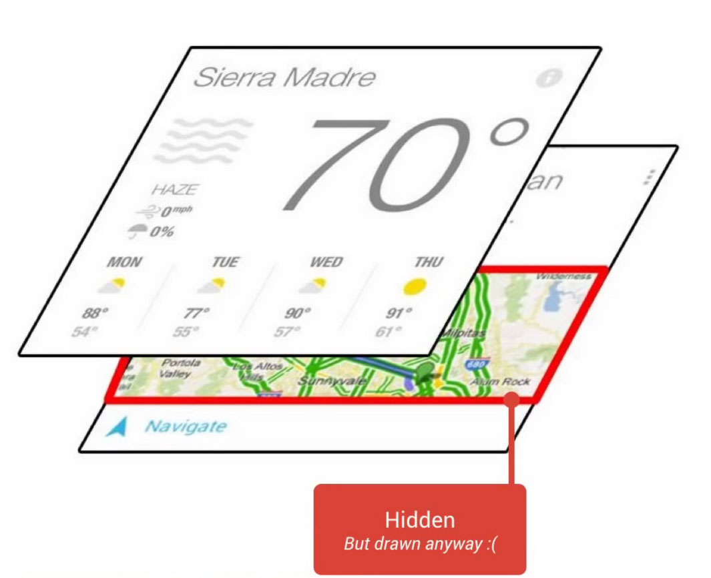
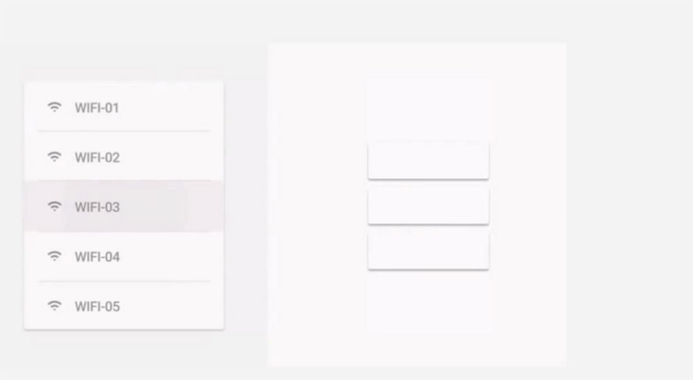
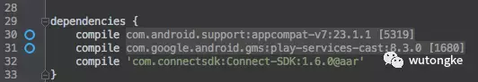
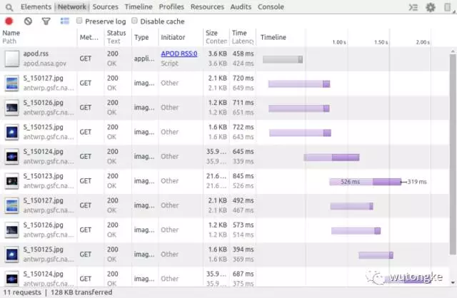
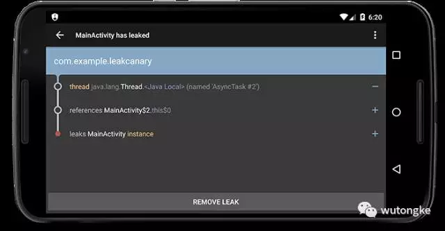
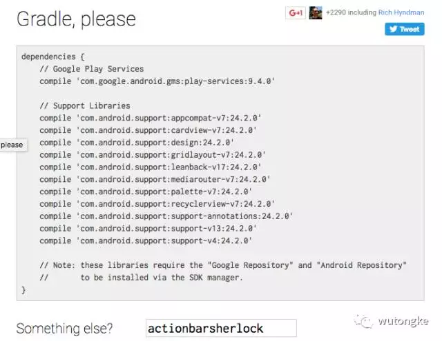
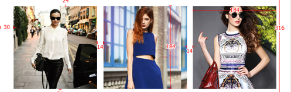

Android 图片加载框架－Picasso的使用指南
前言
Android 中有几个比较有名的图片加载框架，Universal ImageLoader、Picasso、Glide和Fresco。它们各有优点，以前一直用的是ImageLoader 做项目中的图片加载，由于作者宣布ImageLoader 不会在更新了，因此新的项目打算换一个图片加载框架－Picasso, Picasso 是Square 公司开源的Android 端的图片加载和缓存框架。Square 真是一家良心公司啊，为我们Android开发者贡献了很多优秀的开源项目有木有！像什么Rerefoit 、OkHttp、LeakCanary、Picasso等等都是非常火的开源项目。扯远了，回到正题，除了使用简单方便，Picasso还能自动帮我们做以下事情：
- 处理Adapter 中ImageView的回收和取消下载。
- 使用最小的内存 来做复杂的图片变换。比如高斯模糊，圆角、圆形等处理。
- 自动帮我们缓存图片。内存和磁盘缓存。
以上只是列出了Picasso 比较核心的几点，其实它的优点远远不止这些，接下来就看一下如何使用Picasso。
一、添加依赖
要使用Picasso,首先我们要添加版本依赖，去官网或者Github 看一下当前的最新版本(截止本文最新版本为2.5.2)，然后在build.gradle中添加依赖：
compile 'com.squareup.picasso:picasso:2.5.2'
二、加载显示图片
将Picasso添加到项目之后，我们就可以用它来加载图片了，使用方法非常简单：
Picasso.with(this)
.load("http://ww3.sinaimg.cn/large/610dc034jw1fasakfvqe1j20u00mhgn2.jpg")
.into(mImageView);
只需要一行代码就完成了加载图片到显示的整个过程，链式调用，非常简洁，其实有三步，一次调用了三个方法：
- with(Context) 获取一个Picasso单例，参数是一个Context上下文
- load(String) 调用load 方法加载图片
- into (ImageView) 将图片显示在对应的View上，可以是ImageView，也可以是实现了Target j接口的自定义View。
上面演示了加载一张网络图片，它还支持其它形式的图片加载，加载文件图片，加载本地资源图片，加载一个Uri 路径给的图片，提供了几个重载的方法：
(一) load(Uri uri) 加载一个以Uri路径给的图片
Uri uri = Uri.parse(ANDROID_RESOURCE + context.getPackageName() + FOREWARD_SLASH + resourceId)
Picasso.with(this).load(uri).into(mImageView);
(二) load(File file) 加载File中的图片
Picasso.with(this).load(file).into(mImageView);
(三) load(int resourceId) 加载本地资源图片
Picasso.with(this).load(R.mipmap.ic_launcher).into(mImageView);
提醒：上面介绍了load的几个重载方法，加载不同资源的图片，另外提醒注意一下load(String path)接受String 参数的这个方法，参数String 可以是一个网络图片url,也可以是file 路径、content资源 和Android Resource。看一下源码的注释。
/**
- Start an image request using the specified path. This is a convenience method for calling
- {@link #load(Uri)}.
-
- This path may be a remote URL, file resource (prefixed with {@code file:}), content resource
- (prefixed with {@code content:}), or android resource (prefixed with {@code
- android.resource:}.
-
- Passing {@code null} as a {@code path} will not trigger any request but will set a
- placeholder, if one is specified.
- @see #load(Uri)
- @see #load(File)
- @see #load(int)
- @throws IllegalArgumentException if {@code path} is empty or blank string.
*/
public RequestCreator load(String path) {
if (path == null) {
return new RequestCreator(this, null, 0);
}
if (path.trim().length() == 0) {
throw new IllegalArgumentException("Path must not be empty.");
}
return load(Uri.parse(path));
}
要使用string 参数加载上面的几种资源，除了网络url,其它几种需要加上对应前缀，file文件路径前缀：file: , content 添加前缀：content: ,Android Resource 添加：android.resource:
三、placeholder& error & noPlaceholder & noFade
通过上面的第一步我们就可以通过Picasso 加载图片了，我们的项目中通常最常用的就是加载网络图片，但是由于网络环境的差异，有时侯加载网络图片的过程有点慢，这样界面上就会显示空ImageView什么也看不见，用户体验非常不好。其实以前用过ImageLoader的同学都知道，ImageLoader 是可以设置加载中显示默认图片的，Picasso当然也给我们提供了这个功能，这就是我们要说的placeholder(占位图)。
(一) placeholder
placeholder提供一张在网络请求还没有完成时显示的图片，它必须是本地图片，代码如下：
Picasso.with(this).load(URL)
.placeholder(R.drawable.default_bg)
.into(mImageView);
设置placeholder之后，在加载图片的时候，就可以显示设置的默认图了，提升用户体验。
(二) error
和placeholder 的用法一样，error 提供一张在加载图片出错的情况下显示的默认图
Picasso.with(this).load(URL)
.placeholder(R.drawable.default_bg)
.error(R.drawable.error_iamge)
.into(mImageView);
(三) noPlaceholder
这个方法的意思就是：在调用into的时候明确告诉你没有占位图设置。根据这个方法签名的解释是阻止View被回收的时候Picasso清空target或者设置一个应用的占位图。需要注意的是placeholder和noPlaceholder 不能同时应用在同一个请求上，会抛异常。
Picasso.with(this).load(URL)
.noPlaceholder()
.error(R.drawable.error_iamge)
.into(mImageView);
(四) noFade
无论你是否设置了占位图，Picasso 从磁盘或者网络加载图片时，into 显示到ImageView 都会有一个简单的渐入过度效果，让你的UI视觉效果更柔顺丝滑一点，如果你不要这个渐入的效果（没有这么坑爹的需求吧！！！），就调用noFade方法。
Picasso.with(this).load(URL)
.placeholder(R.drawable.default_bg)
.error(R.drawable.error_iamge)
.noFade()
.into(mImageView);
四、设置图片尺寸(Resize)、缩放(Scale)和裁剪(Crop)
(一) Resize(int w,int h)
在项目中，为了带宽、内存使用和下载速度等考虑，服务端给我们的图片的size 应该和我们View 实际的size一样的，但是实际情况并非如此，服务端可能给我们一些奇怪的尺寸的图片，我们可以使用resize(int w,int hei) 来重新设置尺寸。
Picasso.with(this).load(URL)
.placeholder(R.drawable.default_bg)
.error(R.drawable.error_iamge)
.resize(400,200)
.into(mImageView);
resize()方法接受的参数的单位是pixels,还有一个可以设置dp单位的方法，将你的尺寸写在dimens.xml文件中，然后用resizeDimen(int targetWidthResId, int targetHeightResId)方法
<dimen name="image_width">300dp</dimen>
<dimen name="image_height">200dp</dimen>
Picasso.with(this).load(URL)
.placeholder(R.drawable.default_bg)
.error(R.drawable.error_iamge)
.resizeDimen(R.dimen.image_width,R.dimen.image_height)
.into(mImageView);
(二) onlyScaleDown
当调用了resize 方法重新设置图片尺寸的时候，调用onlyScaleDown 方法，只有当原始图片的尺寸大于我们指定的尺寸时，resize才起作用,如：
Picasso.with(this).load(URL)
.placeholder(R.drawable.default_bg)
.error(R.drawable.error_iamge)
.resize(4000,2000)
.onlyScaleDown()
.into(mImageView);
只有当原来的图片尺寸大于4000 x 2000的时候，resize 才起作用。
(三) 图片裁剪 centerCrop()
这个属性应该不陌生吧！ImageView 的ScaleType 就有这个属性。当我们使用resize 来重新设置图片的尺寸的时候，你会发现有些图片拉伸或者扭曲了（使用ImageView的时候碰到过吧），我要避免这种情况，Picasso 同样给我们提供了一个方法，centerCrop，充满ImageView 的边界，居中裁剪。
Picasso.with(this).load(URL)
.placeholder(R.drawable.default_bg)
.error(R.drawable.error_iamge)
.resize(400,200)
.centerCrop()
.into(mImageView);
(四) centerInside
上面的centerCrop是可能看不到全部图片的，如果你想让View将图片展示完全，可以用centerInside，但是如果图片尺寸小于View尺寸的话，是不能充满View边界的。
Picasso.with(this).load(URL)
.placeholder(R.drawable.default_bg)
.error(R.drawable.error_iamge)
.resize(400,200)
.centerInside()
.into(mImageView);
(五) fit
fit 是干什的呢？上面我们需要用resize()来指定我们需要的图片的尺寸，那就是说在程序中需要我们计算我们需要的尺寸（固定大小的除外），这样很麻烦，fit 方法就帮我们解决了这个问题。fit 它会自动测量我们的View的大小，然后内部调用reszie方法把图片裁剪到View的大小，这就帮我们做了计算size和调用resize 这2步。非常方便。代码如下：
Picasso.with(this).load(URL)
.placeholder(R.drawable.default_bg)
.error(R.drawable.error_iamge)
.fit()
.into(mImageView);
使用fit 还是会出现拉伸扭曲的情况，因此最好配合前面的centerCrop使用，代码如下：
Picasso.with(this).load(URL)
.placeholder(R.drawable.default_bg)
.error(R.drawable.error_iamge)
.fit()
.centerCrop()
.into(mImageView);
看一下对比图:
fit(会拉伸):
fit & centerCrop (不会拉伸):
注意：特别注意，
- fit 只对ImageView 有效
- 使用fit时，ImageView 宽和高不能为wrap_content,很好理解，因为它要测量宽高。
五、图片旋转Rotation()
在图片显示到ImageView 之前，还可以对图片做一些旋转操作，调用rotate(int degree)方法
Picasso.with(this).load(URL)
.placeholder(R.drawable.default_bg)
.error(R.drawable.error_iamge)
.rotate(180)
.into(mImageView);
这个方法它是以（0，0）点旋转，但是有些时候我们并不想以（0,0）点旋转，还提供了另外一个方法可以指定原点：
- rotate(float degrees, float pivotX, float pivotY) 以(pivotX, pivotY)为原点旋转
Picasso.with(this).load(URL)
.placeholder(R.drawable.default_bg)
.error(R.drawable.error_iamge)
.rotate(180,200,100)
.into(mImageView);
六、转换器Transformation
Transformation 这就是Picasso的一个非常强大的功能了，它允许你在load图片 -> into ImageView 中间这个过成对图片做一系列的变换。比如你要做图片高斯模糊、添加圆角、做度灰处理、圆形图片等等都可以通过Transformation来完成。
来看一个高斯模糊的例子：
(一) 首先定义一个转换器继承 Transformation
public static class BlurTransformation implements Transformation{
RenderScript rs;
public BlurTransformation(Context context) {
super();
rs = RenderScript.create(context);
}
@Override
public Bitmap transform(Bitmap bitmap) {
// Create another bitmap that will hold the results of the filter.
Bitmap blurredBitmap = bitmap.copy(Bitmap.Config.ARGB_8888, true);
// Allocate memory for Renderscript to work with
Allocation input = Allocation.createFromBitmap(rs, blurredBitmap, Allocation.MipmapControl.MIPMAP_FULL, Allocation.USAGE_SHARED);
Allocation output = Allocation.createTyped(rs, input.getType());
// Load up an instance of the specific script that we want to use.
ScriptIntrinsicBlur script = ScriptIntrinsicBlur.create(rs, Element.U8_4(rs));
script.setInput(input);
// Set the blur radius
script.setRadius(25);
// Start the ScriptIntrinisicBlur
script.forEach(output);
// Copy the output to the blurred bitmap
output.copyTo(blurredBitmap);
bitmap.recycle();
return blurredBitmap;
}
@Override
public String key() {
return "blur";
}
}
(二) 加载图片的时候，在into 方法前面调用 transform方法 应用Transformation
Picasso.with(this).load(URL)
.placeholder(R.drawable.default_bg)
.error(R.drawable.error_iamge)
.transform(new BlurTransformation(this))
.into(mBlurImage);
看一下效果图：
上面为原图，下面为高斯模糊图
是不是很强大，任何复杂的变换都可以通过Transformation 来做。
还不止于此，还有更强大的功能。可以在一个请求上应用多个Transformation
比如：我想先做个灰度处理然后在做一个高斯模糊图：
1.灰度的Transformation
public static class GrayTransformation implements Transformation{
@Override
public Bitmap transform(Bitmap source) {
int width, height;
height = source.getHeight();
width = source.getWidth();
Bitmap bmpGrayscale = Bitmap.createBitmap(width, height, Bitmap.Config.RGB_565);
Canvas c = new Canvas(bmpGrayscale);
Paint paint = new Paint();
ColorMatrix cm = new ColorMatrix();
cm.setSaturation(0);
ColorMatrixColorFilter f = new ColorMatrixColorFilter(cm);
paint.setColorFilter(f);
c.drawBitmap(source, 0, 0, paint);
if(source!=null && source!=bmpGrayscale){
source.recycle();
}
return bmpGrayscale;
}
@Override
public String key() {
return "gray";
}
}
2.如果是多个Transformation操作，有2种方式应用
方式一：直接调用多次transform 方法，不会覆盖的。它只是保存到了一个List 里面
Picasso.with(this).load(URL)
.placeholder(R.drawable.default_bg)
.error(R.drawable.error_iamge)
.fit()
.centerCrop()
.transform(new GrayTransformation())//度灰处理
.transform(new BlurTransformation(this))//高斯模糊
.into(mBlurImage);
需要注意调用的顺序
方式二：接受一个List，将Transformation 放大list 里
List<Transformation> transformations = new ArrayList<>();
transformations.add(new GrayTransformation());
transformations.add(new BlurTransformation(this));
Picasso.with(this).load(URL)
.placeholder(R.drawable.default_bg)
.error(R.drawable.error_iamge)
.fit()
.centerCrop()
.transform(transformations)
.into(mBlurImage);
效果图：
如上图，第一张为灰度操作，第二张为 灰度＋高斯模糊
另外发现了一个开源库，专门写了很多好玩的Transformation，有兴趣的可以看一下：
picasso-transformations
七、请求优先级
Picasso 为请求设置有优先级，有三种优先级，LOW、NORMAL、HIGH。默认情况下都是NORMAL，除了调用fetch 方法，fetch 方法的优先级是LOW。
public enum Priority {
LOW,
NORMAL,
HIGH
}
可以通过priority方法设置请求的优先级，这会影响请求的执行顺序，但是这是不能保证的，它只会往高的优先级靠拢。代码如下：
Picasso.with(this).load(URL)
.placeholder(R.drawable.default_bg)
.error(R.drawable.error_iamge)
.priority(Picasso.Priority.HIGH)
// .priority(Picasso.Priority.LOW)
.into(mImageView);
八、Tag管理请求
Picasso 允许我们为一个请求设置tag来管理请求，看一下对应的几个方法：
下面3个方法是Picasso这个类的：
- cancelTag(Object tag) 取消设置了给定tag的所有请求
- pauseTag(Object tag) 暂停设置了给定tag 的所有请求
- resumeTag(Object tag) resume 被暂停的给定tag的所有请求
还有一个方法是RequestCreator的:
- tag(Object tag) 为请求设置tag
几个方法的意思也很明确，就是我们可以暂停、resume、和取消请求，可以用在哪些场景呢？
场景一： 比如一个照片流列表，当我们快速滑动列表浏览照片的时候，后台会一直发起请求加载照片的，这可能会导致卡顿，那么我们就可以为每个请求设置一个相同的Tag，在快速滑动的时候，调用pauseTag暂停请求，当滑动停止的时候，调用resumeTag恢复请求，这样的体验是不是就会更好一些呢。
Adapter中添加如下代码：
Picasso.with(this).load(mData.get(position))
.placeholder(R.drawable.default_bg)
.error(R.drawable.error_iamge)
.tag("PhotoTag")
.into(holder.mImageView);
Activity中为RecyclerView添加滑动监听：
mRecyclerView.addOnScrollListener(new RecyclerView.OnScrollListener() {
@Override
public void onScrollStateChanged(RecyclerView recyclerView, int newState) {
final Picasso picasso = Picasso.with(MainActivity.this);
if (newState == SCROLL_STATE_IDLE) {
picasso.resumeTag("PhotoTag");
} else {
picasso.pauseTag("PhotoTag");
}
}
});
场景二： 比如一个照片流列表界面，在弱网环境下，加载很慢，退出这个界面时可能会有很多请求没有完成，这个时候我们就可 以通过tag 来取消请求了。
九、同步／异步加载图片
Picasso 加载图片也有同步／异步两种方式
(一) get() 同步
很简单，同步加载使用get() 方法，返回一个Bitmap 对象，代码如下：
try {
Bitmap bitmap = Picasso.with(this).load(URL).get();
} catch (IOException e) {
e.printStackTrace();
}
注意：使用同步方式加载，不能放在主线程来做。
(二) 异步的方式加载图片，fetch()
一般直接加载图片通过into显示到ImageView 是异步的方式，除此之外，还提供了2个异步的方法：
- fetch() 异步方式加载图片
- fetch(Callback callback) 异步方式加载图片并给一个回调接口。
Picasso.with(this).load(URL).fetch(new Callback() {
@Override
public void onSuccess() {
//加载成功
}
@Override
public void onError() {
//加载失败
}
});
这里就要吐槽一下接口设计了，回调并没有返回Bitmap, 不知道作者是怎么考虑的，只是一个通知效果，知道请求失败还是成功。
fetch 方法异步加载图片并没有返回Bitmap，这个方法在请求成功之后，将结果存到了缓存，包括磁盘和内存缓存。所以使用这种方式加载图片适用于这种场景：知道稍后会加载图片，使用fetch 先加载缓存，起到一个预加载的效果。
十、缓存（Disk 和 Memory）
Picasso 有内存缓存(Memory)和磁盘缓存（ Disk）, 首先来看一下源码中对于缓存的介绍：
- LRU memory cache of 15% the available application RAM
- Disk cache of 2% storage space up to 50MB but no less than 5MB. (Note: this is only
available on API 14+ or if you are using a standalone library that provides a disk cache on all API levels like OkHttp) - Three download threads for disk and network access.
可以看出，内存缓存是使用的LRU 策略的缓存实现，它的大小是内存大小的15%,可以自定义它的大小，最后在扩展那一章节再讲，磁盘缓存是磁盘容量的2%但是不超过50M,不少于5M。处理一个请求的时候，按照这个顺讯检查：memory->disk->network 。先检查有木有内存缓存，如果命中，直接返回结果，否则检查磁盘缓存，命中则返回结果，没有命中则从网上获取。
默认情况下，Picasso 内存缓存和磁盘缓存都开启了的，也就是加载图片的时候，内存和磁盘都缓存了，但是有些时候，我们并不需要缓存，比如说：加载一张大图片的时候，如果再内存中保存一份，很容易造成OOM,这时候我们只希望有磁盘缓存，而不希望缓存到内存，因此就需要我们设置缓存策略了。Picasso 提供了这样的方法。
(一) memoryPolicy 设置内存缓存策略
就像上面所说的，有时候我们不希望有内存缓存，我们可以通过 memoryPolicy 来设置。MemoryPolicy是一个枚举，有两个值
NO_CACHE：表示处理请求的时候跳过检查内存缓存
NO_STORE: 表示请求成功之后，不将最终的结果存到内存。
示例代码如下：
with(this).load(URL)
.placeholder(R.drawable.default_bg)
.error(R.drawable.error_iamge)
.memoryPolicy(MemoryPolicy.NO_CACHE,MemoryPolicy.NO_STORE) //静止内存缓存
.into(mBlurImage);
(二) networkPolicy 设置磁盘缓存策略
和内存缓存一样，加载一张图片的时候，你也可以跳过磁盘缓存，和内存缓存策略的控制方式一样，磁盘缓存调用方法networkPolicy(NetworkPolicy policy, NetworkPolicy... additional) , NetworkPolicy是一个枚举类型，有三个值：
- NO_CACHE: 表示处理请求的时候跳过处理磁盘缓存
- NO_STORE: 表示请求成功后，不将结果缓存到Disk,但是这个只对OkHttp有效。
- OFFLINE: 这个就跟 上面两个不一样了，如果networkPolicy方法用的是这个参数，那么Picasso会强制这次请求从缓存中获取结果，不会发起网络请求，不管缓存中能否获取到结果。
使用示例：
with(this).load(URL)
.placeholder(R.drawable.default_bg)
.error(R.drawable.error_iamge)
.memoryPolicy(MemoryPolicy.NO_CACHE,MemoryPolicy.NO_STORE)//跳过内存缓存
.networkPolicy(NetworkPolicy.NO_CACHE)//跳过磁盘缓存
.into(mBlurImage);
强制从缓存获取：
with(this).load(URL)
.placeholder(R.drawable.default_bg)
.error(R.drawable.error_iamge)
.networkPolicy(NetworkPolicy.OFFLINE)//强制从缓存获取结果
.into(mBlurImage);
十一、Debug 和日志
(一) 缓存指示器
上一节说了，Picasso 有内存缓存和磁盘缓存，先从内存获取，没有再去磁盘缓存获取，都有就从网络加载，网络加载是比较昂贵和耗时的。因此，作为一个开发者，我们往往需要加载的图片是从哪儿来的（内存、Disk还是网络），Picasso让我们很容易就实现了。只需要调用一个方法setIndicatorsEnabled(boolean)就可以了,它会在图片的左上角出现一个带色块的三角形标示，有3种颜色，绿色表示从内存加载、蓝色表示从磁盘加载、红色表示从网络加载。
Picasso.with(this).setIndicatorsEnabled(true);//显示指示器
效果图：
如上图所示，第一张图从网络获取，第二张从磁盘获取，第三张图从内存获取。
看一下源码中定义指示器的颜色：
/** Describes where the image was loaded from. */
public enum LoadedFrom {
MEMORY(Color.GREEN),
DISK(Color.BLUE),
NETWORK(Color.RED);
final int debugColor;
private LoadedFrom(int debugColor) {
this.debugColor = debugColor;
}
}
可以很清楚看出，对应三种颜色代表着图片的来源。
(二) 日志
上面的指示器能够很好的帮助我们看出图片的来源，但是有时候我们需要更详细的信息，Picasso,可以打印一些日志，比如一些关键方法的执行时间等等，我们只需要调用setLoggingEnabled(true)方法，然后App在加载图片的过程中，我们就可以从logcat 看到一些关键的日志信息。
Picasso.with(this).setLoggingEnabled(true);//开启日志打印
十二、Picasso 扩展
到目前为止，Picasso的基本使用已经讲得差不多了，但是在实际项目中我们这可能还满足不了我们的需求，我们需要对它做一些自己的扩展，比如我们需要换缓存的位置、我们需要扩大缓存、自定义线程池、自定义下载器等等。这些都是可以的，接下来我们来看一下可以做哪些方面的扩展。
(一) 用Builder 自己构造一个Picasso Instance
我们来回顾一下前面是怎么用Picasso加载图片的：
Picasso.with(this)
.load("http://ww3.sinaimg.cn/large/610dc034jw1fasakfvqe1j20u00mhgn2.jpg")
.into(mImageView);
总共3步：
- 用with方法获取一个Picasso 示例
- 用load方法加载图片
- 用into 放法显示图片
首先Picasso是一个单例模式，我们每一次获取的示例都是默认提供给我们的实例。但是也可以不用它给的Instance,我们直接用builder来构造一个Picasso:
Picasso.Builder builder = new Picasso.Builder(this);
//构造一个Picasso
Picasso picasso = builder.build();
//加载图片
picasso.load(URL)
.into(mImageView);
这样我们就构造了一个局部的Picasso实例，当然了，我们直接用new 了一个builder，然后build()生成了一个Picasso。这跟默认的通过with方法获取的实例是一样的。那么现在我们就可以配置一些自定义的功能了。
(二) 配置自定义下载器 downLoader
如果我们不想用默认提供的Downloader,那么我们可以自定义一个下载器然后配置进去。举个例子：
1、先自定义一个Downloader(只是举个例子，并没有实现):
/**
* Created by zhouwei on 17/2/26.
*/
public class CustomDownloader implements Downloader {
@Override
public Response load(Uri uri, int networkPolicy) throws IOException {
return null;
}
@Override
public void shutdown() {
}
}
2、然后通过builder配置：
//配置下载器
builder.downloader(new CustomDownloader());
//构造一个Picasso
Picasso picasso = builder.build();
这样配置后，我们用build()生成的Picasso 实例来加载图片就会使用自定义的下载器来下载图片了。
(三) 配置缓存
前面说过，内存缓存是用的LRU Cahce ,大小是手机内存的15% ，如果你想缓存大小更大一点或者更小一点，可以自定义，然后配置。
//配置缓存
LruCache cache = new LruCache(5 * 1024 * 1024);// 设置缓存大小
builder.memoryCache(cache);
上面只是一个简单的举例，当然了你可以自定义，也可以使用LRUCache,改变大小，改变存储路径等等。
提示： 很遗憾，好像没有提供改变磁盘缓存的接口，那就只能用默认的了。
(四) 配置线程池
Picasso 默认的线程池的核心线程数为3，如果你觉得不够用的话，可以配置自己需要的线程池，举个列子：
//配置线程池
ExecutorService executorService = Executors.newFixedThreadPool(8);
builder.executor(executorService);
(五) 配置全局的 Picasso Instance
上面说的这些自定义配置项目都是应用在一个局部的Picasso instance 上的，我们不可能每一次使用都要重新配置一下，这样就太麻烦了。我们希望我们的这些自定义配置能在整个项目都应用上，并且只配置一次。其实Picasso 给我们提供了这样的方法。可以调用setSingletonInstance(Picasso picasso)就可以了，看一下这个方法的源码：
/**
* Set the global instance returned from {@link #with}.
* <p>
* This method must be called before any calls to {@link #with} and may only be called once.
*/
public static void setSingletonInstance(Picasso picasso) {
synchronized (Picasso.class) {
if (singleton != null) {
throw new IllegalStateException("Singleton instance already exists.");
}
singleton = picasso;
}
}
设置一个通过with方法返回的全局instance。我们只希望配置一次，所以，我们应该在Application 的onCreate方法中做全局配置就可以了。app一启动就配置好，然后直接和前面的使用方法一样，调用with方法获取Picasso instance 加载图片就OK了。
因此在Application 中添加如下代码：
@Override
public void onCreate() {
super.onCreate();
// 配置全局的Picasso instance
Picasso.Builder builder = new Picasso.Builder(this);
//配置下载器
builder.downloader(new CustomDownloader());
//配置缓存
LruCache cache = new LruCache(5*1024*1024);// 设置缓存大小
builder.memoryCache(cache);
//配置线程池
ExecutorService executorService = Executors.newFixedThreadPool(8);
builder.executor(executorService);
//构造一个Picasso
Picasso picasso = builder.build();
// 设置全局单列instance
Picasso.setSingletonInstance(picasso);
}
然后应用这些自定义配置加载图片
Picasso.with(this).load("http://ww3.sinaimg.cn/large/610dc034jw1fasakfvqe1j20u00mhgn2.jpg").into(mImageView);
用法和以前的一样，但是我们已经将我们的自定义配置应用上了。
结尾
以上就是对Picasso 用法的全部总结，如有什么问题，欢迎留言指正。Picasso真的是一个强大的图片加载缓存库，API 简单好用，而且是链式调用的（这点我特别喜欢）。官方文档写的比较简单，很多用法都要看源码和注释才知道。希望本文能给才开始使用Picasso 的同学一点帮助。
Android 界面性能调优
前言
界面是 Android 应用中直接影响用户体验最关键的部分。如果代码实现得不好，界面容易发生卡顿且导致应用占用大量内存。又卡又慢的应用体验，会影响客户或用户对产品的信心和评价，所以不可忽视。
一、 Android渲染知识
(一) 绘制原理
Android系统要求每一帧都要在 16ms 内绘制完成，平滑的完成一帧意味着任何特殊的帧需要执行所有的渲染代码（包括 framework 发送给 GPU 和 CPU 绘制到缓冲区的命令）都要在 16ms 内完成，保持流畅的体验。这个速度允许系统在动画和输入事件的过程中以约 60 帧每秒(1秒 / 0.016帧每秒 = 62.5帧/秒)的平滑帧率来渲染。
如果你的应用没有在 16ms 内完成这一帧的绘制，假设你花了 24ms 来绘制这一帧，那么就会出现掉帧的情况。
系统准备将新的一帧绘制到屏幕上，但是这一帧并没有准备好，所有就不会有绘制操作，画面也就不会刷新。反馈到用户身上，就是用户盯着同一张图看了 32ms 而不是 16ms ，也就是说掉帧发生了。
(二) 掉帧
掉帧是用户体验中一个非常核心的问题。丢弃了当前帧，并且之后不能够延续之前的帧率，这种不连续的间隔会容易会引起用户的注意，也就是我们常说的卡顿、不流畅。
引起掉帧的原因非常多，比如：
-
花了非常多时间重新绘制界面中的大部分东西，这样非常浪费CPU周期.

-
过度绘制严重，在绘制用户看不到的对象上花费了太多的时间.
 -
有一大堆动画重复了一遍又一遍，消耗 CPU 、 GPU 资源
 -
频繁的触发垃圾回收
(三) 为什么是60Fps？
Android系统要求每一帧都要在 16ms 内绘制完成，那么1秒的帧率就是约 60 帧每秒（ 1秒 / 0.016帧每秒 = 62.5帧/秒 ），那为什么要以 60 Fps来作为 App 性能的衡量标准呢？这是因为人眼和大脑之间的协作无法感知到超过 60 Fps的画面更新。
市面上绝大多数Android设备的屏幕刷新频率是 60 HZ。当然，超过 60 Fps 是没有意义的，人眼感知不到区别。24 Fps 是人眼能感知的连续线性的运动，所以是电影胶圈的常用帧率，因为这个帧率已经足够支撑大部分电影画面所要表达的内容，同时能最大限度地减少费用支出。但是，低于 30 Fps 是无法顺畅表现绚丽的画面内容的，此时就需要用到 60 Fps 来达到想要表达的效果。了解更多Fps知识详见「Wiki」。
应用的界面性能目标就是保持 60 Fps，这意味着每一帧你只有 16 ms（1秒 / 60帧率）的时间来处理所有的任务。
(四) 垃圾回收
垃圾回收器是一个在应用运行期间自动释放那些不再引用的内存的机制，常称 GC 。频繁的 GC 也是导致严重性能问题的罪魁祸首之一。
前面提到，平滑的完成一帧意味着所有渲染代码都必须在 16ms 内完成。频繁的 GC 会严重限制一帧时间内的剩余时间，如果 GC 所做的工作超过了那些必须的工作，那么留给应用平滑的帧率的时间就越少。越接近 16ms ，在垃圾回收事件触发的时候，就越容易导致卡顿。
注意，Android4.4 引进了新的 ART 虚拟机来取代 Dalvik 虚拟机。它们的机制大有不同，简单而言：
- Dalvik 虚拟机的 GC 是非常耗资源的，并且在正常的情况下一个硬件性能不错的Android设备也会很容易耗费掉 10 - 20 ms 的时间；
- ART 虚拟机的GC会动态提升垃圾回收的效率，在 ART 中的中断，通常在 2 - 3 ms 间。 比 Dalvik 虚拟机有很大的性能提升；
ART 虚拟机相对于 Dalvik 虚拟机来说的垃圾回收来说有一个很大的性能提升，但 2 - 3 ms 的回收时间对于超过16ms帧率的界限也是足够的。因此，尽管垃圾回收在 Android 5.0 之后不再是耗资源的行为，但也是始终需要尽可能避免的，特别是在执行动画的情况下，可能会导致一些让用户明显感觉的丢帧。
想了解更多详细的 ART 和 Dalvik 虚拟机垃圾回收机制，可「戳我」和「我」进行深入了解。
(五) UI 线程
UI 线程是应用的主线程，很多的性能和卡顿问题是由于我们在主线程中做了大量的工作。
所以，所有耗资源的操作，比如 IO 操作、网络操作、SQL 操作、列表刷新等，都应该用后台进程去实现，不能占用主线程，主线程是 UI 线程，是保持程序流畅的关键；
在 Android 5.0 版本里，Android 框架层引入了 “ Render Thread ” ，用于向 GPU 发送实际渲染的操作。这个线程减轻了一些 UI 线程减少的操作。但是输入、滚动和动画仍然在 UI thread，因为 Thread 必须能够响应操作。
(六) 垂直同步
垂直同步是 Android4.1 通过 Project Butter 在 UI 架构中引入的新技术，同期引入的还有 Triple Buffer 和 HWComposer 等技术，都是为提高 UI 的流畅性而生。
举个例子，你拍了一张照片，然后旋转5度再拍另外一张照片，将两照片的中间剪开并拼接在一起，得到下图：
中间这部分有明显区别的部分，等价于设备刷新率和帧速率不一致的结果。
一般而言， GPU 的帧速率应高于刷新率，才不会卡顿或掉帧。如果屏幕刷新率比帧速率还快，屏幕会在两帧中显示同一个画面，这种断断续续情况持续发生时，用户将会很明显地感觉到动画的卡顿或者掉帧，然后又恢复正常，我们常称之为闪屏、跳帧、延迟。
应用应避免这些帧率下降的情况，以确保 GPU 能在屏幕刷新之前完成数据的获取及写入，保证动画流畅。
(七) UI 绘制机制与栅格化
绝大多数渲染操作都依赖两个硬件： CPU 、 GPU 。 CPU 负责 Measure 、 layout 、 Record 、 Execute 的计算操作， GPU 负责栅格化（ Rasterization ）操作。 非必需的视图组件会带来多余的 CPU 计算操作，还会占用多余的 GPU 资源。
栅格化（ Rasterization ）能将 Button 、 Shape 、 Path 、 Bitmap 等资源组件拆分到不同的像素上进行显示。这个操作很费时，所以引入了 GPU 来加快栅格化的操作。
CPU 负责把 UI 组件计算成多边形（ Polygons ），纹理（ Texture ），然后交给 GPU 进行栅格化渲染，再将处理结果传到屏幕上显示。
在 Android 里的那些资源组件的显示（比如 Bitmaps 、 Drawable ），都是一起打包到统一的纹理（ Texture ）当中，然后再传递到 GPU 里面。
图片的显示，则是先经过 CPU 的计算加载到内存中，再传给 GPU 进行渲染。
文字的显示，则是先经过 CPU 换算成纹理（ Texture ），再传给 GPU 进行渲染，返回到 CPU 绘制单个字符的时候，再重新引用经过 GPU 渲染的内容。
动画的显示更加复杂，我们需要在 16 ms 内处理完所有 CPU 和 GPU 的计算、绘制、渲染等操作，才能获得应用的流畅体验。
二、To检测和解决
(一) 检测维度
根据业务的不同与所需要的测试粒度的不同，就会有不同的检测维度。目前我所在业务所需的界面性能检测维度如下：
- 界面过度绘制；（检测过度绘制）
- 渲染性能；（检测严格模式下的UI渲染性能呈现）
- 布局边界合理性；（检测元素显示的合理性）
还有专项测试中某些用户场景可能还包含着另外一些隐形的检测维度，比如：
- OpenGL 跟踪分析；
- GPU 视图更新合理性；
- Flash 硬件层更新合理性；
- 动画加 / 减速状态问题点检测；
- ……
(二) 调试工具
检测和解决界面性能问题很大程度上依赖于你的应用程序架构，幸运的是，Andorid 提供了很多调试工具，知道并学会使用这些工具很重要，它们可以帮助我们调试和分析界面性能问题，以让应用拥有更好的性能体验。下面列举Android常见的界面性能调试工具：
1、Hierarchy View
Hierarchy View 在Android SDK里自带，常用来查看界面的视图结构是否过于复杂，用于了解哪些视图过度绘制，又该如何进行改进。详见官方使用教程（需要翻墙）:「戳我」，官方介绍「戳我」。
2、Lint
Lint 是 ADT 自带的静态代码扫描工具，可以给 XML 布局文件和 项目代码中不合理的或存在风险的模块提出改善性建议。官方关于 Lint 的实际使用的提示，列举几点如下：
- 包含无用的分支，建议去除；
- 包含无用的父控件，建议去除；
- 警告该布局深度过深；
- 建议使用 compound drawables ；
- 建议使用 merge 标签；
- ……
更多 Lint 的官方介绍「戳我」。
3、Systrace
Systrace 在Android DDMS 里自带，可以用来跟踪 graphics 、view 和 window 的信息，发现一些深层次的问题。很麻烦，限制大，实际调试中我基本用不到。官方介绍 「戳我」和 「我」。
4、Track
Track 在 Android DDMS里自带，是个很棒的用来跟踪构造视图的时候哪些方法费时，精确到每一个函数，无论是应用函数还是系统函数，我们可以很容易地看到掉帧的地方以及那一帧所有函数的调用情况，找出问题点进行优化。官方介绍 「戳我」。
5、OverDraw
通过在 Android 设备的设置 APP 的开发者选项里打开 “ 调试 GPU 过度绘制 ” ，来查看应用所有界面及分支界面下的过度绘制情况，方便进行优化。官方介绍 「戳我」。
6、GPU 呈现模式分析
通过在 Android 设备的设置 APP 的开发者选项里启动 “ GPU 呈现模式分析 ” ，可以得到最近 128 帧 每一帧渲染的时间，分析性能渲染的性能及性能瓶颈。官方介绍 「戳我」。
7、StrictMode
通过在 Android 设备的设置 APP 的开发者选项里启动 “ 严格模式 ” ，来查看应用哪些操作在主线程上执行时间过长。当一些操作违背了严格模式时屏幕的四周边界会闪烁红色，同时输出 StrictMode 的相关信息到 LOGCAT 日志中。
8、Animator duration scale
通过在 Android 设备的设置 APP 的开发者选项里打开 “ 窗口动画缩放 ” / “ 过渡动画缩放 ” / “ 动画程序时长缩放 ”，来加速或减慢动画的时间，以查看加速或减慢状态下的动画是否会有问题。
9、Show hardware layer updates
通过在 Android 设备的设置 APP 的开发者选项里启动 “ 显示硬件层更新 ”，当 Flash 硬件层在进行更新时会显示为绿色。使用这个工具可以让你查看在动画期间哪些不期望更新的布局有更新，方便你进行优化，以获得应用更好的性能。实例《 Optimizing Android Hardware Layers 》（需要翻墙）:「戳我」。
(三) 如何解决
前面提到过我司的目前所需的测试维度如下：
- 界面过度绘制；（检测过度绘制）
- 渲染性能；（检测严格模式下的UI渲染性能呈现）
- 布局边界合理性；（检测元素显示的合理性）
故接下来将围绕这三两点，分别从概念、追踪、挖掘根源以及排查的工具来具体讲述如何解决，以及给开发的优化建议。
三、界面过度绘制（OverDraw）
(一) 过度绘制概念
过度绘制是一个术语，表示某些组件在屏幕上的一个像素点的绘制次数超过 1 次。
通俗来讲，绘制界面可以类比成一个涂鸦客涂鸦墙壁，涂鸦是一件工作量很大的事情，墙面的每个点在涂鸦过程中可能被涂了各种各样的颜色，但最终呈现的颜色却只可能是 1 种。这意味着我们花大力气涂鸦过程中那些非最终呈现的颜色对路人是不可见的，是一种对时间、精力和资源的浪费，存在很大的改善空间。绘制界面同理，花了太多的时间去绘制那些堆叠在下面的、用户看不到的东西，这样是在浪费CPU周期和渲染时间！
官方例子，被用户激活的卡片在最上面,而那些没有激活的卡片在下面，在绘制用户看不到的对象上花费了太多的时间。
(二) 追踪过度绘制
通过在 Android 设备的设置 APP 的开发者选项里打开 “ 调试 GPU 过度绘制 ” ，来查看应用所有界面及分支界面下的过度绘制情况，方便进行优化。
Android 会在屏幕上显示不同深浅的颜色来表示过度绘制：
- 没颜色：没有过度绘制，即一个像素点绘制了 1 次，显示应用本来的颜色；
- 蓝色：1倍过度绘制，即一个像素点绘制了 2 次；
- 绿色：2倍过度绘制，即一个像素点绘制了 3 次；
- 浅红色：3倍过度绘制，即一个像素点绘制了 4 次；
- 深红色：4倍过度绘制及以上，即一个像素点绘制了 5 次及以上。

设备的硬件性能是有限的，当过度绘制导致应用需要消耗更多资源（超过了可用资源）的时候性能就会降低，表现为卡顿、不流畅、ANR 等。为了最大限度地提高应用的性能和体验，就需要尽可能地减少过度绘制，即更多的蓝色色块而不是红色色块。
实际测试，常用以下两点来作为过度绘制的测试指标，将过度绘制控制在一个约定好的合理范围内：
- 应用所有界面以及分支界面均不存在超过4X过度绘制（深红色区域）；
- 应用所有界面以及分支界面下，3X过度绘制总面积（浅红色区域）不超过屏幕可视区域的1/4；
(三) 过度绘制的根源
过度绘制很大程度上来自于视图相互重叠的问题，其次还有不必要的背景重叠。
官方例子，比如一个应用所有的View都有背景的话，就会看起来像第一张图中那样，而在去除这些不必要的背景之后（指的是Window的默认背景、Layout的背景、文字以及图片的可能存在的背景），效果就像第二张图那样，基本没有过度绘制的情况。
(四) 不合理的xml布局对绘制的影响
当布局文件的节点树的深度越深，XML 中的标签和属性设置越多，对界面的显示有灾难性影响。
一个界面要显示出来，第一步会进行解析布局，在 requestLayout 之后还要进行一系列的 measure 、 layout 、 draw 操作，若布局文件嵌套过深、拥有的标签属性过于臃肿，每一步的执行时间都会受到影响，而界面的显示是进行完这些操作后才会显示的，所以每一步操作的时间增长，最终显示的时间就会越长。
(五) 源码相关
有能力且有兴趣看源码的童鞋，过度绘制的源码位置在: /frameworks/base/libs/hwui/OpenGLRenderer.cpp ，有兴趣的可以去研究查看。
if (Properties::debugOverdraw && getTargetFbo() == 0) {
const Rect* clip = &mTilingClip;
mRenderState.scissor().setEnabled(true);
mRenderState.scissor().set(clip->left,
mState.firstSnapshot()->getViewportHeight() - clip->bottom,
clip->right - clip->left,
clip->bottom - clip->top);
// 1x overdraw
mRenderState.stencil().enableDebugTest(2);
drawColor(mCaches.getOverdrawColor(1), SkXfermode::kdata-urlOver_Mode);
// 2x overdraw
mRenderState.stencil().enableDebugTest(3);
drawColor(mCaches.getOverdrawColor(2), SkXfermode::kdata-urlOver_Mode);
// 3x overdraw
mRenderState.stencil().enableDebugTest(4);
drawColor(mCaches.getOverdrawColor(3), SkXfermode::kdata-urlOver_Mode);
// 4x overdraw and higher
mRenderState.stencil().enableDebugTest(4, true);
drawColor(mCaches.getOverdrawColor(4), SkXfermode::kdata-urlOver_Mode);
mRenderState.stencil().disable();
}
}
四、 渲染性能（Rendering）
(一) 渲染性能概念
渲染性能往往是掉帧的罪魁祸首，这种问题很常见，让人头疼。好在 Android 给我们提供了一个强大的工具，帮助我们非常容易追踪性能渲染问题，看到究竟是什么导致你的应用出现卡顿、掉帧。
(二) 追踪渲染性能
通过在 Android 设备的设置 APP 的开发者选项里打开 “ GPU 呈现模式分析 ” 选项，选择 ” 在屏幕上显示为条形图 “。
这个工具会在Android 设备的屏幕上实时显示当前界面的最近 128 帧 的 GPU 绘制图形数据，包括 StatusBar 、 NavBar 、 当前界面的 GPU 绘制图形柱状图数据。我们一般只需关心当前界面的 GPU 绘制图形数据即可。
界面上一共有 128 个小柱状图，代表的是当前界面最近的 128 帧 GPU 绘制图形数据。一个小柱状图代表的这一帧画面渲染的耗时，柱状图越高代表耗时越长。随着界面的刷新，柱状图信息也会实时滚动刷新。
中间有一条绿线，代表 16 ms ，保持动画流畅的关键就在于让这些垂直的柱状条尽可能地保持在绿线下面,任何时候超过绿线,你就有可能丢失一帧的内容。
每一个柱状图都是由三种颜色构成：蓝、红、黄。
- 蓝色代表的是这一帧绘制 Display List 的时间。通俗来说，就是记录了需要花费多长时间在屏幕上更新视图。用代码语言来说，就是执行视图的 onDraw 方法，创建或更新每一个视图的 Display List 的时间。
- 红色代表的是这一帧 OpenGL 渲染 Display List 所需要的时间。通俗来说，就是记录了执行视图绘制的耗时。用代码语言来说，就是 Android 用 OpenGL ES 的 API 接口进行 2D 渲染 Display List 的时间。
- 黄色代表的是这一帧 CPU 等待 GPU 处理的时间。通俗来说，就是 CPU 等待 GPU 发出接到命令的回复的等待时间。用代码语言来说，就是这是一个阻塞调用。

实际测试，常用以下两点来作为渲染性能的测试指标，将渲染性能控制在一个约定好的合理范围内：
- 执行应用的所有功能及分支功能，操作过程中涉及的柱状条区域应至少 90 % 保持到绿线下面；
- 从用户体检的角度主观判断应用在 512 M 内存的 Android 设备下所有操作过程中的卡顿感是否能接受，不会感觉突兀怪异；
(三) 渲染性能差的根源
当你看到蓝色的线较高的时候，可能是由于你的视图突然无效了需要重新绘制，或者是自定义的视图过于复杂耗时过长。
当你看到红色的线较高的时候，可能是由于你的视图重新提交了需要重新绘制导致的（比如屏幕从竖屏旋转成横屏后当前界面重新创建），或者是自定义的视图很复杂，绘制起来很麻烦，导致耗时过长。比如下面这种视图：
当你看到黄色的线较高的时候，那就意味着你给 GPU 太多的工作，太多的负责视图需要 OpenGL 命令去绘制和处理，导致 CPU 迟迟没等到 GPU 发出接到命令的回复。
(四) 检测说明
这个工具能够很好地帮助你找到渲染相关的问题，帮助你找到卡顿的性能瓶颈，追踪究竟是什么导致被测应用出现卡顿、变慢的情况，以便在代码层面进行优化。甚至让负责产品设计的人去改善他的设计，以获得良好的用户体验。
检测渲染性能时，常伴随着开启“ 严格模式 ” 查看应用哪些情景在 UI 线程（主线程）上执行时间过长。
另外有些强大但可能少用的工具在测试性能渲染时辅助分析，比如：
- HierarchyViewer：这个工具常用来查看界面的视图结构是否过于复杂，用于了解哪些视图过度绘制，又该如何进行改进；
- Tracer for OpenGL：这个工具收集了所有UI界面发给GPU的绘制命令。常用于辅助开发人员 DEBUG 、定位一些 HierarchyViewer 工具定位不了的疑难渲染细节问题。
(五) UI绘制机制的补充说明
如上面所说，布局和 UI 组件等都会先经过 CPU 计算成 GPU 能够识别并绘制的多边形（ Polygons ），纹理（ Texture ），然后交给 GPU 进行栅格化渲染，再将处理结果传到屏幕上显示。 “ CPU 计算成 GPU 能够识别并绘制的对象 ” 这个操作是在 DisplayList 的帮助下完成的。DisplayList 拥有要交给 GPU 栅格化渲染到屏幕上的数据信息。
DisplayList 会在某个视图第一次需要渲染时创建。当该视图有类似位置被移动等变化而需要重新渲染这个视图的时候，则只需 GPU 额外执行一次渲染指令冰更新到屏幕上就够了。但如果视图中的绘制内容发生变化时（比如不可见了），那之间的 DisplayList 就无法继续使用了，这时系统就会重新执行一次重新创建 DisplayList 、渲染DisplayList 并更新到屏幕上。这个流程的表现性能取决于该视图的复杂程度。
五、给开发的界面优化 Advice
(一) 优化布局的结构
布局结构太复杂，会减慢渲染的速度，造成性能瓶颈。我们可以通过以下这些惯用、有效的布局原则来优化：
- 避免复杂的View层级。布局越复杂就越臃肿，就越容易出现性能问题，寻找最节省资源的方式去展示嵌套的内容；
- 尽量避免在视图层级的顶层使用相对布局 RelativeLayout 。相对布局 RelativeLayout 比较耗资源，因为一个相对布局 RelativeLayout 需要两次度量来确保自己处理了所有的布局关系，而且这个问题会伴随着视图层级中的相对布局 RelativeLayout 的增多，而变得更严重；
- 布局层级一样的情况建议使用线性布局 LinearLayout 代替相对布局 RelativeLayout，因为线性布局 LinearLayout 性能要更高一些；确实需要对分支进行相对布局 RelativeLayout 的时候，可以考虑更优化的网格布局 GridLayout ，它已经预处理了分支视图的关系，可以避免两次度量的问题；
- 相对复杂的布局建议采用相对布局 RelativeLayout ，相对布局 RelativeLayout 可以简单实现线性布局 LinearLayout 嵌套才能实现的布局；
- 不要使用绝对布局 AbsoluteLayout ；
- 将可重复使用的组件抽取出来并用 标签进行重用。如果应用多个地方的 UI 用到某个布局，就将其写成一个布局部件，便于各个 UI 重用。官方详解 「 戳我 」
- 使用 merge 标签减少布局的嵌套层次，官方详解 「 戳我 」；
去掉多余的不可见背景。有多层背景颜色的布局，只留最上层的对用户可见的颜色即可，其他用户不可见的底层颜色可以去掉，减少无效的绘制操作； - 尽量避免使用 layoutweight 属性。使用包含 layoutweight 属性的线性布局 LinearLayout 每一个子组件都需要被测量两次，会消耗过多的系统资源。在使用 ListView 标签与 GridView 标签的时候，这个问题显的尤其重要，因为子组件会重复被创建。平分布局可以使用相对布局 RelativeLayout 里一个 0dp 的 view 做分割线来搞定，如果不行，那就……；
- 合理的界面的布局结构应是宽而浅，而不是窄而深；
(二) 优化处理逻辑
- 按需载入视图。某些不怎么重用的耗资源视图，可以等到需要的时候再加载，提高UI渲染速度；
- 使用 ViewStub 标签来加载一些不常用的布局；
- 动态地 inflation view 性能要比用 ViewStub 标签的 setVisiblity 性能要好，当然某些功能的实现采用 ViewStub 标签更合适；
- 尽量避免不必要的耗资源操作，节省宝贵的运算时间；
- 避免在 UI 线程进行繁重的操作。耗资源的操作（比如 IO 操作、网络操作、SQL 操作、列表刷新等）耗资源的操作应用后台进程去实现，不能占用 UI 线程，UI 线程是主线程，主线程是保持程序流畅的关键，应该只操作那些核心的 UI 操作，比如处理视图的属性和绘制；
- 最小化唤醒机制。我们常用广播来接收那些期望响应的消息和事件，但过多的响应超过本身需求的话，会消耗多余的 Android 设备性能和资源。所以应该最小化唤醒机制，当应用不关心这些消失和事件时，就关闭广播，并慎重选择那些要响应的 Intent 。
- 为低端设备考虑，比如 512M 内存、双核 CPU 、低分辨率，确保你的应用可以满足不同水平的设备。
- 优化应用的启动速度。当应用启动一个应用时，界面的尽快反馈显示可以给用户一个良好的体验。为了启动更快，可以延迟加载一些 UI 以及避免在应用 Application 层级初始化代码。
(三) 善用 DEBUG 工具
- 多使用Android提供的一些调试工具去追踪应用主要功能的性能情况；
- 多使用Android提供的一些调试工具去追踪应用主要功能的内存分配情况；
Android View的工作流程
前言
写了那么多自定义View，但是对于其中的原理以及工作流程还不是很了解，所以这篇博文来总结和回顾一下Android开发中的View的工作流程，view的工作流程主要包含measure、layout和draw三大流程，在进入主题之前，先要理解一下几个概念，以便更好的理解view的三大流程。
转载自《安卓复习之旅——View的工作流程》
了解ViewRoot和DecorView
ViewRoot对应ViewRootImpl类，实现了ViewParent接口，它是连接WindowManager和DecorView的桥梁，WindowManager的实现类是WindowManagerImpl类:
public final class WindowManagerImpl implements WindowManager {
private final WindowManagerGlobal mGlobal = WindowManagerGlobal.getInstance();
private final Context mContext;
private final Window mParentWindow;
private IBinder mDefaultToken;
其中WindowManagerGlobal相当与一个代理类，WindowManagerImpl 中的实现的方法都是通过WindowManagerGlobal来具体实现的，我们来看看WindowManagerImpl 中的addView()方法：
@Override
public void addView(@NonNull View view, @NonNull ViewGroup.LayoutParams params) {
applyDefaultToken(params);
mGlobal.addView(view, params, mContext.getDisplay(), mParentWindow);
}
可以看出确实是通过WindowManagerGlobal的addView()方法来具体实现的，进入WindowManagerGlobal的addView()方法：
public void addView(View view, ViewGroup.LayoutParams params,
Display display, Window parentWindow) {
...
final WindowManager.LayoutParams wparams = (WindowManager.LayoutParams) params;
ViewRootImpl root;
View panelParentView = null;
synchronized (mLock) {
int index = findViewLocked(view, false);
if (index >= 0) {
if (mDyingViews.contains(view)) {
// Don't wait for MSG_DIE to make it's way through root's queue.
mRoots.get(index).doDie();
} else {
throw new IllegalStateException("View " + view
+ " has already been added to the window manager.");
}
// The previous removeView() had not completed executing. Now it has.
}
// If this is a panel window, then find the window it is being
// attached to for future reference.
if (wparams.type >= WindowManager.LayoutParams.FIRST_SUB_WINDOW &&
wparams.type <= WindowManager.LayoutParams.LAST_SUB_WINDOW) {
final int count = mViews.size();
for (int i = 0; i < count; i++) {
if (mRoots.get(i).mWindow.asBinder() == wparams.token) {
panelParentView = mViews.get(i);
}
}
}
//实例化ViewRootImpl
root = new ViewRootImpl(view.getContext(), display);
view.setLayoutParams(wparams);
mViews.add(view);
mRoots.add(root);
mParams.add(wparams);
// do this last because it fires off messages to start doing things
try {
//连接WindowManager和DecorView
root.setView(view, wparams, panelParentView);
} catch (RuntimeException e) {
// BadTokenException or InvalidDisplayException, clean up.
if (index >= 0) {
removeViewLocked(index, true);
}
throw e;
}
}
}
由上面注释的代码可以看出ViewRootImpl是连接WindowManager和DecorView的桥梁。
DecorView是FrameLayout的子类，它可以被认为是Android视图树的根节点视图。DecorView作为顶级View，一般情况下它内部包含一个竖直方向的LinearLayout，在这个LinearLayout里面有上下两个部分（具体情况和Android版本及主体有关），上面的是标题栏，下面的是内容栏。在Activity中通过setContentView所设置的布局文件其实就是被加到内容栏之中的，而内容栏的id是content，在代码中可以通过ViewGroup content = （ViewGroup)findViewById(R.android.id.content)来得到content对应的layout。
DecorView的结构图：

View的绘制流程
View的绘制流程是从ViewRootImpl的performTraversals()方法开始的，它经过measure、layout和draw三个流程才能最终将view绘制出来，其中measure测量view的宽高，layout确定view在父容器中的位置，draw负责将view绘制在屏幕上。
view的绘制流程图：

performTraversals()方法源码比较长，就不贴出来了，有兴趣可以去查看一下，从上面的流程图可以看出performTraversals会依次调用 performMeasure(childWidthMeasureSpec, childHeightMeasureSpec); - performLayout(lp, mWidth, mHeight); - **performDraw();**三个方法，这三个方法顶级view的三个流程，在 **performMeasure()中会调用mView.measure()**方法，**mView.measure()又会调用onMeasure()**方法对所有子元素进行测量，这个时候measure流程就从父容器传递到了子元素中，这样就完成了依次measure过程，**performLayout()和performDraw()与performMeasure()过程是类似的，唯一的不同是performDraw()过程在draw方法中是通过dispatchDraw(canvas)**方法来完成绘制的;
理解MeasureSpec
MeasureSpec是一个32位的int值，高2位代表SpecMode,低30位代表SpecSize，SpecMode是指测量模式，SpecSize是指某种测量模式下的规格大小；
MeasureSpec内部的一些常量：
private static final int MODE_SHIFT = 30;
private static final int MODE_MASK = 0x3 << MODE_SHIFT;
public static final int UNSPECIFIED = 0 << MODE_SHIFT;
public static final int EXACTLY = 1 << MODE_SHIFT;
public static final int AT_MOST = 2 << MODE_SHIFT;
public static int makeMeasureSpec(int size,int mode) {
if (sUseBrokenMakeMeasureSpec) {
return size + mode;
} else {
return (size & ~MODE_MASK) | (mode & MODE_MASK);
}
}
public static int getMode(int measureSpec) {
//noinspection ResourceType
return (measureSpec & MODE_MASK);
}
public static int getSize(int measureSpec) {
return (measureSpec & ~MODE_MASK);
}
measureSpec 将SpecMode和SpecSize打包成一个int值，一组SpecMode和SpecSize也可以打包成一个measureSpec 通过getMode和getSize可以得到对应的值；
SpecMode有三种类型：
- UNSPECIFIED
父容器没有对view有任何限制，要多大给多大； - EXACTLY
父容器已经检测出view所需要的精确大小，view的大小就是SpecSize所指定的值，它对应于LayoutParams中的match_parent和具体的数值两种模式； - AT_MOST
父容器指定一个可用的大小即SpecSize，view的大小不能超过这个大小，对应于layoutParams中的wrap——content；
measureSpec 与LayoutParams有什么关系呢？当我们给view设置了LayoutParams后，系统会将LayoutParams在父容器的约束下转换成对应的measureSpec ；
对于DecorView来说，在ViewRootImpl中的measureHierarchy方法中进行了measureSpec 的创建过程，desiredWindowWidth为屏幕宽度，desiredWindowHeight为屏幕高度；
childWidthMeasureSpec = getRootMeasureSpec(desiredWindowWidth, lp.width);
childHeightMeasureSpec = getRootMeasureSpec(desiredWindowHeight, lp.height);
performMeasure(childWidthMeasureSpec, childHeightMeasureSpec);
进入getRootMeasureSpec方法：
private static int getRootMeasureSpec(int windowSize, int rootDimension) {
int measureSpec;
switch (rootDimension) {
case ViewGroup.LayoutParams.MATCH_PARENT:
// Window can't resize. Force root view to be windowSize.
measureSpec = MeasureSpec.makeMeasureSpec(windowSize, MeasureSpec.EXACTLY);
break;
case ViewGroup.LayoutParams.WRAP_CONTENT:
// Window can resize. Set max size for root view.
measureSpec = MeasureSpec.makeMeasureSpec(windowSize, MeasureSpec.AT_MOST);
break;
default:
// Window wants to be an exact size. Force root view to be that size.
measureSpec = MeasureSpec.makeMeasureSpec(rootDimension, MeasureSpec.EXACTLY);
break;
}
return measureSpec;
}
这个方法是根据DecorView自身的LayoutParams来计算出对应的measureSpec ；
对于普通view的measure过程是有viewgroup传递下来的，先看看viewgroup的measureChildWithMargins方法：
protected void measureChildWithMargins(View child,
int parentWidthMeasureSpec, int widthUsed,
int parentHeightMeasureSpec, int heightUsed) {
final MarginLayoutParams lp = (MarginLayoutParams) child.getLayoutParams();
final int childWidthMeasureSpec = getChildMeasureSpec(parentWidthMeasureSpec,
mPaddingLeft + mPaddingRight + lp.leftMargin + lp.rightMargin
+ widthUsed, lp.width);
final int childHeightMeasureSpec = getChildMeasureSpec(parentHeightMeasureSpec,
mPaddingTop + mPaddingBottom + lp.topMargin + lp.bottomMargin
+ heightUsed, lp.height);
child.measure(childWidthMeasureSpec, childHeightMeasureSpec);
}
measureChildWithMargins方法会通过getChildMeasureSpec方法计算出子元素的MeasureSpec然后子元素进行measure，从代码可以看出子元素的MeasureSpec与父容器的MeasureSpec与自身的LayoutParams有关，此外，还与view的margin和padding有关，下面进入getChildMeasureSpec方法：
public static int getChildMeasureSpec(int spec, int padding, int childDimension) {
int specMode = MeasureSpec.getMode(spec);
int specSize = MeasureSpec.getSize(spec);
int size = Math.max(0, specSize - padding);
int resultSize = 0;
int resultMode = 0;
switch (specMode) {
// Parent has imposed an exact size on us
case MeasureSpec.EXACTLY:
if (childDimension >= 0) {
resultSize = childDimension;
resultMode = MeasureSpec.EXACTLY;
} else if (childDimension == LayoutParams.MATCH_PARENT) {
// Child wants to be our size. So be it.
resultSize = size;
resultMode = MeasureSpec.EXACTLY;
} else if (childDimension == LayoutParams.WRAP_CONTENT) {
// Child wants to determine its own size. It can't be
// bigger than us.
resultSize = size;
resultMode = MeasureSpec.AT_MOST;
}
break;
// Parent has imposed a maximum size on us
case MeasureSpec.AT_MOST:
if (childDimension >= 0) {
// Child wants a specific size... so be it
resultSize = childDimension;
resultMode = MeasureSpec.EXACTLY;
} else if (childDimension == LayoutParams.MATCH_PARENT) {
// Child wants to be our size, but our size is not fixed.
// Constrain child to not be bigger than us.
resultSize = size;
resultMode = MeasureSpec.AT_MOST;
} else if (childDimension == LayoutParams.WRAP_CONTENT) {
// Child wants to determine its own size. It can't be
// bigger than us.
resultSize = size;
resultMode = MeasureSpec.AT_MOST;
}
break;
// Parent asked to see how big we want to be
case MeasureSpec.UNSPECIFIED:
if (childDimension >= 0) {
// Child wants a specific size... let him have it
resultSize = childDimension;
resultMode = MeasureSpec.EXACTLY;
} else if (childDimension == LayoutParams.MATCH_PARENT) {
// Child wants to be our size... find out how big it should
// be
resultSize = View.sUseZeroUnspecifiedMeasureSpec ? 0 : size;
resultMode = MeasureSpec.UNSPECIFIED;
} else if (childDimension == LayoutParams.WRAP_CONTENT) {
// Child wants to determine its own size.... find out how
// big it should be
resultSize = View.sUseZeroUnspecifiedMeasureSpec ? 0 : size;
resultMode = MeasureSpec.UNSPECIFIED;
}
break;
}
//noinspection ResourceType
return MeasureSpec.makeMeasureSpec(resultSize, resultMode);
}
这个方法主要作用是根据父容器的MeasureSpec与view自身的LayoutParams来确定子元素的MeasureSpec，参数中的padding指父容器已占用的大小。
View的三大流程
measure过程
measure过程要分两种情况，一种是普通view，一种是viewgroup：
- 1.view的measure
view的measure方法是一个final类型的方法，意味着不能重写这个方法，在这个方法中调用了onMeasure方法，我们可以重写onMeasure方法。
public final void measure(int widthMeasureSpec, int heightMeasureSpec) {
...
if (cacheIndex < 0 || sIgnoreMeasureCache) {
// measure ourselves, this should set the measured dimension flag back
onMeasure(widthMeasureSpec, heightMeasureSpec);
mPrivateFlags3 &= ~PFLAG3_MEASURE_NEEDED_BEFORE_LAYOUT;
} else {
long value = mMeasureCache.valueAt(cacheIndex);
// Casting a long to int drops the high 32 bits, no mask needed
setMeasuredDimensionRaw((int) (value >> 32), (int) value);
mPrivateFlags3 |= PFLAG3_MEASURE_NEEDED_BEFORE_LAYOUT;
}
...
}
看看onMeasure方法的实现：
protected void onMeasure(int widthMeasureSpec, int heightMeasureSpec) {
setMeasuredDimension(getDefaultSize(getSuggestedMinimumWidth(), widthMeasureSpec),
getDefaultSize(getSuggestedMinimumHeight(), heightMeasureSpec));
}
调用setMeasuredDimension方法设置view的测量值，其中getSuggestedMinimumWidth()是系统默认提供的值，这里就不深究了，下面看看getDefaultSize方法：
public static int getDefaultSize(int size, int measureSpec) {
int result = size;
int specMode = MeasureSpec.getMode(measureSpec);
int specSize = MeasureSpec.getSize(measureSpec);
switch (specMode) {
case MeasureSpec.UNSPECIFIED:
result = size;
break;
case MeasureSpec.AT_MOST:
case MeasureSpec.EXACTLY:
result = specSize;
break;
}
return result;
}
在UNSPECIFIED模式下，返回系统默认值，EXACTLY和AT_MOST模式下，返回measureSpec中的值；这里也可以得到一个结论：当我们直接继承一个view的自定义控件需要重写onMeasure方法去设置wrap_content时的自身大小，否则在布局中使用wrap_content的效果与match_parent一样，原因是当view设置为wrap_content时，模式是AT_MOST，通过前一篇文章中的getChildMeasureSpec方法可以知道，view的specSize就是parentSize；重写onMeasure的代码思路如下：
int widthMode = MeasureSpec.getMode(widthMeasureSpec);
int widthSize = MeasureSpec.getSize(widthMeasureSpec);
int heightMode = MeasureSpec.getMode(heightMeasureSpec);
int heightSize = MeasureSpec.getSize(heightMeasureSpec);
if (widthMode == MeasureSpec.AT_MOST && heightMode == MeasureSpec.AT_MOST) {
setMeasuredDimension(viewWidth, viewHeight);
}
else if(widthMode == MeasureSpec.AT_MOST ){
setMeasuredDimension(viewWidth, heightSize);
}
else if(heightMode == MeasureSpec.AT_MOST ){
setMeasuredDimension(widthSize, viewHeight);
}
- 2.viewgroup的measure
对于viewgroup来说，出了完成自己的measure过程，还要遍历子view的measure方法，各个子view完成对自身的measure过程，与view不同的是，viewgroup是一个抽象类，它是通过measureChildren（）方法开始measure，先看看measureChildren方法的代码：
protected void measureChildren(int widthMeasureSpec, int heightMeasureSpec) {
final int size = mChildrenCount;
final View[] children = mChildren;
for (int i = 0; i < size; ++i) {
final View child = children[i];
if ((child.mViewFlags & VISIBILITY_MASK) != GONE) {
measureChild(child, widthMeasureSpec, heightMeasureSpec);
}
}
}
从以上代码可以看出，确实是会通过measureChild方法对每一个子view进行measure，
protected void measureChild(View child, int parentWidthMeasureSpec,
int parentHeightMeasureSpec) {
final LayoutParams lp = child.getLayoutParams();
final int childWidthMeasureSpec = getChildMeasureSpec(parentWidthMeasureSpec,
mPaddingLeft + mPaddingRight, lp.width);
final int childHeightMeasureSpec = getChildMeasureSpec(parentHeightMeasureSpec,
mPaddingTop + mPaddingBottom, lp.height);
child.measure(childWidthMeasureSpec, childHeightMeasureSpec);
}
measureChild方法先得到子view的MeasureSpec，然后再调用子view的measure方法；
view的measure过程是三大流程中最复杂的一个，measure完成以后，通过getMeasuredHeight()和getMeasuredWeight()可以得到view的测量高宽，但是在某些极端情况下，系统可能会多次measure才能得到最终的值，在这种情况下，在onMeasure中可能得到的值不是准确的。我们最好在onLayout中获取；还有一个需要注意的是，我们在onCreate、onStart和onResume中均得不到view的宽高，因为measure过程与activity的生命周期不是同步的；
layout过程
layout过程的作用是viewgroup来确定子元素的位置，当viewgroup的位置确定后，会遍历所有子元素并调用其layout方法，在layout方法中又会调用onLayout方法。
先看viewgroup的layout方法：
@Override
public final void layout(int l, int t, int r, int b) {
if (!mSuppressLayout && (mTransition == null || !mTransition.isChangingLayout())) {
if (mTransition != null) {
mTransition.layoutChange(this);
}
super.layout(l, t, r, b);
} else {
// record the fact that we noop'd it; request layout when transition finishes
mLayoutCalledWhileSuppressed = true;
}
}
可以看出是调用父类的layout方法：
public void layout(int l, int t, int r, int b) {
if ((mPrivateFlags3 & PFLAG3_MEASURE_NEEDED_BEFORE_LAYOUT) != 0) {
onMeasure(mOldWidthMeasureSpec, mOldHeightMeasureSpec);
mPrivateFlags3 &= ~PFLAG3_MEASURE_NEEDED_BEFORE_LAYOUT;
}
int oldL = mLeft;
int oldT = mTop;
int oldB = mBottom;
int oldR = mRight;
boolean changed = isLayoutModeOptical(mParent) ?
setOpticalFrame(l, t, r, b) : setFrame(l, t, r, b);
if (changed || (mPrivateFlags & PFLAG_LAYOUT_REQUIRED) == PFLAG_LAYOUT_REQUIRED) {
onLayout(changed, l, t, r, b);
if (shouldDrawRoundScrollbar()) {
if(mRoundScrollbarRenderer == null) {
mRoundScrollbarRenderer = new RoundScrollbarRenderer(this);
}
} else {
mRoundScrollbarRenderer = null;
}
mPrivateFlags &= ~PFLAG_LAYOUT_REQUIRED;
ListenerInfo li = mListenerInfo;
if (li != null && li.mOnLayoutChangeListeners != null) {
ArrayList<OnLayoutChangeListener> listenersCopy = (ArrayList<OnLayoutChangeListener>)li.mOnLayoutChangeListeners.clone();
int numListeners = listenersCopy.size();
for (int i = 0; i < numListeners; ++i) {
listenersCopy.get(i).onLayoutChange(this, l, t, r, b, oldL, oldT, oldR, oldB);
}
}
}
mPrivateFlags &= ~PFLAG_FORCE_LAYOUT;
mPrivateFlags3 |= PFLAG3_IS_LAID_OUT;
}
首先通过setFrame确定view的四个顶点位置，此时父容器的位置也就确定了，接下来就会调用onLayout方法确定子元素的位置；
protected void onLayout(boolean changed, int left, int top, int right, int bottom) {}
onLayout方法并没有给出具体的实现，当继承特定的组件时，不需要我们重写onLayout方法，继承viewgroup时则需要重写onLayout方法。
draw过程
draw的作用是将view绘制到屏幕上，view的绘制流程遵循以下几步：
- 绘制背景drawBackground(canvas);
- 绘制自己onDraw(canvas);
- 绘制子元素dispatchDraw(canvas);
- 绘制装饰onDrawForeground(canvas);
看看draw源码：
public void draw(Canvas canvas) {
final int privateFlags = mPrivateFlags;
final boolean dirtyOpaque = (privateFlags & PFLAG_DIRTY_MASK) == PFLAG_DIRTY_OPAQUE &&
(mAttachInfo == null || !mAttachInfo.mIgnoreDirtyState);
mPrivateFlags = (privateFlags & ~PFLAG_DIRTY_MASK) | PFLAG_DRAWN;
/*
* Draw traversal performs several drawing steps which must be executed
* in the appropriate order:
*
* 1. Draw the background
* 2. If necessary, save the canvas' layers to prepare for fading
* 3. Draw view's content
* 4. Draw children
* 5. If necessary, draw the fading edges and restore layers
* 6. Draw decorations (scrollbars for instance)
*/
// Step 1, draw the background, if needed
int saveCount;
if (!dirtyOpaque) {
drawBackground(canvas);
}
// skip step 2 & 5 if possible (common case)
final int viewFlags = mViewFlags;
boolean horizontalEdges = (viewFlags & FADING_EDGE_HORIZONTAL) != 0;
boolean verticalEdges = (viewFlags & FADING_EDGE_VERTICAL) != 0;
if (!verticalEdges && !horizontalEdges) {
// Step 3, draw the content
if (!dirtyOpaque) onDraw(canvas);
// Step 4, draw the children
dispatchDraw(canvas);
// Overlay is part of the content and draws beneath Foreground
if (mOverlay != null && !mOverlay.isEmpty()) {
mOverlay.getOverlayView().dispatchDraw(canvas);
}
// Step 6, draw decorations (foreground, scrollbars)
onDrawForeground(canvas);
// we're done...
return;
}
...
}
view绘制过程的传递是通过 dispatchDraw(canvas)来实现的， dispatchDraw(canvas);会遍历所有的子元素的draw方法，view有一个特殊的方法：setWillNotDraw，先看一下源码;
/**
* If this view doesn't do any drawing on its own, set this flag to
* allow further optimizations. By default, this flag is not set on
* View, but could be set on some View subclasses such as ViewGroup.
*
* Typically, if you override {@link #onDraw(android.graphics.Canvas)}
* you should clear this flag.
*
* @param willNotDraw whether or not this View draw on its own
*/
public void setWillNotDraw(boolean willNotDraw) {
setFlags(willNotDraw ? WILL_NOT_DRAW : 0, DRAW_MASK);
}
意思是如果一个view不需要绘制任何内容，那么设置这个标记位为TRUE后，系统会进行优化，默认情况下标记位为FALSE。
Android 高效开发工具库
前言
这篇文章介绍开发者如何学习提高以构建更好的app，我将分享一些自己受益过的教程和资料。
一. 使用Android studio的快捷键
(1) tips
这里是一个使用Android studio的小建议集合，大家可以在里边找到不少提高效率的点子。
(2) template
使用Live templates可以节省coding时间：使用缩写快速输入方法或者循环
eg: 输入 fbc 则快速速入了findViewById
- template入门：Android Studio Live Templates
- 值得试用的live template 集合：keyboardsurfer/idea-live-templates
- 自定义template，这里是Reto Meier写的一篇非常好的教程Writing More Code by Writing Less Code with Android Studio Live Templates，当然也可以从IntelliJ IDEA documentation获取更多细节。
二. Debugging App时用到的工具
-
Library methods count Android 的 library非常有用，但是太多的库也会是的app中方法数目快速增加，这个工具可以显示各个依赖库的方法数。
 -
Stetho 使用Stetho，可以非常方便地监控app，尤其是网络流量。还可以监测并编辑SQLite，和Shared Preferences。
 -
LeakCanary Android和java工程中可以的内存泄露监测工具。
 -
Gradle, Please Chris broadFoot做的一个非常酷的一个library，只需要输入一个Library 的名字，就可以得到这个Library 的gradle依赖code，并且是该Library的最新版本，不要错过这个网站：
 -
Android Arsenal 这是一个分类查看Android Library、工具、工程的网站，很赞！
-
Android Tool Mac上的Android工具，可以进行录屏、截屏、安装apk，记录bug。
-
Butterknife Zelezny，可以根据选择的xml文件自动生成butterknife的注入代码。
-
ADB Idea Android和Intellij IDEA中可用的插件，卸载App、killApp、启动App、重启App、清除App数据、清除App数据并重启。
-
Another Adb tool 另一个可用adb工具。
-
Google Developers India , Android Developers 获取最新的Android信息
-
Android Dev weekly 订阅最新的Android资讯。
三. 向其它开发者学习
从开源代码中，我们可以学习到不少技巧。
-
Google I/O Google I/O是谷歌每年举行的为期两天的开发者大会，会上会展示数百个程序示例。这个工程是会议上的应用程序。应用支持Android 4.0以及更高版本的设备，并针对各种形状和尺寸手机和平板进行优化。
-
Android App MVP Architecture 这个工程提供了一个比较详细的MVP框架的demo，并且使用了Dagger2、GreenDao、Rxjava、FastAndroidNetworking、PlaceHolderView、AndroidDebugDatabase。
-
Google Android Architecture Blueprints 在构建应用程序时，我们可能会碰到各种各样的问题，使得我们在测试、维护、扩展应用程序时比较困难。Google Android Architecture Blueprints提供了避免这些常见问题的演示程序，这个项目使用不同的架构和和工具实现了相同的app。
-
Plaid 提供了设计资讯和灵感，非常好的实践了material design。
-
Kickstarter kickstarter是一个全球性的社区，把创造力融入生活中，探索艺术、设计、电影、游戏、音乐等等相关的项目，并且可以把这些项目加入到收藏夹。
四. 其它
-
开源协议介绍：Developer’s Guide to Open Source Licenses
-
测试入门：Testing Guide
-
Android 优化实践：Best Practices for Performance | Android Developers
-
依赖注入：
Dagger 2 Dependency Injection for Android Developers
Introduction to Dagger 2, Using Dependency Injection in Android: Part 1
Fragmented Podcast:Donn Felker 和 Kaushik Gopal在这里介绍Android开发者如何进阶，构建更好的软件。
Playbook for Developers：
Android 屏幕适配
前言
Android手机由于厂家未统一，以及某些厂家的标新立异，导致目前Android手机的分辨率和尺寸千奇百怪，无所不有。所以对Android手机的屏幕适配一直开发是一个大问题。要学习这方面的知识，并且掌握是Android开发的一个重头。
一、关于屏幕适配的dp、dpi、px
(一) 分辨率,屏幕大小,密度
1、分辨率。
分辨率就是手机屏幕的像素点数，一般描述成屏幕的“宽×高”，安卓手机屏幕常见的分辨率有480×800、720×1280、1080×1920、1440x2560的2K屏等。720×1280表示此屏幕在宽度方向有720个像素，在高度方向有1280个像素。
2、屏幕大小。
屏幕大小是手机对角线的物理尺寸，以英寸（inch）为单位。比如某某手机为“5寸大屏手机”，就是指对角线的尺寸，5寸×2.54厘米/寸=12.7厘米。
3、密度（dpi，dots per inch；或PPI，pixels per inch）。
从英文顾名思义，就是每英寸的像素点数，数值越高当然显示越细腻。假如我们知道一部手机的分辨率是1080×1920，屏幕大小是5英寸，你能否算出此屏幕的密度呢？中学的勾股定理派上用场啦！通过宽1080和高1920，根据勾股定理，我们得出对角线的像素数大约是2203，那么用2203除以5就是此屏幕的密度了，计算结果是440。440dpi的屏幕已经相当细腻了。
(二) 实际密度与系统密度
“实际密度”就是我们自己算出来的密度，这个密度代表了屏幕真实的细腻程度，如上述例子中的440dpi就是实际密度，说明这块屏幕每寸有440个像素。5英寸1080×1920的屏幕密度是440，而相同分辨率的4.5英寸屏幕密度是490。如此看来，屏幕密度将会出现很多数值，呈现严重的碎片化。而密度又是安卓屏幕将界面进行缩放显示的依据，那么安卓是如何适配这么多屏幕的呢？
其实，每部安卓手机屏幕都有一个初始的固定密度，这些数值是120、160、240、320、480，我们权且称为“系统密度”也称为“广义密度”。大家发现规律没有？相隔数值之间是2倍的关系。一般情况下，240×320的屏幕是低密度120dpi，即ldpi；320×480的屏幕是中密度160dpi，即mdpi；480×800的屏幕是高密度240dpi，即hdpi；720×1280的屏幕是超高密度320dpi，即xhdpi；1080×1920的屏幕是超超高密度480dpi，即xxhdpi。
安卓对界面元素进行缩放的比例依据正是系统密度，而不是实际密度。
将一定范围的屏幕密度的设备视为一个特定的密度，比如屏幕密度在240左右的设备视为高密度（hdpi），在320左右的视为超高密度（xhdpi）等。
(三) dp、sp、px的区别
px：即像素，1px代表屏幕上一个物理的像素点；px单位不被建议使用，因为同样100px的图片，在不同手机上显示的实际大小可能不同，偶尔用到px的情况，是需要画1像素表格线或阴影线的时候，用其他单位如dp会显得模糊。
dp也可写为dip，即density-independent pixel。你可以想象dp更类似一个物理尺寸，比如一张宽和高均为100dp的图片在320×480和480×800的手机上“看起来”一样大。而实际上，它们的像素值并不一样。dp正是这样一个尺寸，不管这个屏幕的密度是多少，屏幕上相同dp大小的元素看起来始终差不多大。
sp：sp和dp很类似但唯一的区别是，Android系统允许用户自定义文字尺寸大小（小、正常、大、超大等等），所以目前主流应用字体大小已经改用dp，不用sp，省去用户手动调整字体适配的麻烦。
(四) 常规的安卓手机分辨率及其dpi和density的计算
查看一下现在Android Studio自带的模拟器设备：
手机屏幕的dpi和density的计算：
以Nexus5X为例：
手机大小5.2英寸，分辨率为1080×1920，那么该手机屏幕的：
物理宽度：(1080/√￣(1080×1080+1920×1920))*5.2=2.55
像素密度dpi：1080/2.55=420px/英寸
密度density：420/160=2.625
(五) 转换公式
dp和px之间的换算：
dp=px * density
dp与px的换算要以系统密度为准
在安卓中，系统密度为160dpi的中密度手机屏幕为基准屏幕，即320×480的手机屏幕。在这个屏幕中，1dp=1px。
100dp在320×480（mdpi，160dpi）中是100px。那么100dp在480×800（hdpi，240dpi）的手机上是多少px呢？我们知道100dp在两个手机上看起来差不多大，根据160与240的比例关系，我们可以知道，在480×800中，100dp实际覆盖了150px。
中密度和高密度的缩放比例，720×1280的系统密度为320，320×480的系统密度为160，320/160=2，那么在720×1280中，1dp=2px。同理，在1080×1920中，1dp=3px。
ldpi:mdpi:hdpi:xhdpi:xxhdpi=3:4:6:8:12，我们发现，相隔数字之间还是2倍的关系。计算的时候，以mdpi为基准。比如在720×1280（xhdpi）中，1dp等于多少px呢？mdpi是4，xhdpi是8，2倍的关系，即1dp=2px。反着计算更重要，比如你用PhotoShop在720×1280的画布中制作了界面效果图，两个元素的间距是20px，那开发是多少dp呢？2倍的关系，那就是10dp！
实际程序中根据不同机型，可以用代码计算相应的转换。
当安卓系统字号设为“普通”时，sp与px的尺寸换算和dp与px是一样的。比如某个文字大小在720×1280的PS画布中是24px，那么告诉工程师，这个文字大小是12sp。
实际开发过程中，常规用到的转换公式是：
/**
*
* @param context 上下文
* @param values dp值
* @return
*/
public static int dp2px(Context context, int values) {
float scale = context.getResources().getDisplayMetrics().density;
return (int) (values * scale + 0.5f);
}
public static int px2dip(Context context, float pxValue) {
float scale = context.getResources().getDisplayMetrics().density;
return (int) (pxValue / scale + 0.5f);
}
public static int px2sp(Context context, float pxValue) {
float fontScale = context.getResources().getDisplayMetrics().scaledDensity;
return (int) (pxValue / fontScale + 0.5f);
}
public static int sp2px(Context context, float spValue) {
final float fontScale = context.getResources().getDisplayMetrics().scaledDensity;
return (int) (spValue * fontScale + 0.5f);
}
以dp2px为例，这里有一个小细节，根据上面的推导，return的结果应该是 (int) (values * density)，而结果会+0.5f再强转，原因是浮点型强转整型过程直接回去除小数部分，+0.5f相当于四舍五入的过程（小数部分大与0.5的+0.5f后会进一位）,结果显得更加精确。
二、资源文件夹之间的关系
Android开发中，UI一般会制作多种图片素材，根据素材的分辨率大小，放在如下几个文件夹中：
ldpi（120dpi）
mdpi（160dpi）
hdpi（240dpi）
xdpi（320dpi）
xxdpi（480dpi）
xxxdpi（640dpi）
以mdpi（160dpi）为基准
可以看出系数比例关系：0.75：1：1.5：2：3：4
(一) 资源文件的加载
很明显420dpi不属于上述文件分类中的任何一个，安卓手机分辨率千奇百怪，因此，上述文件夹不是指定具体的分辨率，而是一个范围，如ldpi（value<120dpi），mdpi（120dpi<value<160dpi），以此类推，420dpi会加载xxdpi中的资源文件
验证一下：
这里有两张图片
将171×171放入xxdpi中，64×64放入xdpi中，用Nexus5X进行测试，应该加载哪个文件夹中的资源呢？
<?xml version="1.0" encoding="utf-8"?>
<RelativeLayout xmlns:android="http://schemas.android.com/apk/res/android"
android:layout_width="match_parent"
android:layout_height="match_parent"
android:orientation="vertical">
<ImageView
android:layout_width="wrap_content"
android:layout_height="wrap_content"
android:layout_centerInParent="true"
android:src="@mipmap/icon_life" />
</RelativeLayout>
结果如图：
这个到底是加载的哪个文件夹的图片呢，加载的是171还是64？我也不知道。那么我调换一下，将171×171放入xdpi中，64×64放入xxdpi中，如果图片变小了，那么证明，必然加载的是xxdpi文件夹的图片了。
结果如图：
(二) 建议在xdhpi中作图
安卓手机有这么多屏幕，我到底依据哪种屏幕作图呢？没有必要为不同密度的手机都提供一套素材，大部分情况下，一套就够了。
现在手机比较高的分辨率是1080×1920，你可以选择这个尺寸作图，但是图片素材将会增大应用安装包的大小。并且尺寸越大的图片占用的内存也就越高。如果你不是设计ROM，而是做一款应用，我建议大家用PS在720×1280的画布中作图。这个尺寸兼顾了美观性、经济性和计算的简单。美观性是指，以这个尺寸做出来的应用，在720×1280中显示完美，在1080×1920中看起来也比较清晰；经济性是指，这个分辨率下导出的图片尺寸适中，内存消耗不会过高，并且图片文件大小适中，安装包也不会过大；计算的简单，就是1dp=2px啊，多好计算啊！
做出来的图片，记着让界面工程师放进drawable-xhdpi的资源文件夹中。
xhdpi (320dpi, 2x) 同iOS @2x 750x1334
xxdpi (480dpi, 3x) 同iOS @3x 1242x2208（除以1.15，则等比缩放到android的1080*1920)
淘宝选择2x标注，3x切图，具体讲解如下：http://blog.csdn.net/zx_android/article/details/51150156
(三) 屏幕的宽高差异
在720×1280中作图，要考虑向下兼容不同的屏幕。通过计算我们可以知道，320×480和480×800的屏幕宽度都是320dp，而720×1280和1080×1920的屏幕宽度都是360dp。它们之间有40dp的差距，这40dp在设计中影响还是很大的。如下图蝴蝶图片距离屏幕的左右边距在320dp宽的屏幕和360dp宽的屏幕中就不一样。
如果想消除这些比例差异，可以通过添加布局文件来实现。一般情况下，布局文件放在layout文件夹中，如果要单独对360dp的屏幕进行调整，你可以单做做一个布局文件放在layout-w360dp中；不过，最好是默认针对360dp的屏幕布局（较为主流），然后对320dp的屏幕单独布局，将布局文件放到layout-w320dp中；如果你想对某个特殊的分辨率进行调整，那么你可以将布局文件放在标有分辨率的文件夹中，如layout-854×480。
(四) 几个资源的文件夹
在720×1280中做了图片，要让开发人员放到drawable-xhdpi的资源文件夹中，这样才可以显示正确。个人认为仅提供一套素材就可以了，可以测试一下应用在低端手机上运行是否流畅，如果比较卡顿，可以根据需要提供部分mdpi的图片素材，因为xhdpi中的图片运行在mdpi的手机上会比较占内存。
以应用图标为例，xhdpi中的图标大小是96px，如果要单独给mdpi提供图标，那么这个图标大小是48px，放到drawable-mdpi的资源文件夹中。各个资源文件夹中的图片尺寸同样符合ldpi:mdpi:hdpi:xhdpi:xxhdpi=3:4:6:8:12的规律。
如果你把一个高2px的分割线素材做成了9.png图片，你想让细线在不同密度中都是2px，而不被安卓根据密度进行缩放，怎么办？你可以把这个分割线素材放到drawable-nodpi中，这个资源文件夹中的图片，将按照实际像素大小进行显示，而不会被安卓根据密度进行缩放。即在mdpi中细线是2px（2dp），在xhdpi中细线是2px（1dp）。
(五) 资源加载优先级
Google官方文档显示如下：
如果有最匹配的资源（e.g. 设备是HDPI，存在hdpi的资源），则删除其他的资源。
如果没有最佳匹配资源，优先匹配更高dpi的资源，缩小合适的比例以后使用（e.g. 设备是HDPI，未能找到hdpi的资源，但是有xhdpi的资源，则把XHDPI的资源缩小的3/4以后使用），并排除其他的资源（Google解释说，因为执行缩小操作比执行放大操作更加方便，所以高dpi资源优先与低dpi资源，不过，个人认为对于大部分图片来说，大图缩小造成的失真应该是小于小图放大造成的失真）。
如果没最佳匹配的资源，也不存在更高dpi的资源，则使用dpi更低的资源，并放大合适的比例以后使用（e.g. 设备为HDPI，未能找到hdpi以及更高的资源，单存在mdpi的资源，则把mdpi的资源放大到3/2以后使用），并删排除其他资源。
原则上来说，dalvik优先使用符合设备dpi的资源，其次是dpi较低的高dpi资源，再次是dpi较高的高dpi资源，最后采用nodpi的资源，由此，根据设备自身的dpi的不同，不同dpi资源的优先级是有差异的（忽略mdpi&hdpi）:
设备dpi优先级顺序（由高到低）
tvdpi tvdpi>hdpi>xhdpi>xxhdpi>mdpi>default>ldpi>nodpi
hdpi hdpi>xhdpi>xxhdpi>tvdpi>mdpi>default>ldpi>nodpi
xhdpi xhdpi>xxhdpi>hdpi>tvdpi>mdpi>default>ldpi>nodpi
xxhdpi xxhdpi>xhdpi>hdpi>tvdpi>mdpi>default>ldpi>nodpi
另外，除了nodpi以外，使用其他dpi资源前，还需要根据缩放比进行缩小/放大操作。
(六) 项目实战
类似上图是美工标注后的高保真图，分辨率为640*1136，对应到安卓为720p（会有细微偏差），ios为2@，安卓开发同学拿到图，下面的工作就比较简单了。
- 单位换算：只需要将上面的px/2，则得到代码中距离需要的dp，字体大小需要的sp。
- 切图处理：美工的切图一律放入xhdpi文件即可
这里我举两个适配的例子帮助大家更好的理解。
-
**【代码适配】**上图大家觉得怎么布局比较好？
解答：【我加入的圈子】左边空出固定距离，右边【>】空出固定距离，中间铺满屏幕，这样可以让360dp甚至更大的手机，不至于让页面内容缩在中间一小块。再看下下面的布局：
 -
**【动态布局适配】**上图又怎么布局呢？做到各种机型适配。
我在项目中的做法是，用（屏幕的宽度（像素）-两边的间距-中间间距）/3，这样得到每个图片的宽度，然后图片的高度设置成高图片的宽度相等（当然也可以重写view，自动设置宽等于高）
代码如下：
LinearLayout.LayoutParams linearParams = (LinearLayout.LayoutParams)pic.getLayoutParams();
linearParams.width =(context.getResources().getDisplayMetrics().widthPixels-DisplayUtil.dip2px(context, 44)) / 3;
linearParams.height = linearParams.width;
pic.setLayoutParams(linearParams); //使设置好的布局参数应用到控件
- **【比重适配】**weight也可以搞定了！的确，可以用比重去做，三个图片各占比为1，再调整下边距，但是高度怎么办，前面说过上，可以重写view,让这个view的高跟宽度相等，这种方式也可以。
- 【另类适配】 应该大家有看到有人提到过纯代码适配，就在在Java代码中动态设置每个view的宽跟高，宽跟高是通过计算得出的。比如设计图是640 * 1136，这个view的宽在640的设计图上是20px。所以有同学会通过DisplayMetrics metrics = res.getDisplayMetrics();screenWidth = metrics.widthPixels screenHeight = metrics.heightPixels;拿到当前屏幕的宽跟高，如果当前手机屏幕是720 * 1280，及screenWidth =720，screenHeight =1280，那么当前的view的宽度等于screenWidth /640 * view的宽度，这样的确非常完美，每部手机都可以等比的缩放。但是代码维护跟开发难度就是成倍的增加，不建议使用。
- 【不同的layout适配】 在res目录下创建不同的layout文件夹，比如：layout-640x360、layout-800x480……所有的layout文件在编译之后都会写入R.java里，而系统会根据屏幕的大小自己选择合适的layout进行使用。这种现在基本不会有人这么适配，不展开讨论。
- **【dimen尺寸资源文件的使用】**dimen.xml在values文件夹下面
<resources>
<!-- Default screen margins, per the Android Design guidelines. -->
<dimen name="btn_width">16dp</dimen>
<dimen name="btn_height">16dp</dimen>
</resources>
布局中的使用：
<Button
android:text="@string/test_dimen1"
android:id="@+id/Button01"
android:layout_width="@dimen/btn_width"
android:layout_height="@dimen/btn_height"/>
文件夹含义：
values-v11 ——-API 11+代表android 3.0 +，意思是在API11设备上，该目录下的dimens.xml代替res/values/dimens.xml
values-480x320、values-800x480等 ————意思是在不同分辨率下，该目录下的dimens.xml代替res/values/dimens.xml
Android 开发中常用的支持库
前言
许多情况下，某项功能可能对应用开发者很有用，但是添加到 Android 框架却并不合适。例如，某个应用可能仅需要用于特定用例的某项功能，如在不同版本的 Android 系统之间顺畅切换。
为了解决这一问题，Android SDK 添加了多个库，这些库统称为 Android 支持库。如果应用开发者想要在应用中集成库功能，他们可以添加其中任意一个库。
Android支持库（Android Support Library）
- 向后兼容版本的框架组件
什么是向后兼容？-让在旧版本 Android 平台上运行的应用支持为新版本平台推出的功能。例如，应用在依赖于框架类的 5.0（API 级别 21）版本以下的 Android 系统上运行时，将无法显示 Material Design 元素，因为该版本的 Android 框架不支持 Material Design。但是，如果此应用添加了支持库的 appcompat 库，则可以访问 API 级别 21 中具有的许多功能，其中包括对 Material Design 的支持。
- 用于实现建议的 Android 布局模式的UI元素
如DrawerLayout，RecyclerView等
- 支持不同的设备类型
如Android TV，Android Auto等
- 其他实用功能
如运行时权限等
支持库种类：
-
support-v4
用在 Android 2.3（API 级别 9） 或更高版本上。 -
support-v7
用在 Android 2.3（API 级别 9）或更高版本上，依赖v4 -
support-v8
-
support-v13
-
support-v14
-
support-v17
-
注解支持库
-
设计支持库
各种支持库功能描述
v4 支持库
这些库旨在与 Android 2.3（API 级别 9）及更高版本搭配使用。与其他支持库相比，它们包含的 API 集合最大，包括对应用组件、用户界面功能、辅助功能、数据处理、网络连接以及编程实用工具的支持。
注：在支持库修订版 24.2.0 之前，存在一个 v4 支持库。为了提高效率，此库拆分成多个模块。出于向后兼容的考虑，如果在 Gradle 脚本中列出了 support-v4，APK 将包含所有的 v4 模块。不过，要减少 APK 大小，建议仅列出应用需要的特定模块。
v4 compat 库
为众多框架 API 提供兼容性包装器，例如 Context.obtainDrawable() 和 View.performAccessibilityAction()。
此库的 Gradle 构建脚本依赖关系标识符如下所示：
com.android.support:support-compat:24.2.0
v4 core-utils 库
提供大量实用程序类，例如 AsyncTaskLoader 和 PermissionChecker。
此库的 Gradle 构建脚本依赖关系标识符如下所示：
com.android.support:support-core-utils:24.2.0
v4 core-ui 库
实现各种 UI 相关组件，例如 ViewPager、NestedScrollView 和 ExploreByTouchHelper。
此库的 Gradle 构建脚本依赖关系标识符如下所示：
com.android.support:support-core-ui:24.2.0
v4 media-compat 库
向后移植部分媒体框架，包括 MediaBrowser 和 MediaSession。
此库的 Gradle 构建脚本依赖关系标识符如下所示：
com.android.support:support-media-compat:24.2.0
v4 fragment 库
添加对使用片段封装用户界面和功能的支持，从而使应用能够提供可以在大屏幕设备与小屏幕设备之间进行调节的布局。此模块依赖于 compat、core-utils、core-ui 和 media-compat。
此库的 Gradle 构建脚本依赖关系标识符如下所示：
com.android.support:support-fragment:24.2.0
Dalvik 可执行文件分包支持库
此库可以为使用多个 Dalvik Executable (DEX) 文件开发应用提供支持。引用超过 65536 个方法的应用须使用 Dalvik 可执行文件分包配置。
此库的 Gradle 构建脚本依赖关系标识符如下所示：
com.android.support:multidex:1.0.0
v7 支持库
一些库旨在与 Android 2.3（API 级别 9）及更高版本搭配使用。这些库提供了特定的功能集，并且可以单独添加到应用中，与其他库互不影响。
v7 appcompat 库
此库添加了对操作栏用户界面设计模式的支持。此库包含对 Material Design 用户界面实现的支持。
注：此库依赖于 v4 支持库。
下面是 v7 appcompat 库中包含的一些关键类：
ActionBar - 提供操作栏用户界面模式的实现。
AppCompatActivity - 添加一个应用 Activity 类，此类可作为使用支持库操作栏实现的 Activity 的基础类。
AppCompatDialog - 添加一个对话框类，此类可作为 AppCompat 主题对话框的基础类。
ShareActionProvider - 包含对可以添加到操作栏中的标准化分享操作（例如电子邮件或发帖至社交应用）的支持。
此库的 Gradle 构建脚本依赖关系标识符如下所示：
com.android.support:appcompat-v7:24.2.0
v7 cardview 库
此库添加了对 CardView 小部件的支持，让您能够在卡片内显示信息，从而使应用具备一致的外观。这些卡片对 Material Design 实现非常有用，并在电视应用布局中广为使用。
此库的 Gradle 构建脚本依赖关系标识符如下所示：
com.android.support:cardview-v7:24.2.0
v7 gridlayout 库
此库的 Gradle 构建脚本依赖关系标识符如下所示：
com.android.support:gridlayout-v7:24.2.0
v7 mediarouter 库
此库可以提供 MediaRouter、MediaRouteProvider 和支持 Google Cast 的相关媒体类。
一般而言，利用 v7 mediarouter 库中的 API，您可以控制当前设备到外部屏幕、扬声器和其他目标设备的媒体渠道和流的路由。此库包含的 API 可以用于发布应用特定的媒体路由提供程序、发现和选择目标设备，以及检查媒体状态，等等。
此库的 Gradle 构建脚本依赖关系标识符如下所示：
com.android.support:mediarouter-v7:24.2.0
支持库 r18 中引入的 v7 mediarouter 库 API 在后续版本的支持库中可能会发生更改。目前，建议仅使用与 Google Cast 有关的库。
v7 palette 库
v7 palette 支持库包含 Palette 类，此类让您可以从图像中抽取突出颜色。例如，音乐应用可以使用 Palette 对象从专辑封面抽取主要颜色，然后使用这些颜色创建一个色彩协调的歌曲标题卡。
此库的 Gradle 构建脚本依赖关系标识符如下所示：
com.android.support:palette-v7:24.2.0
v7 recyclerview 库
recyclerview 库添加了 RecyclerView 类。此类能够为 RecyclerView 小部件提供支持，RecyclerView 是一种通过提供有限的数据项窗口有效显示大数据集的视图。
此库的 Gradle 构建脚本依赖关系标识符如下所示：
com.android.support:recyclerview-v7:24.2.0
v7 Preference 支持库
首选项软件包提供的 API 支持添加 preference 对象（例如 CheckBoxPreference 和 ListPreference），方便用户修改 UI 设置。
v7 Preference 库添加了对接口（例如 Preference.OnPreferenceChangeListener 和 Preference.OnPreferenceClickListener）以及类（例如 CheckBoxPreference 和 ListPreference）的支持。
此库的 Gradle 构建脚本依赖关系标识符如下所示：
com.android.support:preference-v7:24.2.0
v8 支持库
此库旨在与 Android 2.3（API 级别 9）及更高版本搭配使用。此库提供了特定的功能集，并且可以单独添加到应用中，与其他库互不影响。
v8 renderscript 库
此库旨在与 Android 2.3（API 级别 9）及更高版本搭配使用。它添加了对 RenderScript 计算框架的支持。 android.support.v8.renderscript 软件包中包含这些 API。请注意，在应用中添加这些 API 的步骤与添加其他支持库 API 迥然不同。
注：Android Studio 和 Gradle 构建支持使用带支持库的 RenderScript。renderscript 库位于 build-tools/$VERSION/renderscript/ 文件夹中。
以下示例显示了此库的 Gradle 构建脚本属性：
defaultConfig {
renderscriptTargetApi 18
renderscriptSupportModeEnabled true
}
v13 支持库
此库旨在用于 Android 3.2（API 级别 13）及更高版本。它添加了对带有 (FragmentCompat) 类和其他片段支持类的 Fragment 用户界面模式的支持。
此库的 Gradle 构建脚本依赖关系标识符如下所示：
com.android.support:support-v13:24.2.0
v14 Preference 支持库
android.support.v14.preference 软件包提供的 API 添加了对首选项接口（例如 PreferenceFragment.OnPreferenceStartFragmentCallback 和 PreferenceFragment.OnPreferenceStartScreenCallback）以及类（例如 MultiSelectListPreference 和 PreferenceFragment）的支持。
此库的 Gradle 构建脚本依赖关系标识符如下所示：
com.android.support:preference-v14:24.2.0
适用于电视的 v17 Preference 支持库
android.support.v17.preference 软件包提供的 API 可以在电视设备上提供首选项接口，包括对 LeanbackListPreferenceDialogFragment.ViewHolder.OnItemClickListener 接口和类的支持，例如 BaseLeanbackPreferenceFragment 和 LeanbackPreferenceFragment。
此库的 Gradle 构建脚本依赖关系标识符如下所示：
com.android.support:preference-leanback-v17:24.2.0
v17 Leanback 库
android.support.v17.leanback 软件包提供的 API 支持在电视设备上构建用户界面。它为电视应用提供了一些重要的小部件。一些值得注意的类包括：
BrowseFragment - 一种用于创建主要布局的片段，主要布局用于浏览类别和媒体项目。
DetailsFragment - 用于 Leanback 细节屏幕的包装器片段。
PlaybackOverlayFragment - 用于显示播放控件及相关内容的 DetailsFragment 子类。
SearchFragment - 用于处理搜索的片段。片段可以接收用户的搜索请求并将其传递给应用提供的 SearchResultProvider。SearchResultProvider 可以将搜索结果返回给 SearchFragment，后者会将结果渲染到 RowsFragment 中。
此库的 Gradle 构建脚本依赖关系标识符如下所示：
com.android.support:leanback-v17:24.2.0
注解支持库
注解软件包提供的 API 支持向应用中添加注解元数据。
此库的 Gradle 构建脚本依赖关系标识符如下所示：
com.android.support:support-annotations:24.2.0
设计支持库
设计软件包提供的 API 支持向应用中添加 Material Design 组件和模式。
设计支持库添加了对应用开发者依赖的各种 Material Design 组件和模式的支持，例如抽屉式导航栏、浮动操作按钮 (FAB)、快捷信息栏和标签页。
此库的 Gradle 构建脚本依赖关系标识符如下所示：
com.android.support:design:24.2.0
自定义标签页支持库
自定义标签页软件包提供的 API 支持向应用中添加自定义标签页并对其进行管理。
自定义标签页支持库添加了对自定义标签页服务和自定义标签页回调等各种类的支持。
此库的 Gradle 构建脚本依赖关系标识符如下所示：
com.android.support:customtabs:24.2.0
百分比支持库
百分比软件包提供的 API 支持向应用中添加基于百分比的尺寸并对其进行管理。
百分比支持库添加了对 PercentLayoutHelper.PercentLayoutParams 接口和各种类的支持，例如 PercentFrameLayout 和 PercentRelativeLayout。
此库的 Gradle 构建脚本依赖关系标识符如下所示：
com.android.support:percent:24.2.0
适用于电视的应用建议支持库
应用建议软件包提供的 API 支持向电视设备上运行的应用中添加内容建议。
应用库添加了对注解（例如 ContentRecommendation.ContentMaturity 和各种类（例如 ContentRecommendation 和 RecommendationExtender）的支持。
此库的 Gradle 构建脚本依赖关系标识符如下所示：
com.android.support:recommendation:24.2.0
参考文章：
https://developer.android.com/topic/libraries/support-library/features.html#v4
建议：
在对Android有一定了解的情况下，可以适当看一下Android官方文档，并做好记录，避免每次忘了都得去Google。
Android自定义控件——绘图
前言
之前学习了Android自定义控件的动画，得到了很大的提升。所以赶紧学习学习自定义控件的绘图，把以前的知识整理整理，研究研究Android的各种特效，android的特效真是其它平台无法比拟的，而且一个漂亮的UI交互，会给APP增色不少。
一、概述及基本几何图形绘制
(一)Paint和Canvas
像我们平时画图一样，需要两个工具，纸和笔。Paint就是相当于笔，而Canvas就是纸，这里叫画布。
所以，凡有跟要要画的东西的设置相关的，比如大小，粗细，画笔颜色，透明度，字体的样式等等，都是在Paint里设置；同样，凡是要画出成品的东西，比如圆形，矩形，文字等相关的都是在Canvas里生成。
1、Paint的基本设置函数
- paint.setAntiAlias(true);//抗锯齿功能
- paint.setColor(Color.RED); //设置画笔颜色
- paint.setStyle(Style.FILL);//设置填充样式
- Paint.Style.FILL :填充内部
- Paint.Style.FILL_AND_STROKE ：填充内部和描边
- Paint.Style.STROKE ：仅描边
- paint.setStrokeWidth(30);//设置画笔宽度
- paint.setShadowLayer(float radius, float dx, float dy, int color);//设置阴影，radius:阴影的倾斜度，dx:水平位移，dy:垂直位移
2、示例
(1)首先新建一个工程，把默认的XML改成FrameLayout布局，布局代码如下：
<FrameLayout xmlns:android="http://schemas.android.com/apk/res/android"
xmlns:tools="http://schemas.android.com/tools"
android:id="@+id/root"
android:layout_width="match_parent"
android:layout_height="match_parent"
tools:context="com.example.try_paint_blog.MainActivity" >
</FrameLayout>
这里有个特别要注意的地方，给根结点FrameLayout加一个ID号，后面用来在它的内部添加视图用的
(2)然后新建一个视图类，派生自View，想要自由实现的东西，都在onDraw()函数中绘制返回
public class MyView extends View {
Context m_context;
public MyView(Context context) {
super(context);
// TODO Auto-generated constructor stub
m_context=context;
}
//重写OnDraw（）函数，在每次重绘时自主实现绘图
@Override
protected void onDraw(Canvas canvas) {
// TODO Auto-generated method stub
super.onDraw(canvas);
//设置画笔基本属性
Paint paint=new Paint();
paint.setAntiAlias(true);//抗锯齿功能
paint.setColor(Color.RED); //设置画笔颜色
paint.setStyle(Style.FILL);//设置填充样式 Style.FILL/Style.FILL_AND_STROKE/Style.STROKE
paint.setStrokeWidth(5);//设置画笔宽度
paint.setShadowLayer(10, 15, 15, Color.GREEN);//设置阴影
//设置画布背景颜色
canvas.drawRGB(255, 255,255);
//画圆
canvas.drawCircle(190, 200, 150, paint);
}
}
(3)视图类写好了，下面就要将其加入到Activity中，让它显示出来，在MainActiviy中添加如下代码：
public class MainActivity extends Activity {
@Override
protected void onCreate(Bundle savedInstanceState) {
super.onCreate(savedInstanceState);
setContentView(R.layout.activity_main);
FrameLayout root=(FrameLayout)findViewById(R.id.root);
root.addView(new MyView(MainActivity.this));
}
}
(二)基本几何图形绘制
1、画直线
void drawLine (float startX, float startY, float stopX, float stopY, Paint paint)
- startX:开始点X坐标
- startY:开始点Y坐标
- stopX:结束点X坐标
- stopY:结束点Y坐标
Paint paint=new Paint();
paint.setColor(Color.RED); //设置画笔颜色
paint.setStyle(Style.FILL);//设置填充样式
paint.setStrokeWidth(5);//设置画笔宽度
canvas.drawLine(100, 100, 200, 200, paint);
2、多条直线
void drawLines (float[] pts, Paint paint)
void drawLines (float[] pts, int offset, int count, Paint paint)
pts:是点的集合，大家下面可以看到，这里不是形成连接线，而是每两个点形成一条直线，pts的组织方式为｛x1,y1,x2,y2,x3,y3,……｝
Paint paint=new Paint();
paint.setColor(Color.RED); //设置画笔颜色
paint.setStyle(Style.FILL);//设置填充样式
paint.setStrokeWidth(5);//设置画笔宽度
float []pts={10,10,100,100,200,200,400,400};
canvas.drawLines(pts, paint);
3、点
void drawPoint (float x, float y, Paint paint);
- float X：点的X坐标
- float Y：点的Y坐标
Paint paint=new Paint();
paint.setColor(Color.RED); //设置画笔颜色
paint.setStyle(Style.FILL);//设置填充样式
paint.setStrokeWidth(15);//设置画笔宽度
canvas.drawPoint(100, 100, paint);
4、多个点
void drawPoints (float[] pts, Paint paint)
void drawPoints (float[] pts, int offset, int count, Paint paint)
- float[] pts:点的合集，与上面直线一直，样式为｛x1,y1,x2,y2,x3,y3,……｝
- int offset:集合中跳过的数值个数，注意不是点的个数！一个点是两个数值；
- count:参与绘制的数值的个数，指pts[]里的数值个数，而不是点的个数，因为一个点是两个数值
Paint paint=new Paint();
paint.setColor(Color.RED); //设置画笔颜色
paint.setStyle(Style.FILL);//设置填充样式
paint.setStrokeWidth(15);//设置画笔宽度
float []pts={10,10,100,100,200,200,400,400};
canvas.drawPoints(pts, 2, 4, paint);
同样是上面的四个点：（10，10）、（100，100），（200，200），（400，400），drawPoints里路过前两个数值，即第一个点跳过，画出后面四个数值代表的点，即第二，第三个点。最后第四个点没画。
5、矩形工具类RectF与Rect
这两个都是矩形辅助类，区别不大，用哪个都行，根据四个点构建一个矩形结构；在画图时，利用这个矩形结构可以画出对应的矩形或者与其它图形Region相交、相加等等；
RectF
构造函数有下面四个，但最常用的还是第二个，根据四个点构造出一个矩形；
RectF()
RectF(float left, float top, float right, float bottom)
RectF(RectF r)
RectF(Rect r)
Rect
构造函数如下，最常用的也是根据四个点来构造矩形
Rect()
Rect(int left, int top, int right, int bottom)
Rect(Rect r)
6、矩形
void drawRect (float left, float top, float right, float bottom, Paint paint)
void drawRect (RectF rect, Paint paint)
void drawRect (Rect r, Paint paint)
- 第一个的写法是直接传入矩形的四个点，画出矩形
- 第二、三个构造函数是根据传入RectF或者Rect矩形变量来指定所画的矩形的
Paint paint=new Paint();
paint.setColor(Color.RED); //设置画笔颜色
paint.setStyle(Style.FILL);//设置填充样式
paint.setStrokeWidth(15);//设置画笔宽度
canvas.drawRect(10, 10, 100, 100, paint);//直接构造
RectF rect = new RectF(120, 10, 210, 100);
canvas.drawRect(rect, paint);//使用RectF构造
Rect rect2 = new Rect(230, 10, 320, 100);
canvas.drawRect(rect2, paint);//使用Rect构造
7、圆角矩形
void drawRoundRect (RectF rect, float rx, float ry, Paint paint)
- RectF rect:要画的矩形
- float rx:生成圆角的椭圆的X轴半径
- float ry:生成圆角的椭圆的Y轴半径
Paint paint=new Paint();
paint.setColor(Color.RED); //设置画笔颜色
paint.setStyle(Style.FILL);//设置填充样式
paint.setStrokeWidth(15);//设置画笔宽度
RectF rect = new RectF(100, 10, 300, 100);
canvas.drawRoundRect(rect, 20, 10, paint);
8、圆形
void drawCircle (float cx, float cy, float radius, Paint paint)
- float cx：圆心点X轴坐标
- float cy：圆心点Y轴坐标
- float radius：圆的半径
Paint paint=new Paint();
paint.setColor(Color.RED); //设置画笔颜色
paint.setStyle(Style.FILL);//设置填充样式
paint.setStrokeWidth(15);//设置画笔宽度
canvas.drawCircle(150, 150, 100, paint);
9、椭圆
椭圆是根据矩形生成的，以矩形的长为椭圆的X轴，矩形的宽为椭圆的Y轴，建立的椭圆图形
void drawOval (RectF oval, Paint paint)
- RectF oval：用来生成椭圆的矩形
Paint paint=new Paint();
paint.setColor(Color.RED); //设置画笔颜色
paint.setStyle(Style.STROKE);//填充样式改为描边
paint.setStrokeWidth(5);//设置画笔宽度
RectF rect = new RectF(100, 10, 300, 100);
canvas.drawRect(rect, paint);//画矩形
paint.setColor(Color.GREEN);//更改画笔颜色
canvas.drawOval(rect, paint);//同一个矩形画椭圆
10、弧
弧是椭圆的一部分，而椭圆是根据矩形来生成的，所以弧当然也是根据矩形来生成的；
void drawArc (RectF oval, float startAngle, float sweepAngle, boolean useCenter, Paint paint)
- RectF oval:生成椭圆的矩形
- float startAngle：弧开始的角度，以X轴正方向为0度
- float sweepAngle：弧持续的角度
- boolean useCenter:是否有弧的两边，True，还两边，False，只有一条弧
Paint paint=new Paint();
paint.setColor(Color.RED); //设置画笔颜色
paint.setStyle(Style.STROKE);//填充样式改为描边
paint.setStrokeWidth(5);//设置画笔宽度
RectF rect1 = new RectF(100, 10, 300, 100);
canvas.drawArc(rect1, 0, 90, true, paint);
RectF rect2 = new RectF(400, 10, 600, 100);
canvas.drawArc(rect2, 0, 90, false, paint);
(三)路径及文字
1、路径
canvas中绘制路径利用：
void drawPath (Path path, Paint paint);
1、直线路径
void moveTo (float x1, float y1):直线的开始点；即将直线路径的绘制点定在（x1,y1）的位置；
void lineTo (float x2, float y2)：直线的结束点，又是下一次绘制直线路径的开始点；lineTo（）可以一直用；
void close ():如果连续画了几条直线，但没有形成闭环，调用Close()会将路径首尾点连接起来，形成闭环；
Paint paint=new Paint();
paint.setColor(Color.RED); //设置画笔颜色
paint.setStyle(Style.STROKE);//填充样式改为描边
paint.setStrokeWidth(5);//设置画笔宽度
Path path = new Path();
path.moveTo(10, 10); //设定起始点
path.lineTo(10, 100);//第一条直线的终点，也是第二条直线的起点
path.lineTo(300, 100);//画第二条直线
path.lineTo(500, 100);//第三条直线
path.close();//闭环
canvas.drawPath(path, paint);
2、矩形路径
void addRect (float left, float top, float right, float bottom, Path.Direction dir)
void addRect (RectF rect, Path.Direction dir)
Path.Direction有两个值：
- Path.Direction.CCW：是counter-clockwise缩写，指创建逆时针方向的矩形路径；
- Path.Direction.CW：是clockwise的缩写，指创建顺时针方向的矩形路径；
//先创建两个大小一样的路径
//第一个逆向生成
Path CCWRectpath = new Path();
RectF rect1 = new RectF(50, 50, 240, 200);
CCWRectpath.addRect(rect1, Direction.CCW);
//第二个顺向生成
Path CWRectpath = new Path();
RectF rect2 = new RectF(290, 50, 480, 200);
CWRectpath.addRect(rect2, Direction.CW);
//先画出这两个路径
canvas.drawPath(CCWRectpath, paint);
canvas.drawPath(CWRectpath, paint);
//依据路径写出文字
String text="风萧萧兮易水寒，壮士一去兮不复返";
paint.setColor(Color.GRAY);
paint.setTextSize(35);
canvas.drawTextOnPath(text, CCWRectpath, 0, 18, paint);//逆时针生成
canvas.drawTextOnPath(text, CWRectpath, 0, 18, paint);//顺时针生成
路径的顺序对文字的显示方向有影响
3、圆角矩形路径
void addRoundRect (RectF rect, float[] radii, Path.Direction dir)
void addRoundRect (RectF rect, float rx, float ry, Path.Direction dir)
- 第一个构造函数：可以定制每个角的圆角大小：
- 第二个构造函数：只能构建统一圆角大小
Path path = new Path();
RectF rect1 = new RectF(50, 50, 240, 200);
path.addRoundRect(rect1, 10, 15 , Direction.CCW);
RectF rect2 = new RectF(290, 50, 480, 200);
float radii[] ={10,15,20,25,30,35,40,45};
path.addRoundRect(rect2, radii, Direction.CCW);
canvas.drawPath(path, paint);
4、圆形路径
void addCircle (float x, float y, float radius, Path.Direction dir)
- float x：圆心X轴坐标
- float y：圆心Y轴坐标
- float radius：圆半径
Path path = new Path();
path.addCircle(200, 200, 100, Direction.CCW);
canvas.drawPath(path, paint);
5、椭圆路径
void addOval (RectF oval, Path.Direction dir)
- RectF oval：生成椭圆所对应的矩形
- Path.Direction :生成方式，与矩形一样，分为顺时针与逆时针，意义完全相同，不再重复
Path path = new Path();
RectF rect = new RectF(50, 50, 240, 200);
path.addOval(rect, Direction.CCW);
canvas.drawPath(path, paint);
6、弧形路径
void addArc (RectF oval, float startAngle, float sweepAngle)
- RectF oval：弧是椭圆的一部分，这个参数就是生成椭圆所对应的矩形；
- float startAngle：开始的角度，X轴正方向为0度
- float sweepAngel：持续的度数；
Paint paint=new Paint();
paint.setColor(Color.RED); //设置画笔颜色
paint.setStyle(Style.STROKE);//填充样式改为描边
paint.setStrokeWidth(5);//设置画笔宽度
Path path = new Path();
RectF rect = new RectF(50, 50, 240, 200);
path.addArc(rect, 0, 100);
canvas.drawPath(path, paint);//画出路径
7、线段轨迹
void quadTo (float x1, float y1, float x2, float y2)
2、文字
1、Paint的相关设置
//普通设置
paint.setStrokeWidth (5);//设置画笔宽度
paint.setAntiAlias(true); //指定是否使用抗锯齿功能，如果使用，会使绘图速度变慢
paint.setStyle(Paint.Style.FILL);//绘图样式，对于设文字和几何图形都有效
paint.setTextAlign(Align.CENTER);//设置文字对齐方式，取值：align.CENTER、align.LEFT或align.RIGHT
paint.setTextSize(12);//设置文字大小
//样式设置
paint.setFakeBoldText(true);//设置是否为粗体文字
paint.setUnderlineText(true);//设置下划线
paint.setTextSkewX((float) -0.25);//设置字体水平倾斜度，普通斜体字是-0.25
paint.setStrikeThruText(true);//设置带有删除线效果
//其它设置
paint.setTextScaleX(2);//只会将水平方向拉伸，高度不会变
2、canvas绘图方式
(1)普通水平绘制
void drawText (String text, float x, float y, Paint paint)
void drawText (CharSequence text, int start, int end, float x, float y, Paint paint)
void drawText (String text, int start, int end, float x, float y, Paint paint)
void drawText (char[] text, int index, int count, float x, float y, Paint paint)
- 第一个构造函数：最普通简单的构造函数；
- 第三、四个构造函数：实现截取一部分字体给图；
- 第二个构造函数：最强大，因为传入的可以是charSequence类型字体，但是并不可以实现绘制带图片的扩展文字
(2)指定个个文字位置
void drawPosText (char[] text, int index, int count, float[] pos, Paint paint)
void drawPosText (String text, float[] pos, Paint paint)
- char[] text：要绘制的文字数组
- int index:：第一个要绘制的文字的索引
- int count：要绘制的文字的个数，用来算最后一个文字的位置，从第一个绘制的文字开始算起
- float[] pos：每个字体的位置，同样两两一组，如｛x1,y1,x2,y2,x3,y3……｝
Paint paint=new Paint();
paint.setColor(Color.RED); //设置画笔颜色
paint.setStrokeWidth (5);//设置画笔宽度
paint.setAntiAlias(true); //指定是否使用抗锯齿功能，如果使用，会使绘图速度变慢
paint.setTextSize(80);//设置文字大小
paint.setStyle(Paint.Style.FILL);//绘图样式，设置为填充
float []pos=new float[]{80,100,
80,200,
80,300,
80,400};
canvas.drawPosText("画图示例", pos, paint);//两个构造函数
(3)沿路径绘制
void drawTextOnPath (String text, Path path, float hOffset, float vOffset, Paint paint)
void drawTextOnPath (char[] text, int index, int count, Path path, float hOffset, float vOffset, Paint paint)
- float hOffset : 与路径起始点的水平偏移距离
- float vOffset : 与路径中心的垂直偏移量
Paint paint=new Paint();
paint.setColor(Color.RED); //设置画笔颜色
paint.setStrokeWidth (5);//设置画笔宽度
paint.setAntiAlias(true); //指定是否使用抗锯齿功能，如果使用，会使绘图速度变慢
paint.setTextSize(45);//设置文字大小
paint.setStyle(Paint.Style.STROKE);//绘图样式，设置为填充
String string="风萧萧兮易水寒，壮士一去兮不复返";
//先创建两个相同的圆形路径，并先画出两个路径原图
Path circlePath=new Path();
circlePath.addCircle(220,200, 180, Path.Direction.CCW);//逆向绘制,还记得吗,上篇讲过的
canvas.drawPath(circlePath, paint);//绘制出路径原形
Path circlePath2=new Path();
circlePath2.addCircle(750,200, 180, Path.Direction.CCW);
canvas.drawPath(circlePath2, paint);//绘制出路径原形
paint.setColor(Color.GREEN);
//hoffset、voffset参数值全部设为0，看原始状态是怎样的
canvas.drawTextOnPath(string, circlePath, 0, 0, paint);
//第二个路径，改变hoffset、voffset参数值
canvas.drawTextOnPath(string, circlePath2, 80, 30, paint);
3、字体样式设置（Typeface）
paint.setTypeface(typeface);
Typeface是专门用来设置字体样式的，通过paint.setTypeface()来指定。可以指定系统中的字体样式，也可以指定自定义的样式文件中获取。要构建Typeface时，可以指定所用样式的正常体、斜体、粗体等，如果指定样式中，没有相关文字的样式就会用系统默认的样式来显示，一般默认是宋体。
创建Typeface：
- Typeface create(String familyName, int style) //直接通过指定字体名来加载系统中自带的文字样式
- Typeface create(Typeface family, int style) //通过其它Typeface变量来构建文字样式
- Typeface createFromAsset(AssetManager mgr, String path) //通过从Asset中获取外部字体来显示字体样式
- Typeface createFromFile(String path)//直接从路径创建
- Typeface createFromFile(File path)//从外部路径来创建字体样式
- Typeface defaultFromStyle(int style)//创建默认字体
- Typeface.NORMAL //正常体
- Typeface.BOLD //粗体
- Typeface.ITALIC //斜体
- Typeface.BOLD_ITALIC //粗斜体
(1)使用系统中的字体
Typeface defaultFromStyle(int style)//创建默认字体
Typeface create(String familyName, int style) //直接通过指定字体名来加载系统中自带的文字样式
//使用系统自带字体绘制
Paint paint=new Paint();
paint.setColor(Color.RED); //设置画笔颜色
paint.setStrokeWidth (5);//设置画笔宽度
paint.setAntiAlias(true); //指定是否使用抗锯齿功能，如果使用，会使绘图速度变慢
paint.setTextSize(60);//设置文字大小
paint.setStyle(Paint.Style.STROKE);//绘图样式，设置为填充
String familyName = "宋体";
Typeface font = Typeface.create(familyName,Typeface.NORMAL);
paint.setTypeface(font);
canvas.drawText("欢迎光临Harvic的博客",10,100, paint);
(2)自字义字体
自定义字体的话，我们就需要从外部字体文件加载我们所需要的字形的，从外部文件加载字形所使用的Typeface构造函数如下面三个：
Typeface createFromAsset(AssetManager mgr, String path) //通过从Asset中获取外部字体来显示字体样式
Typeface createFromFile(String path)//直接从路径创建
Typeface createFromFile(File path)//从外部路径来创建字体样式
//自定义字体，，，迷你简罗卜
Paint paint=new Paint();
paint.setColor(Color.RED); //设置画笔颜色
paint.setStrokeWidth (5);//设置画笔宽度
paint.setAntiAlias(true); //指定是否使用抗锯齿功能，如果使用，会使绘图速度变慢
paint.setTextSize(60);//设置文字大小
paint.setStyle(Paint.Style.FILL);//绘图样式，设置为填充
AssetManager mgr=m_context.getAssets();//得到AssetManager
Typeface typeface=Typeface.createFromAsset(mgr, "fonts/jian_luobo.ttf");//根据路径得到Typeface
paint.setTypeface(typeface);
Log.v("msg",typeface.toString());
canvas.drawText("欢迎光临Harvic的博客",10,100, paint);//两个构造函数
(四)区域(Range)
1、构造Region
Region，中文意思即区域的意思，它表示的是canvas图层上的某一块封闭的区域。
(1)基本构造函数
public Region() //创建一个空的区域
public Region(Region region) //拷贝一个region的范围
public Region(Rect r) //创建一个矩形的区域
public Region(int left, int top, int right, int bottom) //创建一个矩形的区域
- 第一个还要配合其它函数使用，暂时不提。
- 第二个构造函数是通过其它的Region来复制一个同样的Region变量
- 第三个，第四个才是正规常的，根据一个矩形或矩形的左上角和右下角点构造出一个矩形区域
(2)间接构造函数
public void setEmpty() //从某种意义上讲置空也是一个构造函数，即将原来的一个区域变量变成了一个空变量，要再利用其它的Set方法重新构造区域。public boolean set(Region region) //利用新的区域值来替换原来的区域public boolean set(Rect r) //利用矩形所代表的区域替换原来的区域public boolean set(int left, int top, int right, int bottom) //根据矩形的两个点构造出矩形区域来替换原来的区域值public boolean setPath(Path path, Region clip) //根据路径的区域与某区域的交集，构造出新区域，这个后面具体讲解
注意：无论调用Set系列函数的Region是不是有区域值，当调用Set系列函数后，原来的区域值就会被替换成Set函数里的区域。
(3)使用SetPath（）构造不规则区域
boolean setPath (Path path, Region clip)
- Path path：用来构造的区域的路径
- Region clip：与前面的path所构成的路径取交集，并将两交集设置为最终的区域
指定另一个区域来取共同的交集，当然如果想显示路径构造的区域，Region clip参数可以传一个比Path范围大的多的区域，取完交集之后，当然是Path参数所对应的区域喽。
2、矩形集枚举区域——RegionIterator类
RegionIterator类，实现了获取组成区域的矩形集的功能。
RegionIterator(Region region) //根据区域构建对应的矩形集
boolean next(Rect r) //获取下一个矩形，结果保存在参数Rect r中
3、区域的合并、交叉等操作
无论是区域还是矩形，都会涉及到与另一个区域的一些操作，比如取交集、取并集等，涉及到的函数有：
public final boolean union(Rect r)
public boolean op(Rect r, Op op)
public boolean op(int left, int top, int right, int bottom, Op op)
public boolean op(Region region, Op op)
public boolean op(Rect rect, Region region, Op op)
假设用region1 去组合region2
public enum Op {
DIFFERENCE(0), //最终区域为region1 与 region2不同的区域
INTERSECT(1), // 最终区域为region1 与 region2相交的区域
UNION(2), //最终区域为region1 与 region2组合一起的区域
XOR(3), //最终区域为region1 与 region2相交之外的区域
REVERSE_DIFFERENCE(4), //最终区域为region2 与 region1不同的区域
REPLACE(5); //最终区域为为region2的区域
}
import android.content.Context;
import android.graphics.Canvas;
import android.graphics.Color;
import android.graphics.Paint;
import android.graphics.Rect;
import android.graphics.Region;
import android.graphics.Paint.Style;
import android.graphics.Region.Op;
import android.graphics.RegionIterator;
import android.view.View;
public class MyRegionView extends View {
public MyRegionView(Context context) {
super(context);
// TODO Auto-generated constructor stub
}
@Override
protected void onDraw(Canvas canvas) {
// TODO Auto-generated method stub
super.onDraw(canvas);
//构造两个矩形
Rect rect1 = new Rect(100,100,400,200);
Rect rect2 = new Rect(200,0,300,300);
//构造一个画笔，画出矩形轮廓
Paint paint = new Paint();
paint.setColor(Color.RED);
paint.setStyle(Style.STROKE);
paint.setStrokeWidth(2);
canvas.drawRect(rect1, paint);
canvas.drawRect(rect2, paint);
//构造两个Region
Region region = new Region(rect1);
Region region2= new Region(rect2);
//取两个区域的交集
region.op(region2, Op.INTERSECT);
//再构造一个画笔,填充Region操作结果
Paint paint_fill = new Paint();
paint_fill.setColor(Color.GREEN);
paint_fill.setStyle(Style.FILL);
drawRegion(canvas, region, paint_fill);
}
private void drawRegion(Canvas canvas,Region rgn,Paint paint)
{
RegionIterator iter = new RegionIterator(rgn);
Rect r = new Rect();
while (iter.next(r)) {
canvas.drawRect(r, paint);
}
}
}
4、其它一些方法
/**几个判断方法*/
public native boolean isEmpty();//判断该区域是否为空
public native boolean isRect(); //是否是一个矩阵
public native boolean isComplex();//是否是多个矩阵组合
/**一系列的getBound方法，返回一个Region的边界*/
public Rect getBounds()
public boolean getBounds(Rect r)
public Path getBoundaryPath()
public boolean getBoundaryPath(Path path)
/**一系列的判断是否包含某点 和是否相交*/
public native boolean contains(int x, int y);//是否包含某点
public boolean quickContains(Rect r) //是否包含某矩形
public native boolean quickContains(int left, int top, int right,
int bottom) //是否没有包含某矩阵形
public boolean quickReject(Rect r) //是否没和该矩形相交
public native boolean quickReject(int left, int top, int right, int bottom); //是否没和该矩形相交
public native boolean quickReject(Region rgn); //是否没和该矩形相交
/**几个平移变换的方法*/
public void translate(int dx, int dy)
public native void translate(int dx, int dy, Region dst);
public void scale(float scale) //hide
public native void scale(float scale, Region dst);//hide
5、裁剪
(1)概述
裁剪Clip，即裁剪Canvas图层，我们绘制的东西，只能在裁剪区域的范围能才能显示出来。
裁剪画布是利用Clip系列函数，通过与Rect、Path、Region取交、并、差等集合运算来获得最新的画布形状。除了调用Save、Restore函数以外，这个操作是不可逆的，一但Canvas画布被裁剪，就不能再被恢复！
Clip系列函数如下：
boolean clipPath(Path path)
boolean clipPath(Path path, Region.Op op)
boolean clipRect(Rect rect, Region.Op op)
boolean clipRect(RectF rect, Region.Op op)
boolean clipRect(int left, int top, int right, int bottom)
boolean clipRect(float left, float top, float right, float bottom)
boolean clipRect(RectF rect)
boolean clipRect(float left, float top, float right, float bottom, Region.Op op)
boolean clipRect(Rect rect)
boolean clipRegion(Region region)
boolean clipRegion(Region region, Region.Op op)
@Override
protected void onDraw(Canvas canvas) {
Paint paint=new Paint();
canvas.save();
canvas.clipRect(new Rect(100,100,300,300));
canvas.drawColor(Color.BLUE);//裁剪区域的rect变为蓝色
canvas.drawRect(new Rect(0,0,100,100), paint);//在裁剪的区域之外，不能显示
canvas.drawCircle(150,150, 50, paint);//在裁剪区域之内，能显示
canvas.restore();
}
裁剪并不像Matrix变换，它相对于mutable bitmap的坐标是不会改变的。所以超出裁剪区域的绘制不会被显示
裁剪的保存和回滚：canvas.save()和canvas.restore()不仅对matrix有效，同样对clip有类似的效果。
(2)裁剪的方式
- 最基本的clipRect，裁剪一个矩形
- clipPath，裁剪Path包括的范围，Path所包括的范围不是空的才有效。
- clipRegion。
clipRegion与clipRect和clipPath要使用当前的matrix进行变换不同。clipRegion不会进行转换。也就是说canvas的matrix对clipRegion没有影响。
(3)示例
public class ClippingRegion extends Activity {
@Override
protected void onCreate(Bundle savedInstanceState) {
super.onCreate(savedInstanceState);
setContentView(new SampleView(this));
}
private class SampleView extends View {
private Bitmap mBitmap;
private int limitLength = 0;
private int width;
private int heigth;
private static final int CLIP_HEIGHT = 30;
private boolean status = HIDE;//显示还是隐藏的状态，最开始为HIDE
private static final boolean SHOW = true;//显示图片
private static final boolean HIDE = false;//隐藏图片
public SampleView(Context context) {
super(context);
mBitmap = BitmapFactory.decodeResource(getResources(), R.drawable.image1);
limitLength = width = mBitmap.getWidth();
heigth = mBitmap.getHeight();
}
@Override
protected void onDraw(Canvas canvas) {
Region region = new Region();
int i = 0;
while (i * CLIP_HEIGHT <= heigth) {//计算clip的区域
if (i % 2 == 0) {
region.union(new Rect(0, i * CLIP_HEIGHT, limitLength, (i + 1) * CLIP_HEIGHT));
} else {
region.union(new Rect(width - limitLength, i * CLIP_HEIGHT, width, (i + 1)
* CLIP_HEIGHT));
}
i++;
}
canvas.clipRegion(region);
canvas.drawBitmap(mBitmap, 0, 0, new Paint());
if (status == HIDE) {//如果此时是隐藏
limitLength -= 5;
if(limitLength<=0)
status=SHOW;
} else {//如果此时是显示
limitLength += 5;
if(limitLength>=width)
status=HIDE;
}
invalidate();
}
}
}
(五)canvas变换与操作
1、平移(translate)
canvas中有一个函数translate（）是用来实现画布平移的，画布的原状是以左上角为原点，向左是X轴正方向，向下是Y轴正方向.
注意：canvas移动之前设置的(0,0)的图形位置和移动之后设置的(0,0)的图形位置显示结果不一样。
2、屏幕显示与Canvas的关系
- 调用canvas.drawRect(rect1, paint_green);时，产生一个Canvas透明图层，由于当时还没有对坐标系平移，所以坐标原点是（0，0）；再在系统在Canvas上画好之后，覆盖到屏幕上显示出来，过程如下图：
- 然后再第二次调用canvas.drawRect(rect1, paint_red);时，又会重新产生一个全新的Canvas画布，但此时画布坐标已经改变了，即向右和向下分别移动了100像素，所以此时的绘图方式为：（合成视图，从上往下看的合成方式）
- 上图展示了，上层的Canvas图层与底部的屏幕的合成过程，由于Canvas画布已经平移了100像素，所以在画图时是以新原点来产生视图的，然后合成到屏幕上，这就是我们上面最终看到的结果了。我们看到屏幕移动之后，有一部分超出了屏幕的范围，那超出范围的图像显不显示呢，当然不显示了！也就是说，Canvas上虽然能画上，但超出了屏幕的范围，是不会显示的。
总结：
- 每次调用canvas.drawXXXX系列函数来绘图进，都会产生一个全新的Canvas画布。
- 如果在DrawXXX前，调用平移、旋转等函数来对Canvas进行了操作，那么这个操作是不可逆的！每次产生的画布的最新位置都是这些操作后的位置。（关于Save()、Restore()的画布可逆问题的后面再讲）
- 在Canvas与屏幕合成时，超出屏幕范围的图像是不会显示出来的。
3、旋转(Rotate)
画布的旋转是默认是围绕坐标原点来旋转的，这里容易产生错觉，看起来觉得是图片旋转了，其实我们旋转的是画布，以后在此画布上画的东西显示出来的时候全部看起来都是旋转的。其实Roate函数有两个构造函数：
void rotate(float degrees)
void rotate (float degrees, float px, float py)
- 第一个构造函数直接输入旋转的度数，正数是顺时针旋转，负数指逆时针旋转，它的旋转中心点是原点（0，0）
- 第二个构造函数除了度数以外，还可以指定旋转的中心点坐标（px,py）
4、缩放(scale)
public void scale (float sx, float sy);
public final void scale (float sx, float sy, float px, float py);
5、扭曲(skew)
void skew (float sx, float sy)
- float sx:将画布在x方向上倾斜相应的角度，sx倾斜角度的tan值
- float sy:将画布在y轴方向上倾斜相应的角度，sy为倾斜角度的tan值
6、画布的保存与恢复（save()、restore()）
我们为了实现一些效果不得不对画布进行操作，但操作完了，画布状态也改变了，这会严重影响到后面的画图操作。如果我们能对画布的大小和状态（旋转角度、扭曲等）进行实时保存和恢复就最好了。
int save() //每次调用Save()函数，都会把当前的画布的状态进行保存，然后放入特定的栈中；
void restore() //每当调用Restore()函数，就会把栈中最顶层的画布状态取出来，并按照这个状态恢复当前的画布，并在这个画布上做画。
(六)drawText()详解
1、概述
在canvas在利用drawText绘制文字时，是有规则的，这个规则就是基线！
我们先来看一下什么是基线：
也就是说，只要基线的位置定了，那文字的位置必然是定了的！
2、canvas.drawText()
/**
* text:要绘制的文字
* x：绘制原点x坐标
* y：绘制原点y坐标
* paint:用来做画的画笔
*/
public void drawText(String text, float x, float y, Paint paint)
上面这个构造函数是最常用的drawText方法，传进去一个String对象就能画出对应的文字。
但这里有两个参数需要非常注意，表示原点坐标的x和y.很多同学可能会认为，这里传进去的原点参数(x,y)是所在绘制文字所在矩形的左上角的点。但实际上并不是！
在(x,y)中最让人捉急的是y坐标，一般而言，(x，y)所代表的位置是所画图形对应的矩形的左上角点。但在drawText中是非常例外的，y所代表的是基线的位置！
3、paint.setTextAlign(Paint.Align.XXX)
paint.setTextAlign()来设置文字在矩形中的相对位置
/**
* 其中Align的取值为：Panit.Align.LEFT,Paint.Align.CENTER,Paint.Align.RIGHT
*/
Paint::setTextAlign(Align align);
- Panit.Align.LEFT:原点在所绘制文字的左边
- Paint.Align.CENTER:原点在所绘制文字的中间
- Paint.Align.RIGHT:原点在所绘制文字的右边
4、drawText的四线格与FontMetrics
(1)Text的绘图四线格
前面我们讲了基线，其实除了基线，系统在绘制Text时，还是有其它线的，我们来看个图：
除了基线以外，如上图所示，另外还有四条线，分别是ascent,descent,top,bottom，他们的意义分别是：
- ascent: 系统建议的，绘制单个字符时，字符应当的最高高度所在线
- descent:系统建议的，绘制单个字符时，字符应当的最低高度所在线
- top: 可绘制的最高高度所在线
- bottom: 可绘制的最低高度所在线
我们在绘制文字时，ascent是推荐的绘制文字的最高高度，就表示在绘制文字时，尽力要在这个最高高度以下绘制文字。descent是推荐的绘制文字的最底高度线，同样表示是在绘制文字时尽量在这个descent线以上来绘制文字。而top线则指该文字可以绘制的最高高度线，bottom则是表示该文字可以绘制的最低高度线。ascent,descent是系统建议上的绘制高度，而top,bottom则是物理上屏幕最高，最低可以画的高度值。他们的差别与我们上面说的视频处理的安全框和屏幕的道理是一样的。
(2)FontMetrics
a、fontMetrics概述
面我们讲了，系统在画文字时的五条线，baseline、ascent、descent、top、bottom我们知道baseline的位置是我们在构造drawText()时的参数y来决定的，那ascent,descent,top,bottom这些线的位置要怎么计算出来呢？
Android给我们提供了一个类：FontMetrics，它里面有四个成员变量：
FontMetrics::ascent;
FontMetrics::descent;
FontMetrics::top;
FontMetrics::bottom;
- ascent = ascent线的y坐标 - baseline线的y坐标；
- descent = descent线的y坐标 - baseline线的y坐标；
- top = top线的y坐标 - baseline线的y坐标；
- bottom = bottom线的y坐标 - baseline线的y坐标；
-
ascent = ascent线的y坐标 - baseline线的y坐标；
FontMetrics的这几个变量的值都是以baseline为基准的，对于ascent来说，baseline线在ascent线之下，所以必然baseline的y值要大于ascent线的y值，所以ascent变量的值是负的。 -
descent = descent线的y坐标 - baseline线的y坐标；
descent线在baseline线之下，所以必然descent线的y坐标要大于baseline线的y坐标，所以descent变量的值必然是正数。
b、得到Text四线格的各线位置
- ascent线Y坐标 = baseline线Y坐标 + fontMetric.ascent;
- descent线Y坐标 = baseline线的y坐标 + fontMetric.descent；
- top线Y坐标 = baseline线的y坐标 + fontMetric.top；
- bottom线Y坐标 = baseline线的y坐标 + fontMetric.bottom；
c、获取FontMetrics对象
获取FontMetrics对象是根据paint对象来获取的：
Paint paint = new Paint();
Paint.FontMetrics fm = paint.getFontMetrics();
Paint.FontMetricsInt fmInt = paint.getFontMetricsInt();
d、实例：计算Text四线格位置
protected void onDraw(Canvas canvas) {
super.onDraw(canvas);
int baseLineY = 200;
int baseLineX = 0 ;
Paint paint = new Paint();
//写文字
paint.setColor(Color.GREEN);
paint.setTextSize(120); //以px为单位
paint.setTextAlign(Paint.Align.LEFT);
canvas.drawText("harvic\'s blog", baseLineX, baseLineY, paint);
//计算各线在位置
Paint.FontMetrics fm = paint.getFontMetrics();
float ascent = baseLineY + fm.ascent;
float descent = baseLineY + fm.descent;
float top = baseLineY + fm.top;
float bottom = baseLineY + fm.bottom;
//画基线
paint.setColor(Color.RED);
canvas.drawLine(baseLineX, baseLineY, 3000, baseLineY, paint);
//画top
paint.setColor(Color.BLUE);
canvas.drawLine(baseLineX, top, 3000, top, paint);
//画ascent
paint.setColor(Color.GREEN);
canvas.drawLine(baseLineX, ascent, 3000, ascent, paint);
//画descent
paint.setColor(Color.YELLOW);
canvas.drawLine(baseLineX, descent, 3000, descent, paint);
//画bottom
paint.setColor(Color.RED);
canvas.drawLine(baseLineX, bottom, 3000, bottom, paint);
}
(3)所绘文字宽度、高度和最小矩形获取
这部分，我们将讲解如何获取所绘制字符串所占区域的高度、宽度和仅包裹字符串的最小矩形。
a、字符串所占高度和宽度
字符串所占高度很容易得到，直接用bottom线所在位置的Y坐标减去top线所在位置的Y坐标就是字符串所占的高度。
Paint.FontMetricsInt fm = paint.getFontMetricsInt();
int top = baseLineY + fm.top;
int bottom = baseLineY + fm.bottom;
//所占高度
int height = bottom - top;
b、宽度
宽度是非常容易得到的，直接利用下面的函数就可以得到
int width = paint.measureText(String text);
c、最小矩形
- 概述
要获取最小矩形，也是通过系统函数来获取的
/**
* 获取指定字符串所对应的最小矩形，以（0，0）点所在位置为基线
* @param text 要测量最小矩形的字符串
* @param start 要测量起始字符在字符串中的索引
* @param end 所要测量的字符的长度
* @param bounds 接收测量结果
*/
public void getTextBounds(String text, int start, int end, Rect bounds);
- 得到最小矩形的实际位置
在上面这个图中，我们将黑色矩形平行下移距离Y（黄色线依照的是基线的位置），那么平移后的左上角点的y坐标就是 y2 = y1 + Y;
同样的道理，由于paint.getTextBounds（）得到最小矩形的基线是y = 0;那我们直接将这个矩形移动baseline的距离就可以得到这个矩形实际应当在的位置了。
所以矩形应当所在实际位置的坐标是：
Rect minRect = new Rect();
paint.getTextBounds(text,0,text.length(),minRect);
//最小矩形，实际top位置
int minTop = bounds.top + baselineY;
//最小矩形，实际bottom位置
int minBottom = bounds.bottom + baselineY;
(4)定点写字
讲完上面的三部分，这篇文章所要讲的知识点基本就结束了，这部分其实就是应用的范畴了，在这部分中，我们将讲述，当我们设定一个点，如何到得基线位置，进而画出字符串。
a、给定左上顶点绘图
这部分，我们假定给出所要绘制矩形的左上角顶点坐标，然后画出这个文字。
在这个图中，我们给定左上角的位置，即(left,top)；我们知道要画文字，drawText（）中传进去的Y坐标是基线的位置，所以我们就必须根据top的位置计算出baseline的位置。
我们来看一个公式：
FontMetrics.top = top - baseline;
所以baseline = top - FontMetrics.top;
因为FontMetrics.top是可以得到的，又因为我们的top坐标是给定的，所以通过这个公式就能得到baseline的位置了。
下面举个例子来说明一下根据矩形左上项点绘制文字的过程：
先看下效果图：
在这个效果图中，因为我们会给定矩形左上角顶点(left,top)，所以们先画出top线的位置，然后计算出baseline的位置，并画出来。最后根据baseline把文字写出来。
代码如下：
protected void onDraw(Canvas canvas) {
super.onDraw(canvas);
String text = "harvic\'s blog";
int top = 200;
int baseLineX = 0 ;
//设置paint
Paint paint = new Paint();
paint.setTextSize(120); //以px为单位
paint.setTextAlign(Paint.Align.LEFT);
//画top线
paint.setColor(Color.YELLOW);
canvas.drawLine(baseLineX, top, 3000, top, paint);
//计算出baseLine位置
Paint.FontMetricsInt fm = paint.getFontMetricsInt();
int baseLineY = top - fm.top;
//画基线
paint.setColor(Color.RED);
canvas.drawLine(baseLineX, baseLineY, 3000, baseLineY, paint);
//写文字
paint.setColor(Color.GREEN);
canvas.drawText(text, baseLineX, baseLineY, paint);
}
这段代码，比较简单，首先是我们给定top给的位置int top = 200;然后根据top线位置计算出baseline所在位置,并画出来。
b、给定中间线位置绘图
在这个图中，总共有四条线：top线，bottom线，baseline和center线；
图中center线正是在top线和bottom线的正中间。
为了方便推导公式，我另外标了三个距离A,B,C;
很显然，距离A和距离C是相等的，都等于文字所在矩形高度以的一半，即：
A = C = (bottom - top)/2;
又因为bottom = baseline + FontMetrics.bottom;
top = baseline+FontMetrics.top;
所以，将它们两个代入上面的公式，就可得到：
A = C = (FontMetrics.bottom - FontMetrics.top)/2;
而距离B,则表示Center线到baseline的距离。
很显然距离B = C - (bottom - baseline);
又因为
FontMetrics.bottom = bottom-baseline;
C = A;
所以，B = A - FontMetrics.bottom;
所以baseline = center + B = center + A - FontMetrics.bottom = center + (FontMetrics.bottom - FontMetrics.top)/2 - FontMetrics.bottom;
根据上面的推导过程，我们最终可知，当给定中间线center位置以后，baseline的位置为：
baseline = center + (FontMetrics.bottom - FontMetrics.top)/2 - FontMetrics.bottom;
protected void onDraw(Canvas canvas) {
super.onDraw(canvas);
String text = "harvic\'s blog";
int center = 200;
int baseLineX = 0 ;
//设置paint
Paint paint = new Paint();
paint.setTextSize(120); //以px为单位
paint.setTextAlign(Paint.Align.LEFT);
//画center线
paint.setColor(Color.YELLOW);
canvas.drawLine(baseLineX, center, 3000, center, paint);
//计算出baseLine位置
Paint.FontMetricsInt fm = paint.getFontMetricsInt();
int baseLineY = center + (fm.bottom - fm.top)/2 - fm.bottom;
//画基线
paint.setColor(Color.RED);
canvas.drawLine(baseLineX, baseLineY, 3000, baseLineY, paint);
//写文字
paint.setColor(Color.GREEN);
canvas.drawText(text, baseLineX, baseLineY, paint);
}
二、Path之贝赛尔曲线和手势轨迹、水波纹效果
(一)手势轨迹
利用贝塞尔曲线，我们能实现平滑的手势轨迹效果
(二)水波纹效果
电池充电时，有些手机会显示水波纹效果，就是这样做出来的。
(三)概述
在Path中有四个函数与贝赛尔曲线有关：
//二阶贝赛尔
public void quadTo(float x1, float y1, float x2, float y2)
public void rQuadTo(float dx1, float dy1, float dx2, float dy2)
//三阶贝赛尔
public void cubicTo(float x1, float y1, float x2, float y2,float x3, float y3)
public void rCubicTo(float x1, float y1, float x2, float y2,float x3, float y3)
1、贝赛尔曲线来源
在数学的数值分析领域中，贝赛尔曲线（Bézier曲线）是电脑图形学中相当重要的参数曲线。更高维度的广泛化贝塞尔曲线就称作贝塞尔曲面，其中贝塞尔三角是一种特殊的实例。
贝塞尔曲线于1962年，由法国工程师皮埃尔·贝塞尔（Pierre Bézier）所广泛发表，他运用贝塞尔曲线来为汽车的主体进行设计。贝塞尔曲线最初由Paul de Casteljau于1959年运用de Casteljau算法开发，以稳定数值的方法求出贝塞尔曲线。
2、贝赛尔曲线公式
(1)一阶贝赛尔曲线
其公式可概括为：
对应动画演示为：

P0为起点、P1为终点，t表示当前时间，B(t)表示公式的结果值。
注意，曲线的意义就是公式结果B(t)随时间的变化，其取值所形成的轨迹。在动画中，黑色点表示在当前时间t下公式B(t)的取值。而红色的那条线就不在各个时间点下不同取值的B(t)所形成的轨迹。
总而言之：对于一阶贝赛尔曲线，大家可以理解为在起始点和终点形成的这条直线上，匀速移动的点。
(2)二阶贝赛尔曲线
对应的动画：

首先，P0点和P1点形成了一条贝赛尔曲线，还记得我们上面对一阶贝赛尔曲线的总结么：就是一个点在这条直线上做匀速运动；所以P0-P1这条直线上的移动的点就是Q0；
同样，P1,P2形成了一条一阶贝赛尔曲线，在这条一阶贝赛尔曲线上，它们的随时间移动的点是Q1
最后，动态点Q0和Q1又形成了一条一阶贝赛尔曲线，在它们这条一阶贝赛尔曲线动态移动的点是B
而B的移动轨迹就是这个二阶贝赛尔曲线的最终形态。从上面的讲解大家也可以知道，之所以叫它二阶贝赛尔曲线是因为，B的移动轨迹是建立在两个一阶贝赛尔曲线的中间点Q0,Q1的基础上的。
在理解了二阶贝赛尔曲线的形成原理以后，我们就不难理解三阶贝赛尔曲线了
(3)三阶贝赛尔曲线
对应的动画：

首先，这里有三条一阶贝赛尔曲线，分别是P0-P1,P1-P2,P2-P3;
他们随时间变化的点分别为Q0，Q1，Q2
然后是由Q0，Q1，Q2这三个点，再次连接，形成了两条一阶贝赛尔曲线，分别是Q0—Q1,Q1—Q2;他们随时间变化的点为R0,R1
同样，R0和R1同样可以连接形成一条一阶贝赛尔曲线，在R0—R1这条贝赛尔曲线上随时间移动的点是B
而B的移动轨迹就是这个三阶贝赛尔曲线的最终形状。
从上面的解析大家可以看出，所谓几阶贝赛尔曲线，全部是由一条条一阶贝赛尔曲线搭起来的；
在上图中，形成一阶贝赛尔曲线的直线是灰色的，形成二阶贝赛尔曲线线是绿色的，形成三阶贝赛尔曲线的线是蓝色的。
(4)四阶贝赛尔曲线
(5)五阶贝赛尔曲线

3、贝赛尔曲线与PhotoShop钢笔工具
这么屌的贝赛尔曲线，在专业绘图工具PhotoShop中当然会有它的踪影，它就是钢笔工具，钢笔工具所使用的路径弯曲效果就是二阶贝赛尔曲线。
我来给大家演示一下钢笔工具的用法：
我们拿最终成形的图形来看一下为什么钢笔工具是二阶贝赛尔曲线：
右图演示的假设某一点t=0.25时，动态点B的位置图
同样，这里P0是起始点，P2是终点，P1是控制点；
P0-P1、P1-P2形成了第一层的一阶贝赛尔曲线。它们随时间的动态点分别是Q0,Q1
动态点Q0,Q1又形成了第二层的一阶贝赛尔曲线，它们的动态点是B.而B的轨迹跟钢笔工具的形状是完全一样的。所以钢笔工具的拉伸效果是使用的二阶贝赛尔曲线！
这个图与上面二阶贝赛尔曲线t=0.25时的曲线差不多，大家理解起来难度也不大。
这里需要注意的是，我们在使用钢笔工具时，拖动的是P5点。其实二阶贝赛尔曲线的控制点是其对面的P1点，钢笔工具这样设计是当然是因为操作起来比较方便。
(四)Android中贝赛尔曲线之quadTo
public void quadTo(float x1, float y1, float x2, float y2);
public void rQuadTo(float dx1, float dy1, float dx2, float dy2);
public void cubicTo(float x1, float y1, float x2, float y2,float x3, float y3);
public void rCubicTo(float x1, float y1, float x2, float y2,float x3, float y3);
在这四个函数中quadTo、rQuadTo是二阶贝赛尔曲线，cubicTo、rCubicTo是三阶贝赛尔曲线。
1、quadTo使用原理
public void quadTo(float x1, float y1, float x2, float y2)
参数中(x1,y1)是控制点坐标，(x2,y2)是终点坐标
大家可能会有一个疑问：有控制点和终点坐标，那起始点是多少呢
整条线的起始点是通过Path.moveTo(x,y)来指定的，而如果我们连续调用quadTo()，前一个quadTo()的终点，就是下一个quadTo()函数的起点；如果初始没有调用Path.moveTo(x,y)来指定起始点，则默认以控件左上角(0,0)为起始点；
(1)示例
最关键的是如何来确定控制点的位置！前面讲过，PhotoShop中的钢笔工具是二阶贝赛尔曲线，所以我们可以利用钢笔工具来模拟画出这条波浪线来辅助确定控制点的位置。
下面我们来看看这个路径轨迹中，控制点分别在哪个位置
我们先看P0-P2这条轨迹，P0是起点，假设位置坐标是(100,300)，P2是终点，假充位置坐标是(300,300)；在以P0为起始点，P2为终点这条二阶贝赛尔曲线上，P1是控制点，很明显P1大概在P0,P2中间的位置，所以它的X坐标应该是200，关于Y坐标，我们无法确定，但很明显的是P1在P0,P2点的上方，也就是它的Y值比它们的小，所以根据钢笔工具上面的位置，我们让P1的比P0,P2的小100;所以P1的坐标是（200，200）
同理，不难求出在P2,P4这条二阶贝赛尔曲线上，它们的控制点P3的坐标位置应该是(400,400)；P3的X坐标是400是，因为P3点是P2,P4的中间点；与P3与P1距离P0-P2-P4这条直线的距离应该是相等的。P1距离P0-P2的值为100；P3距离P2-P4的距离也应该是100，这样不难算出P3的坐标应该是(400,400)。
自定义View
我们知道在动画绘图时，会调用onDraw(Canvas canvas)函数，我们如果重写了onDraw(Canvas canvas)函数，那么我们利用canvas在上面画了什么，就会显示什么。所以我们自定义一个View
public class MyView extends View {
public MyView(Context context) {
super(context);
}
public MyView(Context context, AttributeSet attrs) {
super(context, attrs);
}
@Override
protected void onDraw(Canvas canvas) {
super.onDraw(canvas);
Paint paint = new Paint();
paint.setStyle(Paint.Style.STROKE);
paint.setColor(Color.GREEN);
Path path = new Path();
path.moveTo(100,300);
path.quadTo(200,200,300,300);
path.quadTo(400,400,500,300);
canvas.drawPath(path,paint);
}
}
这里最重要的就是在onDraw(Canvas canvas)中创建Path的过程，我们在上面已经提到，第一个起始点是需要调用path.moveTo(100,300)来指定的，之后后一个path.quadTo的起始点是以前一个path.quadTo的终点为起始点的。有关控制点的位置如何查找，我们上面已经利用钢笔工具给大家讲解了，这里就不再细讲。
所以，大家在自定义控件的时候，要多跟UED沟通，看他们是如何来实现这个效果的，如果是用的钢笔工具，那我们也可以效仿使用二阶贝赛尔曲线来实现。
总结
整条线的起始点是通过Path.moveTo(x,y)来指定的，如果初始没有调用Path.moveTo(x,y)来指定起始点，则默认以控件左上角(0,0)为起始点；
而如果我们连续调用quadTo()，前一个quadTo()的终点，就是下一个quadTo()函数的起点；
(五)手指轨迹
要实现手指轨迹其实是非常简单的，我们只需要在自定义中拦截OnTouchEvent，然后根据手指的移动轨迹来绘制Path即可。
要实现把手指的移动轨迹连接起来，最简单的方法就是直接使用Path.lineTo()就能实现把各个点连接起来。
1、实现方式一：Path.lineTo(x,y)
自定义View——MyView
public class MyView extends View {
private Path mPath = new Path();
public MyView(Context context) {
super(context);
}
public MyView(Context context, AttributeSet attrs) {
super(context, attrs);
}
@Override
public boolean onTouchEvent(MotionEvent event) {
switch (event.getAction()){
case MotionEvent.ACTION_DOWN: {
mPath.moveTo(event.getX(), event.getY());
return true;
}
case MotionEvent.ACTION_MOVE:
mPath.lineTo(event.getX(), event.getY());
postInvalidate();
break;
default:
break;
}
return super.onTouchEvent(event);
}
@Override
protected void onDraw(Canvas canvas) {
super.onDraw(canvas);
Paint paint = new Paint();
paint.setColor(Color.GREEN);
paint.setStyle(Paint.Style.STROKE);
canvas.drawPath(mPath,paint);
}
public void reset(){
mPath.reset();
invalidate();
}
}
当用户点击屏幕的时候，我们调用mPath.moveTo(event.getX(), event.getY());然后在用户移动手指时使用mPath.lineTo(event.getX(), event.getY());将各个点串起来。然后调用postInvalidate()重绘；
Path.moveTo()和Path.lineTo()的用法，大家如果看了《android Graphics（二）：路径及文字》之后，理解起来应该没什么难度，但这里有两个地方需要注意
第一：有关在case MotionEvent.ACTION_DOWN时return true的问题：return true表示当前控件已经消费了下按动作，之后的ACTION_MOVE、ACTION_UP动作也会继续传递到当前控件中；如果我们在case MotionEvent.ACTION_DOWN时return false，那么后序的ACTION_MOVE、ACTION_UP动作就不会再传到这个控件来了。有关动作拦截的知识，后续会在这个系列中单独来讲，大家先期待下吧。
第二：这里重绘控件使用的是postInvalidate();而我们以前也有用Invalidate()函数的。这两个函数的作用都是用来重绘控件的，但区别是Invalidate()一定要在UI线程执行，如果不是在UI线程就会报错。而postInvalidate()则没有那么多讲究，它可以在任何线程中执行，而不必一定要是主线程。其实在postInvalidate()就是利用handler给主线程发送刷新界面的消息来实现的，所以它是可以在任何线程中执行，而不会出错。而正是因为它是通过发消息来实现的，所以它的界面刷新可能没有直接调Invalidate()刷的那么快。所以在我们确定当前线程是主线程的情况下，还是以invalide()函数为主。当我们不确定当前要刷新页面的位置所处的线程是不是主线程的时候，还是用postInvalidate为好。
这里我是故意用的postInvalidate()，因为onTouchEvent()本来就是在主线程中的，使用Invalidate()是更合适的。
使用Path.lineTo()所存在问题：在画出来的两个点连接处有明显的转折，而且位置横纵坐标变化比较快的位置，看起来跟图片这大后的马赛克一样；利用Path绘图，是不可能出现马赛克的，因为除了Bitmap以外的任何canvas绘图全部都是矢量图，也就是利用数学公式来作出来的图，无论放在多大屏幕上，都不可能会出现马赛克！这里利用Path绘图，之所以看起来像是马赛克是因为这是由各个不同点之间连线写出来的，而之间并没有平滑过渡，所以当坐标变化比较剧烈时，线与线之间的转折就显得特别明显了。
所以要想优化这种效果，就得实现线与线之间的平滑过渡，很显然，二阶贝赛尔曲线就是干这个事的。下面我们就利用我们新学的Path.quadTo函数来重新实现下移动轨迹效果。
2、实现方式二（优化）：使用Path.quadTo()函数实现过渡
(1)、原理概述
我们上面讲了，使用Path.lineTo()的最大问题就是线段转折处不够平滑。Path.quadTo()可以实现平滑过渡，但使用Path.quadTo()的最大问题是，如何找到起始点和结束点。
下图中，有用绿点表示的三个点，连成的两条直线，很明显他们转折处是有明显折痕的

下面我们在PhotoShop中利用钢笔工具，看如何才能实现这两条线之间的转折
从这两个线段中可以看出，我们使用Path.lineTo（）的时候，是直接把手指触点A,B,C给连起来。
而钢笔工具要实现这三个点间的流畅过渡，就只能将这两个线段的中间点做为起始点和结束点，而将手指的倒数第二个触点B做为控制点。
大家可能会觉得，那这样，在结束的时候，A到P0和P1到C1的这段距离岂不是没画进去？是的，如果Path最终没有close的话，这两段距离是被抛弃掉的。因为手指间滑动时，每两个点间的距离很小，所以P1到C之间的距离可以忽略不计。
public class MyView extends View {
private Path mPath = new Path();
private float mPreX,mPreY;
public MyView(Context context) {
super(context);
}
public MyView(Context context, AttributeSet attrs) {
super(context, attrs);
}
@Override
public boolean onTouchEvent(MotionEvent event) {
switch (event.getAction()){
case MotionEvent.ACTION_DOWN:{
mPath.moveTo(event.getX(),event.getY());
mPreX = event.getX();
mPreY = event.getY();
return true;
}
case MotionEvent.ACTION_MOVE:{
float endX = (mPreX+event.getX())/2;
float endY = (mPreY+event.getY())/2;
mPath.quadTo(mPreX,mPreY,endX,endY);
mPreX = event.getX();
mPreY =event.getY();
invalidate();
}
break;
default:
break;
}
return super.onTouchEvent(event);
}
@Override
protected void onDraw(Canvas canvas) {
super.onDraw(canvas);
Paint paint = new Paint();
paint.setStyle(Paint.Style.STROKE);
paint.setColor(Color.GREEN);
paint.setStrokeWidth(2);
canvas.drawPath(mPath,paint);
}
public void reset(){
mPath.reset();
postInvalidate();
}
}
(六)Path.rQuadTo()
1、概述
public void rQuadTo(float dx1, float dy1, float dx2, float dy2)
- dx1:控制点X坐标，表示相对上一个终点X坐标的位移坐标，可为负值，正值表示相加，负值表示相减；
- dy1:控制点Y坐标，相对上一个终点Y坐标的位移坐标。同样可为负值，正值表示相加，负值表示相减；
- dx2:终点X坐标，同样是一个相对坐标，相对上一个终点X坐标的位移值，可为负值，正值表示相加，负值表示相减；
- dy2:终点Y坐标，同样是一个相对，相对上一个终点Y坐标的位移值。可为负值，正值表示相加，负值表示相减；
这四个参数都是传递的都是相对值，相对上一个终点的位移值。
比如，我们上一个终点坐标是(300,400)那么利用rQuadTo(100,-100,200,100)；
得到的控制点坐标是（300+100,400-100）即(500,300)
同样，得到的终点坐标是(300+200,400+100)即(500,500)
所以下面这两段代码是等价的：
利用quadTo定义绝对坐标
path.moveTo(300,400);
path.quadTo(500,300,500,500);
与利用rQuadTo定义相对坐标
path.moveTo(300,400);
path.rQuadTo(100,-100,200,100)
2、使用rQuadTo实现波浪线
protected void onDraw(Canvas canvas) {
super.onDraw(canvas);
Paint paint = new Paint();
paint.setStyle(Paint.Style.STROKE);
paint.setColor(Color.GREEN);
Path path = new Path();
path.moveTo(100,300);
path.rQuadTo(100,-100,200,0);
path.rQuadTo(100,100,200,0);
canvas.drawPath(path,paint);
}
第一句：path.rQuadTo(100,-100,200,0);是建立在（100,300）这个点基础上来计算相对坐标的。
所以
控制点X坐标=上一个终点X坐标+控制点X位移 = 100+100=200；
控制点Y坐标=上一个终点Y坐标+控制点Y位移 = 300-100=200；
终点X坐标 = 上一个终点X坐标+终点X位移 = 100+200=300；
终点Y坐标 = 上一个终点Y坐标+控制点Y位移 = 300+0=300;
所以这句与path.quadTo(200,200,300,300);对等的
第二句：path.rQuadTo(100,100,200,0);是建立在它的前一个终点即(300,300)的基础上来计算相对坐标的！
所以
控制点X坐标=上一个终点X坐标+控制点X位移 = 300+100=200；
控制点Y坐标=上一个终点Y坐标+控制点Y位移 = 300+100=200；
终点X坐标 = 上一个终点X坐标+终点X位移 = 300+200=500；
终点Y坐标 = 上一个终点Y坐标+控制点Y位移 = 300+0=300;
所以这句与path.quadTo(400,400,500,300);对等的
最终效果也是一样的。
通过这个例子，只想让大家明白一点：rQuadTo(float dx1, float dy1, float dx2, float dy2)中的位移坐标，都是以上一个终点位置为基准来做偏移的！
3、实现波浪效果
完整的MyView代码如下
public class MyView extends View {
private Paint mPaint;
private Path mPath;
private int mItemWaveLength = 400;
private int dx;
public MyView(Context context, AttributeSet attrs) {
super(context, attrs);
mPath = new Path();
mPaint = new Paint();
mPaint.setColor(Color.GREEN);
mPaint.setStyle(Paint.Style.FILL_AND_STROKE);
}
@Override
protected void onDraw(Canvas canvas) {
super.onDraw(canvas);
mPath.reset();
int originY = 300;
int halfWaveLen = mItemWaveLength/2;
mPath.moveTo(-mItemWaveLength+dx,originY);
for (int i = -mItemWaveLength;i<=getWidth()+mItemWaveLength;i+=mItemWaveLength){
mPath.rQuadTo(halfWaveLen/2,-100,halfWaveLen,0);
mPath.rQuadTo(halfWaveLen/2,100,halfWaveLen,0);
}
mPath.lineTo(getWidth(),getHeight());
mPath.lineTo(0,getHeight());
mPath.close();
canvas.drawPath(mPath,mPaint);
}
public void startAnim(){
ValueAnimator animator = ValueAnimator.ofInt(0,mItemWaveLength);
animator.setDuration(2000);
animator.setRepeatCount(ValueAnimator.INFINITE);
animator.setInterpolator(new LinearInterpolator());
animator.addUpdateListener(new ValueAnimator.AnimatorUpdateListener() {
@Override
public void onAnimationUpdate(ValueAnimator animation) {
dx = (int)animation.getAnimatedValue();
postInvalidate();
}
});
animator.start();
}
}
然后在MyActivity中开始动画：
public class MyActivity extends Activity {
/**
* Called when the activity is first created.
*/
@Override
public void onCreate(Bundle savedInstanceState) {
super.onCreate(savedInstanceState);
setContentView(R.layout.main);
final MyView myView = (MyView)findViewById(R.id.myview);
myView.startAnim();
}
}
三、Paint之函数大汇总
(一)基本用法
1、概述
paint中基本设置的函数
reset() //重置画笔
setColor(int color) //给画笔设置颜色值
setARGB(int a, int r, int g, int b) //同样是设置颜色，但是利用ARGB分开设置
setAlpha(int a) //设置画笔透明度
setStyle(Paint.Style style) //设置画笔样式，取值有:Paint.Style.FILL :填充内部,Paint.Style.FILL_AND_STROKE ：填充内部和描边,Paint.Style.STROKE ：仅描边
setStrokeWidth(float width) //设置画笔宽度
setAntiAlias(boolean aa) //设置画笔是否抗锯齿
上面这些函数，我们在前面几篇已经详细讲过了，难度也都不大，不再细讲。下面几个函数我们是没有讲到过的，下面做下补充
setStrokeCap(Paint.Cap cap) //设置线冒样式，取值有Cap.ROUND(圆形线冒)、Cap.SQUARE(方形线冒)、Paint.Cap.BUTT(无线冒)
setStrokeJoin(Paint.Join join) //设置线段连接处样式，取值有：Join.MITER（结合处为锐角）、Join.Round(结合处为圆弧)、Join.BEVEL(结合处为直线)
setStrokeMiter(float miter) //设置笔画的倾斜度，90度拿画笔与30拿画笔，画出来的线条样式肯定是不一样的吧。（事实证明，根本看不出来什么区别好吗……囧……）
setPathEffect(PathEffect effect) //设置路径样式;取值类型是所有派生自PathEffect的子类：ComposePathEffect, CornerPathEffect, DashPathEffect, DiscretePathEffect, PathDashPathEffect, SumPathEffect
（1）、CornerPathEffect——圆形拐角效果
它的作用就是将原来Path生硬的直线拐角，变成圆形拐角：
public CornerPathEffect(float radius)
它只有一个参数radius：即当前连接两条直线所使用的圆的半径。
上面这个图，很清晰的展示了利用半径R=50的圆来代替原来两条直线间的夹角。
Paint paint = new Paint();
paint.setStrokeWidth(4);
paint.setColor(Color.GREEN);
paint.setStyle(Paint.Style.STROKE);
Path path = new Path();
path.moveTo(100,600);
path.lineTo(400,100);
path.lineTo(700,900);
canvas.drawPath(path,paint);
paint.setColor(Color.RED);
paint.setPathEffect(new CornerPathEffect(100));
canvas.drawPath(path,paint);
paint.setColor(Color.YELLOW);
paint.setPathEffect(new CornerPathEffect(200));
canvas.drawPath(path,paint);
在这里，我利用Path构造了一个夹角，在同一个位置画了三遍，第一遍是没有添加任何PathEffect的;第二遍，CornerPathEffect的圆半径为100；第三遍CornerPathEffect的圆半径为200；
很明显能看出在半径不同情况下，连接位置也是不一样的。
（2）、DashPathEffect——虚线效果

public DashPathEffect(float intervals[], float phase)
intervals[]：表示组成虚线的各个线段的长度；整条虚线就是由intervals[]中这些基本线段循环组成的。比如，我们定义new float[] {20,10}；那这个虚线段就是由两段线段组成的，第一个可见的线段长为20，每二个线段不可见，长度为10；
对于intervals[]数组的有两个限定：
- 长度必须大于等于2；因为必须有一个实线段和一个空线段来组成虚线。
- 个数必须为偶数，如果是基数，最后一个数字将被忽略；这个很好理解，因为一组虚线的组成必然是一个实线和一个空线成对组成的。
（3）、DiscretePathEffect——离散路径效果
同样，图中第一条线是原生的，第二条线加上离散路径效果后的样式。
DiscretePathEffect就是将原来路径分隔成定长的线段，然后将每条线段随机偏移一段位置，我们可以用它来模拟一种类似生锈铁丝的效果.
public DiscretePathEffect(float segmentLength, float deviation)
- 第一个参数segmentLength：表示将原来的路径切成多长的线段。如果值为2，那么这个路径就会被切成一段段由长度为2的小线段。所以这个值越小，所切成的小线段越多；这个值越大，所切成的小线段越少。
- 第二参数deviation：表示被切成的每个小线段的可偏移距离。值越大，就表示每个线段的可偏移距离就越大，就显得越凌乱，值越小，每个线段的可偏移原位置的距离就越小。
Paint paint = getPaint();
Path path = getPath();
//第一条原生Path
canvas.drawPath(path,paint);
//第二条Path
canvas.translate(0,200);
paint.setPathEffect(new DiscretePathEffect(2,5));
canvas.drawPath(path,paint);
//第三条Path
canvas.translate(0,200);
paint.setPathEffect(new DiscretePathEffect(6,5));
canvas.drawPath(path,paint);
//第四条Path
canvas.translate(0,200);
paint.setPathEffect(new DiscretePathEffect(6,15));
canvas.drawPath(path,paint);
我们这里涉及到一个函数getPath函数就是随机生成一条路径；我们先来看效果，然后再回来看getPath（）的实现
从第二条和第三条相比，可以明显看出，在仅增大segmentLength的情况下，很明显第三条线段所切的子线段要大一些，所以就没有第二条曲线的那么多线段相交所产生的折点，所以相比第二条更顺滑一些，当然铁锈效果就没有第二条那么明显了。
第三条和第四条相比，在segmentLength都是6的情况下，在第四条仅增大了deviation参数（偏移距离），从效果图中也明显可以看出每个子线段向外偏移的距离也增大了。
（4）、PathDashPathEffect——印章路径效果
它的作用就是用另一个路径图案做为印章，沿着指定路径一个个盖上去。
public PathDashPathEffect(Path shape, float advance, float phase,Style style)
- Path shape:表示印章路径，比如我们下面示例中的三角形加右上角一个点；
- float advance：表示两个印章路径间的距离,很容易理解，印章间距离越大，间距就越大。
- float phase：路径绘制偏移距离，与上面DashPathEffect中的float phase参数意义相同
- Style style：表示在遇到转角时，如何操作印章以使转角平滑过渡，取值有：Style.ROTATE，Style.MORPH，Style.TRANSLATE;Style.ROTATE表示通过旋转印章来过渡转角；Style.MORPH表示通过变形印章来过渡转角；Style.TRANSLATE表示通过位移来过渡转角。这三个效果的具体意义，上面会通过具体示例来分别讲解。
Paint paint = getPaint();
//画出原始路径
Path path = new Path();
path.moveTo(100,600);
path.lineTo(400,100);
path.lineTo(700,900);
canvas.drawPath(path,paint);
//构建印章路径
Path stampPath = new Path();
stampPath.moveTo(0,20);
stampPath.lineTo(10,0);
stampPath.lineTo(20,20);
stampPath.close();
stampPath.addCircle(0,0,3, Path.Direction.CCW);
//使用印章路径效果
canvas.translate(0,200);
paint.setPathEffect(new PathDashPathEffect(stampPath,35,0, PathDashPathEffect.Style.TRANSLATE));
canvas.drawPath(path,paint);
在Style不同的情况下，在转角处都如何处理的
private void drawPathDashPathEffect(Canvas canvas){
Paint paint = getPaint();
Path path = getPath();
canvas.drawPath(path,paint);
canvas.translate(0,200);
paint.setPathEffect(new PathDashPathEffect(getStampPath(),35,0, PathDashPathEffect.Style.MORPH));
canvas.drawPath(path,paint);
canvas.translate(0,200);
paint.setPathEffect(new PathDashPathEffect(getStampPath(),35,0, PathDashPathEffect.Style.ROTATE));
canvas.drawPath(path,paint);
canvas.translate(0,200);
paint.setPathEffect(new PathDashPathEffect(getStampPath(),35,0, PathDashPathEffect.Style.TRANSLATE));
canvas.drawPath(path,paint);
}
private Path getStampPath(){
Path path = new Path();
path.moveTo(0,20);
path.lineTo(10,0);
path.lineTo(20,20);
path.close();
path.addCircle(0,0,3, Path.Direction.CCW);
return path;
}
这段代码通过getPath()函数随机生成一条路径，并将原始路径和各个Style的路径画出来。第一条是原始路径，第二条的Style是Style.MORPH，第三条是Style.ROTATE，第四条是Style.TRANSLATE；
- 当Style.MORPH时，就是通过对印章进行变形来过渡转角的
- 当Style为Style.ROTATE时就是靠旋转印章角度来过渡转角的
- 当Style为Style.TRANSLATE时，即不会对印章变形也不会对旋转印章角度，而只是通过变改印章的位置来过渡
（5）、ComposePathEffect与SumPathEffect
这两个都是用来合并两个特效的。但它们之间是有区别的：
public ComposePathEffect(PathEffect outerpe, PathEffect innerpe)
ComposePathEffect合并两个特效是有先后顺序的，它会先将第二个参数的PathEffect innerpe的特效作用于路径上，然后再在此加了特效的路径上作用第二个特效。
public SumPathEffect(PathEffect first, PathEffect second)
而SumPathEffect是分别对原始路径分别作用第一个特效和第二个特效。然后再将这两条路径合并，做为最终结果。
//画原始路径
Paint paint = getPaint();
Path path = getPath();
canvas.drawPath(path,paint);
//仅应用圆角特效的路径
canvas.translate(0,200);
CornerPathEffect cornerPathEffect = new CornerPathEffect(100);
paint.setPathEffect(cornerPathEffect);
canvas.drawPath(path,paint);
//仅应用虚线特效的路径
canvas.translate(0,200);
DashPathEffect dashPathEffect = new DashPathEffect(new float[]{2,5,10,10},0);
paint.setPathEffect(dashPathEffect);
canvas.drawPath(path,paint);
//利用ComposePathEffect先应用圆角特效,再应用虚线特效
canvas.translate(0,200);
ComposePathEffect composePathEffect = new ComposePathEffect(dashPathEffect,cornerPathEffect);
paint.setPathEffect(composePathEffect);
canvas.drawPath(path,paint);
//利用SumPathEffect,分别将圆角特效应用于原始路径,然后将生成的两条特效路径合并
canvas.translate(0,200);
paint.setStyle(Paint.Style.STROKE);
SumPathEffect sumPathEffect = new SumPathEffect(cornerPathEffect,dashPathEffect);
paint.setPathEffect(sumPathEffect);
canvas.drawPath(path,paint);
(二)字体相关
setTextSize(float textSize) //设置文字大小
setFakeBoldText(boolean fakeBoldText) //设置是否为粗体文字
setStrikeThruText(boolean strikeThruText) //设置带有删除线效果
setUnderlineText(boolean underlineText) //设置下划线
setTextAlign(Paint.Align align) //设置开始绘图点位置
setTextScaleX(float scaleX) //水平拉伸设置
setTextSkewX(float skewX) //设置字体水平倾斜度，普通斜体字是-0.25，可见往右斜
setTypeface(Typeface typeface) //字体样式
1、setLinearText(boolean linearText)
设置是否打开线性文本标识；由于文本想要快速绘制出来，必然是需要提前缓存在显存中的，一般而言每个文字需要一个字节的大小来存储它（当然具体需要多少字节与编码方式有关），那如果是长篇文章，可见所需的大小可想而知。我们可以通过setLinearText (true)告诉Android我们不需要这样的文本缓存。但如果我们不用文本缓存，虽然能够省去一些内存空间，但这是以显示速度为代价的。
由于这个是API 1的函数，由于当时的android手机的内存大小还是很小的，所以尽量减少内存使用是每个应用的头等大事，在当时的的环境下这个函数还是很有用的。
但在今天，内存动不动就是4G以上了，文本缓存的所占的那点内存就微不足道了，没有哪个APP会牺牲性能来减少这点这内存占用了，所以这个函数基本没用了。
2、setSubpixelText(boolean subpixelText)
表示是否打开亚像素设置来绘制文本。亚像素的概念比较难理解，首先，我们都知道像素，比如一个android手机的分辨率是1280 * 720，那就是指它的屏幕在垂直方向有1280个像素点，水平方向上有720个像素点。我们知道每个像素点都是一个独立显示一个颜色的个体。所以如果一副图片，在一个屏幕上用了300 * 100个相素点，而在另一个屏幕上却用了450 * 150个像素来显示。那么，请问在哪个屏幕上这张图片显示的更清晰？当然是第二个屏幕，因为它使用的像素点更多，所显示的细节更精细。
那么问题来了，android设置在出厂时，设定的像素显示都是固定的几个范围：320 * 480，480 * 800，720 * 1280，1080 * 1920等等；那么如何在同样的分辨率的显示器中增强显示清晰度呢？
亚像素的概念就油然而生了，亚像素就是把两个相邻的两个像素之间的距离再细分，再插入一些像素，这些通过程序加入的像素就是亚像素。在两个像素间插入的像素个数是通过程序计算出来的，一般是插入两个、三个或四个。
所以打开亚像素显示，是可以在增强文本显示清晰度的，但由于插入亚像素是通过程序计算而来的，所以会耗费一定的计算机性能。注意：亚像素是通过程序计算出来模拟插入的，在没有改变硬件构造的情况下，来改善屏幕分辨率大小。
亚像素显示，是仅在液晶显示器上使用的一种增强字体清晰度的技术。但这种技术有时会出现问题，用投影仪投射到白色墙壁上，会出出字体显示不正常的情况，而且对于老式的CRT显示器是根本不支持的。
在android还没有出现时，windows已经能够支持亚像素显示了，在windows机器中，这个功能叫做ClearType，在以前讲述windows的GDI绘图时，也曾经讲过ClearType的应用效果。
3、其它
接下来还剩几个跟图片和测量相关的函数，我们接下来分篇慢慢讲解。
(1)图像处理：
setShader(Shader shader)
setShadowLayer(float radius, float dx, float dy, int shadowColor)
setDither(boolean dither)
setColorFilter(ColorFilter filter)
setXfermode(Xfermode xfermode)
setFilterBitmap(boolean filter)
clearShadowLayer()
(2)measure测量相关
breakText(char[] text, int index, int count, float maxWidth, float[] measuredWidth)
measureText(String text)
(三)Paint之ColorMatrix与滤镜效果
1、矩阵概述
学过线代的应该都清楚，就不记录了。
2、色彩矩阵
对于色彩的存储，Bitmap类使用一个32位的数值来保存。红、绿、蓝及透明度各占8位，每一个色彩分量的取值范围是0-255。透明度为0表示完全透明，为255时，色彩完全可见。
(1)色彩信息的矩阵表示
四阶表示
由于一个色彩信息包含R、G、B、Alpha信息，所以，我们必然要使用一个4阶色彩变换矩阵来修改色彩的每一个分量值：
注意：对于色彩变换矩阵，这里的色彩顺序是R、G、B、A而不是A、R、G、B！！！
如果想将色彩（0，255，0，255）更改为半透明时，可以使用下面的的矩阵运算来表示：
为什么使用五阶矩阵
上面使用四阶矩阵完全可以改变图片的RGBA值了，但考虑一种情况，如果我们只想在原有的R色上增加一些分量呢？
这时，我们就得再多加一阶来表示平移变换。所以，一个既包含线性变换，又包含平移变换的组合变换，称为仿射变换。使用四阶的色彩变换矩阵来修改色彩，只能够对色彩的每一个分量值进行乘（除）运算，如果要对这些分量值进行加减法的运算（平移变换），只能通过五阶矩阵来完成。
考虑下面这个变换：
1、红色分量值更改为原来的2倍；
2、绿色分量增加100；
则使用4阶矩阵的乘法无法实现，所以，应该在四阶色彩变换矩阵上增加一个“哑元坐标”，来实现所列的矩阵运算:
3、Android中的色彩矩阵
(1)概述
在上面的所有讲解之后，大家也应该看出来了，色彩变换矩阵的表示形式，肯定是五阶的那种，所以大家看一下，在默认情况下，色彩变换矩阵的形式：
Android中的色彩矩阵是用ColorMatrics类来表示的。使用ColorMatrix的方法如下
ColorMatrix colorMatrix = new ColorMatrix(new float[]{
1, 0, 0, 0, 0,
0, 1, 0, 0, 0,
0, 0, 1, 0, 0,
0, 0, 0, 0.5, 0,
});
mPaint.setColorFilter(new ColorMatrixColorFilter(colorMatrix));
(2)示例1（单个颜色的蓝色通道输出）
public class MyView extends View {
private Paint mPaint = new Paint();
private Bitmap bitmap;// 位图
public MyView(Context context, AttributeSet attrs) {
super(context, attrs);
}
@Override
protected void onDraw(Canvas canvas) {
super.onDraw(canvas);
mPaint.setAntiAlias(true);
mPaint.setARGB(255,200,100,100);
// 绘制原始位图
canvas.drawRect(0,0,500,600,mPaint);
canvas.translate(550,0);
// 生成色彩矩阵
ColorMatrix colorMatrix = new ColorMatrix(new float[]{
0, 0, 0, 0, 0,
0, 0, 0, 0, 0,
0, 0, 1, 0, 0,
0, 0, 0, 1, 0,
});
mPaint.setColorFilter(new ColorMatrixColorFilter(colorMatrix));
canvas.drawRect(0,0,500,600,mPaint);
}
}
在上面中，我们先将图笔颜色值设为(255,200,100,100)，然后对其进行ColorMatrix颜色值运算，把红色和绿色都去掉，仅显示蓝色值；只显示蓝色值的效果在Photoshop中叫做蓝色通道。效果图如下：
左侧是原图，右侧是该图对应的蓝色通道
这里只是对一个颜色值，而ColorMatrics的最厉害的地方在于，能够很批量地改变图像中的所有颜色值。下面我们就对图像应用ColorMatrics的例子来看看，如果只显示图像中的蓝色通道会怎样
(3)示例2（图片多颜色的蓝色通道输出）
下面我们就举个给Bitmap应用ColorMatrix的例子：
public class MyView extends View {
private Paint mPaint = new Paint();
private Bitmap bitmap;// 位图
public MyView(Context context, AttributeSet attrs) {
super(context, attrs);
mPaint.setAntiAlias(true);
// 获取位图
bitmap = BitmapFactory.decodeResource(context.getResources(), R.drawable.dog);
}
@Override
protected void onDraw(Canvas canvas) {
super.onDraw(canvas);
// 绘制原始位图
canvas.drawBitmap(bitmap, null, new Rect(0, 0, 500, 500 * bitmap.getHeight() / bitmap.getWidth()), mPaint);
canvas.translate(510, 0);
// 生成色彩矩阵
ColorMatrix colorMatrix = new ColorMatrix(new float[]{
0, 0, 0, 0, 0,
0, 0, 0, 0, 0,
0, 0, 1, 0, 0,
0, 0, 0, 1, 0,
});
mPaint.setColorFilter(new ColorMatrixColorFilter(colorMatrix));
canvas.drawBitmap(bitmap, null, new Rect(0, 0, 500, 500 * bitmap.getHeight() / bitmap.getWidth()), mPaint);
}
}
这里分两次绘制了一个bitmap，第一次绘制了一个原始图像，然后利用ColorMatrix生成了一个仅包含蓝色的图像，用过PhotoShop的同学应该很清楚这个跟Photoshop中的蓝色通道的效果是一致的。效果图如下：
大家注意哦，不要在onDraw里new Paint对象，上节中我为了省事就直接在onDraw（）函数中直接new 了Paint对象，由于onDraw函数在刷新时会连续调用多次，所以如果在其中不断的new对象，会造成程序不断的GC(内存回收)，是会严重影响性能的！在程序中，我有时会了为了方便理解，就直接在onDraw（）中创建对象了，大家在实际应用中一定要杜绝这种应用哦。
4、色彩的几种运算方式
(1)色彩的平移运算
色彩的平移运算，实际上就是色彩的加法运算。其实就是在色彩变换矩阵的最后一行加上某个值；这样可以增加特定色彩的饱和度
比如，同样是上面的图片，我们给它应用下面的色彩值：
ColorMatrix colorMatrix = new ColorMatrix(new float[]{
1, 0, 0, 0, 0,
0, 1, 0, 0, 50,
0, 0, 1, 0, 0,
0, 0, 0, 1, 0,
});
在绿色值上添加增量50，即增大绿色的饱和度。效果图如下：
同样，左侧是原图，右侧是增大绿色饱和度后的效果；大家要特别注意的是，由于图片是由一个个像素组成的，所以用每个像素所对应的色彩数组，来乘转换矩阵，结果就是转换后的当前点的颜色值；所以，在应用ColorMatrics后，图片中每个像素的绿色值都增加了50，从小狗脸上也可以看出来，狗脸也变绿了（它可能看到他女朋友跟人家跑了，哈哈）！
色彩平移除了增加指定颜色饱和度以外，另一个应用就是色彩反转(PhotoShop中的反相功能)
色彩反转/反相功能
色彩反转就是求出每个色彩的补值来做为目标图像的对应颜色值：
ColorMatrix colorMatrix = new ColorMatrix(new float[]{
-1,0,0,0,255,
0,-1,0,0,255,
0,0,-1,0,255,
0,0,0 ,1,0
});
(2)色彩的缩放运算
色彩的缩放运算其实就是色彩的乘法运算。在色彩矩阵对角线上的分别代表R、G、B、A的几个值，将其分别乘以指定的值。这就是所谓的缩放变换。
我们可以针对某一个颜色值进行放大缩小运算，但当对R、G、B、A同时进行放大缩小时，就是对亮度进行调节！
看下面的将亮度增大1.2倍的代码：
ColorMatrix colorMatrix = new ColorMatrix(new float[]{
1.2f, 0, 0, 0, 0,
0, 1.2f, 0, 0, 50,
0, 0, 1.2f, 0, 0,
0, 0, 0, 1.2f, 0,
});
(3)缩放变换的特殊应用（通道输出）
由于在色彩变换矩阵中，对角线上的数的取值范围是从0-1的，所以当取0时，这个色彩就完全不显示，所以当我们R、G都取0，而独有B取1时，就只显示了蓝色，所形成的图像也就是我们通常说的蓝色通道；看下几个通道输出的效果图：
红色通道矩阵
ColorMatrix colorMatrix = new ColorMatrix(new float[]{
1, 0, 0, 0, 0,
0, 0, 0, 0, 0,
0, 0, 0, 0, 0,
0, 0, 0, 1, 0,
});
绿色通道矩阵
ColorMatrix colorMatrix = new ColorMatrix(new float[]{
0, 0, 0, 0, 0,
0, 1, 0, 0, 0,
0, 0, 0, 0, 0,
0, 0, 0, 1, 0,
});
蓝色通道矩阵
ColorMatrix colorMatrix = new ColorMatrix(new float[]{
0, 0, 0, 0, 0,
0, 0, 0, 0, 0,
0, 0, 1, 0, 0,
0, 0, 0, 1, 0,
});
(4)色彩的旋转运算
RGB色是如何旋转的呢，首先用R、G、B三色建立立体坐标系：
所以，我们可以把一个色彩值看成三维空间里的一个点，色彩值的三个分量可以看成该点的坐标（三维坐标）。我们先不考虑，在三个维度综合情况下是怎么旋转的，我们先看看，在某个轴做为Z轴，在另两个轴形成的平面上旋转的情况，下图分析了，在将蓝色轴做为Z轴，仅在红—绿平面上旋转a度的情况：
在图中，我们可以看到，在旋转后，原R在R轴的分量变为:原R * cosa，但原G分量在旋转后，在R轴上也有了分量，但分量落在了负轴上，所以我们要减去这部分分量，所以最终的结果是最终的R=原R * cosa-原G * sina;
下面就看下关于几种旋转计算及结果矩阵，（注意：这几个图只标记了原X轴色彩分量的旋转，没有把Y轴色彩分量的旋转标记出来）
绕蓝色轴旋转a度
对应的色彩变换矩阵是
绕红色轴旋转a度
对应的色彩变换矩阵是
绕绿色轴旋转a度
对应的色彩变换矩阵是
当围绕红色轴进行色彩旋转时，由于当前红色轴的色彩是不变的，而仅利用三角函数来动态的变更绿色和蓝色的颜色值。这种改变就叫做色相调节！当围绕红色轴旋转时，是对图片就行红色色相的调节；同理，当围绕蓝色颜色轴旋转时，就是对图片就行蓝色色相调节；当然，当围绕绿色轴旋转时，就是对图片进行绿色色相的调节.
下面我们做一个动态的调节，针对红色色相。
这个效果图表示的是，在滚轮正中间位置时表示旋转角度为0度，最右侧位置表示向正方向旋转180，左侧到底表示负方向旋转180.
同理可以得到围绕绿色轴旋转的效果图：
最后是，围绕蓝色轴旋转的效果图：
(5)色彩的投射运算
色彩矩阵运算的公式：
其中我把红色运算给单独拉了出来，红色标记的那几个元素a12,a13,a14,在运算中，是利用G、B、A的颜色值的分量来增加红色值的。
来看具体的运算：
注意：最终结果的220=0.2 * 100+1 * 200,可见绿色分量在原有绿色分量的基础上，增加了红色分量值的0.2倍；利用其它色彩分量的倍数来更改自己色彩分量的值，这种运算就叫投射运算。
下图阴影部分；对这些值进行修改时，修改所使用的增加值来自于其它色彩分量的信息。
色彩投射的一个最简单应用就是变为黑白图片：
ColorMatrix colorMatrix = new ColorMatrix(new float[]{
0.213f, 0.715f, 0.072f, 0, 0,
0.213f, 0.715f, 0.072f, 0, 0,
0.213f, 0.715f, 0.072f, 0, 0,
0, 0, 0, 1, 0,
});
首先了解一下去色原理：只要把RGB三通道的色彩信息设置成一样；即：R＝G＝B，那么图像就变成了灰色，并且，为了保证图像亮度不变，同一个通道中的R+G+B=1:如：0.213+0.715+0.072＝1；
三个数字的由来：0.213, 0.715, 0.072；
按理说应该把RGB平分，都是0.3333333。三个数字应该是根据色彩光波频率及色彩心理学计算出来的（本人是这么认为，当然也查询了一些资料，目前尚未找到准确答案）。
在作用于人眼的光线中，彩色光要明显强于无色光。对一个图像按RGB平分理论给图像去色的话，人眼就会明显感觉到图像变暗了（当然可能有心理上的原因，也有光波的科学依据）另外，在彩色图像中能识别的一下细节也可能会丢失。
所以google最终给我们的颜色值就是上面的比例：0.213, 0.715, 0.072；
所以，在给图像去色时我们保留了大量的G通道信息，使得图像不至于变暗或者绿色信息不至于丢失（我猜想）。
投射运算的另一个应用是：色彩反色
当我们利用色彩矩阵将两个颜色反转，这种操作就叫做色彩反色
比如，下面的的将红色和绿色反色（红绿反色）
ColorMatrix colorMatrix = new ColorMatrix(new float[]{
0,1,0,0,0,
1,0,0,0,0,
0,0,1,0,0,
0,0,0,1,0
});
左侧的图为原图，右边为红绿反色以后的效果图;
从矩阵中可以看出红绿反色的关键在于，第一行用绿色来代替了红色，第二行用红色代替了绿色。
类似可以有红蓝反色，绿蓝反色等，对应矩阵难度不大，就不再细讲了。
变旧照片
投射运算的另一个应用是照片变旧，对应矩阵如下：
ColorMatrix colorMatrix = new ColorMatrix(new float[]{
1/2f,1/2f,1/2f,0,0,
1/3f,1/3f,1/3f,0,0,
1/4f,1/4f,1/4f,0,0,
0,0,0,1,0
});
5、ColorMatrix函数
上面讲了利用色彩矩阵的来做一些运算，但这些都是需要特定的色彩设计基础的，Android中ColorMatrix自带了一些函数来帮我们完成一些调整饱和度、色彩旋转等操作的函数，我们就一一来看看
(1)构造函数
ColorMatrix共有三个构造函数：
ColorMatrix()
ColorMatrix(float[] src)
ColorMatrix(ColorMatrix src)
(2)设置、重置函数
第一个构造函数ColorMatrix()，需要与其它函数共用才行：
public void set(ColorMatrix src)
public void set(float[] src)
public void reset()
(3)setSaturation——设置饱和度
上面我们讲过，我们可以通过色彩的平移运算单独增强R,G,B其中一个的饱和度，但当我们需要整体增强图像的饱和度时需要如何来做呢？ColorMatrics给我们提供了一个方法来整体增强图像的饱和度，函数如下：
public void setSaturation(float sat) //整体增强颜色饱和度，即同时增强R,G,B的色彩饱和度
参数float sat：表示把当前色彩饱和度放大的倍数。取值为0表示完全无色彩，即灰度图像（黑白图像）；取值为1时，表示色彩不变动；当取值大于1时，显示色彩过度饱和
public class MyActivity extends Activity {
private SeekBar mSeekBar;
private ImageView mImageView;
private Bitmap mOriginBmp,mTempBmp;
@Override
public void onCreate(Bundle savedInstanceState) {
super.onCreate(savedInstanceState);
setContentView(R.layout.main);
mImageView = (ImageView) findViewById(R.id.img);
mSeekBar = (SeekBar)findViewById(R.id.seekbar);
mOriginBmp = BitmapFactory.decodeResource(getResources(), R.drawable.dog);
mTempBmp = Bitmap.createBitmap(mOriginBmp.getWidth(), mOriginBmp.getHeight(),
Bitmap.Config.ARGB_8888);
mSeekBar.setMax(20);
mSeekBar.setProgress(1);
mSeekBar.setOnSeekBarChangeListener(new SeekBar.OnSeekBarChangeListener() {
@Override
public void onProgressChanged(SeekBar seekBar, int progress, boolean fromUser) {
Bitmap bitmap = handleColorMatrixBmp(progress);
mImageView.setImageBitmap(bitmap);
}
@Override
public void onStartTrackingTouch(SeekBar seekBar) {
}
@Override
public void onStopTrackingTouch(SeekBar seekBar) {
}
});
}
private Bitmap handleColorMatrixBmp(int progress){
// 创建一个相同尺寸的可变的位图区,用于绘制调色后的图片
Canvas canvas = new Canvas(mTempBmp); // 得到画笔对象
Paint paint = new Paint(); // 新建paint
paint.setAntiAlias(true); // 设置抗锯齿,也即是边缘做平滑处理
ColorMatrix mSaturationMatrix = new ColorMatrix();
mSaturationMatrix.setSaturation(progress);
paint.setColorFilter(new ColorMatrixColorFilter(mSaturationMatrix));// 设置颜色变换效果
canvas.drawBitmap(mOriginBmp, 0, 0, paint); // 将颜色变化后的图片输出到新创建的位图区
// 返回新的位图，也即调色处理后的图片
return mTempBmp;
}
}

滑块默认在一倍的位置，向左到底是0，向右到底是20（即饱和度放大20倍）
(4)setScale——色彩缩放
同样，对于色彩的缩放运算ColorMatrics也已经为我们封装了一个函数：
public void setScale(float rScale, float gScale, float bScale,float aScale)
总共有四个参数，分别对应R,G,B,A颜色值的缩放倍数。
比如，在小狗图片中，绿色占大部分，所以我们仅将绿色放大1.3倍：
canvas.drawBitmap(bitmap, null, new Rect(0, 0, 500, 500 * bitmap.getHeight() / bitmap.getWidth()), mPaint);
canvas.save();
canvas.translate(510, 0);
// 生成色彩矩阵
ColorMatrix colorMatrix = new ColorMatrix();
colorMatrix.setScale(1,1.3f,1,1);
mPaint.setColorFilter(new ColorMatrixColorFilter(colorMatrix));
canvas.drawBitmap(bitmap, null, new Rect(0, 0, 500, 500 * bitmap.getHeight() / bitmap.getWidth()), mPaint);
在仅将绿色放大1.3倍后，整个图片看起来更鲜艳了有没有。
(5)setRotate——色彩旋转
上面在讲解色彩旋转运算时，给大家列出了在色彩旋转时的效果和原理，由于涉及到正余弦函数的计算，而且这些公式推导起来相当具有难度，所以Android的大大们，已经给我们封装好了色彩旋转的函数：
/**
* 将旋转围绕某一个颜色轴旋转
* axis=0 围绕红色轴旋转
* axis=1 围绕绿色轴旋转
* axis=2 围绕蓝色轴旋转
*/
public void setRotate(int axis, float degrees)；
- int axis：表示围绕哪个轴旋转，取值为0，1，2；取0时表示围绕红色轴旋转；取值1时，表示围绕绿色轴旋转；取值2时，表示围绕蓝色轴旋转；
- float degrees：表示旋转的度数
(6)ColorMatrics相乘
矩阵相乘涉及到三个函数：
public void setConcat(ColorMatrix matA, ColorMatrix matB) //这个函数接收两个ColorMatrix矩阵matA和matB，乘法规则为matA*matB，然后将结果做为当前ColorMatrix的值。
public void preConcat(ColorMatrix prematrix) //假如当前矩阵的A，而preConcat的意思就是将当前的矩阵A乘以prematrix
public void postConcat(ColorMatrix postmatrix) //上面prematrix是当前矩阵A*prematrix；而postConcat函数的意义就是postmatrix*当前矩阵A;这就是一个前乘，一个是后乘的区别
(7)getArray()获取当前矩阵数组
getArray函数的意义就是返回当前ColorMatrics对象中的所保存的矩阵
public float[] getArray()
好啦，本篇到这里就结束了，有关矩阵的知识是比较有难度的，但是这篇对于图像处理是至关重要的，因为在有些相机软件中会有各种滤镜效果，这些滤镜效果大部分就是通过更改ColorMatrics矩阵来完成的！当然要完全会构造ColorMatrics矩阵是需要色彩设计相关的知识的；相信通过本篇知识，你也能写出些滤镜效果了，做出来一个简单的图片处理APP也不是问题了哦。
(四)Paint之setColorFilter
上篇给大家讲了在setColorFilter中使用ColorMatrix的过程，其实setColorFilter除了使用ColorMatrix还有其它的用法，这节我们就具体来看看setColorFilter的用法。
1、setColorFilter
public ColorFilter setColorFilter(ColorFilter filter)
参数是传入ColorFilter的对象，其实ColorFilter是一个空对象，其中什么也没有：
public class ColorFilter {
int native_instance;
/**
* @hide
*/
public int nativeColorFilter;
protected void finalize() throws Throwable {
try {
super.finalize();
} finally {
finalizer(native_instance, nativeColorFilter);
}
}
private static native void finalizer(int native_instance, int nativeColorFilter);
}
但是ColorFilter派生了几个子类，分别是：
(1)ColorMatrixColorFilter
这个是色彩矩阵颜色过滤器，该类只有两个函数，也都是构造函数：
ColorMatrixColorFilter(ColorMatrix matrix)
ColorMatrixColorFilter(float[] array)
示例
canvas.drawBitmap(bitmap, null, new Rect(0, 0, 500, 500 * bitmap.getHeight() / bitmap.getWidth()), mPaint);
canvas.translate(510, 0);
// 生成色彩矩阵
ColorMatrix colorMatrix = new ColorMatrix(new float[]{
1/2f,1/2f,1/2f,0,0,
1/3f,1/3f,1/3f,0,0,
1/4f,1/4f,1/4f,0,0,
0,0,0,1,0
});
mPaint.setColorFilter(new ColorMatrixColorFilter(colorMatrix));
canvas.drawBitmap(bitmap, null, new Rect(0, 0, 500, 500 * bitmap.getHeight() / bitmap.getWidth()), mPaint);
(2)LightingColorFilter
前一篇，我们利用一篇的篇幅来讲解ColorMatrix的作用，所有需要完成色彩操作的都是可以利用ColorMatrix来完成的，只是有一点ColorMatrix纵然很强大，但太！过！难！用，所以Android为我们提供了一个简单过滤颜色和增强色彩的函数，就是LightingColorFilter
这个叫做光照颜色过滤器，可以简单的完成色彩过滤和色彩增强功能。
整个类就只有一个函数，还是构造函数：
public LightingColorFilter(int mul, int add)
这里有两个参数,mul是乘法multiply的缩写，add是加法的意思。mul和add取值都是0xRRGGBB,分别对应R、G、B颜色，注意哦，这里是没有透明度A的，透明度在这里是不起作用的，LightingColorFilter只针对RGB色值起作用
比如，当前有一个颜色值为（r,g,b），对它应用LightingColorFilter(mul, add)效果后的颜色值为：
结果R值 = (r*mul.R+add.R)%255;
结果G值 = (g*mul.G+add.G)%255;
结果B值 = (b*mul.B+add.B)%255;
作用LightingColorFilter(mul, add)效果后的R值等于，原来的r值乘以mul.R,然后再加上add.R做为最终结果。因为颜色值要的取值范围在0-255，所以要把结果对255取余，得到最终结果。
所以从公式中可以看出mul.R是对当前红色值进行放大的倍数；而add.R则表示对当前红色增加的数值；它们对应ColorMatrix的位置如下：
利用mul进行颜色值放大并不好控制，所以更多的是用来过滤颜色，即当对应的颜色值取0时，就不会将对应的颜色显示出来，而把要显示出来的颜色对应的mul值设置为ff,即255;从公式中可以知道设置为255不会对原始的这个颜色分量产生任何影响。所以这样就可以把想要的颜色给显示出来，把不想要的颜色给过滤掉
比如，下面这个蓝色按钮：
我们可以在点击时让它变成绿色，这要怎么做呢？直接使用LightingColorFilter把其它颜色都过滤掉，只显示绿色就可以了：
public class MyView extends View {
private Paint mPaint;
private Bitmap mBmp;
public MyView(Context context, AttributeSet attrs) {
super(context, attrs);
mPaint = new Paint();
mBmp = BitmapFactory.decodeResource(getResources(),R.drawable.btn);
}
@Override
protected void onDraw(Canvas canvas) {
super.onDraw(canvas);
mPaint.setAntiAlias(true);
int width = 500;
int height = width * mBmp.getHeight()/mBmp.getWidth();
canvas.drawBitmap(mBmp,null,new Rect(0,0,width,height),mPaint);
canvas.translate(0,550);
mPaint.setColorFilter(new LightingColorFilter(0x00ff00,0x000000));
canvas.drawBitmap(mBmp,null,new Rect(0,0,width,height),mPaint);
}
}
这里把mul参数设置为0x00ff00，即把绿色显示出来，把R和B过滤掉。而add参数全部设置为0，即没有对原始图像色彩做任何改变
好像这样会有点问题，因为普通我们在点击按钮的时候，不可能会直接把它改变成另一个颜色，而只是增加它的颜色深浅值。比如下面我们增强颜色的蓝色值，将整个图片变得更蓝
protected void onDraw(Canvas canvas) {
super.onDraw(canvas);
mPaint.setAntiAlias(true);
int width = 500;
int height = width * mBmp.getHeight()/mBmp.getWidth();
canvas.drawBitmap(mBmp,null,new Rect(0,0,width,height),mPaint);
canvas.translate(550,0);
mPaint.setColorFilter(new LightingColorFilter(0xffffff,0x0000f0));
canvas.drawBitmap(mBmp,null,new Rect(0,0,width,height),mPaint);
}
mul参数设置为0xffffff，即没有对颜色做任何改变；add参数设置为0x0000f0，即在每个像素的蓝色值在原来基础上增加0xf0，让原来的图像变得更蓝；这样会显得整个图片的颜色更深。更像按压后的效果。
(3)PorterDuffColorFilter
这个叫PorterDuff颜色滤镜，也叫图形混合滤镜；其名称是Tomas Proter和Tom Duff两个人名的缩写，他们提出的图形混合的概念极大地推动了图形图像学的发展。
public PorterDuffColorFilter(int srcColor, PorterDuff.Mode mode)
- int srcColor：0xAARRGGBB类型的颜色值。
- PorterDuff.Mode mode：表示混合模式，枚举值有18个，表示各种图形混合模式,有：
- Mode.CLEAR
- Mode.SRC
- Mode.DST
- Mode.SRC_OVER
- Mode.DST_OVER
- Mode.SRC_IN
- Mode.DST_IN
- Mode.SRC_OUT
- Mode.DST_OUT
- Mode.SRC_ATOP
- Mode.DST_ATOP
- Mode.XOR
- Mode.DARKEN (变暗)
- Mode.LIGHTEN (变亮)
- Mode.MULTIPLY (正片叠底)
- Mode.SCREEN (滤色)
- Mode.OVERLAY (叠加)
- Mode.ADD (饱和度相加)
我们拿正片叠底来试下效果：
public class MyView extends View {
private Paint mPaint;
private Bitmap mBmp;
public MyView(Context context, AttributeSet attrs) {
super(context, attrs);
mPaint = new Paint();
mBmp = BitmapFactory.decodeResource(getResources(),R.drawable.dog);
}
@Override
protected void onDraw(Canvas canvas) {
super.onDraw(canvas);
mPaint.setAntiAlias(true);
drawPorterDuffFilter(canvas);
}
private void drawPorterDuffFilter(Canvas canvas){
int width = 500;
int height = width * mBmp.getHeight()/mBmp.getWidth();
canvas.drawBitmap(mBmp,null,new Rect(0,0,width,height),mPaint);
canvas.translate(550,0);
mPaint.setColorFilter(new PorterDuffColorFilter(Color.RED, PorterDuff.Mode.MULTIPLY));//变暗
canvas.drawBitmap(mBmp,null,new Rect(0,0,width,height),mPaint);
}
}

在录相中给大家演示了通过Photoshop来改变混合模式的过程，录相中分别更改了Mode.DARKEN（变暗），Mode.LIGHTEN（变亮），Mode.MULTIPLY（正片叠底），Mode.OVERLAY（叠加），Mode.SCREEN（滤色）这五种效果，大家可以尝试，我们通过代码得到的效果是与PhotoShop中的模式相同的。但PhotoShop中要比我们中强大的多，除了这些模式以外，还有其它的一些模式是我们所没有的；当然，PhotoShop中的所有这些效果都是可以通过ColorMetrix完成的，但前提是数学和色彩设计知识都要很棒才行哦。但Mode.ADD(饱和度)相加在Photoshop中是没有的。
下面我通过代码把这几个效果给大家分别画出来：
效果图如下：
对应代码如下：
public class MyView extends View {
private Paint mPaint;
private Bitmap mBmp;
public MyView(Context context, AttributeSet attrs) {
super(context, attrs);
mPaint = new Paint();
mBmp = BitmapFactory.decodeResource(getResources(),R.drawable.dog);
}
@Override
protected void onDraw(Canvas canvas) {
super.onDraw(canvas);
mPaint.setAntiAlias(true);
drawPorterDuffFilter(canvas);
}
private void drawPorterDuffFilter(Canvas canvas){
int width = 500;
int height = width * mBmp.getHeight()/mBmp.getWidth();
mPaint.setColorFilter(new PorterDuffColorFilter(Color.RED, PorterDuff.Mode.ADD));//饱和度相加
canvas.drawBitmap(mBmp,null,new Rect(0,0,width,height),mPaint);
canvas.translate(550,0);
mPaint.setColorFilter(new PorterDuffColorFilter(Color.RED, PorterDuff.Mode.DARKEN));//变暗
canvas.drawBitmap(mBmp,null,new Rect(0,0,width,height),mPaint);
canvas.translate(-550,550);
mPaint.setColorFilter(new PorterDuffColorFilter(Color.RED, PorterDuff.Mode.LIGHTEN));//变亮
canvas.drawBitmap(mBmp,null,new Rect(0,0,width,height),mPaint);
canvas.translate(550,0);
mPaint.setColorFilter(new PorterDuffColorFilter(Color.RED, PorterDuff.Mode.MULTIPLY));//正片叠底
canvas.drawBitmap(mBmp,null,new Rect(0,0,width,height),mPaint);
canvas.translate(-550,550);
mPaint.setColorFilter(new PorterDuffColorFilter(Color.RED, PorterDuff.Mode.OVERLAY));//叠加
canvas.drawBitmap(mBmp,null,new Rect(0,0,width,height),mPaint);
canvas.translate(550,0);
mPaint.setColorFilter(new PorterDuffColorFilter(Color.RED, PorterDuff.Mode.SCREEN));//滤色
canvas.drawBitmap(mBmp,null,new Rect(0,0,width,height),mPaint);
}
}
在这里大家不必理解PorterDuff.Mode的具体算法，只需要知道应用哪个模式，对应效果是怎样的就可以了。
除了上面的六个Mode，还有其它的三组Mode，由于每组Mode的效果都是相同的，所以我们分组来讲
第一组：清空模式
Mode.CLEAR和Mode.XOR他们在这里的效果是完成一致的，就是把图像清空，所以一旦应用他们两个中的任何一个，所得到的结果图像就是一个空图
private void drawPorterDuffFilter(Canvas canvas){
int width = 500;
int height = width * mBmp.getHeight()/mBmp.getWidth();
canvas.drawBitmap(mBmp,null,new Rect(0,0,width,height),mPaint);
canvas.translate(550,0);
mPaint.setColorFilter(new PorterDuffColorFilter(Color.RED, PorterDuff.Mode.CLEAR));
canvas.drawBitmap(mBmp,null,new Rect(0,0,width,height),mPaint);
canvas.translate(-550,550);
mPaint.setColorFilter(new PorterDuffColorFilter(Color.RED, PorterDuff.Mode.XOR));
canvas.drawBitmap(mBmp,null,new Rect(0,0,width,height),mPaint);
}
第二组：目标图像模式
在Mode模式中，有一组DST相关的模式，DST所代表的意义就是被应用模式的图像，即我们这里的小狗图片。这些模式有：Mode.DST、Mode.DST_IN、Mode.DST_OUT、Mode.DST_OVER、Mode.DST_ATOP下面我们来看看他们的效果：
private void drawPorterDuffFilter(Canvas canvas){
int width = 500;
int height = width * mBmp.getHeight()/mBmp.getWidth();
canvas.drawBitmap(mBmp,null,new Rect(0,0,width,height),mPaint);
canvas.translate(550,0);
mPaint.setColorFilter(new PorterDuffColorFilter(Color.RED, PorterDuff.Mode.DST));
canvas.drawBitmap(mBmp,null,new Rect(0,0,width,height),mPaint);
canvas.translate(-550,550);
mPaint.setColorFilter(new PorterDuffColorFilter(Color.RED, PorterDuff.Mode.DST_IN));
canvas.drawBitmap(mBmp,null,new Rect(0,0,width,height),mPaint);
canvas.translate(550,0);
mPaint.setColorFilter(new PorterDuffColorFilter(Color.RED, PorterDuff.Mode.DST_OUT));
canvas.drawBitmap(mBmp,null,new Rect(0,0,width,height),mPaint);
canvas.translate(-550,550);
mPaint.setColorFilter(new PorterDuffColorFilter(Color.RED, PorterDuff.Mode.DST_OVER));
canvas.drawBitmap(mBmp,null,new Rect(0,0,width,height),mPaint);
canvas.translate(550,0);
mPaint.setColorFilter(new PorterDuffColorFilter(Color.RED, PorterDuff.Mode.DST_ATOP));
canvas.drawBitmap(mBmp,null,new Rect(0,0,width,height),mPaint);
}
从效果图中可以看到，除了Mode.DST_OUT显示完全透明图片以外，其它全部显示目标图像；
所以这几个模式在PorterDuffColorFilter的实际应用中，并没什么用。
第三组：源图模式
在Mode模式中，有一组SRC相关的模式,SRC表示的颜色值所代表的图像，这些模式有：Mode.SRC、Mode.SRC_IN、Mode.SRC_OUT、Mode.SRC_OVER、Mode.SRC_ATOP下面我们来看看他们的效果：
private void drawPorterDuffFilter(Canvas canvas){
int width = 500;
int height = width * mBmp.getHeight()/mBmp.getWidth();
canvas.drawBitmap(mBmp,null,new Rect(0,0,width,height),mPaint);
canvas.translate(550,0);
mPaint.setColorFilter(new PorterDuffColorFilter(Color.RED, PorterDuff.Mode.SRC));
canvas.drawBitmap(mBmp,null,new Rect(0,0,width,height),mPaint);
canvas.translate(-550,550);
mPaint.setColorFilter(new PorterDuffColorFilter(Color.RED, PorterDuff.Mode.SRC_IN));
canvas.drawBitmap(mBmp,null,new Rect(0,0,width,height),mPaint);
canvas.translate(550,0);
mPaint.setColorFilter(new PorterDuffColorFilter(Color.RED, PorterDuff.Mode.SRC_OUT));
canvas.drawBitmap(mBmp,null,new Rect(0,0,width,height),mPaint);
canvas.translate(-550,550);
mPaint.setColorFilter(new PorterDuffColorFilter(Color.RED, PorterDuff.Mode.SRC_OVER));
canvas.drawBitmap(mBmp,null,new Rect(0,0,width,height),mPaint);
canvas.translate(550,0);
mPaint.setColorFilter(new PorterDuffColorFilter(Color.RED, PorterDuff.Mode.SRC_ATOP));
canvas.drawBitmap(mBmp,null,new Rect(0,0,width,height),mPaint);
}
从效果图中可以看出，除了Mode.SRC_OUT显示完全透明图片以外，其它全部显示源图像；
利用这个特性，我们可以在不同情况下，改变一个纯色图标的颜色。这个也是V4包中DrawableCompat类添加的一个setLint()函数所使用实现方法
setTint(Drawable drawable, int tint)

即最左边是一原图，后面都是指定的各个颜色，利用setTint就可以把一个图片渲染为不同的颜色，这样就可以支持多主题，在不同的风格和不同的情境下使用不同的颜色的图片。由于仅使用一个图片就可以实现多个主题，就不必再引入多个颜色的切图，就可以在一定程度上缩小包的大小。
我们不必引入V4包，仅仅通过PorterDuffColorFilter就可以实现setTint的功能:
private void drawPorterDuffFilter(Canvas canvas){
int width = 100;
int height = width * mBmp.getHeight()/mBmp.getWidth();
canvas.drawBitmap(mBmp,null,new Rect(0,0,width,height),mPaint);
canvas.translate(150,0);
mPaint.setColorFilter(new PorterDuffColorFilter(0xffff00ff, PorterDuff.Mode.SRC));
canvas.drawBitmap(mBmp,null,new Rect(0,0,width,height),mPaint);
canvas.translate(150,0);
mPaint.setColorFilter(new PorterDuffColorFilter(0xff00f0ff, PorterDuff.Mode.SRC_ATOP));
canvas.drawBitmap(mBmp,null,new Rect(0,0,width,height),mPaint);
canvas.translate(150,0);
mPaint.setColorFilter(new PorterDuffColorFilter(0xfff0f0ff, PorterDuff.Mode.SRC_IN));
canvas.drawBitmap(mBmp,null,new Rect(0,0,width,height),mPaint);
canvas.translate(150,0);
mPaint.setColorFilter(new PorterDuffColorFilter(0xffffff00, PorterDuff.Mode.SRC_OVER));
canvas.drawBitmap(mBmp,null,new Rect(0,0,width,height),mPaint);
canvas.translate(150,0);
mPaint.setColorFilter(new PorterDuffColorFilter(0xff000000, PorterDuff.Mode.SRC_ATOP));
canvas.drawBitmap(mBmp,null,new Rect(0,0,width,height),mPaint);
}
从效果图中可以看到，SRC相关的模式，只有Mode.SRC_ATOP和SRC_IN能够实现SetTint的功能，其它的是不行的。这里先记着就可以了，后面地讲原理时会具体讲原因。
所以这里的一个应用就是通过PorterDuffColorFilter的Mode.SRC_ATOP或SRC_IN模式实现SetTint()的功能；
有些同学可能会讲，这个功能是不是可以通过ColorMatrix来实现？当然是可以的，比如我们要将原图标改成第三个效果，即颜色为0xff00f0ff，所对应的矩阵为
ColorMatrix matrix = new ColorMatrix(new float[]{
0,0,0,0,0,
0,0,0,0,240,
0,0,0,0,255,
0,0,0,1,0
});
- 1、PorterDuffColorFilter只能实现与一个特定颜色值的合成。
- 2、通过Mode.ADD(饱和度相加)，Mode.DARKEN（变暗），Mode.LIGHTEN（变亮），Mode.MULTIPLY（正片叠底），Mode.OVERLAY（叠加），Mode.SCREEN（滤色）可以实现与指定颜色的复合。
- 3、通过Mode.SRC、Mode.SRC_IN、Mode.SRC_ATOP能够实现setTint()的功能，可以改变纯色图标的颜色。
(五)Paint之setXfermode(一)
1、GPU硬件加速
(1)概述
GPU英文全称Graphic Processing Unit，中文翻译为“图形处理器”。与CPU不同，GPU是专门为处理图形任务而产生的芯片。
在GPU出现之前，CPU一直负责着所有的运算工作，CPU的架构是有利于X86指令集的串行架构，CPU从设计思路上适合尽可能快的完成一个任务。但当面对类似多媒体、图形图像处理类型的任务时，就显得力不从心。因为在多媒体计算中通常要求更高的运算密度、多并发线程和频繁地存储器访问；显然当你打游戏时，屏幕上的动画是需要实时刷新的，这些都需要频繁的计算、存取动作；如果CPU不能及时响应，那么屏幕就会显得很卡……你的队友可能会发一句……我等的花都谢了，你咋还不动呢……
为了专门处理多媒体的计算、存储任务，GPU就应运而生了，GPU中自带处理器和存储器，以用来专门计算和存储多媒体任务。
对于Andorid来讲，在API 11之前是没有GPU的概念的，在API 11之后，在程序集中加入了对GPU加速的支持，在API 14之后，硬件加速是默认开启的！我们可以显式地强制图像计算时使用GPU而不使用CPU.
在CPU绘制和GPU绘制时，在流程上是有区别的：
在基于软件的绘制模型下，CPU主导绘图，视图按照两个步骤绘制：
-
让View层次结构失效
-
绘制View层次结构
在基于硬件加速的绘制模式下，GPU主导绘图，绘制按照三个步骤绘制： -
让View层次结构失效
-
记录、更新显示列表
-
绘制显示列表
可以看到在GPU加速时，流程中多了一项“记录、更新显示列表”，它表示在第一步View层次结构失效后，并不是直接开始逐层绘制，而是首先把这些View的绘制函数作为绘制指令记录一个显示列表中，然后再读取显示列表中的绘制指令调用OpenGL相关函数完成实际绘制。所以在GPU加速时，实际是使用OpenGL的函数来完成绘制的。
所以使用GPU加速的优点显而易见：硬件加速提高了Android系统显示和刷新的速度；
它有缺点也显而易见： -
兼容性问题:由于是将绘制函数转换成OpenGL命令来绘制，定然会存在OpenGL并不能完全支持原始绘制函数的问题，所以这就会造成在打开GPU加速时，效果会失效的问题。
-
内存消耗问题:由于需要OpenGL的指令，所以需要把系统中的OpenGL相关的包加载到内存中来，所以单纯OpenGL API调用就会占用8MB，而实际上会占用更多内存；
-
电量消耗问题:多使用了一个部件，当然会更耗电……
下图显示了一些特殊函数硬件加速开始支持的平台等级：（红叉表示任何平台都不支持，不在列表中的默认在API 11就开始支持）
上面我们涉及了两个API等级，在API 11以后，在程序集中加入了对GPU加速的支持，在API 14之后，硬件加速是默认开启的！也就是说在API 11——API 13虽然是支持硬件加速的，但是默认是关闭的。
(2)禁用GPU硬件加速方法
那么问题就来了，如果你的APP跑在API 14版本以后，而你洽好要用那些不支持硬件加速的函数要怎么办？
那就只好禁用硬件加速喽，针对不同类型的东东，Android给我们提供了不同的禁用方法：
硬件加速分全局（Application）、Activity、Window、View 四个层级
a、在AndroidManifest.xml文件为application标签添加如下的属性即可为整个应用程序开启/关闭硬件加速：
<application android:hardwareAccelerated="true" ...>
b、在Activity 标签下使用 hardwareAccelerated 属性开启或关闭硬件加速：
<activity android:hardwareAccelerated="false" />
c、在Window 层级使用如下代码开启硬件加速：(Window层级不支持关闭硬件加速)
getWindow().setFlags(
WindowManager.LayoutParams.FLAG_HARDWARE_ACCELERATED,
WindowManager.LayoutParams.FLAG_HARDWARE_ACCELERATED);
d、View 级别如下关闭硬件加速：（view 层级上不支持开启硬件加速）
setLayerType(View.LAYER_TYPE_SOFTWARE, null);
或者使用android:layerType=”software”来关闭硬件加速：比如
<LinearLayout xmlns:android="http://schemas.android.com/apk/res/android"
android:layout_width="fill_parent"
android:layout_height="fill_parent"
android:orientation="vertical"
android:paddingLeft="2dp"
android:layerType="software"
android:paddingRight="2dp" >
2、setXfermode(Xfermode xfermode)之AvoidXfermode
这个函数是图像混合里最难的一个了，它的功能也是相当强大的，这个模式叫做图形混合模式。
与setColorFilter一样，派生自Xfermode的有三个类：
(1)概述——基本流程
从上面可以看出，派生自Xfermode的有AvoidXfermode，PixelXorXfermode，PorterDuffXfermode;
从硬件加速不支持的函数列表中，我们可以看到AvoidXfermode，PixelXorXfermode是完全不支持的，而PorterDuffXfermode是部分不支持的。

所以在使用Xfermode时，为了保险起见，我们需要做两件事：
- 禁用硬件加速：
setLayerType(View.LAYER_TYPE_SOFTWARE, null); - 使用离屏绘制
//新建图层 int layerID = canvas.saveLayer(0,0,width,height,mPaint,Canvas.ALL_SAVE_FLAG); //TODO 核心绘制代码 //还原图层 canvas.restoreToCount(layerID);
我们需要把绘制的核心代码放在saveLayer()和restoreToCount()之间即可。
下面我们先简单讲解AvoidXfermode的用法，然后写个例子，看下SetXfermode()的使用方法和效果
AvoidXfermode的声明如下：
public AvoidXfermode(int opColor, int tolerance, Mode mode)
当Mode取Mode.TARGET时，它的意义表示将opColor参数所指定的颜色替换成画笔的颜色。
- 第一个参数opColor：一个16进制的AARRGGBB的颜色值；
- 第二个参数tolerance：表示容差，这个概念我们后面再细讲
- 第三个参数mode：取值有两个Mode.TARGET和Mode.AVOID；这里我们先知道Mode.TARGET的意义就可以了，Mode.TARGET表示将指定的颜色替换掉
public class MyView extends View {
private Paint mPaint;
private Bitmap mBmp;
public MyView(Context context, AttributeSet attrs) {
super(context, attrs);
mPaint = new Paint();
mBmp = BitmapFactory.decodeResource(getResources(),R.drawable.dog);
setLayerType(View.LAYER_TYPE_SOFTWARE, null);
}
@Override
protected void onDraw(Canvas canvas) {
super.onDraw(canvas);
int width = 500;
int height = width * mBmp.getHeight()/mBmp.getWidth();
mPaint.setColor(Color.RED);
int layerID = canvas.saveLayer(0,0,width,height,mPaint,Canvas.ALL_SAVE_FLAG);
canvas.drawBitmap(mBmp,null,new Rect(0,0,width,height),mPaint);
mPaint.setXfermode(new AvoidXfermode(Color.WHITE,100, AvoidXfermode.Mode.TARGET));
canvas.drawRect(0,0,width,height,mPaint);
canvas.restoreToCount(layerID);
}
}
mPaint.setXfermode(new AvoidXfermode(Color.WHITE,100, AvoidXfermode.Mode.TARGET));
这一点与Photoshop是类似的，就是以白色为目标色，容差为100找到对应的选区；
容差是以颜色差异为基础的，任何两个颜色之间的颜色差异是从0-255的范围内的。具体两个颜色之间的差异的的数值为多少是需要靠公式来计算的，而容差的概念就是指与目标色所能容忍的最大颜色差异，所以容差越大，所覆盖的颜色区域就越大；所以当容差为0时，就表示只选择与目标色一模一样的颜色区域；当容差为100时，就表示与目标色值的颜色差异在100范围内的都是可以的；而由于最大的颜色差异是255，所以当我们的容差是255时，所有的颜色都将被选中。
(2)canvas脏区域更新原理
Android在绘图时会先检查该画笔Paint对象有没有设置Xfermode，如果没有设置Xfermode，那么直接将绘制的图形覆盖Canvas对应位置原有的像素；如果设置了Xfermode，那么会按照Xfermode具体的规则来更新Canvas中对应位置的像素颜色。所以对于AvoidXfermode而言，这个规则就是先把把目标区域（选区）中的颜色值先清空，然后再把目标颜色给替换上；
如果没有设置Xfermode，那么直接将绘制的图形覆盖Canvas对应位置原有的像素；如果设置了Xfermode，那么会按照Xfermode具体的规则来更新Canvas中对应位置的像素颜色。
(3)AvoidXfermode
在讲解了AvoidXfermode的绘图流程和脏区域更新原理后，这里就开始具体的来看看AvoidXfermode这个函数了；
AvoidXfermode类已经在API 16弃用了，但目前还没有能替代它的方法，所以API 16以上的平台还是支持的。如果大家想在API 16以上使用这个类，唯一需要注意的是它不支持硬件加速，所以记得禁用硬件加速就可以了；
AvoidXfermode的声明如下：
public AvoidXfermode(int opColor, int tolerance, Mode mode)
- 第一个参数opColor：一个16进制的AARRGGBB的颜色值；
- 第二个参数tolerance：表示容差，这个概念我们后面再细讲
- 第三个参数mode：取值有两个Mode.TARGET和Mode.AVOID；Mode.TARGET表示将指定的颜色替换掉，这个我们已经前面演示过了，而Mode.AVOID的意思就是Mode.TARGET所选区域的取反。
protected void onDraw(Canvas canvas) {
super.onDraw(canvas);
int width = 500;
int height = width * mBmp.getHeight()/mBmp.getWidth();
mPaint.setColor(Color.RED);
int layerID = canvas.saveLayer(0,0,width,height,mPaint,Canvas.ALL_SAVE_FLAG);
canvas.drawBitmap(mBmp,null,new Rect(0,0,width,height),mPaint);
mPaint.setXfermode(new AvoidXfermode(Color.WHITE,100, AvoidXfermode.Mode.AVOID));
canvas.drawRect(0,0,width,height,mPaint);
canvas.restoreToCount(layerID);
}
因为Android里计算容差与Photoshop的不同，在Photoshop中容差为255时表示全图选区，而在Android中的选区却不是全图！就是因为在计算颜色差值计算时的差异导致的。
3、setXfermode(Xfermode xfermode)之PixelXorXfermode
与AvoidXfermode一样也在API 16过时了,它是一个简单的异或运算(op ^ src ^ dst)，返回的alpha值始终等于255，所以对操作颜色混合不是特别的有效；
这个类的用法难度不大，而且基本上用不到，这里就不再细讲了，大家有兴趣的话，可以尝试一下。
4、setXfermode(Xfermode xfermode)之PorterDuffXfermode
(1)概述
PorterDuffXfermode的构造函数如下：
public PorterDuffXfermode(PorterDuff.Mode mode)
它只有一个参数PorterDuff.Mode，对于PorterDuff.Mode大家应该比较熟悉，我们在讲解setColorFilter时已经用过它：
mPaint.setColorFilter(new PorterDuffColorFilter(Color.RED, PorterDuff.Mode.OVERLAY));
前面我们讲过PorterDuff.Mode表示混合模式，枚举值有18个，表示各种图形混合模式,有：

比如LIGHTEN的计算方式为[Sa + Da - Sa * Da, Sc * (1 - Da) + Dc * (1 - Sa) + max(Sc, Dc)]，其中Sa全称为Source alpha表示源图的Alpha通道；Sc全称为Source color表示源图的颜色；Da全称为Destination alpha表示目标图的Alpha通道；Dc全称为Destination color表示目标图的颜色，在每个公式中，都会被分为两部分[……，……]，其中“,”前的部分为“Sa + Da - Sa * Da”这一部分的值代表计算后的Alpha通道而“,”后的部分为“Sc * (1 - Da) + Dc * (1 - Sa) + max(Sc, Dc)”这一部分的值代表计算后的颜色值，图形混合后的图片就是依据这个公式来对DST和SRC两张图像中每一个像素进行计算，得到最终的结果的。
Google给我们了一张图，显示的是两个图形一圆一方通过一定的计算产生不同的组合效果，其中圆形是底部的目标图像，方形是上方的源图像。
在上面的公式中涉及到一个概念，目标图DST，源图SRC。那什么是源图，什么是目标图呢？我们简单举例子来说明一下：
public class MyView extends View {
private int width = 400;
private int height = 400;
private Bitmap dstBmp;
private Bitmap srcBmp;
private Paint mPaint;
public MyView(Context context, AttributeSet attrs) {
super(context, attrs);
dstBmp = makeDst(width,height);
srcBmp = makeSrc(width,height);
mPaint = new Paint();
}
@Override
protected void onDraw(Canvas canvas) {
super.onDraw(canvas);
int layerID = canvas.saveLayer(0,0,width*2,height*2,mPaint,Canvas.ALL_SAVE_FLAG);
canvas.drawBitmap(dstBmp, 0, 0, mPaint);
mPaint.setXfermode(new PorterDuffXfermode(PorterDuff.Mode.SRC_IN));
canvas.drawBitmap(srcBmp, width/2, height/2, mPaint);
mPaint.setXfermode(null);
canvas.restoreToCount(layerID);
}
static Bitmap makeDst(int w, int h) {
Bitmap bm = Bitmap.createBitmap(w, h, Bitmap.Config.ARGB_8888);
Canvas c = new Canvas(bm);
Paint p = new Paint(Paint.ANTI_ALIAS_FLAG);
p.setColor(0xFFFFCC44);
c.drawOval(new RectF(0, 0, w, h), p);
return bm;
}
static Bitmap makeSrc(int w, int h) {
Bitmap bm = Bitmap.createBitmap(w, h, Bitmap.Config.ARGB_8888);
Canvas c = new Canvas(bm);
Paint p = new Paint(Paint.ANTI_ALIAS_FLAG);
p.setColor(0xFF66AAFF);
c.drawRect(0, 0,w,h, p);
return bm;
}
}
它会在源图像所在区域与目标图像运算，在得到结果以后，将结果覆盖到目标图像上。整个过程如下：
首先在两个矩形的所在位置：
然后是源图像计算结果的覆盖过程：
其中蓝色小块是源图像所在区域与目标图像经过运算的结果（有关这个结果为什么是一小块蓝色，下篇会具体讲），在得到结果以后，把结果对应区域的图像先清空，然后把结果覆盖上去。（还记得我们在讲解canvas脏数据更新的时候提到，如果没有xfermode就直接覆盖上去，如果有xfermode则先清空对应的区域，然后再覆盖上去）；
这里还需要强调一点，源图像在运算时，只是在源图像所在区域与对应区域的目标图像做运算。所以目标图像与源图像不相交的地方是不会参与运算的！这一点非常重要！不相交的地方不会参与运算，所以不相交的地方的图像也不会是脏数据，也不会被更新，所以不相交地方的图像也永远显示的是目标图像。
(六)Paint之setXfermode(二)
这篇文章将逐个讲解每个模式的意义。这里所讲的各种模式，在大家理解了之后可以回过头来看看setColorFilter(new PorterDuffColorFilter(Color.RED, PorterDuff.Mode.XXXX));中的混合过程，其实在PorterDuffColorFilter中的混合过程与这里的setXfermode()设置混合模式的计算方式和效果是完全相同的，只是在PorterDuffColorFilter中只能使用纯色彩，而且是完全覆盖在图片上方；而setXfermode()则不同，它只会在目标图像和源图像交合的位置起作用，而且源图像不一定是纯色的。
在开始讲解之前，我们随便拿一个效果图来看一下，我们在这个效果图中需要关注哪两点
canvas.drawBitmap(dstBmp, 0, 0, mPaint);
mPaint.setXfermode(new PorterDuffXfermode(PorterDuff.Mode.LIGHTEN));
canvas.drawBitmap(srcBmp,width/2,height/2, mPaint);
前面在讲canvas的脏区域更新时，已经提到，在最后一句计算效果图像时，是以源图像所在区域为计算目标的，把计算后的源图像更新到对应区域内。
所以如上图所示，我们在计算源图像所在区域效果图时，需要着重关注两个区域：
1、如图标示区域一：区域一是源图像和目标图像的相交区域，由于在这个区域源图像和目标图像像素都不是空白像素，所以可以明显看出颜色的计算效果。
2、如图标示区域二：在区域二中，源图像所在区域的目标图像是空白像素，所以这块区域所表示的意义就是，当某一方区域是空白像素时，此时的计算结果。
总而言之：我们在下面的各个模式计算时，只需要关注图示中的区域一和区域二；其中区域一表示当源图像和目标图像像素都不是空白像素时的计算结果，而区域二则表示当某一方区域是空白像素时，此时的计算结果。
1、颜色叠加相关模式
这部分涉及到的几个模式有Mode.ADD（饱和度相加）、Mode.DARKEN（变暗），Mode.LIGHTEN（变亮）、Mode.MULTIPLY（正片叠底）、Mode.OVERLAY（叠加），Mode.SCREEN（滤色）
(1)Mode.ADD（饱和度相加）
它的公式是Saturate(S + D)；ADD模式简单来说就是对SRC与DST两张图片相交区域的饱和度进行相加
同样使用上篇中的示例，一个矩形，一个圆形来做相加
public class MyView extends View {
private int width = 400;
private int height = 400;
private Bitmap dstBmp;
private Bitmap srcBmp;
private Paint mPaint;
public MyView(Context context, AttributeSet attrs) {
super(context, attrs);
setLayerType(View.LAYER_TYPE_SOFTWARE, null);
srcBmp = makeSrc(width, height);
dstBmp = makeDst(width, height);
mPaint = new Paint();
}
@Override
protected void onDraw(Canvas canvas) {
super.onDraw(canvas);
int layerID = canvas.saveLayer(0,0,width*2,height*2,mPaint,Canvas.ALL_SAVE_FLAG);
canvas.drawBitmap(dstBmp, 0, 0, mPaint);
mPaint.setXfermode(new PorterDuffXfermode(PorterDuff.Mode.ADD));
canvas.drawBitmap(srcBmp,width/2,height/2, mPaint);
mPaint.setXfermode(null);
canvas.restoreToCount(layerID);
}
// create a bitmap with a circle, used for the "dst" image
static Bitmap makeDst(int w, int h) {
Bitmap bm = Bitmap.createBitmap(w, h, Bitmap.Config.ARGB_8888);
Canvas c = new Canvas(bm);
Paint p = new Paint(Paint.ANTI_ALIAS_FLAG);
p.setColor(0xFFFFCC44);
c.drawOval(new RectF(0, 0, w, h), p);
return bm;
}
// create a bitmap with a rect, used for the "src" image
static Bitmap makeSrc(int w, int h) {
Bitmap bm = Bitmap.createBitmap(w, h, Bitmap.Config.ARGB_8888);
Canvas c = new Canvas(bm);
Paint p = new Paint(Paint.ANTI_ALIAS_FLAG);
p.setColor(0xFF66AAFF);
c.drawRect(0, 0, w, h, p);
return bm;
}
}
从效果图中可以看出，只有源图与目标图像相交的部分的图像的饱和度产生了变化，没相交的部分是没有变的，因为对方的饱和度是0，当然不相交的位置饱和度是不会变的。
这个模式的应用范围比较少，暂时想不到哪里会用到；
(2)Mode.LIGHTEN（变亮）
它的算法是： [Sa + Da - Sa * Da,Sc * (1 - Da) + Dc*(1 - Sa) + max(Sc, Dc)]
圆形和矩形的效果图为：
这个效果比较容易理解，两个图像重合的区域才会有颜色值变化，所以只有重合区域才有变亮的效果，源图像非重合的区域，由于对应区域的目标图像是空白像素，所以直接显示源图像。
我们在实际应用中，会有下面的这个情况，当选中一本书时，给这本书加上灯光效果
其实它是两张图合成的：
DST:目标图像
SRC:源图像
可以看到，在这张图片的最上方中间的位置有些白色半透明的填充，其它位置都是透明的。
public class LightBookView extends View {
private Paint mBitPaint;
private Bitmap BmpDST,BmpSRC;
public LightBookView(Context context, AttributeSet attrs) {
super(context, attrs);
mBitPaint = new Paint();
BmpDST = BitmapFactory.decodeResource(getResources(),R.drawable.book_bg,null);
BmpSRC = BitmapFactory.decodeResource(getResources(),R.drawable.book_light,null);
}
@Override
protected void onDraw(Canvas canvas) {
super.onDraw(canvas);
int layerId = canvas.saveLayer(0, 0, getWidth(), getHeight(), null, Canvas.ALL_SAVE_FLAG);
//先画书架，做为目标图像
canvas.drawBitmap(BmpDST,0,0,mBitPaint);
mBitPaint.setXfermode(new PorterDuffXfermode(PorterDuff.Mode.LIGHTEN));
//再图光点
canvas.drawBitmap(BmpSRC,0,0,mBitPaint);
mBitPaint.setXfermode(null);
canvas.restoreToCount(layerId);
}
}
意思就是先把书架做为目标图像画在底层，然后给mBitPaint设置上PorterDuffXfermode，然后将处理过的源图盖在目标图像上。代码难度不大，就不再细讲。
(3)Mode.DARKEN（变暗）
对应公式是： [Sa + Da - Sa * Da,Sc * (1 - Da) + Dc * (1 - Sa) + max(Sc, Dc)]
同样是对应photoshop中的混合模式中的变暗模式
(4)Mode.MULTIPLY(正片叠底)
公式是：[Sa * Da, Sc * Dc]
有些同学会奇怪了，Photoshop中也有正片叠底啊，相交区域正片叠底后的颜色确实是绿色的，但源图像的非相交区域怎么没了？
我们来看下他的计算公式：[Sa * Da, Sc * Dc]，在计算alpha值时的公式是Sa * Da，是用源图像的alpha值乘以目标图像的alpha值；由于源图像的非相交区域所对应的目标图像像素的alpha是0，所以结果像素的alpha值仍是0，所以源图像的非相交区域在计算后是透明的。
在两个图像的相交区域的混合方式是与photoshop中的正片叠底效果是一致的。
(5)Mode.OVERLAY（叠加）
这个没有给出公式……
虽然没有给出公式，但从效果图中可以看到，源图像交合部分有效果，非交合部分依然是存在的，这就可以肯定一点，当目标图像透明时，在这个模式下源图像的色值不会受到影响；
(6)Mode.SCREEN（滤色）
对应公式是：[Sa + Da - Sa * Da, Sc + Dc - Sc * Dc]
同样，只是源图像与目标图像交合部分有效果，源图像非交合部分保持原样。
总结
- 这几种模式都是PhotoShop中存在的模式，是通过计算改变交合区域的颜色值的
- 除了Mode.MULTIPLY(正片叠底)会在目标图像透明时将结果对应区域置为透明，其它图像都不受目标图像透明像素影响，即源图像非交合部分保持原样。
(7)示例——twitter标识的描边效果
由于这些模式在photoshop中都存在，直接拿目标图像和源图像在photoshop中就可以演示出来，就没有多举例子，其实，在实现时实现两图像混合时，也经常会用到这些模式的，比如这里twitter的暗光效果。
图一：
图二：
然后完成的效果如下：
我们先想想这个要实现的效果有哪些特性：
首先，
在图一中，小鸟整个都是蓝色的
在图二中，只有小鸟的边缘部分是白色的，中间部分是透明的。
在最终的合成图中：图一和图二中小鸟与边缘的是显示的，而且还有某种效果，但小鸟中间的区域变透明了！显示的是底部Activity的背景色。
想到我们前面学到的几种样式中，只有Mode.MULTIPLY(正片叠底)会在两个图像的一方透明时，结果像素就是透明的。所以这里使用的模式就是Mode.MULTIPLY
public class TwitterView extends View {
private Paint mBitPaint;
private Bitmap BmpDST,BmpSRC;
public TwitterView(Context context, AttributeSet attrs) {
super(context, attrs);
mBitPaint = new Paint();
BmpDST = BitmapFactory.decodeResource(getResources(),R.drawable.twiter_bg,null);
BmpSRC = BitmapFactory.decodeResource(getResources(),R.drawable.twiter_light,null);
}
@Override
protected void onDraw(Canvas canvas) {
super.onDraw(canvas);
int layerId = canvas.saveLayer(0, 0, getWidth(), getHeight(), null, Canvas.ALL_SAVE_FLAG);
canvas.drawBitmap(BmpDST,0,0,mBitPaint);
mBitPaint.setXfermode(new PorterDuffXfermode(PorterDuff.Mode.MULTIPLY));
canvas.drawBitmap(BmpSRC,0,0,mBitPaint);
mBitPaint.setXfermode(null);
canvas.restoreToCount(layerId);
}
}
2、SRC相关模式
在讲完了photoshop中存在的几个模式以后，还有几个是在处理结果时以源图像显示为主的几个模式，所以大家在遇到当图像相交时，需要显示源图像时，就需要从这几个模式中考虑了
这部分所涉及的模式有：Mode.SRC、Mode.SRC_IN、Mode.SRC_OUT、Mode.SRC_OVER、Mode.SRC_ATOP
(1)Mode.SRC
计算公式为：[Sa, Sc]
从公式中也可以看出，在处理源图像所在区域的相交问题时，全部以源图像显示
(2)Mode.SRC_IN
计算公式为：[Sa * Da, Sc * Da]
在这个公式中结果值的透明度和颜色值都是由Sa,Sc分别乘以目标图像的Da来计算的。所以当目标图像为空白像素时，计算结果也将会为空白像素。
大家注意SRC_IN模式与SRC模式的区别，一般而言，是在相交区域时无论SRC_IN还是SRC模式都是显示源图像，而唯一不同的是，当目标图像是空白像素时，在SRC_IN所对应的区域也将会变成空白像素；
其实更严格的来讲，SRC_IN模式是在相交时利用目标图像的透明度来改变源图像的透明度和饱和度。当目标图像透明度为0时，源图像就完全不显示。
示例1：图形圆角
图像一：（我们熟悉的小狗 ）
图像二：（去角遮罩）
效果为：
可以看到这个遮罩的四个角都是圆形切角，都是透明的。
现在我们需要利用SRC_IN的特性，显示SRC图像，但会把目标图像中空白像素的部分去掉的特性来做了。
由于我们需要最终显示小狗图像，所以这里需要将小狗 图像做为SRC，将遮罩做为目标图像
public class RoundImageView_SRCIN extends View {
private Paint mBitPaint;
private Bitmap BmpDST,BmpSRC;
public RoundImageView_SRCIN(Context context, AttributeSet attrs) {
super(context, attrs);
setLayerType(View.LAYER_TYPE_SOFTWARE, null);
mBitPaint = new Paint();
BmpDST = BitmapFactory.decodeResource(getResources(),R.drawable.dog_shade,null);
BmpSRC = BitmapFactory.decodeResource(getResources(),R.drawable.dog,null);
}
@Override
protected void onDraw(Canvas canvas) {
super.onDraw(canvas);
int layerId = canvas.saveLayer(0, 0, getWidth(), getHeight(), null, Canvas.ALL_SAVE_FLAG);
canvas.drawBitmap(BmpDST,0,0,mBitPaint);
mBitPaint.setXfermode(new PorterDuffXfermode(PorterDuff.Mode.SRC_IN));
canvas.drawBitmap(BmpSRC,0,0,mBitPaint);
mBitPaint.setXfermode(null);
canvas.restoreToCount(layerId);
}
}
示例2：图片倒影
前面我们讲过，SRC_IN模式是在相交时利用目标图像的透明度来改变源图像的透明度和饱和度。所以当目标图像的透明度在0-255之间时，就会把源图像的透明度和颜色值都会变小。利用这个特性，我们可以做出倒影效果
用到的遮罩为：
这个遮罩好像还不太清，它是一个从上到下的白色填充渐变；白色的透明度从49%到0；
public class InvertedImageView_SRCIN extends View{
private Paint mBitPaint;
private Bitmap BmpDST,BmpSRC,BmpRevert;
public InvertedImageView_SRCIN(Context context, AttributeSet attrs) {
super(context, attrs);
setLayerType(View.LAYER_TYPE_SOFTWARE, null);
mBitPaint = new Paint();
BmpDST = BitmapFactory.decodeResource(getResources(),R.drawable.dog_invert_shade,null);
BmpSRC = BitmapFactory.decodeResource(getResources(),R.drawable.dog,null);
Matrix matrix = new Matrix();
matrix.setScale(1F, -1F);
// 生成倒影图
BmpRevert = Bitmap.createBitmap(BmpSRC, 0, 0, BmpSRC.getWidth(), BmpSRC.getHeight(), matrix, true);
}
@Override
protected void onDraw(Canvas canvas) {
super.onDraw(canvas);
//先画出小狗图片
canvas.drawBitmap(BmpSRC,0,0,mBitPaint);
//再画出倒影
int layerId = canvas.saveLayer(0, 0, getWidth(), getHeight(), null, Canvas.ALL_SAVE_FLAG);
canvas.translate(0,BmpSRC.getHeight());
canvas.drawBitmap(BmpDST,0,0,mBitPaint);
mBitPaint.setXfermode(new PorterDuffXfermode(PorterDuff.Mode.SRC_IN));
canvas.drawBitmap(BmpRevert,0,0,mBitPaint);
mBitPaint.setXfermode(null);
canvas.restoreToCount(layerId);
}
}
(3)Mode.SRC_OUT
计算公式为：[Sa * (1 - Da), Sc * (1 - Da)]
从公式中可以看出，计算结果的透明度=Sa * (1 - Da)；也就是说当目标图像图像完全透明时，计算结果将是透明的；
从示例图中也可以看出，源图像与目标图像的相交部分由于目标图像的透明度为100%，所以相交部分的计算结果为空白像素。在目标图像为空白像素时，完全以源图像显示。
所以这个模式的特性可以概括为：以目标图像的透明度的补值来调节源图像的透明度和色彩饱和度。即当目标图像为空白像素时，就完全显示源图像，当目标图像的透明度为100%时，交合区域为空像素。
Mode.SRC_OUT简单来说，当目标图像有图像时结果显示空白像素，当目标图像没有图像时，结果显示源图像。
1、橡皮擦效果
利用这个特性，我们可以实现橡皮擦效果
原理：我们说了简单来讲Mode.SRC_OUT模式，当目标图像有图像时计算结果为空白像素，当目标图像没有图像时，显示源图像；
所以我们把手指轨迹做为目标图像，在与源图像计算时，有手指轨迹的地方就变为空白像素了，看起来的效果就是被擦除了。
public class DogView_SRCOUT extends View {
private Paint mBitPaint;
private Bitmap BmpDST,BmpSRC;
private Path mPath;
private float mPreX,mPreY;
public DogView_SRCOUT(Context context, AttributeSet attrs) {
super(context, attrs);
setLayerType(View.LAYER_TYPE_SOFTWARE, null);
mBitPaint = new Paint();
mBitPaint.setColor(Color.RED);
mBitPaint.setStyle(Paint.Style.STROKE);
mBitPaint.setStrokeWidth(45);
BmpSRC = BitmapFactory.decodeResource(getResources(),R.drawable.dog,null);
BmpDST = Bitmap.createBitmap(BmpSRC.getWidth(), BmpSRC.getHeight(), Bitmap.Config.ARGB_8888);
mPath = new Path();
}
@Override
protected void onDraw(Canvas canvas) {
super.onDraw(canvas);
int layerId = canvas.saveLayer(0, 0, getWidth(), getHeight(), null, Canvas.ALL_SAVE_FLAG);
//先把手指轨迹画到目标Bitmap上
Canvas c = new Canvas(BmpDST);
c.drawPath(mPath,mBitPaint);
//然后把目标图像画到画布上
canvas.drawBitmap(BmpDST,0,0,mBitPaint);
//计算源图像区域
mBitPaint.setXfermode(new PorterDuffXfermode(PorterDuff.Mode.SRC_OUT));
canvas.drawBitmap(BmpSRC,0,0,mBitPaint);
mBitPaint.setXfermode(null);
canvas.restoreToCount(layerId);
}
@Override
public boolean onTouchEvent(MotionEvent event) {
switch (event.getAction()){
case MotionEvent.ACTION_DOWN:
mPath.moveTo(event.getX(),event.getY());
mPreX = event.getX();
mPreY = event.getY();
return true;
case MotionEvent.ACTION_MOVE:
float endX = (mPreX+event.getX())/2;
float endY = (mPreY+event.getY())/2;
mPath.quadTo(mPreX,mPreY,endX,endY);
mPreX = event.getX();
mPreY =event.getY();
break;
case MotionEvent.ACTION_UP:
break;
}
postInvalidate();
return super.onTouchEvent(event);
}
}
2、刮刮卡效果
首先，搞一个刮刮卡图片：
然后再搞个中奖结果：
结果如下：
public class GuaGuaCardView_SRCOUT extends View{
private Paint mBitPaint;
private Bitmap BmpDST,BmpSRC,BmpText;
private Path mPath;
private float mPreX,mPreY;
public GuaGuaCardView_SRCOUT(Context context, AttributeSet attrs) {
super(context, attrs);
setLayerType(View.LAYER_TYPE_SOFTWARE, null);
mBitPaint = new Paint();
mBitPaint.setColor(Color.RED);
mBitPaint.setStyle(Paint.Style.STROKE);
mBitPaint.setStrokeWidth(45);
BmpText = BitmapFactory.decodeResource(getResources(),R.drawable.guaguaka_text,null);
BmpSRC = BitmapFactory.decodeResource(getResources(),R.drawable.guaguaka_pic,null);
BmpDST = Bitmap.createBitmap(BmpSRC.getWidth(), BmpSRC.getHeight(), Bitmap.Config.ARGB_8888);
mPath = new Path();
}
@Override
protected void onDraw(Canvas canvas) {
super.onDraw(canvas);
canvas.drawBitmap(BmpText,0,0,mBitPaint);
int layerId = canvas.saveLayer(0, 0, getWidth(), getHeight(), null, Canvas.ALL_SAVE_FLAG);
//先把手指轨迹画到目标Bitmap上
Canvas c = new Canvas(BmpDST);
c.drawPath(mPath,mBitPaint);
//然后把目标图像画到画布上
canvas.drawBitmap(BmpDST,0,0,mBitPaint);
//计算源图像区域
mBitPaint.setXfermode(new PorterDuffXfermode(PorterDuff.Mode.SRC_OUT));
canvas.drawBitmap(BmpSRC,0,0,mBitPaint);
mBitPaint.setXfermode(null);
canvas.restoreToCount(layerId);
}
@Override
public boolean onTouchEvent(MotionEvent event) {
switch (event.getAction()){
case MotionEvent.ACTION_DOWN:
mPath.moveTo(event.getX(),event.getY());
mPreX = event.getX();
mPreY = event.getY();
return true;
case MotionEvent.ACTION_MOVE:
float endX = (mPreX+event.getX())/2;
float endY = (mPreY+event.getY())/2;
mPath.quadTo(mPreX,mPreY,endX,endY);
mPreX = event.getX();
mPreY =event.getY();
break;
case MotionEvent.ACTION_UP:
break;
}
postInvalidate();
return super.onTouchEvent(event);
}
}
与上面橡皮擦效果不同的是，在绘图时，在特效前先把刮刮卡的中奖文字绘在底部，这时候当橡皮擦把刮刮卡的图片给擦除掉时，就露出底部的刮刮卡的中奖文字了。
(4)Mode.SRC_OVER
计算公式为：[Sa + (1 - Sa) * Da, Rc = Sc + (1 - Sa) * Dc]
我们可以看到，在计算结果中，源图像没有变。它的意思就是在目标图像的顶部绘制源图像。从公式中也可以看出目标图像的透明度为Sa + (1 - Sa)*Da；即在源图像的透明度基础上增加一部分目标图像的透明度。增加的透明度是源图像透明度的补量；目标图像的色彩值的计算方式同理，所以当源图像透明度为100%时，就原样显示源图像；
(5)Mode.SRC_ATOP
计算公式为：[Da, Sc * Da + (1 - Sa) * Dc]
很奇怪，它的效果图竟然与SRC_IN模式是相同的，我们来对比一下它们的公式：
SRC_IN: [Sa * Da, Sc * Da]
SRC_ATOP:[Da, Sc * Da + (1 - Sa) * Dc]
先看透明度：在SRC_IN中是Sa * Da,在SRC_ATOP是Da
SRC_IN是源图像透明度乘以目标图像的透明度做为结果透明度，而SRC_ATOP是直接使用目标图像的透明度做为结果透明度
再看颜色值：
SRC_IN的颜色值为 Sc * Da，SRC_ATOP的颜色值为Sc * Da + (1 - Sa) * Dc；SRC_ATOP在SRC_IN的基础上还增加了(1 - Sa) * Dc；
总结
- 当透明度只有100%和0%时，SRC_ATOP是SRC_IN是通用的
- 当透明度不只有100%和0%时，SRC_ATOP相比SRC_IN源图像的饱和度会增加，即会显得更亮！
所以，前面利用SRC_IN实现的圆角效果是完全可以使用SRC_ATOP模式来实现的。
1、圆角效果（当透明度只有100%和0%时，SRC_ATOP是SRC_IN是通用的）
代码中仅将SRC_IN模式改为SRC_ATOP模式即可
示例2：图片倒影(颜色饱和度增加)
前面我们讲过，当目标图像的透明度不是100%和0%时，源图像的颜色值就会比SRC_IN模式的颜色值饱和度增加。
我们来对比下效果：
同样只需要在将原图片倒影代码的SRC_IN模式改成SRC_ATOP即可
效果图如下：
然后再来看看原来SRC_IN的效果图，对比一下：
明显亮度是有增加的。
所以对于SRC_ATOP的结论就出来了，一般而言SRC_ATOP是可以和SRC_IN通用的，但SRC_ATOP所产生的效果图在目标图不是透明度不是0或100%的时候，会比SRC_IN模式产生的图像更亮些；
(七)Paint之setXfermode(三)
1、DST相关模式
在讲完了SRC相关的模式以后，我们知道SRC相关的模式，都是在相交区域优先显示源图像为主。
与之相对应的有DST相关的模式，在DST相关的模式中，在处理相交区域时，优先以目标图像显示为主。
这部分所涉及的模式有：Mode.DST、Mode.DST_IN、Mode.DST_OUT、Mode.DST_OVER、Mode.DST_ATOP
(1)Mode.DST
计算公式为：[Da, Dc]
从公式中也可以看出，在处理源图像所在区域的相交问题时，正好与Mode.SRC相反，全部以目标图像显示
(2)Mode.DST_IN
计算公式为：[Da * Sa,Dc * Sa]
我们与Mode.SRC_IN的公式对比一下：SRC_IN:[Sa * Da, Sc * Da]
正好与SRC_IN相反，Mode.DST_IN是在相交时利用源图像的透明度来改变目标图像的透明度和饱和度。当源图像透明度为0时，目标图像就完全不显示。
由于Mode.DST_IN的模式与SRC_IN正好是相反，所以我们利用Mode.SRC_IN实现的示例，只需要将源图像与目标图像对调就可以使用Mode.DST_IN来实现了。
示例1、区域波纹
之前讲解了水波纹效果，但这个水波纹效果却只能是一固定在一个矩形区域，本例我们就利用xfermode来实现在不规则区域中显示水波纹效果，效果图如下：
这里使用到一张图片
在这张图片中，只有文字部分是纯白色的，其它区域都是透明像素。
所以再加上我们需要自己绘制的水波纹效果的图片，这里就有两张图片了，一张是水波纹效果图，另一张是text_shade.png
那么问题来了，如果我们使用Mode.DST_IN模式的话，谁当目标图像，谁当源图像呢？
这就需要分析Mode.DST_IN模式的成像原理了，在Mode.DST_IN中，源图像所占区域计算结果图像时，相交区域显示的是DST目标图像；
所以我们要最终显示的被裁剪后的波纹图，所以DST目标图像就应该是波纹图。
public class CircleWave_DSTIN extends View {
private Paint mPaint;
private Path mPath;
private int mItemWaveLength = 1000;
private int dx;
private Bitmap BmpSRC,BmpDST;
public CircleWave_DSTIN(Context context, AttributeSet attrs) {
super(context, attrs);
mPath = new Path();
mPaint = new Paint();
mPaint.setColor(Color.GREEN);
mPaint.setStyle(Paint.Style.FILL_AND_STROKE);
BmpSRC = BitmapFactory.decodeResource(getResources(),R.drawable.text_shade,null);
BmpDST = Bitmap.createBitmap(BmpSRC.getWidth(), BmpSRC.getHeight(), Bitmap.Config.ARGB_8888);
startAnim();
}
@Override
protected void onDraw(Canvas canvas) {
super.onDraw(canvas);
generageWavePath();
//先清空bitmap上的图像,然后再画上Path
Canvas c = new Canvas(BmpDST);
c.drawColor(Color.BLACK, PorterDuff.Mode.CLEAR);
c.drawPath(mPath,mPaint);
canvas.drawBitmap(BmpSRC,0,0,mPaint);
int layerId = canvas.saveLayer(0, 0, getWidth(), getHeight(), null, Canvas.ALL_SAVE_FLAG);
canvas.drawBitmap(BmpDST,0,0,mPaint);
mPaint.setXfermode(new PorterDuffXfermode(PorterDuff.Mode.DST_IN));
canvas.drawBitmap(BmpSRC,0,0,mPaint);
mPaint.setXfermode(null);
canvas.restoreToCount(layerId);
}
/**
* 生成此时的Path
*/
private void generageWavePath(){
mPath.reset();
int originY = BmpSRC.getHeight()/2;
int halfWaveLen = mItemWaveLength/2;
mPath.moveTo(-mItemWaveLength+dx,originY);
for (int i = -mItemWaveLength;i<=getWidth()+mItemWaveLength;i+=mItemWaveLength){
mPath.rQuadTo(halfWaveLen/2,-50,halfWaveLen,0);
mPath.rQuadTo(halfWaveLen/2,50,halfWaveLen,0);
}
mPath.lineTo(BmpSRC.getWidth(),BmpSRC.getHeight());
mPath.lineTo(0,BmpSRC.getHeight());
mPath.close();
}
public void startAnim(){
ValueAnimator animator = ValueAnimator.ofInt(0,mItemWaveLength);
animator.setDuration(2000);
animator.setRepeatCount(ValueAnimator.INFINITE);
animator.setInterpolator(new LinearInterpolator());
animator.addUpdateListener(new ValueAnimator.AnimatorUpdateListener() {
@Override
public void onAnimationUpdate(ValueAnimator animation) {
dx = (int)animation.getAnimatedValue();
postInvalidate();
}
});
animator.start();
}
}
2、心电图
很明显，正规的心电图应该是利用Path把当前的实时的点连接起来，我这里只是一张图片(hearmap.png)通过使用动画来实现的
中间是一条心电图线，其余位置都是透明像素；大家先想想我们要怎么利用这张图片实现上面的动画呢？
利用Mode.DST_IN模式，由于在这个模式中，相交区域优先显示目标图像，所以我们这里需要显示心电图，所以心电图就是目标图像。
那么问题来了，源图像是啥？
由于我们需要从右向左逐渐显示心电图图像，所以我们源图像就是自建的空白图像，在这个图像中，绘制一个矩形，逐渐增大矩形的区域，即相交区域也会跟着增大，由于相交区域会显示出目标图像，显示出来的结果就是心电图的动画
public class HeartMap extends View {
private Paint mPaint;
private int mItemWaveLength = 0;
private int dx=0;
private Bitmap BmpSRC,BmpDST;
public HeartMap(Context context, AttributeSet attrs) {
super(context, attrs);
mPaint = new Paint();
mPaint.setColor(Color.RED);
BmpDST = BitmapFactory.decodeResource(getResources(),R.drawable.heartmap,null);
BmpSRC = Bitmap.createBitmap(BmpDST.getWidth(), BmpDST.getHeight(), Bitmap.Config.ARGB_8888);
mItemWaveLength = BmpDST.getWidth();
startAnim();
}
@Override
protected void onDraw(Canvas canvas) {
super.onDraw(canvas);
Canvas c = new Canvas(BmpSRC);
//清空bitmap
c.drawColor(Color.BLACK, PorterDuff.Mode.CLEAR);
//画上矩形
c.drawRect(BmpDST.getWidth() - dx,0,BmpDST.getWidth(),BmpDST.getHeight(),mPaint);
//模式合成
int layerId = canvas.saveLayer(0, 0, getWidth(), getHeight(), null, Canvas.ALL_SAVE_FLAG);
canvas.drawBitmap(BmpDST,0,0,mPaint);
mPaint.setXfermode(new PorterDuffXfermode(PorterDuff.Mode.DST_IN));
canvas.drawBitmap(BmpSRC,0,0,mPaint);
mPaint.setXfermode(null);
canvas.restoreToCount(layerId);
}
public void startAnim(){
ValueAnimator animator = ValueAnimator.ofInt(0,mItemWaveLength);
animator.setDuration(6000);
animator.setRepeatCount(ValueAnimator.INFINITE);
animator.setInterpolator(new LinearInterpolator());
animator.addUpdateListener(new ValueAnimator.AnimatorUpdateListener() {
@Override
public void onAnimationUpdate(ValueAnimator animation) {
dx = (int)animation.getAnimatedValue();
postInvalidate();
}
});
animator.start();
}
}
3、不规则波纹
上面我们实现的波纹效果都是规则的，如果我们想实现如下图这样的不规则波纹要怎么办呢？
在这里我们需要用到两张图：
一张不规则的波浪图
想必到这里，可能很多同学都知道要怎么做了
就是在圆形遮罩上绘制不断移动的不规则的波浪图。
public class IrregularWaveView extends View {
private Paint mPaint;
private int mItemWaveLength = 0;
private int dx=0;
private Bitmap BmpSRC,BmpDST;
public IrregularWaveView(Context context, AttributeSet attrs) {
super(context, attrs);
mPaint = new Paint();
BmpDST = BitmapFactory.decodeResource(getResources(),R.drawable.wave_bg,null);
BmpSRC = BitmapFactory.decodeResource(getResources(),R.drawable.circle_shape,null);
mItemWaveLength = BmpDST.getWidth();
startAnim();
}
@Override
protected void onDraw(Canvas canvas) {
super.onDraw(canvas);
//先画上圆形
canvas.drawBitmap(BmpSRC,0,0,mPaint);
//再画上结果
int layerId = canvas.saveLayer(0, 0, getWidth(), getHeight(), null, Canvas.ALL_SAVE_FLAG);
canvas.drawBitmap(BmpDST,new Rect(dx,0,dx+BmpSRC.getWidth(),BmpSRC.getHeight()),new Rect(0,0,BmpSRC.getWidth(),BmpSRC.getHeight()),mPaint);
mPaint.setXfermode(new PorterDuffXfermode(PorterDuff.Mode.DST_IN));
canvas.drawBitmap(BmpSRC,0,0,mPaint);
mPaint.setXfermode(null);
canvas.restoreToCount(layerId);
}
public void startAnim(){
ValueAnimator animator = ValueAnimator.ofInt(0,mItemWaveLength);
animator.setDuration(4000);
animator.setRepeatCount(ValueAnimator.INFINITE);
animator.setInterpolator(new LinearInterpolator());
animator.addUpdateListener(new ValueAnimator.AnimatorUpdateListener() {
@Override
public void onAnimationUpdate(ValueAnimator animation) {
dx = (int)animation.getAnimatedValue();
postInvalidate();
}
});
animator.start();
}
}
(3)Mode.DST_OUT
计算公式为：[Da * (1 - Sa), Dc * (1 - Sa)]
同样，我们拿这个公式与Mode.SRC_OUT对比一下，Mode.SRC_OUT：[Sa * (1 - Da), Sc * (1 - Da)]
可以看出Mode.SRC_OUT是利用目标图像的透明度的补值来改变源图像的透明度和饱和度。而Mode.DST_OUT反过来，是通过源图像的透明度补值来改变目标图像的透明度和饱和度。
简单来说，在Mode.DST_OUT模式下，就是相交区域显示的是目标图像，目标图像的透明度和饱和度与源图像的透明度相反，当源图像透明底是100%时，则相交区域为空值。当源图像透明度为0时，则完全显示目标图像。非相交区域完全显示目标图像。
示例图像为：
有些同学对这个结果可能感觉很奇怪，我们来分析一下，上篇中我们提到在xfermode的示例图像中，我们主要需要关注两点：
图中编号1的相交区域：在DST_OUT模式下，由于源图像的透明度是100%，所以计算后的结果图像在这个区域是空像素。
图中编号2的非相交区域：在DST_OUT模式下，这个区域的源图像透明度仍为100%，所以计算后的结果图像在这个区域仍是空像素。
所以我们做下简单的总结，当源图像区域透明度为100%时，所在区域计算结果为透明像素，当源图像的区域透明时，计算结果就是目标图像；
这与SRC_OUT模式的结果正好相反，在SRC_OUT模式下，当目标图像区域透明度为100%时，所在区域计算结果为透明像素，当目标图像的区域透明时，计算结果就是源图像；
所以，在上篇中，使用SRC_OUT模式实现的橡皮擦效果和刮刮卡效果都是可以使用DST_OUT模式实现的，只需要将SRC和DST所对应的图像翻转一下就可以了；
这里就不再实现了，大家自己来试试吧。
(4)Mode.DST_OVER
计算公式为：[Sa + (1 - Sa) * Da, Rc = Dc + (1 - Da) * Sc]
同样先写Mode.SRC_OVER对比一下，SRC_OVER：[Sa + (1 - Sa) * Da, Rc = Sc + (1 - Sa) * Dc]
所以它们的效果就是在SRC模式中以显示SRC图像为主变成了以显示DST图像为主。从SRC模式中的使用目标图像控制结果图像的透明度和饱和度变成了由源图像控件结果图像的透明度和饱和度。
示例图像为：
(5)Mode.DST_ATOP
计算公式为：[Sa, Sa * Dc + Sc * (1 - Da)]
示例图像为：
由于在SRC中，我们知道了Mode.SRC_ATOP与MODE.SRC_IN的区别：
一般而言SRC_ATOP是可以和SRC_IN通用的，但SRC_ATOP所产生的效果图在目标图的透明度不是0或100%的时候，会比SRC_IN模式产生的图像更亮些；
我们再来对比下DST中的两个模式与SRC中的这两个模式中公式中区别：
SRC_IN: [Sa * Da, Sc * Da]
SRC_ATOP:[Da, Sc * Da + (1 - Sa) * Dc]
DST_IN:[Da * Sa , Dc * Sa ]
DST_ATOP:[Sa, Sa * Dc + Sc * (1 - Da)]
从公式中可以看到，在SRC模式中，以显示源图像为主，透明度和饱和度利用Da来调节
而在DST模式中，以显示目标图像为主，透明度和饱和度利用Sa来调节
所以Mode.DST_ATOP与Mode.DST_IN的关系也是：
一般而言DST_ATOP是可以和DST_IN通用的，但DST_ATOP所产生的效果图在源图像的透明度不是0或100%的时候，会比DST_IN模式产生的图像更亮些；
同样，大家也可以使用Mode.DST_ATOP实现上篇文章中Mode.SRC_ATOP的两个示例：圆角效果和图片倒影，这里就不再讲了
总结
- DST相关模式是完全可以使用SRC对应的模式来实现的，只不过需要将目标图像和源图像对调一下即可。
- 在SRC模式中，是以显示源图像为主，通过目标图像的透明度来调节计算结果的透明度和饱和度，而在DST模式中，是以显示目标图像为主，通过源图像的透明度来调节计算结果的透明度和饱和度。
2、其它模式
除了颜色叠加系列模式，SRC系列模式和DST系列模式以外，另外还有两个模式Mode.CLEAR和Mode.XOR,下面我们就来看看它们的用法
(1)Mode.CLEAR
计算公式：[0, 0]
前面我们做清空图像的时候用过这个方法，从公式中可以看到，计算结果直接就是[0,0]即空像素。也就是说，源图像所在区域都会变成空像素！
这样就起到了清空源图像所在区域图像的功能了。上面示例中已经存在这个Mode的用法，这里就不再举例了。
(2)Mode.XOR
计算公式为：[Sa + Da - Sa * Da,Sc * (1 - Da) + Dc * (1 - Sa) + min(Sc, Dc)]

单从示例图像中，好像是异或的功能，即将源图像中除了相交区域以外的部分做为结果。但仔细看看公式，其实并没有这么简单。
首先看公式中透明度部分：Sa + Da - Sa * Da，就是将目标图像和源图像的透明度相加，然后减去它们的乘积，所以计算结果的透明度会增大（即比目标图像和源图像都大，当其中一个图像的透明度为1时，那结果图像的透明度肯定是1）
然后再看颜色值部分：Sc * (1 - Da) + Dc * (1 - Sa) + min(Sc, Dc)；表示源图像和目标图像分别以自己的透明度的补值乘以对方的颜色值，然后相加得到结果。最后再加上Sc, Dc中的最小值。
在实际应用中，我们可以从下面三个方面来决定使用哪一个模式：
- 首先，目标图像和源图像混合，需不需要生成颜色的叠加特效，如果需要叠加特效则从颜色叠加相关模式中选择，有Mode.ADD（饱和度相加）、Mode.DARKEN（变暗），Mode.LIGHTEN（变亮）、Mode.MULTIPLY（正片叠底）、Mode.OVERLAY（叠加），Mode.SCREEN（滤色）
- 当不需要特效，而需要根据某一张图像的透明像素来裁剪时，就需要使用SRC相关模式或DST相关模式了。由于SRC相关模式与DST相关模式是相通的，唯一不同的是决定当前哪个是目标图像和源图像；
- 当需要清空图像时，使用Mode.CLEAR
四、Canvas
(一)、Canvas与图层(一)
1、如何获得一个Canvas对象
(1)自定义view时， 重写onDraw、dispatchDraw方法
a、定义
我们先来看一下onDraw、dispatchDraw方法的定义
protected void onDraw(Canvas canvas) {
super.onDraw(canvas);
}
protected void dispatchDraw(Canvas canvas) {
super.dispatchDraw(canvas);
}
可以看到onDraw、dispatchDraw在传入的参数中都有一个canvas对象。这个canvas对象是View中的Canvas对象，利用这个canvas对象绘图，效果会直接反应在View中；
b、onDraw、dispatchDraw区别
- onDraw()的意思是绘制视图自身
- dispatchDraw()是绘制子视图
无论是View还是ViewGroup对它们俩的调用顺序都是onDraw()->dispatchDraw()
但在ViewGroup中，当它有背景的时候就会调用onDraw()方法，否则就会跳过onDraw()直接调用dispatchDraw()；所以如果要在ViewGroup中绘图时，往往是重写dispatchDraw()方法
在View中，onDraw()和dispatchDraw()都会被调用的，所以我们无论把绘图代码放在onDraw()或者dispatchDraw()中都是可以得到效果的，但是由于dispatchDraw()的含义是绘制子控件，所以原则来上讲，在绘制View控件时，我们是重新onDraw()函数。
总结
在绘制View控件时，需要重写onDraw()函数，在绘制ViewGroup时，需要重写dispatchDraw()函数。
(2)使用Bitmap创建
a、构建方法
Canvas c = new Canvas(bitmap);
或
Canvas c = new Canvas();
c.setBitmap(bitmap);
其中bitmap可以从图片加载，也可以创建，有下面几种方法
//方法一：新建一个空白bitmap
Bitmap bmp = Bitmap.createBitmap(width ,height Bitmap.Config.ARGB_8888);
//方法二：从图片中加载
Bitmap bmp = BitmapFactory.decodeResource(getResources(),R.drawable.wave_bg,null);
b、在OnDraw（）中使用
我们一定要注意的是，如果我们用bitmap构造了一个canvas，那这个canvas上绘制的图像也都会保存在这个bitmap上，而不是画在View上，如果想画在View上就必须使用OnDraw（Canvas canvas）函数中传进来的canvas画一遍bitmap才能画到view上。
public class BitmapCanvasView extends View {
private Bitmap mBmp;
private Paint mPaint;
private Canvas mBmpCanvas;
public BitmapCanvasView(Context context, AttributeSet attrs) {
super(context, attrs);
mPaint = new Paint();
mPaint.setColor(Color.RED);
mBmp = Bitmap.createBitmap(500 ,500 , Bitmap.Config.ARGB_8888);
mBmpCanvas = new Canvas(mBmp);
}
@Override
protected void onDraw(Canvas canvas) {
super.onDraw(canvas);
mPaint.setTextSize(100);
mBmpCanvas.drawText("启舰大SB",0,100,mPaint);
canvas.drawBitmap(mBmp,0,0,mPaint);
}
}
(3)SurfaceHolder.lockCanvas()
Canvas除了save()和restore()以外，还有其它一些函数来保存和恢复画布状态，这部分我们就来看看。
a、saveLayer()
saveLayer()有两个函数：
/**
* 保存指定矩形区域的canvas内容
*/
public int saveLayer(RectF bounds, Paint paint, int saveFlags)
public int saveLayer(float left, float top, float right, float bottom,Paint paint, int saveFlags)
- RectF bounds：要保存的区域的矩形。
- int saveFlags：取值有：ALL_SAVE_FLAG、MATRIX_SAVE_FLAG、CLIP_SAVE_FLAG、HAS_ALPHA_LAYER_SAVE_FLAG、FULL_COLOR_LAYER_SAVE_FLAG、CLIP_TO_LAYER_SAVE_FLAG总共有这六个，其中ALL_SAVE_FLAG表示保存全部内容
第二个构造函数实际与第一个是一样的，只不过是根据四个点来构造一个矩形。
public class XfermodeView extends View {
private int width = 400;
private int height = 400;
private Bitmap dstBmp;
private Bitmap srcBmp;
private Paint mPaint;
public XfermodeView(Context context, AttributeSet attrs) {
super(context, attrs);
setLayerType(View.LAYER_TYPE_SOFTWARE, null);
srcBmp = makeSrc(width, height);
dstBmp = makeDst(width, height);
mPaint = new Paint();
}
@Override
protected void onDraw(Canvas canvas) {
super.onDraw(canvas);
canvas.drawColor(Color.GREEN);
int layerID = canvas.saveLayer(0, 0, width * 2, height * 2, mPaint, Canvas.ALL_SAVE_FLAG);
canvas.drawBitmap(dstBmp, 0, 0, mPaint);
mPaint.setXfermode(new PorterDuffXfermode(PorterDuff.Mode.SRC_IN));
canvas.drawBitmap(srcBmp, width / 2, height / 2, mPaint);
mPaint.setXfermode(null);
canvas.restoreToCount(layerID);
}
// create a bitmap with a circle, used for the "dst" image
static Bitmap makeDst(int w, int h) {
Bitmap bm = Bitmap.createBitmap(w, h, Bitmap.Config.ARGB_8888);
Canvas c = new Canvas(bm);
Paint p = new Paint(Paint.ANTI_ALIAS_FLAG);
p.setColor(0xFFFFCC44);
c.drawOval(new RectF(0, 0, w, h), p);
return bm;
}
// create a bitmap with a rect, used for the "src" image
static Bitmap makeSrc(int w, int h) {
Bitmap bm = Bitmap.createBitmap(w, h, Bitmap.Config.ARGB_8888);
Canvas c = new Canvas(bm);
Paint p = new Paint(Paint.ANTI_ALIAS_FLAG);
p.setColor(0xFF66AAFF);
c.drawRect(0, 0, w, h, p);
return bm;
}
}
那么问题来了，如果我们把saveLayer给去掉，看看会怎样：
我们先回顾下Mode.SRC_IN的效果：在处理源图像时，以显示源图像为主，在相交时利用目标图像的透明度来改变源图像的透明度和饱和度。当目标图像透明度为0时，源图像就完全不显示。
再回过来看结果，第一个结果是对的，因为不与圆相交以外的区域透明度都是0，而第二个图像怎么就变成了这屌样，源图像全部都显示出来了。
b、saveLayer的绘图流程
这是因为在调用saveLayer时，会生成了一个全新的bitmap，这个bitmap的大小就是我们指定的保存区域的大小，新生成的bitmap是全透明的，在调用saveLayer后所有的绘图操作都是在这个bitmap上进行的。
int layerID = canvas.saveLayer(0, 0, width * 2, height * 2, mPaint, Canvas.ALL_SAVE_FLAG);
canvas.drawBitmap(dstBmp, 0, 0, mPaint);
mPaint.setXfermode(new PorterDuffXfermode(PorterDuff.Mode.SRC_IN));
canvas.drawBitmap(srcBmp, width / 2, height / 2, mPaint);
我们讲过，在画源图像时，会把之前画布上所有的内容都做为目标图像，而在saveLayer新生成的bitmap上，只有dstBmp对应的圆形，所以除了与圆形相交之外的位置都是空像素。
在画图完成之后，会把saveLayer所生成的bitmap盖在原来的canvas上面。
所以此时的xfermode的合成过程如下图所示：
savelayer新建的画布上的图像做为目标图像，矩形所在的透明图层与之相交，计算结果画在新建的透明画布上。最终将计算结果直接盖在原始画布上，形成最终的显示效果。
c、没有saveLayer的绘图流程
然后我们再来看第二个示例，在第二个示例中，唯一的不同就是把saveLayer去掉了；
在saveLayer去掉后，所有的绘图操作都放在了原始View的Canvas所对应的Bitmap上了
protected void onDraw(Canvas canvas) {
super.onDraw(canvas);
canvas.drawColor(Color.GREEN);
canvas.drawBitmap(dstBmp, 0, 0, mPaint);
mPaint.setXfermode(new PorterDuffXfermode(PorterDuff.Mode.SRC_IN));
canvas.drawBitmap(srcBmp, width / 2, height / 2, mPaint);
mPaint.setXfermode(null);
}
由于我们先把整个画布给染成了绿色，然后再画上了一个圆形，所以在应用xfermode来画源图像的时候，目标图像当前Bitmap上的所有图像了，也就是整个绿色的屏幕和一个圆形了。所以这时候源图像的相交区域是没有透明像素的，透明度全是100%，这也就不难解释结果是这样的原因了。
此时的xfermode合成过程如下：
由于没有调用saveLayer，所以圆形是直接画在原始画布上的，而当矩形与其相交时，就是直接与原始画布上的所有图像做计算的。
总结
saveLayer会创建一个全新透明的bitmap，大小与指定保存的区域一致，其后的绘图操作都放在这个bitmap上进行。在绘制结束后，会直接盖在上一层的Bitmap上显示。
2、画布与图层
上面我们讲到了画布(Bitmap)、图层(Layer)和Canvas的概念，估计大家都会被绕晕了。
下面我们下面来具体讲解下它们之间的关系。
图层(Layer)：每一次调用canvas.drawXXX系列函数时，都会生成一个透明图层来专门来画这个图形，比如我们上面在画矩形时的透明图层就是这个概念。
画布(bitmap)：每一个画布都是一个bitmap，所有的图像都是画在bitmap上的！我们知道每一次调用canvas.drawxxx函数时，都会生成一个专用的透明图层来画这个图形，画完以后，就盖在了画布上。所以如果我们连续调用五个draw函数，那么就会生成五个透明图层，画完之后依次盖在画布上显示。
画布有两种，第一种是view的原始画布，是通过onDraw（Canvas canvas）函数传进来的，其中参数中的canvas就对应的是view的原始画布，控件的背景就是画在这个画布上的！
另一种是人造画布，通过saveLayer()、new Canvas(bitmap)这些方法来人为新建一个画布。尤其是saveLayer()，一旦调用saveLayer()新建一个画布以后，以后的所有draw函数所画的图像都是画在这个画布上的，只有当调用restore()、resoreToCount()函数以后，才会返回到原始画布上绘制。
Canvas:这个概念比较难理解，我们可以把Canvas理解成画板，Bitmap理解成透明画纸，而Layer则理解成图层；每一个draw函数都对应一个图层，在一个图形画完以后，就放在画纸上显示。而一张张透明的画纸则一层层地叠加在画板上显示出来。我们知道画板和画纸都是用夹子夹在一起的，所以当我们旋转画板时，所有画纸都会跟着旋转！当我们把整个画板裁小时，所以的画纸也都会变小了！
这一点非常重要，当我们利用saveLayer来生成多个画纸时，然后最上层的画纸调用canvas.rotate(30)是把画板给旋转了，所有的画纸也都被旋转30度！这一点非常注意。
另外，如果最上层的画纸调用canvas.clipRect()将画板裁剪了，那么所有的画纸也都会被裁剪。唯一能够恢复的操作是调用canvas.revert()把上一次的动作给取消掉！
但在利用canvas绘图与画板不一样的是，画布的影响只体现在以后的操作上，以前画上去的图像已经显示在屏幕上是不会受到影响的。
3、save()、saveLayer()、saveLayerAlpha()中的用法
(1)saveLayer的用法
public int saveLayer(RectF bounds, Paint paint, int saveFlags)
public int saveLayer(float left, float top, float right, float bottom,Paint paint, int saveFlags)
我们前面提到了saveLayer会新建一个画布(bitmap)，后续的所有操作都是在这个画布上进行的。下面我们来分别看下saveLayer使用中的注意事项。
a、saveLayer后的所有动作都只对新建画布有效
public class SaveLayerUseExample_3_1 extends View{
private Paint mPaint;
private Bitmap mBitmap;
public SaveLayerUseExample_3_1(Context context, AttributeSet attrs) {
super(context, attrs);
mPaint = new Paint();
mPaint.setColor(Color.RED);
mBitmap = BitmapFactory.decodeResource(getResources(),R.drawable.dog);;
}
@Override
protected void onDraw(Canvas canvas) {
super.onDraw(canvas);
canvas.drawBitmap(mBitmap,0,0,mPaint);
int layerID = canvas.saveLayer(0,0,getWidth(),getHeight(),mPaint,Canvas.ALL_SAVE_FLAG);
canvas.skew(1.732f,0);
canvas.drawRect(0,0,150,160,mPaint);
canvas.restoreToCount(layerID);
}
}
在onDraw中，我们先在view的原始画布上画上了小狗的图像，然后利用saveLayer新建了一个图层，然后利用canvas.skew将新建的图层水平斜切45度。所以之后画的矩形(0,0,150,160)就是斜切的。
而正是由于在新建画布后的各种操作都是针对新建画布来操作的，不会对以前的画布产生影响，从效果图中也明显可以看出，将画布水平斜切45度也只影响了saveLayer的新建画布，并没有对之前的原始画布产生影响。
b、通过Rect指定矩形大小就是新建的画布大小
在saveLayer的参数中，我们可以通过指定Rect对象或者指定四个点来来指定一个矩形，这个矩形的大小就是新建画布的大小，我们举例来看一下：
public class SaveLayerUseExample_3_1 extends View {
private Paint mPaint;
private Bitmap mBitmap;
public SaveLayerUseExample_3_1(Context context, AttributeSet attrs) {
super(context, attrs);
mPaint = new Paint();
mPaint.setColor(Color.RED);
mBitmap = BitmapFactory.decodeResource(getResources(), R.drawable.dog);
;
}
@Override
protected void onDraw(Canvas canvas) {
super.onDraw(canvas);
canvas.drawBitmap(mBitmap, 0, 0, mPaint);
int layerID = canvas.saveLayer(0, 0, 100, 100, mPaint, Canvas.ALL_SAVE_FLAG);
canvas.drawRect(0, 0, 500, 600, mPaint);
canvas.restoreToCount(layerID);
}
}
在绘图时，我们先把小狗图片绘制在原始画布上的，然后新建一个大小为(0,0,100,100)大小的透明画布，然后再在这个画布上画一个(0, 0, 500, 600)的矩形。由于画布大小只有(0,0,100,100)，所以(0, 0, 500, 600)这个矩形并不能完全显示出来，也只能显示出来(0,0,100,100)画布大小的部分。
那有些同学会说了，nnd，为了避免画布太小而出现问题，我每次都新建一个屏幕大小的画布多好，这样虽然是不会出现问题，但你想过没有，屏幕大小的画布需要多少空间吗，按一个像素需要8bit存储空间算，1024 * 768的机器，所使用的bit数就是1024 * 768 * 8=6.2M！所以我们在使用saveLayer新建画布时，一定要选择适当的大小，不然你的APP很可能OOM哦。
注意，注意：在我的例子中都是直接新建全屏画布的，因为写例子比较方便！！！！但是我这只是示例，在现实使用中，一定要适量的创建画布的大小哦！
(2)saveLayerAlpha的用法
public int saveLayerAlpha(RectF bounds, int alpha, int saveFlags)
public int saveLayerAlpha(float left, float top, float right, float bottom,int alpha, int saveFlags)
相比saveLayer，多一个alpha参数，用以指定新建画布透明度,取值范围为0-255，可以用16进制的oxAA表示；
这个函数的意义也是在调用的时候会新建一个bitmap画布，以后的各种绘图操作都作用在这个画布上，但这个画布是有透明度的，透明度就是通过alpha值指定的。
public class SaveLayerAlphaView extends View {
private Paint mPaint;
public SaveLayerAlphaView(Context context, AttributeSet attrs) {
super(context, attrs);
mPaint = new Paint();
mPaint.setColor(Color.RED);
}
@Override
protected void onDraw(Canvas canvas) {
super.onDraw(canvas);
canvas.drawRect(100,100,300,300,mPaint);
int layerID = canvas.saveLayerAlpha(0,0,600,600,0x88,Canvas.ALL_SAVE_FLAG);
mPaint.setColor(Color.GREEN);
canvas.drawRect(200,200,400,400,mPaint);
canvas.restoreToCount(layerID);
}
}
在saveLayerAlpha以后，我们画了一个绿色的矩形，由于把saveLayerAlpha新建的矩形的透明度是0x88（136）大概是50%透明度，从效果图中也可以看出在新建图像与上一画布合成后，是具有透明度的。
(二)、Canvas与图层（二）
1、FLAG的具体意义
(1)FLAG概述
有关save系列函数，在canvas中总共有如下几个：
public int save()
public int save(int saveFlags)
public int saveLayer(RectF bounds, Paint paint, int saveFlags)
public int saveLayer(float left, float top, float right, float bottom,Paint paint, int saveFlags)
public int saveLayerAlpha(RectF bounds, int alpha, int saveFlags)
public int saveLayerAlpha(float left, float top, float right, float bottom,int alpha, int saveFlags)
这段我们先关注前四个，save的两个函数和saveLayer的两个函数；我们知道他们两个不同之处在于saveLayer会新建一个画布，而save函数则不会新建画布；它们都具有Flag标识，这些Flag标识的意义和使用范围如下：
| FLAG | 意义 | 适用范围 |
|---|---|---|
| ALL_SAVE_FLAG | 保存所有的标识 | save()、saveLayer() |
| MATRIX_SAVE_FLAG | 仅保存canvas的matrix数组 | save()、saveLayer() |
| CLIP_SAVE_FLAG | 仅保存canvas的当前大小 | save()、saveLayer() |
| HAS_ALPHA_LAYER_SAVE_FLAG | 标识新建的bmp具有透明度，在与上层画布结合时，透明位置显示上图图像,与FULL_COLOR_LAYER_SAVE_FLAG冲突，若同时指定，则以HAS_ALPHA_LAYER_SAVE_FLAG为主 | saveLayer() |
| FULL_COLOR_LAYER_SAVE_FLAG | 标识新建的bmp颜色完全独立，在与上层画布结合时，先清空上层画布再覆盖上去 | saveLayer() |
| CLIP_TO_LAYER_SAVE_FLAG | 在保存图层前先把当前画布根据bounds裁剪，与CLIP_SAVE_FLAG冲突，若同时指定，则以CLIP_SAVE_FLAG为主 | saveLayer() |
从上面的表格中可以看到，ALL_SAVE_FLAG、MATRIX_SAVE_FLAG、CLIP_SAVE_FLAG是save()、saveLayer()共用的。而另外三个是saveLayer()专用的；我们一个个来解析下它们的不同之处
在讲解之前，我们先考虑一下，如果让我们保存一个画布的状态，以便恢复，我们需要保存哪些内容呢？
第一个是位置信息，第二个是大小信息；好像除此之外也没什么了。所以，位置信息对应的是MATRIX_SAVE_FLAG，大小信息对应的是：CLIP_SAVE_FLAG，这也就是save\saveLayer所共用的，而另外的三个函数，则是指定saveLayer新建的bitmap具有哪种特性。已经不再是保存画布的范畴了。
(2)FLAG之MATRIX_SAVE_FLAG
a、save(int flag)与MATRIX_SAVE_FLAG
我们知道canvas.translate(平移)、canvas.rotate（旋转）、canvas.scale（缩放）、canvas.skew（扭曲）其实都是利用位置矩阵matrix实现的，而MATRIX_SAVE_FLAG标识就是指定只保存这个位置矩阵，除此之外的其它任何内容都不会被保存。
public class MATRIX_SAVE_FLAG_View extends View {
private Paint mPaint;
public MATRIX_SAVE_FLAG_View(Context context, AttributeSet attrs) {
super(context, attrs);
setLayerType(LAYER_TYPE_SOFTWARE,null);
mPaint = new Paint();
mPaint.setColor(Color.GREEN);
}
@Override
protected void onDraw(Canvas canvas) {
super.onDraw(canvas);
canvas.save(Canvas.MATRIX_SAVE_FLAG);
canvas.rotate(40);
canvas.drawRect(100,0,200,100,mPaint);
canvas.restore();
mPaint.setColor(Color.YELLOW);
canvas.drawRect(100,0,200,100,mPaint);
}
}
我们直接看OnDraw函数，先调用 canvas.save(Canvas.MATRIX_SAVE_FLAG)将canvas的位置矩阵保存起来，然后将画布旋转40度之后，画一个绿色矩形；
然后调用canvas.restore()之后将画布恢复，然后再在同一个位置画一个黄色的矩形。
很明显，在canvas.restore()后，画布的旋转给恢复到了原来了状态。
然后我们再来看看，如果我们给画布裁剪，看还能不能被恢复
public class MATRIX_SAVE_FLAG_View extends View {
private Paint mPaint;
public MATRIX_SAVE_FLAG_View(Context context, AttributeSet attrs) {
super(context, attrs);
setLayerType(LAYER_TYPE_SOFTWARE,null);
mPaint = new Paint();
mPaint.setColor(Color.GREEN);
}
@Override
protected void onDraw(Canvas canvas) {
super.onDraw(canvas);
canvas.save(Canvas.MATRIX_SAVE_FLAG);
canvas.clipRect(100,0,200,100);
canvas.drawColor(Color.GREEN);
canvas.restore();
canvas.drawColor(Color.YELLOW);
}
}
从效果图来看，我们恢复画布后，把画布全部染成了黄色，但并没有染全屏幕的画布，而只是clip后的一部分，这说明，被裁剪的画布没有被还原！
前面我们说了调用 canvas.save(Canvas.MATRIX_SAVE_FLAG)只会保存了位置矩阵！恢复时，也只会恢复画布的位置信息，有关画布的大小，是不会被恢复的！
b、saveLayer()与MATRIX_SAVE_FLAG
同样先来看旋转的例子：
public class MATRIX_SAVE_FLAG_View extends View {
private Paint mPaint;
public MATRIX_SAVE_FLAG_View(Context context, AttributeSet attrs) {
super(context, attrs);
setLayerType(LAYER_TYPE_SOFTWARE,null);
mPaint = new Paint();
mPaint.setColor(Color.GREEN);
}
@Override
protected void onDraw(Canvas canvas) {
super.onDraw(canvas);
canvas.drawColor(Color.RED);
canvas.saveLayer(0,0,getWidth(),getHeight(),mPaint,Canvas.MATRIX_SAVE_FLAG|Canvas.HAS_ALPHA_LAYER_SAVE_FLAG);
canvas.rotate(40);
canvas.drawRect(100,0,200,100,mPaint);
canvas.restore();
mPaint.setColor(Color.YELLOW);
canvas.drawRect(100,0,200,100,mPaint);
}
}
这里在保存Flag时，多了一个Canvas.HAS_ALPHA_LAYER_SAVE_FLAG，表示在新建的画布在合成到上一个画布上时，直接覆盖，不清空所在区域原图像，这个标识这里先忽略，我们后面会具体讲。
效果与原因都是与save()相同，指定保存Canvas.MATRIX_SAVE_FLAG，即canvas的位置信息，当调用canvas.revert()后，原始画布的旋转被恢复。所以再次画图到原始画布上时，是没有旋转的。
我们还是直接来看例子吧，裁剪：
public class MATRIX_SAVE_FLAG_View extends View {
private Paint mPaint;
public MATRIX_SAVE_FLAG_View(Context context, AttributeSet attrs) {
super(context, attrs);
setLayerType(LAYER_TYPE_SOFTWARE,null);
mPaint = new Paint();
mPaint.setColor(Color.GREEN);
}
@Override
protected void onDraw(Canvas canvas) {
super.onDraw(canvas);
canvas.drawColor(Color.GREEN);
canvas.saveLayer(0,0,getWidth(),getHeight(),mPaint,Canvas.MATRIX_SAVE_FLAG|Canvas.HAS_ALPHA_LAYER_SAVE_FLAG);
canvas.clipRect(100,0,200,100);
canvas.restore();
canvas.drawColor(Color.YELLOW);
}
}
与上面的例子一样，在saveLayer中也只是保存Canvas.MATRIX_SAVE_FLAG，即canvas的位置信息，之后调用canvas.clipRect(100,0,200,100);将画板裁剪，注意我们在讲解canvas时提到了，无论哪个图层调用canvas的位置变换和裁剪操作，所有的画布都会受到连累，这些连累也只表现在画布以后的绘图上，之前画过的图像不会受到影响。
所以在clipRect之前画出来的全屏绿色是不受影响的，当restore()以后，canvas只恢复了原始画布的位置信息而原始画布的大小却无法被恢复，所以当再调用 canvas.drawColor(Color.YELLOW)，也只能画出来一小块了。
注意：在上面的例子中用到了canvas.clipRect()，这个函数是不支持硬件加速的，所以需要添加setLayerType函数来禁用硬件加速。
总结
- 当save\saveLayer调用Canvas.MATRIX_SAVE_FLAG标识时只会保存画布的位置矩阵信息，在canvas.restore()时也只会恢复位置信息，而改变过的画布大小是不会被恢复的。
- 当使用canvas.saveLayer(Canvas.MATRIX_SAVE_FLAG)时，需要与Canvas.HAS_ALPHA_LAYER_SAVE_FLAG一起使用，不然新建画布所在区域原来的图像将被清空。
(3)FLAG之CLIP_SAVE_FLAG
这个标识的意思是仅保存Canvas的裁剪信息，而对于位置信息则不管不问，所以在canvas.restore()时，会只恢复Canvas的大小，而对于Canvas的旋转、平移等位置改变的信息是不会恢复的。
a、save(int flag)与CLIP_SAVE_FLAG
我们先来看个裁剪的例子：
public class CLIP_SAVE_FLAG_View extends View {
private Paint mPaint;
public CLIP_SAVE_FLAG_View(Context context, AttributeSet attrs) {
super(context, attrs);
setLayerType(LAYER_TYPE_SOFTWARE,null);
mPaint = new Paint();
}
@Override
protected void onDraw(Canvas canvas) {
super.onDraw(canvas);
canvas.drawColor(Color.RED);
canvas.save(Canvas.CLIP_SAVE_FLAG);
canvas.clipRect(100,0,200,100);
canvas.restore();
canvas.drawColor(Color.YELLOW);
}
}
从效果图中可以看出在canvas.restore()后，canvas被恢复到初始化的全屏大小。
然后我们再看一个旋转的例子
public class CLIP_SAVE_FLAG_View extends View {
private Paint mPaint;
public CLIP_SAVE_FLAG_View(Context context, AttributeSet attrs) {
super(context, attrs);
setLayerType(LAYER_TYPE_SOFTWARE,null);
mPaint = new Paint();
}
@Override
protected void onDraw(Canvas canvas) {
super.onDraw(canvas);
mPaint.setColor(Color.GREEN);
canvas.drawRect(100,0,200,100,mPaint);
canvas.save(Canvas.CLIP_SAVE_FLAG);
canvas.rotate(40);
canvas.restore();
mPaint.setColor(Color.YELLOW);
canvas.drawRect(100,0,200,100,mPaint);
}
}
我们先画了一个绿色的矩形，之后旋转画布，然后在调用 canvas.restore()恢复画布之后，再画上一个同样的黄色矩形。
从效果图中可以看出，canvas在恢复时，并没有恢复旋转的画布，这也就是Canvas.CLIP_SAVE_FLAG的意义所在，只保存裁剪信息，不保存位置信息，所以恢复时，位置信息是不会被恢复的！
b、saveLayer(int flag)与CLIP_SAVE_FLAG
在添加上Canvas.HAS_ALPHA_LAYER_SAVE_FLAG标识以后，效果与canvas.save相同，这里就简单讲解一下。
先看裁剪的例子：
public class CLIP_SAVE_FLAG_View extends View {
private Paint mPaint;
public CLIP_SAVE_FLAG_View(Context context, AttributeSet attrs) {
super(context, attrs);
setLayerType(LAYER_TYPE_SOFTWARE,null);
mPaint = new Paint();
}
@Override
protected void onDraw(Canvas canvas) {
super.onDraw(canvas);
canvas.saveLayer(0,0,getWidth(),getHeight(),mPaint,Canvas.CLIP_SAVE_FLAG|Canvas.HAS_ALPHA_LAYER_SAVE_FLAG);
canvas.clipRect(100,0,200,100);
canvas.restore();
canvas.drawColor(Color.YELLOW);
}
}
效果与canvas.save一样，原因也很简单，因为Canvas.CLIP_SAVE_FLAG标识是可以恢复裁剪信息的。
然后再来看看旋转。
public class CLIP_SAVE_FLAG_View extends View {
private Paint mPaint;
public CLIP_SAVE_FLAG_View(Context context, AttributeSet attrs) {
super(context, attrs);
setLayerType(LAYER_TYPE_SOFTWARE,null);
mPaint = new Paint();
}
@Override
protected void onDraw(Canvas canvas) {
super.onDraw(canvas);
mPaint.setColor(Color.GREEN);
canvas.drawRect(100,0,200,100,mPaint);
canvas.saveLayer(0,0,getWidth(),getHeight(),mPaint,Canvas.CLIP_SAVE_FLAG|Canvas.HAS_ALPHA_LAYER_SAVE_FLAG);
canvas.rotate(40);
canvas.restore();
mPaint.setColor(Color.YELLOW);
canvas.drawRect(100,0,200,100,mPaint);
}
}
因为Canvas.CLIP_SAVE_FLAG不能保存位置信息，所以在canvas.restore()后，旋转并没有被恢复。
总结
- 当save/saveLayer调用 Canvas.CLIP_SAVE_FLAG时只会保存画布的裁剪信息，在canvas.restore()时也只会恢复裁剪信息，而改变过的画布位置信息是不会被恢复的。
- 当使用canvas.saveLayer(Canvas.CLIP_SAVE_FLAG)时，需要与Canvas.HAS_ALPHA_LAYER_SAVE_FLAG一起使用，不然新建画布所在区域原来的图像将被清空。
(4)FLAG之HAS_ALPHA_LAYER_SAVE_FLAG和FULL_COLOR_LAYER_SAVE_FLAG
这两个标识都是saveLayer()专用的
HAS_ALPHA_LAYER_SAVE_FLAG表示新建的bitmap画布在与上一个画布合成时，不会将上一层画布内容清空，直接盖在上一个画布内容上面。
FULL_COLOR_LAYER_SAVE_FLAG则表示新建的bimap画布在与上一个画布合成时，先将上一层画布对应区域清空，然后再盖在上面。
下面我们分别举例子来看
注意一定要在view中禁用掉硬件加速，因为在api 21之后，才支持saveLayer
a、FULL_COLOR_LAYER_SAVE_FLAG
public class ALPHA_COLOR_FALG_VIEW extends View {
private Paint mPaint;
public ALPHA_COLOR_FALG_VIEW(Context context, AttributeSet attrs) {
super(context, attrs);
setLayerType(View.LAYER_TYPE_SOFTWARE, null);
mPaint = new Paint();
mPaint.setColor(Color.GREEN);
}
@Override
protected void onDraw(Canvas canvas) {
super.onDraw(canvas);
canvas.drawColor(Color.RED);
canvas.saveLayer(0,0,500,500,mPaint,Canvas.FULL_COLOR_LAYER_SAVE_FLAG);
canvas.drawRect(100,100,300,300,mPaint);
canvas.restore();
}
}
我们在saveLayer时，新建bitmap画布的大小为(0,0,500,500)，然后在新建画布中画了一个矩形(100,100,300,300)，由于我们使用的标识是Canvas.FULL_COLOR_LAYER_SAVE_FLAG，所以新建画布在与上一层画布合成时，会先把上一层画布对应区域的图像清空掉，然后再盖上新建画布。由于新建画布中除了绿色矩形，其它位置都是透明像素，所以就显示出Activity的底色（黑色）。如果你把activity的背景色在xml中设置为白色，做出来的效果图中，露出来的就是白色了：
main.xml
<?xml version="1.0" encoding="utf-8"?>
<LinearLayout xmlns:android="http://schemas.android.com/apk/res/android"
android:orientation="vertical"
android:layout_width="fill_parent"
android:layout_height="fill_parent"
android:background="#ffffff"
>
b、HAS_ALPHA_LAYER_SAVE_FLAG
我把简单把上面的示例代码改一下，把Canvas.FULL_COLOR_LAYER_SAVE_FLAG改成Canvas.HAS_ALPHA_LAYER_SAVE_FLAG：
public class ALPHA_COLOR_FALG_VIEW extends View {
private Paint mPaint;
public ALPHA_COLOR_FALG_VIEW(Context context, AttributeSet attrs) {
super(context, attrs);
setLayerType(View.LAYER_TYPE_SOFTWARE, null);
mPaint = new Paint();
mPaint.setColor(Color.GREEN);
}
@Override
protected void onDraw(Canvas canvas) {
super.onDraw(canvas);
canvas.drawColor(Color.RED);
canvas.saveLayer(0,0,500,500,mPaint,Canvas.HAS_ALPHA_LAYER_SAVE_FLAG);
canvas.drawRect(100,100,300,300,mPaint);
canvas.restore();
}
}
c、共用时，以HAS_ALPHA_LAYER_SAVE_FLAG为主
很明显这两个标识是相互冲突的，因为Canvas.HAS_ALPHA_LAYER_SAVE_FLAG表示直接盖上去而不清空上一画布的图像，而Canvas.FULL_COLOR_LAYER_SAVE_FLAG则表示先将上一画布对应区域图像清空，然后再盖上去。当他们共用时，以哪个标识位为主呢？
public class ALPHA_COLOR_FALG_VIEW extends View {
private Paint mPaint;
public ALPHA_COLOR_FALG_VIEW(Context context, AttributeSet attrs) {
super(context, attrs);
setLayerType(View.LAYER_TYPE_SOFTWARE, null);
mPaint = new Paint();
mPaint.setColor(Color.GREEN);
}
@Override
protected void onDraw(Canvas canvas) {
super.onDraw(canvas);
canvas.drawColor(Color.RED);
canvas.saveLayer(0,0,500,500,mPaint,Canvas.HAS_ALPHA_LAYER_SAVE_FLAG | Canvas.FULL_COLOR_LAYER_SAVE_FLAG);
canvas.drawRect(100,100,300,300,mPaint);
canvas.restore();
}
}

所以从效果图中也可以看出，当这两个标识同时使用时，以Canvas.HAS_ALPHA_LAYER_SAVE_FLAG为主。
d、当saveLayer只指定MATRIX_SAVE_FLAG/CLIP_SAVE_FLAG的合成方式
前面我们在讲解saveLayer的MATRIX_SAVE_FLAG、CLIP_SAVE_FLAG标识时，都强制加上了Canvas.HAS_ALPHA_LAYER_SAVE_FLAG标识，意思是让其在合成时不清空上一画布图像。那么问题来了，当我们只指定MATRIX_SAVE_FLAG、CLIP_SAVE_FLAG标识时，Android默认的合成方式哪一个呢？
public class ALPHA_COLOR_FALG_VIEW extends View {
private Paint mPaint;
public ALPHA_COLOR_FALG_VIEW(Context context, AttributeSet attrs) {
super(context, attrs);
setLayerType(View.LAYER_TYPE_SOFTWARE, null);
mPaint = new Paint();
mPaint.setColor(Color.GREEN);
}
@Override
protected void onDraw(Canvas canvas) {
super.onDraw(canvas);
canvas.drawColor(Color.RED);
canvas.saveLayer(0,0,500,500,mPaint,Canvas.MATRIX_SAVE_FLAG);
canvas.rotate(40);
canvas.drawRect(100, 100, 300, 300, mPaint);
canvas.restore();
}
}
从效果图中可以看出，在默认情况下使用的是Canvas.FULL_COLOR_LAYER_SAVE_FLAG标识，即先清空上一层画布对应区域的图像，然后再合成，所以这也是我们在上面的例子中强制添加HAS_ALPHA_LAYER_SAVE_FLAG标识的原因
总结
- HAS_ALPHA_LAYER_SAVE_FLAG表示新建的bitmap画布在与上一个画布合成时，不会将上一层画布内容清空，直接盖在上一个画布内容上面。
- FULL_COLOR_LAYER_SAVE_FLAG则表示新建的bimap画布在与上一个画布合成时，先将上一层画布对应区域清空，然后再盖在上面。
- 当HAS_ALPHA_LAYER_SAVE_FLAG与FULL_COLOR_LAYER_SAVE_FLAG两个标识同时指定时，以HAS_ALPHA_LAYER_SAVE_FLAG为主
- 当即没有指定HAS_ALPHA_LAYER_SAVE_FLAG也没有指定FULL_COLOR_LAYER_SAVE_FLAG时，系统默认使用FULL_COLOR_LAYER_SAVE_FLAG；
(5)FLAG之CLIP_TO_LAYER_SAVE_FLAG
a、概述
这个标识比较犯贱，它的意义是，在新建bitmap前，先把canvas给裁剪，前面我们讲过canvas代表的是画板的意思，一旦画板被裁剪，那么其中的各个画布都会被受到影响。而且由于它是在新建bitmap前做的裁剪，所以是无法恢复的！
public class CLIP_TO_LAYER_SAVE_FLAG_VIEW extends View {
private Paint mPaint;
public CLIP_TO_LAYER_SAVE_FLAG_VIEW(Context context, AttributeSet attrs) {
super(context, attrs);
setLayerType(View.LAYER_TYPE_SOFTWARE, null);
mPaint = new Paint();
mPaint.setColor(Color.GREEN);
}
@Override
protected void onDraw(Canvas canvas) {
super.onDraw(canvas);
canvas.drawColor(Color.RED);
canvas.saveLayer(0, 0, 500, 500, mPaint, Canvas.CLIP_TO_LAYER_SAVE_FLAG);
canvas.restore();
canvas.drawColor(Color.YELLOW);
}
}
从效果图中可以看出，当我们调用canvas.saveLayer(0, 0, 500, 500, mPaint, Canvas.CLIP_TO_LAYER_SAVE_FLAG)时，canvas画板就被裁剪了，不仅影响了自己，而且还把view的原始画布给影响了，虽然在调用了canvas.restore()，但最后一句在将原始画布填充为黄色，也可以看出，原始画布没有被恢复！
b、与CLIP_SAVE_FLAG共用时，Canvas将被恢复
我们知道，前面有一个保存裁剪信息的标识：CLIP_SAVE_FLAG，假如我们让它裁剪时，先保存裁剪区域，是不是可以恢复过来呢？
public class CLIP_TO_LAYER_SAVE_FLAG_VIEW extends View {
private Paint mPaint;
public CLIP_TO_LAYER_SAVE_FLAG_VIEW(Context context, AttributeSet attrs) {
super(context, attrs);
setLayerType(View.LAYER_TYPE_SOFTWARE, null);
mPaint = new Paint();
mPaint.setColor(Color.GREEN);
}
@Override
protected void onDraw(Canvas canvas) {
super.onDraw(canvas);
canvas.drawColor(Color.RED);
canvas.saveLayer(0, 0, 500, 500, mPaint, Canvas.CLIP_SAVE_FLAG | Canvas.CLIP_TO_LAYER_SAVE_FLAG);
canvas.restore();
canvas.drawColor(Color.YELLOW);
}
}
从效果图中可以看出canvas被恢复了，不过canvas被恢复也，也就失去了Canvas.CLIP_TO_LAYER_SAVE_FLAG标识的意义了。
总结
- CLIP_TO_LAYER_SAVE_FLAG意义是在新建bitmap前，先把canvas给裁剪，一旦画板被裁剪，那么其中的各个画布都会被受到影响。而且由于它是在新建bitmap前做的裁剪，所以是无法恢复的；
- 当CLIP_TO_LAYER_SAVE_FLAG与CLIP_SAVE_FLAG标识共用时，在调用restore()后，画布将被恢复
(6)FLAG之ALL_SAVE_FLAG
这个标识是我们最常用的，它是所有标识的公共集合。
对于save(int flag)来讲，ALL_SAVE_FLAG = MATRIX_SAVE_FLAG | CLIP_SAVE_FLAG；即保存位置信息和裁剪信息
对于save(int flag)来讲，ALL_SAVE_FLAG = MATRIX_SAVE_FLAG | CLIP_SAVE_FLAG很容易理解，因为save(int flag)函数只能使用MATRIX_SAVE_FLAG 、CLIP_SAVE_FLAG这两个标识。
对于saveLayer(int flag)来讲，ALL_SAVE_FLAG = MATRIX_SAVE_FLAG | CLIP_SAVE_FLAG|HAS_ALPHA_LAYER_SAVE_FLAG；即保存保存位置信息和裁剪信息，新建画布在与上一层画布合成时，不清空原画布内容。
原本来讲saveLayer的ALL_SAVE_FLAG标识应当是它所能使用的所有标识的集合，即应当是ALL_SAVE_FLAG = MATRIX_SAVE_FLAG | CLIP_SAVE_FLAG|HAS_ALPHA_LAYER_SAVE_FLAG|FULL_COLOR_LAYER_SAVE_FLAG|CLIP_TO_LAYER_SAVE_FLAG,但由于HAS_ALPHA_LAYER_SAVE_FLAG与FULL_COLOR_LAYER_SAVE_FLAG共用时以HAS_ALPHA_LAYER_SAVE_FLAG为主，CLIP_TO_LAYER_SAVE_FLAG与CLIP_SAVE_FLAG共用时，CLIP_TO_LAYER_SAVE_FLAG将无效，所以最终ALL_SAVE_FLAG = MATRIX_SAVE_FLAG | CLIP_SAVE_FLAG|HAS_ALPHA_LAYER_SAVE_FLAG；
在理解了上面各个TAG的样式以后，这个TAG的难度几乎没有，这里就不再举例了。
2、restore()与restoreToCount()
(1) restore()
restore()的作用就是把回退栈中的最上层画布状态出栈，恢复画布状态.
(2) restoreToCount(int count)
public int save()
public int save(int saveFlags)
public int saveLayer(RectF bounds, Paint paint, int saveFlags)
public int saveLayer(float left, float top, float right, float bottom,Paint paint, int saveFlags)
public int saveLayerAlpha(RectF bounds, int alpha, int saveFlags)
public int saveLayerAlpha(float left, float top, float right, float bottom,int alpha, int saveFlags)
在save()、saveLayer()、saveLayerAlpha()保存画布后，都会返回一个ID值，这个ID值表示当前保存的画布信息的栈层索引（从0开始），比如保存在第三层，则返回2；
public void restoreToCount(int saveCount);
它表示一直退栈，一直退到指定count的层数为栈顶为止；注意这个saveCount起始值是从1开始的，也就是说它比对应栈的索引要多1；
比如，我们开始的栈已经有两层，然后我们调用如下代码：
int id = canvas.saveLayer(0,0,getWidth(),getHeight(),mPaint,Canvas.ALL_SAVE_FLAG);
canvas.restoreToCount(id);
调用canvas.saveLayer后，新保存的画布放在了第三层，返回的id的值是对应的索引即2
而canvas.restoreToCount(id);则表示一直退栈，把栈一直退到第二层在栈顶的位置，刚好把新建的第三层给退出掉。
所以利用这个特性，我们可以调用save函数的时候，把对应的id保存住，然后canvas.restoreToCount(id)就可以把栈的状态回退到生成这个id前的状态。
下面我们举个例子来看下：
public class RestoreToCountView extends View {
private Paint mPaint;
private String TAG = "qijian";
public RestoreToCountView(Context context, AttributeSet attrs) {
super(context, attrs);
mPaint = new Paint();
mPaint.setColor(Color.RED);
}
@Override
protected void onDraw(Canvas canvas) {
super.onDraw(canvas);
int id1 = canvas.save();
canvas.clipRect(0,0,800,800);
canvas.drawColor(Color.RED);
Log.d(TAG,"count:"+canvas.getSaveCount()+" id1:"+id1);
int id2 = canvas.saveLayer(0,0,getWidth(),getHeight(),mPaint,Canvas.ALL_SAVE_FLAG);
canvas.clipRect(100,100,700,700);
canvas.drawColor(Color.GREEN);
Log.d(TAG,"count:"+canvas.getSaveCount()+" id2:"+id2);
int id3 = canvas.saveLayerAlpha(0,0,getWidth(),getHeight(),0xf0,Canvas.ALL_SAVE_FLAG);
canvas.clipRect(200,200,600,600);
canvas.drawColor(Color.YELLOW);
Log.d(TAG,"count:"+canvas.getSaveCount()+" id3:"+id3);
int id4 = canvas.save(Canvas.ALL_SAVE_FLAG);
canvas.clipRect(300,300,500,500);
canvas.drawColor(Color.BLUE);
Log.d(TAG,"count:"+canvas.getSaveCount()+" id4:"+id4);
}
}
在onDraw函数中，我们连续对canvas做裁剪，并且在裁剪后，把当前画布画上一层不同的颜色，然后把当前的栈的层数和最高层的索引打出来
效果图如下：
Log日志如下：
然后我们更改一下上面的代码：
protected void onDraw(Canvas canvas) {
super.onDraw(canvas);
int id1 = canvas.save();
canvas.clipRect(0,0,800,800);
canvas.drawColor(Color.RED);
Log.d(TAG,"count:"+canvas.getSaveCount()+" id1:"+id1);
int id2 = canvas.saveLayer(0,0,getWidth(),getHeight(),mPaint,Canvas.ALL_SAVE_FLAG);
canvas.clipRect(100,100,700,700);
canvas.drawColor(Color.GREEN);
Log.d(TAG,"count:"+canvas.getSaveCount()+" id2:"+id2);
int id3 = canvas.saveLayerAlpha(0,0,getWidth(),getHeight(),0xf0,Canvas.ALL_SAVE_FLAG);
canvas.clipRect(200,200,600,600);
canvas.drawColor(Color.YELLOW);
Log.d(TAG,"count:"+canvas.getSaveCount()+" id3:"+id3);
int id4 = canvas.save(Canvas.ALL_SAVE_FLAG);
canvas.clipRect(300,300,500,500);
canvas.drawColor(Color.BLUE);
Log.d(TAG,"count:"+canvas.getSaveCount()+" id4:"+id4);
canvas.restoreToCount(id3);
canvas.drawColor(Color.GRAY);
Log.d(TAG,"count:"+canvas.getSaveCount());
}
我们在最后添加上canvas.restoreToCount(id3);，然后把画布整个绘成灰色。
效果图如下：
Log日志如下：
从代码中可以看出调用canvas.restoreToCount(id3)后，将恢复到生成id3之前的画布状态，id3之前的画布状态就是(100,100,700,700)
(3) restore()与restoreToCount(int count)关系
它们两个针对的都是同一个栈，所以是完全可以通用的，不同的是restore()是默认将栈顶内容退出还原画布，而restoreToCount(int count)则是一直退栈，直到指定层count做为栈顶，将此之前的所有动作都恢复。
大家可能还有个疑问，前面我们讲了各种FLAG，在应用不同FLAG时，都是保存在同一个栈中吗，我们下面试一下
public class RestoreToCountView extends View {
private Paint mPaint;
private String TAG = "qijian";
public RestoreToCountView(Context context, AttributeSet attrs) {
super(context, attrs);
setLayerType(View.LAYER_TYPE_SOFTWARE, null);
mPaint = new Paint();
mPaint.setColor(Color.RED);
}
@Override
protected void onDraw(Canvas canvas) {
super.onDraw(canvas);
canvas.save();
Log.d(TAG,"count:"+canvas.getSaveCount());
canvas.save(Canvas.ALL_SAVE_FLAG);
Log.d(TAG,"count:"+canvas.getSaveCount());
canvas.saveLayer(0,0,getWidth(),getHeight(),mPaint,Canvas.CLIP_SAVE_FLAG);
Log.d(TAG,"count:"+canvas.getSaveCount());
canvas.saveLayer(0,0,getWidth(),getHeight(),mPaint,Canvas.MATRIX_SAVE_FLAG);
Log.d(TAG,"count:"+canvas.getSaveCount());
canvas.saveLayer(0,0,getWidth(),getHeight(),mPaint,Canvas.HAS_ALPHA_LAYER_SAVE_FLAG);
Log.d(TAG,"count:"+canvas.getSaveCount());
canvas.saveLayer(0,0,getWidth(),getHeight(),mPaint,Canvas.ALL_SAVE_FLAG);
Log.d(TAG,"count:"+canvas.getSaveCount());
}
}
在这个例子中，我们多次调用不同的save函数和不同的FLAG，然后将栈中层数打出来，日志如下：
从效果图中可以明显看出，每save一次，栈的层数都在加一，所以无论哪种save方法，哪个FLAG标识，保存画布时都使用的是同一个栈
所以restore()与restoreToCount(int count)的结论来了：
- restore的意义是把回退栈中的最上层画布状态出栈，恢复画布状态。restoreToCount(int count)的意义是一直退栈，直到指定层count做为栈顶，将此之前的所有动作都恢复。
- 所以无论哪种save方法，哪个FLAG标识，保存画布时都使用的是同一个栈
- restore()与restoreToCount(int count)针对的都是同一个栈，所以是完全可以通用和混用的。
好了，有关保存图层的知识到这里就结束了，这两篇内容理解起来可能会比较困难，多看两遍喽，有关FLAG标识的知识，如果看不懂就算了，会用ALL_SAVE_FLAG就行，其它标识用到的机会比较少。
五、实例操作
(一)QQ红点拖动删除效果实现（基本原理篇）
前几篇给大家讲了有关绘图的知识，这篇我们稍微停一下，来看下手机QQ中拖动删除的效果是如何实现的；
这篇涉及到的知识有：
- saveLayer图层相关知识
- Path的贝赛尔曲线
- 手势监听
- animationlist逐帧动画

这里有三个效果点：
- 拉长效果的实现
- 拉的不够长时返回初始状态
- 拉的够长后显示爆炸消除效果
1、拉伸效果实现
(1)实现原理
一上来先给大家讲本篇最难的部分，这点理解了，后面就轻松了
本节先实现一个圆圈的拉伸效果，效果图如下：
看起来是不是挺好玩的，跟拉弹弓一样，这里主要有两个效果组成：
- 新加一个跟圆圈跟手指位置移动的圆
- 两个圆之间的连线填充用贝赛尔曲线
拼接过程如下图：

从上面的拼接图中可以看出，整个拉伸效果是由两个圆和中间的贝赛尔曲线连线所组成的矩形所组成的。
在贝赛尔曲线部分我们已经讲了，贝赛尔曲线关键地在于控件点的坐标如何动态的确定，我们已经说过贝赛尔曲线的控制点我们可以借助PhtotoShop的钢笔工具来找；
那我们就来借助钢笔工具来找一下，如下图：
我们单独拿出来最终的结果图来看一下：
P0,P1是两个圆的切线的交点（切点），Q0是二阶贝赛尔曲线的控制点。从图中大概可以看出Q0的位置应该在两个圆心连线的中点。
在知道两个圆心点位置以后，Q0点的坐标很容易求得，但是P0,P1的坐标要怎么来求得现在的当务之急了。
先给大家画个图来看求下图中P0点的坐标
这里演示的是圆形向右下拉的过程(为什么选择向右下拉为例来计算坐标我们后面会讲)，左上角的圆形是初始圆形（圆心坐标是x0,yo），右下角的圆形是拖动后的圆形（圆心坐标是x1,y1);
首先，在这个图中有四个切点P0,P1,P2,P3；这四个切点的坐标就是我们所要求的。我们这里以求P0为例来演示下求坐标的过程。
先看P0所在位置所形成的三角形，所在初始圆形的坐标是（x0,y0）
我们单独把这个三角形拿出来，这里可以很明显的可以看出P0的坐标是：
x = x0 + r * sina;
y = y0 - r * cosa;
由于屏幕坐标系是X轴向右为正，Y轴向下为正。所以P0的X坐标是比圆形x0坐标大的，所以要加上r * sina；而P0的Y坐标是在圆形y0坐标的上方，比y0小，所以要减去r * cosa;
用同样的方法可以求出P1,P2,P3的坐标公式:
//P1
x = x1 + r * sina;
y = y1 - r * cosa;
//P2
x = x1 - r * sina;
y = y1 + r * cosa;
//P3
x = x0 - r * sina;
y = y0 + r * cosa;
那么问题来了，角度a的值是多少呢？
我们再回过头来看一下我们的高清无码大图:

tan(a) = dy/dx;
所以a = arctan(dy/dx);
这样角度a的值就求到了，自然sina和cosa也就得到了。
(2)代码实现
下面我们就来看一下如何用代码来实现这个手拖动的过程；
注意：这篇博客并不是要制造出来一个通用组件，而是主要为了讲解拖动消除的原理，后面我们会逐渐对这篇文章进行扩充，最终将产出一个通用控件！慢慢来吧
a、新建类及初始化
由于我们这篇是讲解基本原理，所以我们新建一个类派生自FramLayout，然后在这个类中做绘图等等操作。
public class RedPointView extends FrameLayout {
private PointF mStartPoint, mCurPoint;
private int mRadius = 20;
private Paint mPaint;
private Path mPath;
public RedPointView(Context context) {
super(context);
initView();
}
public RedPointView(Context context, AttributeSet attrs) {
super(context, attrs);
initView();
}
public RedPointView(Context context, AttributeSet attrs, int defStyle) {
super(context, attrs, defStyle);
initView();
}
private void initView() {
mStartPoint = new PointF(100, 100);
mCurPoint = new PointF();
mPaint = new Paint();
mPaint.setColor(Color.RED);
mPaint.setStyle(Paint.Style.FILL);
mPath = new Path();
}
}
我们新建了一个RedPointView类派生自FramLayout，然后添加了一个初始化函数：
private void initView() {
mStartPoint = new PointF(100, 100);
mCurPoint = new PointF();
mPaint = new Paint();
mPaint.setColor(Color.RED);
mPaint.setStyle(Paint.Style.FILL);
mPath = new Path();
}
首先是两个点坐标，分别表示两个圆的圆心位置。mStartPoint表示起始圆心位置，mCurPoint是当前手指的位置，也就是移动的圆心位置。然后是初始化Paint和Path。
b、圆随着手指移动
这部分的效果图如下：当手指移动时新画一个圆在随着手指移动
所以我们要先定义一个变量表示当前用户的手指是不是下按状态，如果是下按状态就根据当前手指的位置多画一个圆.
完整代码如下：
@Override
protected void dispatchDraw(Canvas canvas) {
canvas.saveLayer(new RectF(0, 0, getWidth(), getHeight()), mPaint, Canvas.ALL_SAVE_FLAG);
canvas.drawCircle(mStartPoint.x, mStartPoint.y, mRadius, mPaint);
if (mTouch) {
canvas.drawCircle(mCurPoint.x, mCurPoint.y, mRadius, mPaint);
}
canvas.restore();
super.dispatchDraw(canvas);
}
@Override
public boolean onTouchEvent(MotionEvent event) {
switch (event.getAction()) {
case MotionEvent.ACTION_DOWN: {
mTouch = true;
}
break;
case MotionEvent.ACTION_UP: {
mTouch = false;
}
}
mCurPoint.set(event.getX(), event.getY());
postInvalidate();
return true;
}
我们先来看看对onTouchEvent的拦截过程，在onTouchEvent中，在手指下按时将mTouch赋值为true，在手机抬起时赋值为false;
然后将当前手指的位置传给mCurPoint保存，然后调用postInvalidate()强制重绘；最后return true表示当前消息到此为止，就不再往父控件传了。
以前我们讲过postInvalidate()和invadite()的区别，这里再简单说一下：invadite()必须在主线程中调用，而postInvalidate()内部是由Handler的消息机制实现的，所以在任何线程都可以调用，但实时性没有invadite()强。所以一般为了保险起见，一般是使用postInvalidate()来刷新界面。
由于我们这里是继承自FrameLayout所以是重写dispatchDraw()函数来进行重绘
我们来看看dispatchDraw中实现代码，这里可谓是有难度：
protected void dispatchDraw(Canvas canvas) {
canvas.saveLayer(new RectF(0, 0, getWidth(), getHeight()), mPaint, Canvas.ALL_SAVE_FLAG);
canvas.drawCircle(mStartPoint.x, mStartPoint.y, mRadius, mPaint);
if (mTouch) {
canvas.drawCircle(mCurPoint.x, mCurPoint.y, mRadius, mPaint);
}
canvas.restore();
super.dispatchDraw(canvas);
}
- super.dispatchDraw(canvas)操作的位置问题。首先是super.dispatchDraw(canvas)放的位置很重要，我们有时把它写在绘图操作的最上方，有时把它写在所有绘图操作的最下方，关于这两个位置是有很大差别的，有关位置的问题，下面我们会再讲，这里放在哪里都不会有影响。
- canvas.saveLayer()与canvas.restore()是Canvas的绘图操作
- 最后是画初始圆和移动圆的位置
canvas.drawCircle(mStartPoint.x, mStartPoint.y, mRadius, mPaint);
if (mTouch) {
canvas.drawCircle(mCurPoint.x, mCurPoint.y, mRadius, mPaint);
}
这里主要是根据当前手指是不是在移动来判断是不是画出随手指移动的圆。代码难度不大就不再细讲了。
到这里，我们就实现了两个圆的显示了，最关键的部分来了——下面就是要看如何利用贝赛尔曲线把这两个圆连接起来。
c、贝赛尔曲线连接两个圆
首先，我们先看如何把路径给计算出来的：
//圆半径
private int mRadius = 20;
private void calculatePath() {
//这里就是根据两个圆心坐标来计算出dx,dy，然后利用double a = Math.atan(dy / dx)得到夹角a的值，然后求得mRadius * Math.sin(a) 和 mRadius * Math.cos(a)的值；
float x = mCurPoint.x;
float y = mCurPoint.y;
float startX = mStartPoint.x;
float startY = mStartPoint.y;
// 根据角度算出四边形的四个点
float dx = x - startX;
float dy = y - startY;
double a = Math.atan(dy / dx);
float offsetX = (float) (mRadius * Math.sin(a));
float offsetY = (float) (mRadius * Math.cos(a));
// 根据角度算出四边形的四个点
float x1 = startX + offsetX;
float y1 = startY - offsetY;
float x2 = x + offsetX;
float y2 = y - offsetY;
float x3 = x - offsetX;
float y3 = y + offsetY;
float x4 = startX - offsetX;
float y4 = startY + offsetY;
float anchorX = (startX + x) / 2;
float anchorY = (startY + y) / 2;
//最后把这四个点连起来：
mPath.reset();
mPath.moveTo(x1, y1);
mPath.quadTo(anchorX, anchorY, x2, y2);
mPath.lineTo(x3, y3);
mPath.quadTo(anchorX, anchorY, x4, y4);
mPath.lineTo(x1, y1);
}
根据我们画的图中也可以知道，P0-P1，P2-P3是用贝赛尔曲线连起来的，P1-P2,P3-P0是用直线连起来的；
在我们得到当前的路径以后，下面就是画图的问题了：
protected void dispatchDraw(Canvas canvas) {
canvas.saveLayer(new RectF(0, 0, getWidth(), getHeight()), mPaint, Canvas.ALL_SAVE_FLAG);
canvas.drawCircle(mStartPoint.x, mStartPoint.y, mRadius, mPaint);
if (mTouch) {
calculatePath();
canvas.drawCircle(mCurPoint.x, mCurPoint.y, mRadius, mPaint);
canvas.drawPath(mPath, mPaint);
}
canvas.restore();
super.dispatchDraw(canvas);
}
其实就是添加在手指下按时，先用calculatePath()计算路径然后再利用canvas.drawPath(mPath, mPaint)把路径画出来的过程，难度不大就不再讲了。
到这里，我们这节开始时的效果就实现了，效果图如刚开始时所示。
贴出来完整代码给大家参考下：
public class RedPointView extends FrameLayout {
private PointF mStartPoint, mCurPoint;
private int mRadius = 20;
private Paint mPaint;
private Path mPath;
private boolean mTouch = false;
public RedPointView(Context context) {
super(context);
initView();
}
public RedPointView(Context context, AttributeSet attrs) {
super(context, attrs);
initView();
}
public RedPointView(Context context, AttributeSet attrs, int defStyle) {
super(context, attrs, defStyle);
initView();
}
private void initView() {
mStartPoint = new PointF(100, 100);
mCurPoint = new PointF();
mPaint = new Paint();
mPaint.setColor(Color.RED);
mPaint.setStyle(Paint.Style.FILL);
mPath = new Path();
}
private void calculatePath() {
float x = mCurPoint.x;
float y = mCurPoint.y;
float startX = mStartPoint.x;
float startY = mStartPoint.y;
float dx = x - startX;
float dy = y - startY;
double a = Math.atan(dy / dx);
float offsetX = (float) (mRadius * Math.sin(a));
float offsetY = (float) (mRadius * Math.cos(a));
// 根据角度算出四边形的四个点
float x1 = startX - offsetX;
float y1 = startY + offsetY;
float x2 = x - offsetX;
float y2 = y + offsetY;
float x3 = x + offsetX;
float y3 = y - offsetY;
float x4 = startX + offsetX;
float y4 = startY - offsetY;
float anchorX = (startX + x) / 2;
float anchorY = (startY + y) / 2;
mPath.reset();
mPath.moveTo(x1, y1);
mPath.quadTo(anchorX, anchorY, x2, y2);
mPath.lineTo(x3, y3);
mPath.quadTo(anchorX, anchorY, x4, y4);
mPath.lineTo(x1, y1);
}
@Override
protected void dispatchDraw(Canvas canvas) {
canvas.saveLayer(new RectF(0, 0, getWidth(), getHeight()), mPaint, Canvas.ALL_SAVE_FLAG);
canvas.drawCircle(mStartPoint.x, mStartPoint.y, mRadius, mPaint);
if (mTouch) {
calculatePath();
canvas.drawCircle(mCurPoint.x, mCurPoint.y, mRadius, mPaint);
canvas.drawPath(mPath, mPaint);
}
canvas.restore();
super.dispatchDraw(canvas);
}
@Override
public boolean onTouchEvent(MotionEvent event) {
switch (event.getAction()) {
case MotionEvent.ACTION_DOWN: {
mTouch = true;
}
break;
case MotionEvent.ACTION_UP: {
mTouch = false;
}
}
mCurPoint.set(event.getX(), event.getY());
postInvalidate();
return true;
}
}
(3)疑问：当手指拖动位置不同时，也能统一处理求得各个点坐标？
细心的同学可能会发现，同样是P0,P1,P2,P3四个切点，当移动圆的位置变化时，四个点的计算公式是会变化的，我们同样以P0点为例来看下
当手指移动点在右下方时的公式为
x = x0 + r * sina;
y = y0 - r * cosa;
那么当手指移动点在左上方时，它的公式又为：

在变为左上方时，P0点的X坐标就跑到了原点(x0,y0)的左侧，从图像中不难看出P0点的坐标为：
x = x0 - r * sina;
y = y0 - r * cosa;
但是我们在计算时全部都是使用x = x0 + r * sina;这个公式来计算的，明明在这种情况下使用同一个公式是有问题的，但出来的效果为什么却是正确的呢？
这是因为Math的三角函数取值是有正有负的，当Math.atan(double value)的入参value是负值是，它对应的输出的角度值也是负值，同样，Math.sin(double a) 的输出值也是负值
所在因为在手指移动点在左上角时，dx正值，dy却是负值，所以利用a =Math.atan(dy/dx)求得的角度a是负值，进而sina和cos都是负值
这里其实是用到了正弦函数和余弦函数的几个性质：
sin(-a) = - sina;
cos(-a) = cosa;
sin(π/2-α) = cosα
cos(π/2-α) = sinα
所以当a值为负值时：
x = x0 + r * sin（-a）;
y = y0 - r * cosa;
也就变成了下面的公式了：
x = x0 - r * sina;
y = y0 - r * cosa;
这也是我们为什么用同一个公式能解决所有情况的原因所在！
但我们在得到这个公式时，必须在保证dx,dy都为正值的情况下，因为此时夹角a必然是正值，不存在数学换算的问题；不然如果dx,dy中任意一个为负数时，夹角a也将是负值，此时你将算得头大……
2、自定义文字与爆炸效果
上面把最难的拉伸效果实现以后，下面就要完整的来实现开篇的功能了，再来看下最终的效果图：
除了拉伸效果以后，还有一个TextView用来设置文字，另外在超出定长以后消失时会有爆炸效果
我们先来实现添加TextView，然后再添加爆炸效果.
(1)添加TextView
我们添加TextVIew后所实现的功能的效果图为：
添加TextView后需要添加三个功能：
- 初始只显示TextView，而不显示原来的圆圈
- 点击TextView所在区域才能移动TextVIew
- 移动时，TextView跟随手指移动，同时显示原TextVIew所在的圆圈和贝赛尔连接线
本着上面几个功能点，我们一步步来实现
a、添加并初始化TextView
首先，我们要在初始化的时候原布局中添加一个TextView控件：
private TextView mTipTextView;
private void initView() {
mStartPoint = new PointF(100, 100);
mCurPoint = new PointF();
mPath = new Path();
mPaint = new Paint();
mPaint.setColor(Color.RED);
mPaint.setStyle(Paint.Style.FILL);
LayoutParams params = new LayoutParams(ViewGroup.LayoutParams.WRAP_CONTENT, ViewGroup.LayoutParams.WRAP_CONTENT);
mTipTextView = new TextView(getContext());
mTipTextView.setLayoutParams(params);
mTipTextView.setPadding(10, 10, 10, 10);
mTipTextView.setBackgroundResource(R.drawable.tv_bg);
mTipTextView.setTextColor(Color.GREEN);
mTipTextView.setText("99+");
addView(mTipTextView);
}
这段代码难度不大，就是在原来初始化的基础上向ViewGroup中添加一个TextVIew控件，并做一些基本的设置。我们这里把TextView的一些设置都写死在类内部了，这样是为了讲解方便，但如果要集成为公用控件，当然要把这些设置文字内容和颜色暴露给外部，最简单的方法就向外部暴露一个getTextView()的方法，把当前TextView的对象直接返回给外部，让它直接可以设置TextView；
上面的代码中有一个设置TextView背景的代码： mTipTextView.setBackgroundResource(R.drawable.tv_bg)，对应的xml文件为：
<?xml version="1.0" encoding="utf-8"?>
<shape xmlns:android="http://schemas.android.com/apk/res/android">
<corners android:radius="10dp"/>
<solid android:color="#ff0000"/>
<stroke android:color="#0f000000" android:width="1dp"/>
</shape>
就是给TextView添加带有圆角的红色背景，另外还加了个不怎么黑的描边。
b、点击TextView时才允许拖动
我们需要在用户点击区域在TextView内部时才允许拖动TextView：
public boolean onTouchEvent(MotionEvent event) {
switch (event.getAction()) {
case MotionEvent.ACTION_DOWN: {
// 判断触摸点是否在tipImageView中
//拿到当前TextView所在屏幕的位置矩形
Rect rect = new Rect();
int[] location = new int[2];
mTipTextView.getLocationOnScreen(location);
rect.left = location[0];
rect.top = location[1];
rect.right = mTipTextView.getWidth() + location[0];
rect.bottom = mTipTextView.getHeight() + location[1];
//然后就是判断当前手指所在位置是不是在这个矩形内了：
if (rect.contains((int) event.getRawX(), (int) event.getRawY())) {
mTouch = true;
}
}
break;
case MotionEvent.ACTION_UP: {
//抬起手指时还原位置
mTouch = false;
}
break;
}
mCurPoint.set(event.getX(), event.getY());
postInvalidate();
return true;
}
这里主要是在MotionEvent.ACTION_DOWN的时候，判断当前当前手指区域是否在TextView内部，如果是就将mTouch赋值为true；
这里涉及的一个函数还没的一直没有提及这里给大家讲一下：
public void getLocationOnScreen(int[] location)
该函数的功能是获取当前控件所在屏幕的位置，传进去一个location的数组，在执行以后会把left,top值赋给location[0]和location[1].
这里最主要注意的是，我们前面讲了getLocationOnScreen()函数得到的位置是屏幕坐标，所以我们也必须拿到手指的屏幕坐标，所以event.getRawX()得到的就是相对屏幕的坐标
以前在博客中也讲到过getX与getRawX的区别：getX()得到是相对当前控件左上角的坐标，而getRawX是得到在屏幕中的坐标，在第三部曲中会单独开一篇来讲解有关坐标的知识，大家这里先知道这两个函数的用法就好了，第三部曲中会深入地讲解。
c、绘图
在绘图部分，我们需要完成两个功能：当用户没点击时将TextView设置为原来的位置，当用户点击时一方面TextView要跟着手指移动，另一方面要画出初始圆形
@Override
protected void dispatchDraw(Canvas canvas) {
canvas.saveLayer(new RectF(0, 0, getWidth(), getHeight()), mPaint, Canvas.ALL_SAVE_FLAG);
if (mTouch) {
calculatePath();
canvas.drawCircle(mStartPoint.x, mStartPoint.y, mRadius, mPaint);
canvas.drawCircle(mCurPoint.x, mCurPoint.y, mRadius, mPaint);
canvas.drawPath(mPath, mPaint);//将textview的中心放在当前手指位置
//先看用户没有点击时，把TextView设置在初始的位置点
mTipTextView.setX(mCurPoint.x - mTipTextView.getWidth() / 2);
mTipTextView.setY(mCurPoint.y - mTipTextView.getHeight() / 2);
}else {
mTipTextView.setX(mStartPoint.x - mTipTextView.getWidth() / 2);
mTipTextView.setY(mStartPoint.y - mTipTextView.getHeight() / 2);
}
canvas.restore();
super.dispatchDraw(canvas);
}
画出初始的圆形，手指处的圆形，和两个圆之间的贝赛尔曲线连接矩形；最后把TextView盖在手指处的圆形上即可。代码难度不大就不再细讲了。
d、拉伸时把圆半径缩小
正常情况下，随着拉伸长度的增大，两个圆的半径是应该逐步就小的；这样才更符合力学原理是吧，效果图如下：
这个功能非常简单，只需要在拉伸时，跟根据用户的拉伸长度，动态的设置当前所画圆的半径即可：
private float DEFAULT_RADIUS = 20;
private float mRadius = DEFAULT_RADIUS;
private void calculatePath() {
float x = mCurPoint.x;
float y = mCurPoint.y;
float startX = mStartPoint.x;
float startY = mStartPoint.y;
float dx = x - startX;
float dy = y - startY;
double a = Math.atan(dy / dx);
float offsetX = (float) (mRadius * Math.sin(a));
float offsetY = (float) (mRadius * Math.cos(a));
float distance = (float) Math.sqrt(Math.pow(y-startY, 2) + Math.pow(x-startX, 2));
mRadius = DEFAULT_RADIUS - distance/15;
if(mRadius<9){
mRadius = 9;
}
// 根据角度算出四边形的四个点
…………
}
这里代码很简单，就是根据勾股定理（a^2+b^2=c^2）求出两个圆心之间当前距离，然后按照一定的规则计算出当前的圆半径，我这里定的规则就是DEFAULT_RADIUS-distance/15；
但不要一直小到0，因为我们中间的连接线是两个相同半径的圆的切线来计算出来的，所以当圆心半径变小时，两个圆之间的连接矩形也在变小，所以小到一定程度后，就不能再小了，我这里这个临界值定为9.
e、答疑：super.dispatchDraw(canvas)的位置问题
这里大家可能会有个疑问，为什么super.dispatchDraw(canvas)的位置有时候会直接写在dispatchDraw的下面呢？比如这样：
void dispatchDraw(Canvas canvas){
super.dispatchDraw(canvas);
…………//其它绘图操作
}
有时候又这么写：先做绘图操作再写super.dispatchDraw(canvas)
void dispatchDraw(Canvas canvas){
…………//其它绘图操作
super.dispatchDraw(canvas);
}
这两个到底有什么差别呢？至于到底有什么差别，我们得先来看一下super.dispatchDraw(canvas);的作用是什么；
super.dispatchDraw(canvas);的作用是绘出该控件的所有子控件，所以这样结论就很明显了，如果是像第一个那样先做super.dispatchDraw(canvas);再做其它绘图操作的结果是，先把子控件绘制出来，然后再画自己，这样可能会造成自己把子控件给覆盖上；
相反，先做其它绘图操作然后再调用super.dispatchDraw(canvas)的结果是：先把自己给画出来，然后再画子控件，子控件会把自己的绘图结果给覆盖上；
所以，我们回过头来看看我们在上面的例子中的代码：
protected void dispatchDraw(Canvas canvas) {
canvas.saveLayer(new RectF(0, 0, getWidth(), getHeight()), mPaint, Canvas.ALL_SAVE_FLAG);
if (mTouch) {
calculatePath();
canvas.drawCircle(mStartPoint.x, mStartPoint.y, mRadius, mPaint);
canvas.drawCircle(mCurPoint.x, mCurPoint.y, mRadius, mPaint);
canvas.drawPath(mPath, mPaint);//将textview的中心放在当前手指位置
mTipTextView.setX(mCurPoint.x - mTipTextView.getWidth() / 2);
mTipTextView.setY(mCurPoint.y - mTipTextView.getHeight() / 2);
}else {
mTipTextView.setX(mStartPoint.x - mTipTextView.getWidth() / 2);
mTipTextView.setY(mStartPoint.y - mTipTextView.getHeight() / 2);
}
canvas.restore();
super.dispatchDraw(canvas);
}
在这段代码中，我们是先绘制自己，然后再绘制它的子控件（TextView）,这样的结果就是TextView会把当前的绘图内容覆盖上，如果我把绘图画笔改成绿色，就会很明显，我们来看下效果：
然后我们再反过来看一下，如果我们先做super.dispatchDraw(canvas);然后再做自己的绘图操作，看下效果是怎么样的：
protected void dispatchDraw(Canvas canvas) {
super.dispatchDraw(canvas);
canvas.saveLayer(new RectF(0, 0, getWidth(), getHeight()), mPaint, Canvas.ALL_SAVE_FLAG);
if (mTouch) {
calculatePath();
canvas.drawCircle(mStartPoint.x, mStartPoint.y, mRadius, mPaint);
canvas.drawCircle(mCurPoint.x, mCurPoint.y, mRadius, mPaint);
canvas.drawPath(mPath, mPaint);//将textview的中心放在当前手指位置
mTipTextView.setX(mCurPoint.x - mTipTextView.getWidth() / 2);
mTipTextView.setY(mCurPoint.y - mTipTextView.getHeight() / 2);
}else {
mTipTextView.setX(mStartPoint.x - mTipTextView.getWidth() / 2);
mTipTextView.setY(mStartPoint.y - mTipTextView.getHeight() / 2);
}
canvas.restore();
}
很明显，后来的绘图操作把子控件给盖住了，这就是 super.dispatchDraw(canvas)在不同位置的区别！
(2)爆炸效果
这里我们就差最后一个效果了：当用户手指拉到一定长度松手后，将出来爆炸效果，效果图如下：
a、定义逐帧动画
首先，我们定义一个爆炸效果的动画（这些图片资源都是从手机QQ的apk里解压出来的，嘿嘿）
图片资源如下：
先添加个逐帧动画，对应的代码如下：
<?xml version="1.0" encoding="utf-8"?>
<animation-list
xmlns:android="http://schemas.android.com/apk/res/android"
android:oneshot="true">
<item android:drawable="@drawable/idp" android:duration="300"/>
<item android:drawable="@drawable/idq" android:duration="300"/>
<item android:drawable="@drawable/idr" android:duration="300"/>
<item android:drawable="@drawable/ids" android:duration="300"/>
<item android:drawable="@drawable/idt" android:duration="300"/>
<item android:drawable="@android:color/transparent" android:duration="300"/>
</animation-list>
b、添加ImageView
我们需要添加一个ImageView控件来单独来播放这个逐帧动画：
private ImageView exploredImageView;
private void initView() {
mStartPoint = new PointF(100, 100);
mCurPoint = new PointF();
mPath = new Path();
mPaint = new Paint();
mPaint.setColor(Color.RED);
mPaint.setStyle(Paint.Style.FILL);
LayoutParams params = new LayoutParams(ViewGroup.LayoutParams.WRAP_CONTENT, ViewGroup.LayoutParams.WRAP_CONTENT);
mTipTextView = new TextView(getContext());
mTipTextView.setLayoutParams(params);
mTipTextView.setPadding(10, 10, 10, 10);
mTipTextView.setBackgroundResource(R.drawable.tv_bg);
mTipTextView.setTextColor(Color.WHITE);
mTipTextView.setText("99+");
exploredImageView = new ImageView(getContext());
exploredImageView.setLayoutParams(params);
exploredImageView.setImageResource(R.drawable.tip_anim);
exploredImageView.setVisibility(View.INVISIBLE);
addView(mTipTextView);
addView(exploredImageView);
}
c、定值爆炸
在绘图的时候，我们就要开启爆炸效果了，上面我们在半径小于9的时候，一直给它赋值9，现在我们当它小于9时，让它爆炸：
private void calculatePath() {
float x = mCurPoint.x;
float y = mCurPoint.y;
float startX = mStartPoint.x;
float startY = mStartPoint.y;
float dx = x - startX;
float dy = y - startY;
double a = Math.atan(dy / dx);
float offsetX = (float) (mRadius * Math.sin(a));
float offsetY = (float) (mRadius * Math.cos(a));
float distance = (float) Math.sqrt(Math.pow(y-startY, 2) + Math.pow(x-startX, 2));
mRadius = -distance/15+DEFAULT_RADIUS;
if(mRadius < 9){
isAnimStart = true;
exploredImageView.setX(mCurPoint.x - mTipTextView.getWidth() / 2);
exploredImageView.setY(mCurPoint.y - mTipTextView.getHeight() / 2);
exploredImageView.setVisibility(View.VISIBLE);
((AnimationDrawable) exploredImageView.getDrawable()).start();
mTipTextView.setVisibility(View.GONE);
}
//根据角度算出四边形的四个点
…………
}
当半径小于9时，开始爆炸效果，然后声明一个变量isAnimStart来标识当前爆炸效果开始了；因为当爆炸效果开始以后，后面的绘图操作就不能再画圆和贝赛尔曲线了，应该清空当前画布，只显示ImageVIew的动画效果
然后利用setX和setY函数将当前ImageVIew的位置移动到手指的位置，最后是显示ImageView并开始动画；
最后是绘图操作：
protected void dispatchDraw(Canvas canvas) {
canvas.saveLayer(0,0,getWidth(),getHeight(),mPaint,Canvas.ALL_SAVE_FLAG);
if (!mTouch || isAnimStart) {
mTipTextView.setX(mStartPoint.x - mTipTextView.getWidth() / 2);
mTipTextView.setY(mStartPoint.y - mTipTextView.getHeight() / 2);
}else {
calculatePath();
canvas.drawPath(mPath, mPaint);
canvas.drawCircle(mStartPoint.x, mStartPoint.y, mRadius, mPaint);
canvas.drawCircle(mCurPoint.x, mCurPoint.y, mRadius, mPaint);
//将textview的中心放在当前手指位置
mTipTextView.setX(mCurPoint.x - mTipTextView.getWidth() / 2);
mTipTextView.setY(mCurPoint.y - mTipTextView.getHeight() / 2);
}
canvas.restore();
super.dispatchDraw(canvas);
}
这里的绘图操作加上了isAnimStart变量的判断，当动画开始或者手指没在按的时候只显示TextView，之外的其它操作肯定是用户在点按TextView，此时需要画出拉伸效果。
最后，把整体控件的源码贴给大家，可以自己对照下
public class RedPointControlVIew extends FrameLayout {
private PointF mStartPoint, mCurPoint;
private float DEFAULT_RADIUS = 20;
private float mRadius = DEFAULT_RADIUS;
private Paint mPaint;
private Path mPath;
private boolean mTouch = false;
private boolean isAnimStart = false;
private TextView mTipTextView;
private ImageView exploredImageView;
public RedPointControlVIew(Context context) {
super(context);
initView();
}
public RedPointControlVIew(Context context, AttributeSet attrs) {
super(context, attrs);
initView();
}
public RedPointControlVIew(Context context, AttributeSet attrs, int defStyle) {
super(context, attrs, defStyle);
initView();
}
private void initView() {
mStartPoint = new PointF(100, 100);
mCurPoint = new PointF();
mPath = new Path();
mPaint = new Paint();
mPaint.setColor(Color.RED);
mPaint.setStyle(Paint.Style.FILL);
LayoutParams params = new LayoutParams(ViewGroup.LayoutParams.WRAP_CONTENT, ViewGroup.LayoutParams.WRAP_CONTENT);
mTipTextView = new TextView(getContext());
mTipTextView.setLayoutParams(params);
mTipTextView.setPadding(10, 10, 10, 10);
mTipTextView.setBackgroundResource(R.drawable.tv_bg);
mTipTextView.setTextColor(Color.WHITE);
mTipTextView.setText("99+");
exploredImageView = new ImageView(getContext());
exploredImageView.setLayoutParams(params);
exploredImageView.setImageResource(R.drawable.tip_anim);
exploredImageView.setVisibility(View.INVISIBLE);
addView(mTipTextView);
addView(exploredImageView);
}
private void calculatePath() {
float x = mCurPoint.x;
float y = mCurPoint.y;
float startX = mStartPoint.x;
float startY = mStartPoint.y;
float dx = x - startX;
float dy = y - startY;
double a = Math.atan(dy / dx);
float offsetX = (float) (mRadius * Math.sin(a));
float offsetY = (float) (mRadius * Math.cos(a));
float distance = (float) Math.sqrt(Math.pow(y-startY, 2) + Math.pow(x-startX, 2));
mRadius = -distance/15+DEFAULT_RADIUS;
if(mRadius < 9){
isAnimStart = true;
exploredImageView.setX(mCurPoint.x - mTipTextView.getWidth() / 2);
exploredImageView.setY(mCurPoint.y - mTipTextView.getHeight() / 2);
exploredImageView.setVisibility(View.VISIBLE);
((AnimationDrawable) exploredImageView.getDrawable()).start();
mTipTextView.setVisibility(View.GONE);
}
// 根据角度算出四边形的四个点
float x1 = startX + offsetX;
float y1 = startY - offsetY;
float x2 = x + offsetX;
float y2 = y - offsetY;
float x3 = x - offsetX;
float y3 = y + offsetY;
float x4 = startX - offsetX;
float y4 = startY + offsetY;
float anchorX = (startX + x) / 2;
float anchorY = (startY + y) / 2;
mPath.reset();
mPath.moveTo(x1, y1);
mPath.quadTo(anchorX, anchorY, x2, y2);
mPath.lineTo(x3, y3);
mPath.quadTo(anchorX, anchorY, x4, y4);
mPath.lineTo(x1, y1);
}
/**
* onDraw:为什么要行绘制自己的,然后再调用super.onDraw
* @param canvas
*/
@Override
protected void dispatchDraw(Canvas canvas) {
canvas.saveLayer(0,0,getWidth(),getHeight(),mPaint,Canvas.ALL_SAVE_FLAG);
if (!mTouch || isAnimStart) {
mTipTextView.setX(mStartPoint.x - mTipTextView.getWidth() / 2);
mTipTextView.setY(mStartPoint.y - mTipTextView.getHeight() / 2);
}else {
calculatePath();
canvas.drawPath(mPath, mPaint);
canvas.drawCircle(mStartPoint.x, mStartPoint.y, mRadius, mPaint);
canvas.drawCircle(mCurPoint.x, mCurPoint.y, mRadius, mPaint);
//将textview的中心放在当前手指位置
mTipTextView.setX(mCurPoint.x - mTipTextView.getWidth() / 2);
mTipTextView.setY(mCurPoint.y - mTipTextView.getHeight() / 2);
}
canvas.restore();
super.dispatchDraw(canvas);
}
@Override
public boolean onTouchEvent(MotionEvent event) {
switch (event.getAction()) {
case MotionEvent.ACTION_DOWN: {
// 判断触摸点是否在tipImageView中
Rect rect = new Rect();
int[] location = new int[2];
mTipTextView.getLocationOnScreen(location);
rect.left = location[0];
rect.top = location[1];
rect.right = mTipTextView.getWidth() + location[0];
rect.bottom = mTipTextView.getHeight() + location[1];
if (rect.contains((int) event.getRawX(), (int) event.getRawY())) {
mTouch = true;
}
}
break;
case MotionEvent.ACTION_UP: {
//抬起手指时还原位置
mTouch = false;
}
break;
}
postInvalidate();
mCurPoint.set(event.getX(), event.getY());
return true;
}
}
好了，这篇文章就到这了，通过这篇文章，简单复习了下前面学到的动画和绘图的知识，后面我们会这个控件进行扩充，逐步把它封装成共用的控件。
(二)、给控件添加阴影效果与发光效果
这节我们将学到如下内容：
- 传统地给按钮添加阴影的方法
- 如何给已有控件添加阴影
- 如何给图片添加阴影
1、layerlist给按钮添加阴影效果
给控件添加阴影有很多方法，但平常我们给按钮添加阴影最常用的就是使用layerlist多层绘图来添加阴影效果，我们先来看一下给按钮添加的阴影效果图：
从效果图中可以明显看出，按钮的外围多了一圈灰色的阴影效果。
在开始做阴影效果之前，我们先讲解一下有关layerlist的知识。
在xml中，我们有常用的几个标签：shape、selector、layerlist;
- shape标签：以前我们讲过,就是利用代码绘制出背景效果，可以定义填充色、描边、圆角、渐变等。不了解的同学可以参考下：《详解shape标签》
- selector标签：用于定义在用户不同的动作状态下，使用不同的背景值。有关selector的知识，博主没有讲过，也不打算再讲了，难度不大，自己搜几个帖子就能学会了。
- layerlist标签：这个标签的主要作用就是将多个图层按照顺序叠起来，做为一个背景图来显示。
(1)layerlist示例：
layerlist标签就是模拟Photoshop中图层的概念，把每一张图层按照顺序叠加起来，做为背景图来显示；
我们先来看一下简单的例子，我们要显示一下两只蜗牛的图片：
它由三张图片组成：
一张纯蓝色的背景：(blog1_1.png)
一只黄蜗牛：(blog1_2.png)
一只土色蜗牛：(blog1_3.png)
我们先定义一个layerlist的文件（shade.xml）
<?xml version="1.0" encoding="utf-8"?>
<layer-list xmlns:android="http://schemas.android.com/apk/res/android">
<item android:drawable="@drawable/blog1_1"/>
<item android:drawable="@drawable/blog1_2"/>
<item android:drawable="@drawable/blog1_3"/>
</layer-list>
这里分别将上面的三张图片做为item添加给layer-list；效果图就是一开始演示的那样。layer-list使用起来很简单，只需要把每一层设置为其中的item即可。
有一点需要注意，layer-list标签的Item中不仅可以设置drawable，也可以设置shape、selector，我们下面一一做下尝试。
(2)layer-list与shape标签
编写控件阴影drawable代码
上面我们使用使用的是layer-list中item的drawable属性来直接引入图片，其实除了drawable属性，item还有另外几个属性：
- android:top 顶部的偏移量
- android:bottom 底部的偏移量
- android:left 左边的偏移量
- android:right 右边的偏移量
这四个偏移量和控件的margin设置差不多，都是外间距的效果。如果不设置偏移量，前面的图层就完全挡住了后面的图层，从而也看不到后面的图层效果了。
言归正转，先来看看如何在layer-list中使用shape标签：
<?xml version="1.0" encoding="utf-8"?>
<layer-list xmlns:android="http://schemas.android.com/apk/res/android">
<item>
<shape>
<corners android:radius="25dp"/>
<solid android:color="#E4E4E4"/>
</shape>
</item>
<item android:left="2dp" android:top="2dp"
android:bottom="2dp" android:right="2dp">
<shape>
<corners android:radius="25dp"/>
<solid android:color="#FFFFFF"/>
</shape>
</item>
</layer-list>
上面的代码实现的效果是这样的：
大家看到类似阴影的效果了吧，不错，这段代码就是实现按钮阴影的代码，我们来仔细看一下
首先，它使用layer-list将两层shape叠加在一起，底部的shape代码为：
<item>
<shape>
<corners android:radius="25dp"/>
<solid android:color="#E4E4E4"/>
</shape>
</item>
底部是一个灰色的矩形，它的四个角被圆角化，并且填充为灰色。
上层绘制的shape对应的代码为：
<item android:left="2dp" android:top="2dp"
android:bottom="2dp" android:right="2dp">
<shape>
<corners android:radius="25dp"/>
<solid android:color="#FFFFFF"/>
</shape>
</item>
它同样绘制的是一个四个角都被圆角化的矩形，但填充颜色是纯白色。为了露出底层的灰色阴影，我们需要给上层的shape加上边距，这也就是item的 android:left=”2dp” android:top=”2dp” android:bottom=”2dp” android:right=”2dp”这四个属性的作用，相当于margin的作用。
使用阴影drawable
在写好layer-list以后，我们需要在按钮控件中使用它：
<Button
android:layout_width="wrap_content"
android:layout_height="wrap_content"
android:padding="10dp"
android:layout_margin="10dp"
android:background="@drawable/layer_shape_list"
android:text="带阴影的按钮"
android:textColor="#ff0000"/>
我们来看下效果：
从效果图中可以看到，我们虽然实现了带阴影的按钮效果，但是在点击时却没有任何状态变化，这对于按钮是完全不能接受的，所以我们需要给按钮添加上状态变化，这就需要用到selector标签了
(3)layer-list与selector标签
改造方法一：使用layer-list做根结点
下面我们对上面shape的代码进行改造，当用户手指按下的时候，将前景色改为黄色，代码为：
<?xml version="1.0" encoding="utf-8"?>
<layer-list xmlns:android="http://schemas.android.com/apk/res/android">
<item>
<shape>
<corners android:radius="25dp"/>
<solid android:color="#E4E4E4"/>
</shape>
</item>
<item android:left="2dp" android:top="2dp"
android:bottom="2dp" android:right="2dp">
<selector>
<item android:state_pressed="true">
<shape>
<corners android:radius="25dp"/>
<solid android:color="#FFFF00"/>
</shape>
</item>
<item>
<shape>
<corners android:radius="25dp"/>
<solid android:color="#FFFFFF"/>
</shape>
</item>
</selector>
</item>
</layer-list>
我们先来看一下效果，然后再来看代码
这里明显实现了当用户点击时前景变化的功能。下面我们再来讲解下代码
首先，这里同样是绘制两层layer，第一层，依然是阴影层，代码没动：
<item>
<shape>
<corners android:radius="25dp"/>
<solid android:color="#E4E4E4"/>
</shape>
</item>
在第一层绘制完成以后，当绘制第二层时就出现问题了：
<item android:left="2dp" android:top="2dp"
android:bottom="2dp" android:right="2dp">
<selector>
<item android:state_pressed="true">
<shape>
<corners android:radius="25dp"/>
<solid android:color="#FFFF00"/>
</shape>
</item>
<item>
<shape>
<corners android:radius="25dp"/>
<solid android:color="#FFFFFF"/>
</shape>
</item>
</selector>
</item>
第二层中，会对当前用户状态做判断，如果用户当前是按下状态，则绘制：
<item android:state_pressed="true">
<shape>
<corners android:radius="25dp"/>
<solid android:color="#FFFF00"/>
</shape>
</item>
如果是其它状态，则绘制默认图像：
<item>
<shape>
<corners android:radius="25dp"/>
<solid android:color="#FFFFFF"/>
</shape>
</item>
所以对于layer-list标签，从这里也可以看出来：它的绘制是逐层绘制的，层与层之间是没有任何影响的，每一层可以单独设置selector标签来响应不同的用户操作状态。
改造方法二：使用selector做根结点
上面我们使用layer-list来做根结点来绘制出按钮的不同状态响应的效果，对selector、layer-list使用熟悉的同学，应该还可以想到另一种实现方式，使用selector做为根结点来实现响应不同用户操作。
我们先直接上代码吧：
<?xml version="1.0" encoding="utf-8"?>
<selector xmlns:android="http://schemas.android.com/apk/res/android">
<item android:state_pressed="true">
<layer-list>
<item>
<shape>
<corners android:radius="25dp"/>
<solid android:color="#E4E4E4"/>
</shape>
</item>
<item android:left="2dp" android:top="2dp"
android:bottom="2dp" android:right="2dp">
<shape>
<corners android:radius="25dp"/>
<solid android:color="#FFFF00"/>
</shape>
</item>
</layer-list>
</item>
<item>
<layer-list>
<item>
<shape>
<corners android:radius="25dp"/>
<solid android:color="#E4E4E4"/>
</shape>
</item>
<item android:left="2dp" android:top="2dp"
android:bottom="2dp" android:right="2dp">
<shape>
<corners android:radius="25dp"/>
<solid android:color="#FFFFFF"/>
</shape>
</item>
</layer-list>
</item>
</selector>
同样我们先来看一下使用代码与效果，然后再来讲解实现原理：
使用方法，同样是做为background引入：
<Button
android:layout_width="wrap_content"
android:layout_height="wrap_content"
android:padding="10dp"
android:layout_margin="10dp"
android:background="@drawable/selector_layer_list"
android:text="Selector为根的按钮"
android:textColor="#ff0000"/>
效果图如下：
很明显，实现了与上面layer-list标签为根同样的效果，我们现在来看一下代码原理：
代码看起来很长，很唬人，其实原理很简单，它就是根据当前不同的状态，绘制不同的图形，当用户是按压状态时，通过layer-list绘制出一下最上层是黄色，底层是灰色的按钮背景图像：
<item android:state_pressed="true">
<layer-list>
<item>
<shape>
<corners android:radius="25dp"/>
<solid android:color="#E4E4E4"/>
</shape>
</item>
<item android:left="2dp" android:top="2dp"
android:bottom="2dp" android:right="2dp">
<shape>
<corners android:radius="25dp"/>
<solid android:color="#FFFF00"/>
</shape>
</item>
</layer-list>
</item>
然后在其它状态时，绘制一个前景色是白色，背景色是灰色的按钮背景图：
<item>
<layer-list>
<item>
<shape>
<corners android:radius="25dp"/>
<solid android:color="#E4E4E4"/>
</shape>
</item>
<item android:left="2dp" android:top="2dp"
android:bottom="2dp" android:right="2dp">
<shape>
<corners android:radius="25dp"/>
<solid android:color="#FFFFFF"/>
</shape>
</item>
</layer-list>
</item>
(4)存在问题
由于使用layer-list标签实现的阴影只能做为background引入，所以如果对你是文字时，它的阴影效果就变成了这样：
<TextView
android:layout_width="wrap_content"
android:layout_height="wrap_content"
android:text="文字的阴影效果"
android:layout_margin="10dp"
android:padding="10dp"
android:background="@drawable/layer_shape_list"/>
对应效果图为：
看起来跟按钮一个样 - _ -!!! 很囧有没有，文字的阴影应该是这样的才对：
所以我们下面就要开始讲解如何实现文字的阴影效果啦，嘿嘿
2、Paint.setShadowLayer实现阴影效果
上面我们讲了利用layer-list只能实现按钮的阴影效果，对于文字和图片都无法实现阴影效果，除了layer-list，我们只能用自定义控件来实现阴影效果了，Paint中有一个专门用来实现阴影效果的函数setShadowLayer，我们先来看看这个函数实现的阴影效果图：
从效果图中可以看出setShadowLayer函数能够实现：
- 定制阴影模糊程度
- 定制阴影偏移距离
- 清除阴影和显示阴影
(1)setShadowLayer构造函数
看起来setShadowLayer好像能够完成阴影定制的方方面面，我们先来看看它的构造函数：
public void setShadowLayer(float radius, float dx, float dy, int color)
- float radius：意思是模糊半径，radius越大越模糊，越小越清晰，但是如果radius设置为0，则阴影消失不见；有关清除阴影的问题，下面我们会专门讲。
- float dx：阴影的横向偏移距离，正值向右偏移，负值向左偏移
- float dy：阴影的纵向偏移距离，正值向下偏移，负值向上偏移
- int color：绘制阴影的画笔颜色，即阴影的颜色（对图片阴影无效）
我们这里需要着重讲两个点：一个是模糊半径，另一个是绘制阴影的画笔颜色为什么对图片无效：
- 模糊半径的具体意义：
setShadowLayer使用的是高斯模糊算法，高斯模糊的具体算法是：对于正在处理的每一个像素，取周围若干个像素的RGB值并且平均，然后这个平均值就是模糊处理过的像素，如果对图片中的所有像素都这么处理的话，处理完成的图片就会变得模糊。
取周围像素的半径就是模糊半径.很容易知道,模糊半径越大,所得平均像素与原始像素相差就越大,也就越模糊. - 绘制阴影的画笔颜色为什么对图片无效
从上面的效果图中可以看出，使用setShadowLayer所产生的阴影，对于文字和绘制的图形的阴影都是使用自定义的阴影画笔颜色来画的，而图片的阴影则是直接产生一张相同的图片，仅对阴影图片的边缘进行模糊。
大家可能会疑问，会什么对图片的处理是生成一张相同的背景图片呢？这是因为为了给图片添加阴影，如果统一使用某一种颜色来做阴影可能会与图片的颜色相差很大，而且不协调，比如某张图片的色彩非常丰富，而阴影如果使用灰色来做，可能就会显得很突兀，所以为了解决这个问题，针对图片的阴影就不再是统一颜色了，而是复制出这张图片，把复制出的图片的边缘进行模糊，做为阴影；但这样又会引起一个问题，就是如果我们想把图片的阴影做成灰色怎么办？使用setShadowLayer自动生成阴影是没办法了，在下篇我们会具体来讲，如何给图片添加指定颜色的阴影。
注意：这里有一点需要非常注意的是setShadowLayer只有文字绘制阴影支持硬件加速，其它都不支持硬件加速，所以为了方便起见，我们需要在自定义控件中禁用硬件加速。
(2)示例一：初步使用setShadowLayer
这里实现了对文本，图形，Image的阴影效果；具体的代码如下：
public class ShadowLayerView extends View {
private Paint mPaint = new Paint();
private Bitmap mDogBmp;
public ShadowLayerView(Context context) {
super(context);
init();
}
public ShadowLayerView(Context context, AttributeSet attrs) {
super(context, attrs);
init();
}
public ShadowLayerView(Context context, AttributeSet attrs, int defStyle) {
super(context, attrs, defStyle);
init();
}
//首先是初始化，在初始化时设置画笔的颜色
private void init(){
setLayerType( LAYER_TYPE_SOFTWARE , null); //禁用硬件加速
//设置paint的属性，由于我们需要画图片，所以先把要画的图片加载进来。
mPaint.setColor(Color.GREEN); //设置画笔的颜色是绿色，从效果图中也可以看出来画出来的字体和圆形都是绿色的
mPaint.setTextSize(25);
mPaint.setShadowLayer(1, 10, 10, Color.GRAY); //指的是阴影的颜色，从效果图中也明显可以看出，字体和阴影的颜色都是灰色的。
mDogBmp = BitmapFactory.decodeResource(getResources(),R.drawable.dog);
}
@Override
protected void onDraw(Canvas canvas) {
super.onDraw(canvas);
canvas.drawText("启舰大SB",100,100,mPaint);
canvas.drawCircle(200,200,50,mPaint);
canvas.drawBitmap(mDogBmp,null,new Rect(200,300,200+mDogBmp.getWidth(),300+mDogBmp.getHeight()),mPaint);
}
}
(3)示例二：setShadowLayer各参数意义
下面我们就来实现一下这部分开篇时的效果，动态添加setShadowLayer中的各个参数，就可以明显看出来它们的作用：
public class ShadowLayerView extends View {
private Paint mPaint = new Paint();
private Bitmap mDogBmp;
private int mRadius = 1,mDx = 10,mDy = 10;
public ShadowLayerView(Context context) {
super(context);
init();
}
public ShadowLayerView(Context context, AttributeSet attrs) {
super(context, attrs);
init();
}
public ShadowLayerView(Context context, AttributeSet attrs, int defStyle) {
super(context, attrs, defStyle);
init();
}
private void init(){
setLayerType( LAYER_TYPE_SOFTWARE , null);
mPaint.setColor(Color.GREEN);
mPaint.setTextSize(25);
mDogBmp = BitmapFactory.decodeResource(getResources(),R.drawable.dog);
}
public void changeRadius() {
mRadius++;
postInvalidate();
}
public void changeDx() {
mDx+=5;
postInvalidate();
}
public void changeDy() {
mDy+=5;
postInvalidate();
}
@Override
protected void onDraw(Canvas canvas) {
super.onDraw(canvas);
mPaint.setShadowLayer(mRadius, mDx, mDy, Color.GRAY);
canvas.drawText("启舰大SB",100,100,mPaint);
canvas.drawCircle(200,200,50,mPaint);
canvas.drawBitmap(mDogBmp,null,new Rect(200,300,200+mDogBmp.getWidth(),300+mDogBmp.getHeight()),mPaint);
}
}
这段代码难度并不大，只是将 mPaint.setShadowLayer中的各参数写成了变量，并向外暴露了几个接口changeRadius()、changeDx()、changeDy()；当外部调用这些接口时，增加对应的变量，并且重绘控件；
由于每次重绘控件都肯定会调用onDraw方法，所以，我们将mPaint.setShadowLayer的设置放到onDraw方法里来，以确保每次重绘时mPaint.setShadowLayer的设置都会被更新。
使用时
public class MyActivity extends Activity implements View.OnClickListener{
private ShadowLayerView mShadowLayerView;
@Override
public void onCreate(Bundle savedInstanceState) {
super.onCreate(savedInstanceState);
setContentView(R.layout.main);
mShadowLayerView = (ShadowLayerView)findViewById(R.id.shadowlayerview);
findViewById(R.id.radius_btn).setOnClickListener(this);
findViewById(R.id.dx_btn).setOnClickListener(this);
findViewById(R.id.dy_btn).setOnClickListener(this);
}
@Override
public void onClick(View v) {
switch (v.getId()){
case R.id.radius_btn:
mShadowLayerView.changeRadius();
break;
case R.id.dx_btn:
mShadowLayerView.changeDx();;
break;
case R.id.dy_btn:
mShadowLayerView.changeDy();
break;
}
}
}

从效果图中可以明显看到各个参数的区别，但正是通过效果图，我们可以明显得看出两个结论：
- 图片的阴影是不受阴影画笔颜色影响的，它是一张图片的副本；
- 无论是图片还是图形，模糊时，仅模糊边界部分，随着模糊半径的增大，向内、向外延伸；其实很好理解这个问题：由于模糊半径的增大，高斯模糊向周边取值的范围在增大，所以向内、向外延伸的距离就会更大
(4)Paint.clearShadowLayer()清除阴影
上面我们讲解了使用setShadowLayer添加阴影的问题，下面我们再来看看如何清除阴影的。清除阴影其实有两个方法，可以将setShadowLayer的radius的值设为0，也可以使用专门的清除阴影的函数：
//Paint系函数：清除ShadowLayer阴影
public void clearShadowLayer()
将setShadowLayer的radius的值设为0来清除阴影的用法，我这里就不再演示了，大家可以自己试试，我们这里尝试下使用clearShadowLayer() 来清除阴影的用法。
在上面函数的基础上，我们另外添加一个变量来控制当前是否显示阴影：
public class ShadowLayerView extends View {
…………
private boolean mSetShadow = true;
…………
public void clearShadow(){
mSetShadow = false;
postInvalidate();
}
public void showShadow(){
mSetShadow = true;
postInvalidate();
}
@Override
protected void onDraw(Canvas canvas) {
super.onDraw(canvas);
if (mSetShadow) {
mPaint.setShadowLayer(mRadius, mDx, mDy, Color.GRAY);
}else {
mPaint.clearShadowLayer();
}
canvas.drawText("启舰大SB",100,100,mPaint);
canvas.drawCircle(200,200,50,mPaint);
canvas.drawBitmap(mDogBmp,null,new Rect(200,300,200+mDogBmp.getWidth(),300+mDogBmp.getHeight()),mPaint);
}
}
修改的代码很简单，增加一个变量mSetShadow来控制当前是否显示阴影，如果需要显示阴影就调用mPaint.setShadowLayer(mRadius, mDx, mDy, Color.GRAY);设置阴影，如果不需要显示阴影就调用mPaint.clearShadowLayer();来清除阴影；
对于使用btn调用clearShadow()、showShadow()这两个接口的用法，就不再帖代码了，没啥难度，源码里也有；
效果图如下：
在目前的所有例子中，我们的定义控件在xml中使用时，layout_widht、layout_height都统一设置成match_parent或者fill_parent来强制全屏；是时间教大家如何使用wrap_content属性，如何让控件自已计算高度了，下篇我们就来看看这个问题。
3、TextView及其派生类使用ShadowLayer添加阴影效果
上面我们通过自定义控件来实现了自定义阴影效果，那么问题来了，如果我需要给已有的控件添加阴影效果，实现下面这样的效果：
(1)XML实现
从上面可以看到，TextView,Button,EditView中的文字都具有阴影效果。那是怎么实现的呢？难道我们需要在原生控件的甚而上派生一个类在onDraw里使用setShadowLayer来绘制阴影吗？
答案当然不是，setShadowLayer是API 1 就已经引入的方法，同样，对于TextView和从TextView派生的类都自然具体XML属性来设置阴影。这几个设置阴影的XML属性如下：
<TextView
…………
android:shadowRadius="3"
android:shadowDx="5"
android:shadowDy="5"
android:shadowColor="@android:color/darker_gray"/>
这几个属性的意义非常容易理解，直接对应setShadowLayer的几个参数setShadowLayer(float radius, float dx, float dy, int color)，但这几个属性只有TextVIew及其派生类才会有，其它类是没有的，TextVIew的派生类如下：

所以一般我们使用的Button和EditText是可以使用Xml来实现阴影的。
(2)代码实现
既然能通过XML实现，当然也能会代码版了，TextView及其派生类，都有一个Paint.setShadowLayer的同名方法：
//TextView中的设置阴影函数
public void setShadowLayer(float radius, float dx, float dy, int color)
通过该方法就很容易来实现TextView及其派生类的阴影了。
使用示例如下：
TextView tv = (TextView)findViewById(R.id.tv);
tv.setShadowLayer(2,5,5, Color.GREEN);
4、SetMaskFilter之BlurMaskFilter实现发光效果
前面我们讲了如何给控件添加阴影效果，其它跟阴影效果类似的还有一个发光效果：
上面就是我们这节要讲的发光效果，在这个效果图中，总共涉及了三个内容的发光效果：文字、图形和Bitmap图像。
从最后一个小狗的Bitmap所形成的发光效果中可以看到，与setShadowLayer一样，发光效果也只会影响边缘部分图像，内部图像是不受影响的。
从第三个图形（红绿各一半的Bitmap）中可以看到：发光效果是无法指定发光颜色的，采用边缘部分的颜色取样来进行模糊发光。所以边缘是什么颜色，发出的光也就是什么颜色的。
所以初步我们对发光效果有如下结论：
- 与setShadowLayer一样，发光效果也是使用的高斯模糊，并且只会影响边缘部分图像，内部图像是不受影响的
- 发光效果是无法指定发光颜色的，采用边缘部分的颜色取样来进行模糊发光。所以边缘是什么颜色，发出的光也就是什么颜色的。
(1)SetMaskFilter之BlurMaskFilter概述
Paint函数的的setMaskFilter声明如下：
public MaskFilter setMaskFilter(MaskFilter maskfilter)
前面我们讲到setColorFilter来设置颜色滤镜,与setColorFilter一样，setMaskFilter中的MaskFilter也是没有具体实现的，也是通过派生子类来实现具体的不同功能的，MaskFilter有两个派生类BlurMaskFilter和EmbossMaskFilter，其中BlurMaskFilter就是我们这段要讲的实现发光效果的子类，而EmbossMaskFilter是用来实现浮雕效果的，用处很少，这里就不再讲了。另一点需要注意的是，setMaskFilter是不支持硬件加速的，必须关闭硬件加速才可以。
BlurMaskFilter的构造函数如下：
public BlurMaskFilter(float radius, Blur style)
其中：
- float radius：用来定义模糊半径，同样是高斯模糊算法。
- Blur style：发光样式，有内发光、外发光、和内外发光，分别对应：Blur.INNER(内发光)、Blur.SOLID(外发光)、Blur.NORMAL(内外发光)、Blur.OUTER(仅发光部分可见)，这几个模式，后面我们会逐个来展示用法。
下面我们简单举一个例子来看看用法先，这个例子的代码如下：
public class BlurMaskFilterView extends View {
private Paint mPaint;
public BlurMaskFilterView(Context context) {
super(context);
init();
}
public BlurMaskFilterView(Context context, AttributeSet attrs) {
super(context, attrs);
init();
}
public BlurMaskFilterView(Context context, AttributeSet attrs, int defStyle) {
super(context, attrs, defStyle);
init();
}
private void init(){
setLayerType(LAYER_TYPE_SOFTWARE,null);
mPaint = new Paint();
mPaint.setColor(Color.RED);
mPaint.setMaskFilter(new BlurMaskFilter(50, Blur.INNER));
}
@Override
protected void onDraw(Canvas canvas) {
super.onDraw(canvas);
canvas.drawCircle(200,200,100,mPaint);
}
}
这里使用起来非常容易，只需要在paint的时候调用setMaskFilter将BlurMaskFilter的实例设置进行就可以了。这里使用的内发光模式。我们来看下效果图：
很明显的内发光效果。下面我们分别来看看各种模式下的发光效果。
(2)BlurStyle发光效果
a、Blur.INNER——内发光
b、Blur.SOLID——外发光
c、Blur.NORMAL——内外发光

d、Blur.OUTER——仅显示发光效果
Blur.OUTER比较特殊，这种模式下仅会显示发光效果，会把原图像中除了发光部分，全部变为透明！
大家是否可以看出来发光效果与setShadowLayer所生成的阴影之间有什么联系？
setShadowLayer所生成的阴影，其实就是将新建的阴影图形副本进行发光效果并且位移一定的距离而已。下篇我们就会利用这个原理来生成图片指定颜色的阴影效果。
到这里，这篇文章就结束了，下篇将继续给大家讲解如何给图片添加指定颜色的阴影效果，并且初步教大家如何将其封装成一个控件。
(三)为Bitmap添加阴影并封装控件
上篇给大家讲解了如何控件添加阴影效果，但是在为Bitmap图片添加阴影时，却没办法添加具有指定颜色的阴影，这篇我们就来使用自定义的控件及自定义属性来初步封装下控件。前方高能预警——本篇内容涉及内容较多，难度较大，需要多加思考。
1、使用BlurMaskFilter为图片构造定色阴影效果
上面我们讲了通过setShadowLayer为图片添加阴影效果，但是图片的的阴影是用原图形的副本加上边缘发光效果组成的。我们怎么能给图片添加一个灰色的阴影呢？
我们来分析一下setShadowLayer的阴影形成过程（假定阴影画笔是灰色），对于文字和图形，它首先产生一个跟原型一样的灰色副本。然后对这个灰色副本应用BlurMaskFilter，使其内外发光；这样就形成了所谓的阴影！当然最后再偏移一段距离。
所以，我们要给图片添加灰色阴影效果，所以我们能不能仿一下这个过程：先绘制一个跟图片一样大小的灰色图形，然后给这个灰色图形应用BlurMaskFilter使其内外发光，然后偏移原图形绘制出来，不就可以了么
所以，这里涉及到三个点：
- 绘制出一个一样大小的灰色图形
- 对灰色图形应用BlurMaskFilter使其内外发光
- 偏移原图形一段距离绘制出来
下面我们就通过例子来一步步看是怎么实现出来的吧
(1)绘制出一个一样大小的灰色图像
首先，我们来看怎么能绘出一个指定Bitmap所对应的灰色图像。我们知道canvas.drawBitmap(Bitmap bitmap, Rect src, Rect dst, Paint paint)中的paint的画笔颜色对画出来的bitmap是没有任何影响的，因为原来Bitmap长什么样，无论你画笔是什么颜色，画出来的图片还是跟原图片长的一样。所以如果我们需要画一张对应的灰色图像，我们需要新建一个一样大小的空白图，但是新图片的透明度要与原图片保持一致。所以如何从原图片中抽出Alpha值成为了关键。即我们只需要创建一个与原图片一样大小且Alpha相同的图片即可。
其实Bitmap中已经存在抽取出只具有Alpha值图片的函数：
public Bitmap extractAlpha();
extraAlpha()函数的功能是：新建一张空白图片，图片具有与原图片一样的Alpha值，这个新建的Bitmap做为结果返回。这个空白图片中每个像素都具有与原图片一样的Alpha值，而且具体的颜色时，只有在使用canvas.drawBitmap绘制时，由传入的paint的颜色指定。
总结
- extractAlpha()新建一张仅具有Alpha值的空白图像
- 这张图像的颜色，是由canvas.drawBitmap时的画笔指定的。
a、extractAlpha()使用示例
下面，我们就用个例子先来看下extractAlpha()函数的用法
我们拿一张图片来做试验，下面这张PNG图片中，一只小猫和一只小狗，其余地方都是透明色。
下面我们分别利用extractAlpha()画出它对应的红色和绿色的阴影图
对应的代码为：
public class ExtractAlphaView extends View {
private Paint mPaint;
private Bitmap mBitmap,mAlphaBmp;
public ExtractAlphaView(Context context) {
super(context);
init();
}
public ExtractAlphaView(Context context, AttributeSet attrs) {
super(context, attrs);
init();
}
public ExtractAlphaView(Context context, AttributeSet attrs, int defStyle) {
super(context, attrs, defStyle);
init();
}
private void init(){
//禁用硬件加速
setLayerType(LAYER_TYPE_SOFTWARE,null);
mPaint = new Paint();
mBitmap = BitmapFactory.decodeResource(getResources(),R.drawable.blog12);
mAlphaBmp = mBitmap.extractAlpha();
}
@Override
protected void onDraw(Canvas canvas) {
super.onDraw(canvas);
//分别将画笔的颜色设置为红色和绿色，然后两次把mAlphaBmp画出来。
int width = 200;
int height = width * mAlphaBmp.getHeight()/mAlphaBmp.getWidth();
mPaint.setColor(Color.RED);
canvas.drawBitmap(mAlphaBmp,null,new Rect(0,0,width,height),mPaint);
mPaint.setColor(Color.GREEN);
canvas.drawBitmap(mAlphaBmp,null,new Rect(0,height,width,2*height),mPaint);
}
}
首先是禁用硬件加速，这基本上是我们做自定义控件的标配！为了防止功能不好用，记得每次都加上这个函数！然后是利用extratAlpha()来生成仅具有透明度的空白图像。
(2)对灰色图形应用BlurMaskFilter使其内外发光
在第一步完成了之后，我们进行第二步，将阴影添加内外发光效果。就形成了阴影的模样。
代码很简单，只需要使用Paint.setMaskFilter函数添加发光效果即可，代码如下：
protected void onDraw(Canvas canvas) {
super.onDraw(canvas);
int width = 200;
int height = width * mAlphaBmp.getHeight()/mAlphaBmp.getWidth();
mPaint.setColor(Color.RED);
mPaint.setMaskFilter(new BlurMaskFilter(10, BlurMaskFilter.Blur.NORMAL));
canvas.drawBitmap(mAlphaBmp,null,new Rect(0,0,width,height),mPaint);
mPaint.setColor(Color.GREEN);
canvas.drawBitmap(mAlphaBmp,null,new Rect(0,height,width,2*height),mPaint);
}
明显可以看出这里只添加了一行代码：mPaint.setMaskFilter(new BlurMaskFilter(10, BlurMaskFilter.Blur.NORMAL));就是添加内外发光效果，难度不大，不再细讲。
(3)偏移原图形一段距离绘制出来
这段比较简单了，只需要先把阴影画出来，然后再把原图像盖上去，但需要注意的是，阴影需要相对原图像偏移一段距离。完整代码如下：
public class ExtractAlphaView extends View {
private Paint mPaint;
private Bitmap mBitmap,mAlphaBmp;
public ExtractAlphaView(Context context) {
super(context);
init();
}
public ExtractAlphaView(Context context, AttributeSet attrs) {
super(context, attrs);
init();
}
public ExtractAlphaView(Context context, AttributeSet attrs, int defStyle) {
super(context, attrs, defStyle);
init();
}
private void init(){
setLayerType(LAYER_TYPE_SOFTWARE,null);
mPaint = new Paint();
mBitmap = BitmapFactory.decodeResource(getResources(),R.drawable.blog12);
mAlphaBmp = mBitmap.extractAlpha();
}
@Override
protected void onDraw(Canvas canvas) {
super.onDraw(canvas);
int width = 200;
int height = width * mAlphaBmp.getHeight()/mAlphaBmp.getWidth();
//绘制阴影
mPaint.setColor(Color.RED);
mPaint.setMaskFilter(new BlurMaskFilter(10, BlurMaskFilter.Blur.NORMAL));
canvas.drawBitmap(mAlphaBmp,null,new Rect(10,10,width,height),mPaint);
mPaint.setColor(Color.GREEN);
canvas.drawBitmap(mAlphaBmp,null,new Rect(10,height+10,width,2*height),mPaint);
//绘制原图像
mPaint.setMaskFilter(null);
canvas.drawBitmap(mBitmap,null,new Rect(0,0,width,height),mPaint);
canvas.drawBitmap(mBitmap,null,new Rect(0,height,width,2*height),mPaint);
}
}
关键部分在onDraw函数中，先画出来阴影，然后再画出来原图像，需要注意的是在画原图像时，需要利用mPaint.setMaskFilter(null);将发光效果去掉。只有阴影需要发光效果，原图像是不需要发光效果的。另一点注意的是，阴影要偏移一点位置，这里是偏移了10个像素。
2、封装控件
上面我们初步实现了图片的阴影效果，但这只是本篇内容的一小部分，最最重要的，如何将它封装成一个控件，具有如下功能：
- 让用户定义图片内容
- 让用户定义偏移距离
- 让用户定义阴影颜色和阴影模糊程度
- 可以使用wrap_content属性自适应大小
(1) 自定义控件属性
有关自定义控件属性，大家首先需要看下这篇文章《PullScrollView详解（一）——自定义控件属性》，在这篇文章中讲解了自定义控件属性的方法与提取方法。下面将会直接用到自定义属性的内容，下面涉及到的时候就自认为大家已经学会了自定义控件属性的方法了。
在这里，我们需要自定义四个属性，分别对应： 自定义图片内容、自定义偏移距离、自定义阴影颜色、自定义阴影模糊程度 这四个需求，所以我们先利用declare-styleable标签来定义这些属性
attr.xml
<?xml version="1.0" encoding="utf-8"?>
<resources>
<declare-styleable name="BitmapShadowView">
<attr name="src" format="reference" />
<attr name="shadowDx" format="integer" />
<attr name="shadowDy" format="integer" />
<attr name="shadowColor" format="color"/>
<attr name="shadowRadius" format="float"/>
</declare-styleable>
</resources>
这里定义了五个xml属性，src来引用图片资源，仿照setShadowLayer另外定义shadowDx、shadowDy、shadowColor、shadowRadius来定义阴影的边距、颜色和模糊半径。
然后在布局中使用：(main.xml)
<?xml version="1.0" encoding="utf-8"?>
<LinearLayout xmlns:android="http://schemas.android.com/apk/res/android"
xmlns:app="http://schemas.android.com/apk/res/com.harvic.BlogBitmapShadow"
android:orientation="vertical"
android:layout_width="fill_parent"
android:layout_height="fill_parent">
<com.harvic.BlogBitmapShadow.BitmapShadowView
android:layout_width="200dp"
android:layout_height="200dp"
android:layout_gravity="center_horizontal"
app:src="@drawable/blog12"
app:shadowDx="10"
app:shadowDy="10"
app:shadowRadius="10.0"
app:shadowColor="@android:color/holo_red_dark"/>
</LinearLayout>
在布局中使用很简单，直接定义控件所使用的图片资源、阴影相关参数就可以了，难度不大就不再讲了，下面我们来看如何在代码中中提取用户传入的这些属性。
BitmapShadowView中提取属性值并绘阴影
先列出完整代码，然后再细讲：
public class BitmapShadowView extends View {
private Paint mPaint;
private Bitmap mBmp,mShadowBmp;
private int mDx = 10,mDy = 10;
private float mRadius = 0;
private int mShadowColor;
public BitmapShadowView(Context context, AttributeSet attrs) throws Exception{
super(context, attrs);
init(context,attrs);
}
public BitmapShadowView(Context context, AttributeSet attrs, int defStyle) throws Exception{
super(context, attrs, defStyle);
init(context,attrs);
}
private void init(Context context,AttributeSet attrs) throws Exception {
setLayerType(LAYER_TYPE_SOFTWARE,null);
/**
* 提取属性定义
*/
TypedArray typedArray = context.obtainStyledAttributes(attrs,R.styleable.BitmapShadowView);
int BitmapID = typedArray.getResourceId(R.styleable.BitmapShadowView_src,-1);
if (BitmapID == -1){
throw new Exception("BitmapShadowView 需要定义Src属性,而且必须是图像");
}
mBmp = BitmapFactory.decodeResource(getResources(),BitmapID);
mDx = typedArray.getInt(R.styleable.BitmapShadowView_shadowDx,0);
mDy = typedArray.getInt(R.styleable.BitmapShadowView_shadowDy,0);
mRadius = typedArray.getFloat(R.styleable.BitmapShadowView_shadowRadius,0);
mShadowColor = typedArray.getColor(R.styleable.BitmapShadowView_shadowColor,Color.BLACK);
typedArray.recycle();
/**
* 其它定义
*/
mPaint = new Paint();
mShadowBmp = mBmp.extractAlpha();
}
@Override
protected void onDraw(Canvas canvas) {
super.onDraw(canvas);
int width = getWidth()-mDx;
int height = width * mBmp.getHeight()/mBmp.getWidth();
//绘制阴影
mPaint.setColor(mShadowColor);
mPaint.setMaskFilter(new BlurMaskFilter(mRadius, BlurMaskFilter.Blur.NORMAL));
canvas.drawBitmap(mShadowBmp,null,new Rect(mDx,mDy,width,height),mPaint);
//绘制原图像
mPaint.setMaskFilter(null);
canvas.drawBitmap(mBmp,null,new Rect(0,0,width,height),mPaint);
}
}
在这段代码中分两部分，首先根据属性来初始化各变量，然后再利用这些变量画出bitmap与阴影。
首先看初始化部分：
private void init(Context context,AttributeSet attrs) throws Exception {
setLayerType(LAYER_TYPE_SOFTWARE,null);
/**
* 提取属性定义
*/
TypedArray typedArray = context.obtainStyledAttributes(attrs,R.styleable.BitmapShadowView);
int BitmapID = typedArray.getResourceId(R.styleable.BitmapShadowView_src,-1);
if (BitmapID == -1){
throw new Exception("BitmapShadowView 需要定义Src属性,而且必须是图像");
}
mBmp = BitmapFactory.decodeResource(getResources(),BitmapID);
mDx = typedArray.getInt(R.styleable.BitmapShadowView_shadowDx,0);
mDy = typedArray.getInt(R.styleable.BitmapShadowView_shadowDy,0);
mRadius = typedArray.getFloat(R.styleable.BitmapShadowView_shadowRadius,0);
mShadowColor = typedArray.getColor(R.styleable.BitmapShadowView_shadowColor,Color.BLACK);
typedArray.recycle();
/**
* 其它定义
*/
mPaint = new Paint();
mShadowBmp = mBmp.extractAlpha();
}
初始化的时候，首先是利用TypedArray来初始化各项参数，由于我们是做图片的阴影，所以图片资源必须赋值，所以我们在提取图片资源时，对其添加容错：
int BitmapID = typedArray.getResourceId(R.styleable.BitmapShadowView_src,-1);
if (BitmapID == -1){
throw new Exception("BitmapShadowView 需要定义Src属性,而且必须是图像");
}
当提取失败时，抛出异常，终止程序，这样用户在写代码时就可以及时发现问题，而不必等上线以后才发现没有bitmap；
有关其它属性值的提取，这里就不再细讲了。
在提取完属性以后，就是定义画笔paint和根据源图像利用extractAlpha()来生成阴影图像；
在初始化以后就是利用这些属性来进行绘图了：
protected void onDraw(Canvas canvas) {
super.onDraw(canvas);
int width = getWidth()-mDx;
int height = width * mBmp.getHeight()/mBmp.getWidth();
//绘制阴影
mPaint.setColor(mShadowColor);
mPaint.setMaskFilter(new BlurMaskFilter(mRadius, BlurMaskFilter.Blur.NORMAL));
canvas.drawBitmap(mShadowBmp,null,new Rect(mDx,mDy,width,height),mPaint);
//绘制原图像
mPaint.setMaskFilter(null);
canvas.drawBitmap(mBmp,null,new Rect(0,0,width,height),mPaint);
}
首先，图片宽度与控件宽度操持一致（但需要把阴影的位置空出来），所以宽度为：int width = getWidth()-mDx
根据图片的宽高比换算出图片的高度：int height = width * mBmp.getHeight()/mBmp.getWidth()
我们依控件左上角（0，0）显示原图像，阴影在(mDx,mDy)处显示；
到这里自定义属性的定义与提取就结束了，最终效果图为：
从效果图中可以明显看出，明显给原图片添加了红色的阴影效果。
目前，我们初步实现了可以让用户自定义控件属性的功能，但我们在使用这个控件时，必须强制设置指定的宽高或者fill_parent来强制平屏，这样明显是不可取的，我们需要它能够让用户使用wrap_conetent时，自己计算宽高。
(2) wrap_content自适应宽高
在自适应宽高时，需要了解onMeasure()、onLayout()与onDraw()的知识；在第三篇中我还会重新讲解一遍onMeasure()、onLayout()与onDraw()，这里涉及内容不多，看完上一篇然后再理解以下内容应该不会有问题
在看完上面的文章，大家就应该知道，对于View控件的自适应宽高，只需要在上面的代码中重写onMeasure()方法就可以了:
protected void onMeasure(int widthMeasureSpec, int heightMeasureSpec) {
super.onMeasure(widthMeasureSpec, heightMeasureSpec);
int measureWidth = MeasureSpec.getSize(widthMeasureSpec);
int measureHeight = MeasureSpec.getSize(heightMeasureSpec);
int measureWidthMode = MeasureSpec.getMode(widthMeasureSpec);
int measureHeightMode = MeasureSpec.getMode(heightMeasureSpec);
int width = mBmp.getWidth();
int height = mBmp.getHeight();
setMeasuredDimension((measureWidthMode == MeasureSpec.EXACTLY) ? measureWidth: width, (measureHeightMode == MeasureSpec.EXACTLY) ? measureHeight: height);
}
在onMeasure方法中，当用户指定属性是wrap_content时，就使用图片的宽高做为控件的宽高。
此时整个自定义控件的完整代码为：
public class BitmapShadowView extends View {
private Paint mPaint;
private Bitmap mBmp,mShadowBmp;
private int mDx = 10,mDy = 10;
private float mRadius = 0;
private int mShadowColor;
public BitmapShadowView(Context context, AttributeSet attrs) throws Exception{
super(context, attrs);
init(context,attrs);
}
public BitmapShadowView(Context context, AttributeSet attrs, int defStyle) throws Exception{
super(context, attrs, defStyle);
init(context,attrs);
}
private void init(Context context,AttributeSet attrs) throws Exception {
setLayerType(LAYER_TYPE_SOFTWARE,null);
/**
* 提取属性定义
*/
TypedArray typedArray = context.obtainStyledAttributes(attrs,R.styleable.BitmapShadowView);
int BitmapID = typedArray.getResourceId(R.styleable.BitmapShadowView_src,-1);
if (BitmapID == -1){
throw new Exception("BitmapShadowView 需要定义Src属性,而且必须是图像");
}
mBmp = BitmapFactory.decodeResource(getResources(),BitmapID);
mDx = typedArray.getInt(R.styleable.BitmapShadowView_shadowDx,0);
mDy = typedArray.getInt(R.styleable.BitmapShadowView_shadowDy,0);
mRadius = typedArray.getFloat(R.styleable.BitmapShadowView_shadowRadius,0);
mShadowColor = typedArray.getColor(R.styleable.BitmapShadowView_shadowColor,Color.BLACK);
typedArray.recycle();
/**
* 其它定义
*/
mPaint = new Paint();
mShadowBmp = mBmp.extractAlpha();
}
@Override
protected void onMeasure(int widthMeasureSpec, int heightMeasureSpec) {
super.onMeasure(widthMeasureSpec, heightMeasureSpec);
int measureWidth = MeasureSpec.getSize(widthMeasureSpec);
int measureHeight = MeasureSpec.getSize(heightMeasureSpec);
int measureWidthMode = MeasureSpec.getMode(widthMeasureSpec);
int measureHeightMode = MeasureSpec.getMode(heightMeasureSpec);
int width = mBmp.getWidth();
int height = mBmp.getHeight();
setMeasuredDimension((measureWidthMode == MeasureSpec.EXACTLY) ? measureWidth: width, (measureHeightMode == MeasureSpec.EXACTLY) ? measureHeight: height);
}
@Override
protected void onDraw(Canvas canvas) {
super.onDraw(canvas);
int width = getWidth()-mDx;
int height = width * mBmp.getHeight()/mBmp.getWidth();
//绘制阴影
mPaint.setColor(mShadowColor);
mPaint.setMaskFilter(new BlurMaskFilter(mRadius, BlurMaskFilter.Blur.NORMAL));
canvas.drawBitmap(mShadowBmp,null,new Rect(mDx,mDy,width,height),mPaint);
//绘制原图像
mPaint.setMaskFilter(null);
canvas.drawBitmap(mBmp,null,new Rect(0,0,width,height),mPaint);
}
}
所以当我们对这个自定义的控件使用如下布局（使用wrap_content）：
<?xml version="1.0" encoding="utf-8"?>
<LinearLayout xmlns:android="http://schemas.android.com/apk/res/android"
xmlns:app="http://schemas.android.com/apk/res/com.harvic.BlogBitmapShadow"
android:orientation="vertical"
android:layout_width="fill_parent"
android:layout_height="fill_parent">
<com.harvic.BlogBitmapShadow.BitmapShadowView
android:layout_width="wrap_content"
android:layout_height="wrap_content"
android:layout_gravity="center_horizontal"
app:src="@drawable/blog12"
app:shadowDx="10"
app:shadowDy="10"
app:shadowRadius="10.0"
app:shadowColor="@android:color/holo_red_dark"/>
<Button
android:layout_width="match_parent"
android:layout_height="wrap_content"
android:text="test BTN"/>
</LinearLayout>
所以，这时候如果我们需要产生灰色阴影，只需要把xml中的app:shadowColor的值改一下即可：(为了方便看阴影，我把Activiy背景改成了白色)
<?xml version="1.0" encoding="utf-8"?>
<LinearLayout xmlns:android="http://schemas.android.com/apk/res/android"
xmlns:app="http://schemas.android.com/apk/res/com.harvic.BlogBitmapShadow"
android:orientation="vertical"
android:layout_width="fill_parent"
android:layout_height="fill_parent"
android:background="@android:color/white">
<com.harvic.BlogBitmapShadow.BitmapShadowView
android:layout_width="wrap_content"
android:layout_height="wrap_content"
android:layout_gravity="center_horizontal"
app:src="@drawable/blog12"
app:shadowDx="10"
app:shadowDy="10"
app:shadowRadius="10.0"
app:shadowColor="@android:color/darker_gray"/>
<Button
android:layout_width="match_parent"
android:layout_height="wrap_content"
android:text="test BTN"/>
</LinearLayout>
到这里，整个控件的封装就结束了，但细心的同学可以发现，BitmapShadowView的构造函数默认有三个，而我这里只写了两个具有AttributeSet attrs参数的，而下面这个构造函数却是没有实现的：
public BitmapShadowView(Context context){
super(context);
}
因为当从XML中生成控件时，都会调用具有AttributeSet attrs参数的方法，而从代码中生成控件则会调用上面仅具有context函数的方法，所以如果需要从代码中生成需要添加上这个方法，并且需要在代码中提供接口供外部设置各种属性才好，我这里就略去了这部分内容了，大家可以自己来填充这个控件，使其更完整。
(四) BitmapShader与望远镜效果
上篇初步给大家展示了封装控件的方法，这篇我们继续Paint来看相关方法的用法，这篇我们将会讲一个很起来没啥用，但效果却很屌的方法setShader，这篇文章最后，我们将实现的效果是望远镜效果:（看起来有没有屌屌的）
我们先来看看setShader函数的声明：
//Paint类中的方法
public Shader setShader(Shader shader)
Shader在三维软件中称之为着色器，就是用来给空白图形上色用的。在PhotoShop中有一个工具叫印章工具，我们能够指定印章的样式来填充图形。印章的样式可以是图像、颜色、渐变色等。这里的Shader实现的效果与印章类似。我们也是通过给Shader指定对应的图像、渐变色等来填充图形的。
Shader类只是一个基类，它其中只有两个方法setLocalMatrix(Matrix localM)、getLocalMatrix(Matrix localM)用来设置坐标变换矩阵的，有关设置矩阵的内容，我们后面会单独讲解坐标矩阵用法的时候，会再次提，这里就先略过。
Shader类与ColorFiler一样，其实是一个空类，它的功能的实现，主要是靠它的派生类来实现的。继承关系如下：
下面我们就来逐个来看每个派生类的用法与效果。
1、BitmapShader基本用法
(1) 概述
我们这篇文章只看一个派生类：BitmapShader，它的构造函数如下：
public BitmapShader(Bitmap bitmap, TileMode tileX, TileMode tileY)
这个就相当于PhotoShop中的图案印章工具，bitmap用来指定图案，tileX用来指定当X轴超出单个图片大小时时所使用的重复策略，同样tileY用于指定当Y轴超出单个图片大小时时所使用的重复策略
其中TileMode的取值有：
- TileMode.CLAMP:用边缘色彩填充多余空间
- TileMode.REPEAT:重复原图像来填充多余空间
- TileMode.MIRROR:重复使用镜像模式的图像来填充多余空间
只看这些还是啥都不懂，我们先来举个例子来看下用法
(2) BitmapShader使用示例
这里使用的印章图像是：(dog_edge.png)
中间是我们熟悉的小狗，四周被四种不同的颜色给包围，这些颜色是我特地画上去的，后面自然有它的用处。
我们还是先直接来看完整代码吧：
public class BitmapShaderView extends View {
private Paint mPaint;
private Bitmap mBmp;
public BitmapShaderView(Context context) {
super(context);
init();
}
public BitmapShaderView(Context context, AttributeSet attrs) {
super(context, attrs);
init();
}
public BitmapShaderView(Context context, AttributeSet attrs, int defStyle) {
super(context, attrs, defStyle);
init();
}
private void init(){
mPaint = new Paint();
mBmp = BitmapFactory.decodeResource(getResources(),R.drawable.dog_edge);
mPaint.setShader(new BitmapShader(mBmp, TileMode.REPEAT, TileMode.REPEAT));
}
@Override
protected void onDraw(Canvas canvas) {
super.onDraw(canvas);
//getWidth()用于获取控件宽度，getHeight()用于获取控件高度
canvas.drawRect(0,0,getWidth(),getHeight(),mPaint);
}
}
代码其实很简单，在初始化的时候设置印章图片：
private void init(){
mPaint = new Paint();
mBmp = BitmapFactory.decodeResource(getResources(),R.drawable.dog_edge);
mPaint.setShader(new BitmapShader(mBmp, TileMode.REPEAT, TileMode.REPEAT));
}
然后在绘图的时候，利用paint绘制一个矩形，这个矩形的大小与控件的大小一模一样：
protected void onDraw(Canvas canvas) {
super.onDraw(canvas);
//getWidth()用于获取控件宽度，getHeight()用于获取控件高度
canvas.drawRect(0,0,getWidth(),getHeight(),mPaint);
}
然后在布局中使用时：
<?xml version="1.0" encoding="utf-8"?>
<LinearLayout xmlns:android="http://schemas.android.com/apk/res/android"
android:orientation="vertical"
android:layout_width="fill_parent"
android:layout_height="fill_parent">
<Button
android:layout_width="match_parent"
android:layout_height="wrap_content"
android:text="test BTN"/>
<com.harvic.Blog_BitmapShader.BitmapShaderView
android:layout_width="200dp"
android:layout_height="400dp"
android:layout_gravity="center_horizontal"/>
</LinearLayout>
给我们自定义的控件添加上宽高限制，为了方便看效果，我在它上面也另外加了一个按钮
从效果图中可以看出：
- 使用X轴和Y轴都使用REPEAT模式下，在超出单个图像的区域后，就会重复绘制这个图像
- 绘制是从控件的左上角开始的，而不是从屏幕原点开始的！这点很好理解，因为我们绘图也只会在自定义控件上绘图，不会在全屏幕上绘图。
(3) TileMode模式解析
上面初步看到了REPEAT模式的用法，现在我们分别来看在各个模式下的不同表现
a、TileMode.REPEAT模式：重复原图像来填充多余空间
在更改模式时，只需要更新setShader里的代码：
mPaint.setShader(new BitmapShader(mBmp, TileMode.REPEAT, TileMode.REPEAT));
在这里，X轴、Y轴全部设置成REPEAT模式，所以当控件的显示范围超出了单个图的显示范围时，在X轴上将使用REPEAT模式,同样，在Y轴上也将使用REPEAT模式
b、TileMode.MIRROR模式：重复使用镜像模式的图像来填充多余空间
同样，将X轴、Y轴全部改为MIRROR模式：
mPaint.setShader(new BitmapShader(mBmp, TileMode.MIRROR, TileMode.MIRROR));
先看效果图的X轴：在X轴上每两张图片的显示都像镜子一样翻转一下。
同样，在Y轴上每两张图片的显示也都像镜子一样翻转一下。
所以这就是镜相效果的作用，镜相效果其实就是在显示下一图片的时候，就相当于两张图片中间放了一个镜子一样。
c、TileMode.CLAMP:用边缘色彩填充多余空间
同样，我们还是将X轴、Y轴全部改为CLAMP模式：
mPaint.setShader(new BitmapShader(mBmp, TileMode.CLAMP, TileMode.CLAMP));
CLAMP模式的意思就是当控件区域超过当前单个图片的大小时，空白位置的颜色填充就用图片的边缘颜色来填充。
d、TileMode.CLAMP与填充顺序
我们还是先来看一下原图像：
按照我们上面讲的，当X轴、Y轴全部都是CLAMP模式时，X轴的空白区域会用图像的右侧边缘颜色来填充；Y轴的空白区域会用图像的底部的边缘颜色来填充，那效果应该是这样的：
明显右下角的空白位置根本与图像是不沾边的，那它要用什么颜色来填充呢？是填充上方的蓝色还是填充左侧的绿色呢？
从最终的效果图来看，这部分填充的颜色是绿色的，可为什么呢？
其实这是跟填充顺序有关的，因为我们同时要填充横向和竖向；那到底是先填充横向还是先填充竖向呢？
答案是先填充竖向！在填充竖向后的结果如下：
在填充竖向后，整个竖向都是有颜色的了，此时再根据竖向的边缘色彩来填充横向：
红色方框的区域就是根据竖向的边缘色彩来填充的，这样，当X轴Y轴全是CLAMP时，就理解为什么右下角是填充的绿色而不是蓝色的原因了。
e、当MIRROR与REPEAT混用时
TileMode.MIRROR, TileMode.REPEAT
上面我们在填充X轴 和Y轴的空白位置时，都是用的同一种模式，下面我们就来看一下当X轴与Y轴的填充模式不一样时，效果又是怎样的呢？
这里我们假设X轴填充空白区域时，使用MIRROR样式、在填充Y轴空白区域时，使用REPEAT样式：
mPaint.setShader(new BitmapShader(mBmp, TileMode.MIRROR, TileMode.REPEAT));
无论哪两种模式混合，我们在理解时只需要记着填充顺序是先填充Y轴，然后再填充X轴！这样效果图就很好理解了
首先，是先填充Y轴，在填充Y轴时使用的是REPEAT模式，此时的效果图是：
在填充Y轴以后再利用X轴的镜相模式来填充X轴，这样整个控件就被填充完毕了。
TileMode.REPEAT，TileMode.MIRROR
下面我们再反过来看一下当X轴使用REPEAT模式，Y轴使用MIRROR模式效果会怎样：
mPaint.setShader(new BitmapShader(mBmp, TileMode.REPEAT, TileMode.MIRROR));
同样是先使用镜相模式来填充Y轴，然后再使用REPEAT模式来填充X轴；所以从效果图中可以明显看出第一列的Y轴全部是镜相效果。然后再根据第一列的镜相效果来填充X轴，由于X轴使用的是REPEAT模式，所以X轴的图像全部都与左侧第一列的图像相同。
f、CLAMP模式与其它模式混用
上面我们理解了填充顺序的意义以后，下面再来看一下最难的两种混用方式，就是当CLAMP模式与其它模式混用时的效果。
比如，当X轴使用CLAMP效果填充，而Y轴使用MIRROR效果填充时：
mPaint.setShader(new BitmapShader(mBmp, TileMode.CLAMP, TileMode.MIRROR));
从效果图中很好理解，先填充Y轴，填充以后的Y轴各个图像是镜相分布的。而此时再使用CLAMP模式来填充X轴，会拿Y轴图像最边缘的颜色来进行填充。理解难度不大，就不再细讲了。
下面再将这两种模式反过来，X轴使用MIRROR模式而Y轴使用CLAMP模式：
mPaint.setShader(new BitmapShader(mBmp, TileMode.MIRROR, TileMode.CLAMP));
想必大家看到效果图以后，也理解为什么会出现这种效果了，这里就不再讲了，如果还不懂，把上面讲的再看一遍。
(4) 绘图位置与模式的关系
在上面的例子中，我们利用drawRect把整个控件大小都给覆盖了，那假如我们只画一个小矩形而不完全覆盖整个控件，那我们SetShader的图片是从哪里开始画的呢？
是从开始drawRect所绘矩形的左上角开始画，还是在控件的左上角开始的呢？
我们举个例子来看下：
public class BitmapShaderView extends View {
private Paint mPaint;
private Bitmap mBmp;
public BitmapShaderView(Context context) {
super(context);
init();
}
public BitmapShaderView(Context context, AttributeSet attrs) {
super(context, attrs);
init();
}
public BitmapShaderView(Context context, AttributeSet attrs, int defStyle) {
super(context, attrs, defStyle);
init();
}
private void init(){
mPaint = new Paint();
mBmp = BitmapFactory.decodeResource(getResources(),R.drawable.dog_edge);
mPaint.setShader(new BitmapShader(mBmp, TileMode.MIRROR, TileMode.CLAMP));
}
@Override
protected void onDraw(Canvas canvas) {
super.onDraw(canvas);
canvas.drawRect(100,20,200,200,mPaint);
}
}
上面的代码并没有改变什么，我们需要注意的只有两点：
第一：设置的重复模式：
mPaint.setShader(new BitmapShader(mBmp, TileMode.MIRROR, TileMode.CLAMP));
第二：绘图时，仅绘制一小块矩形：
canvas.drawRect(100,20,200,200,mPaint);
这是个什么鬼……根本看不懂啊有木有……我们再回来看一下当所绘矩形覆盖整个控件时的效果图：
而我们这里的效果图根本就是这个完整的图片上扣出来的一小块有没有……
其实这正说明了一个问题：无论你利用绘图函数绘多大一块，在哪绘制，与Shader无关。因为Shader总是在控件的左上角开始，而你绘制的部分只是显示出来的部分而已。没有绘制的部分虽然已经生成，但只是不会显示出来罢了。
利用这个特性，我们就可绘制我们的最上面的望远镜效果了
(5) 望远镜效果
我们只需要按照控件大小平铺当前所要绘制的图形的Shader，然后再画出来一个圆圈来当做望远镜就可以了。
我们先用一张做为Shader的背景图：
在看完所使用的背景以后，我们再来看下效果图
这里有两个功能：
首先，将图片拉伸来覆盖整个控件；
然后，首先给控件设置进BitmapShader，然后在手指的位置画一个半径为150的圆就可以了。
正是由于在Paint设置了Shader以后，无论我们绘图位置在哪，Shader中的图片都是从控件的左上角开始填充的，而我们所使用的绘图函数只是用来指定哪部分显示出来，所以当我们在手指按下位置画上一个圆形时，就会把圆形部分的图像显示出来了，看起来就是个望远镜效果。
然后完整代码如下：
public class TelescopeView extends View {
private Paint mPaint;
private Bitmap mBitmap,mBitmapBG;
private int mDx = -1, mDy = -1;
public TelescopeView(Context context) {
super(context);
init();
}
public TelescopeView(Context context, AttributeSet attrs) {
super(context, attrs);
init();
}
public TelescopeView(Context context, AttributeSet attrs, int defStyle) {
super(context, attrs, defStyle);
init();
}
private void init() {
mPaint = new Paint();
mBitmap = BitmapFactory.decodeResource(getResources(), R.drawable.scenery);
}
@Override
public boolean onTouchEvent(MotionEvent event) {
switch (event.getAction()) {
case MotionEvent.ACTION_DOWN:
mDx = (int) event.getX();
mDy = (int) event.getY();
postInvalidate();
return true;
case MotionEvent.ACTION_MOVE:
mDx = (int) event.getX();
mDy = (int) event.getY();
break;
case MotionEvent.ACTION_UP:
case MotionEvent.ACTION_CANCEL:
mDx = -1;
mDy = -1;
break;
}
postInvalidate();
return super.onTouchEvent(event);
}
@Override
protected void onDraw(Canvas canvas) {
super.onDraw(canvas);
if (mBitmapBG == null){
mBitmapBG = Bitmap.createBitmap(getWidth(),getHeight(), Bitmap.Config.ARGB_8888);
Canvas canvasbg = new Canvas(mBitmapBG);
canvasbg.drawBitmap(mBitmap,null,new Rect(0,0,getWidth(),getHeight()),mPaint);
}
if (mDx != -1 && mDy != -1) {
mPaint.setShader(new BitmapShader(mBitmapBG, Shader.TileMode.REPEAT, Shader.TileMode.REPEAT));
canvas.drawCircle(mDx, mDy, 150, mPaint);
}
}
}
我们主要来看下OnDraw函数：
在onDraw函数中，第一部分，就是新建一个空白的bitmap，这个bitmap的大小与控件一样，然后把我们的背景图进行拉伸，画到这个空白的bitmap上。
if (mBitmapBG == null){
mBitmapBG = Bitmap.createBitmap(getWidth(),getHeight(), Bitmap.Config.ARGB_8888);
Canvas canvasbg = new Canvas(mBitmapBG);
canvasbg.drawBitmap(mBitmap,null,new Rect(0,0,getWidth(),getHeight()),mPaint);
}
由于这里的canvasbg是用mBitmapBG创建的，所以所画的任何图像都会直接显示在mBitmapBG上，而我们创建的mBitmapBG是与控件一样大的，所以当把mBitmapBG做为Shader来设置给paint时，mBitmapBG会正好覆盖整个控件，而不会有多余的空白像素。
这里需要注意的就是我们在将原图像画到mBitmapBG时，进行了拉压缩，把它拉伸到根当前控件一样大小。
然后利用Shader的知识，利用OnMotionEvent来捕捉用户的手指位置，当用户手指下按时，在手指位置画一个半径为150的圆形，把对应的位置的图像显示出来就可以了：
if (mDx != -1 && mDy != -1) {
mPaint.setShader(new BitmapShader(mBitmapBG, Shader.TileMode.REPEAT, Shader.TileMode.REPEAT));
canvas.drawCircle(mDx, mDy, 150, mPaint);
}
这个控件的难度并不大，问题就在于理解Shader中图像的起始布局位置和显示图像的关系。
2、利用BitmapShader生成不规则头像
这部分，我们还得利用Shader的从控件左上角开始布局的原理和显示图像的关系，来讲解一个我们平时经常用到的控件：不规则头像，效果图如下：
前面我们已经教大家了一种生成不规则头像的方法，大家还记得不，使用xfermode。这篇我们就来讲解另一种生成不规则头像的方法，大家赶紧喜大普奔吧
这里我们依然教大家如何将它封装成一个控件，这里所实现的效果有：圆形图像，方形带圆角的头像。
(1) 初步实现圆形头像控件
这部分，我们先讲原理，初步实现下面的控件效果

原始的头像是这样的：
很明显我们给头像加了个圆框效果；
我们直接来看代码吧：
public class AvatorViewDemo extends View {
private Paint mPaint;
private Bitmap mBitmap;
private BitmapShader mBitmapShader;
public AvatorViewDemo(Context context, AttributeSet attrs) throws Exception{
super(context, attrs);
init();
}
public AvatorViewDemo(Context context, AttributeSet attrs, int defStyle) throws Exception{
super(context, attrs, defStyle);
init();
}
private void init() throws Exception{
mBitmap = BitmapFactory.decodeResource(getResources(),R.drawable.avator);
mPaint = new Paint();
mBitmapShader = new BitmapShader(mBitmap, Shader.TileMode.CLAMP, Shader.TileMode.CLAMP);
}
@Override
protected void onDraw(Canvas canvas) {
super.onDraw(canvas);
Matrix matrix = new Matrix();
float scale = (float) getWidth()/mBitmap.getWidth();
matrix.setScale(scale,scale);
mBitmapShader.setLocalMatrix(matrix);
mPaint.setShader(mBitmapShader);
float half = getWidth()/2;
canvas.drawCircle(half,half,getWidth()/2,mPaint);
}
}
首先是初始化：
private void init() throws Exception{
mBitmap = BitmapFactory.decodeResource(getResources(),R.drawable.avator);
mPaint = new Paint();
mBitmapShader = new BitmapShader(mBitmap, Shader.TileMode.CLAMP, Shader.TileMode.CLAMP);
}
在初始化时创建一个BitmapShader，填充模式分别是TileMode.CLAMP、TileMode.CLAMP，其实这里填充模式没什么用，因为我们只需要显示当前图片；所以不存在多余空白区域，所以使用哪种填充模式都无所谓。
最关键的部分在于绘图：
protected void onDraw(Canvas canvas) {
super.onDraw(canvas);
Matrix matrix = new Matrix();
float scale = (float) getWidth()/mBitmap.getWidth();
matrix.setScale(scale,scale);
mBitmapShader.setLocalMatrix(matrix);
mPaint.setShader(mBitmapShader);
float half = getWidth()/2;
canvas.drawCircle(half,half,getWidth()/2,mPaint);
}
绘图时，首先是将BitmapShader缩放到与控件宽高一致；由于我们要画的是一个圆形图像，所以我们必须将图像缩放成一个正方形，而边长就与控件的宽度一致即可：
Matrix matrix = new Matrix();
float scale = (float) getWidth()/mBitmap.getWidth();
matrix.setScale(scale,scale);
mBitmapShader.setLocalMatrix(matrix);
mPaint.setShader(mBitmapShader);
这块就使用了位置矩阵的知识，同时也用上了我们开篇时所讲的mBitmapShader.setLocalMatrix(matrix)函数，有关位置矩阵我们会在后面的章节中涉及，这里只需要知道这块是用来缩放BitmapShader的即可。
然后利用BitmapShader是从控件左上角开始平铺的，利用canvas.drawXXX系列函数只是用来定义显示哪一块的原理，我们在图片的正中心画一个圆，半径是图片正方形半径的一半：
float half = getWidth()/2;
canvas.drawCircle(half,half,getWidth()/2,mPaint);
在理解了上面的原理之后，再理解这个就难度不大了。
我们这里只画了个圆形，如果我们画一个矩形，那显示的控件就是个矩形了，如果我们画一个五角形，那头像也就是个五角形效果了；
原理到这里就讲完了，下面我们先来看几个开源例子，然后再继续讲解如何将其封装成控件的知识。
下面我们来看一下几个开源的例子：
地址：https://github.com/hdodenhof/CircleImageView
这个效果大家现在会做了没，它不仅实现了圆形头像效果，还而还在外边加了一个带颜色的边。
想必在头像外围加个描边不是什么给事吧……悄悄提醒一下，只需要在画圆时，将paint设置为mPaint.setStyle(Paint.Style.STROKE);即可画出来描边。大家自己试试怎么来实现这个控件吧。第二个开源例子：
地址：https://github.com/MostafaGazar/CustomShapeImageView
具体这些效果在这个控件中是怎么实现的，我也没有看。但敢肯定的是，通过BitmapShape是肯定可以实现的，只要我们利用Path可以做出各种图形（比如这里的五角形，这里的心形），然后利用canvas在Shape上显示出来这块区域就可以了。但明显难度是比较大的，所以对于这类复杂的图像显示，还是建议使用以前我们讲过的Xfermode来做图像混合即可。
好了，原理就讲到这了，下面我们把上面的圆形控件加以封装，做出来一个通用控件
(2) 封装成控件
上篇文章已经教大家如何封装成控件了，这部分我们再来看这个例子是如何封装成控件的。
我们再重新来看一下效果图，看我们这部分要做哪些效果出来

从效果图来看，我们要做两个效果：
- 圆形图像
- 矩形图像，但带自定义大小的圆角
a、自定义属性
封装控件最难免的就是自定义属性了，这块是必会的。
根据我们需要做的两个效果，所以我们自定义属性时，首先要有一个属性来标识当前是做圆形头像还是做矩形图像
然后如果是矩形图像，还要有一个值来表示矩形图像的圆角有多大
最后，还需要一个src的属性来让用户引入Bitmap图像
所以，此时的定义属性应该是：（values/attrs.xml）
<?xml version="1.0" encoding="utf-8"?>
<resources>
<declare-styleable name="AvatorView">
<attr name="src" format="reference" />
<attr name="format" format="enum">
<enum name="circle" value="0"/>
<enum name="rectTangle" value="1"/>
</attr>
<attr name="radius" format="integer" />
</declare-styleable>
</resources>
这里定义了三个属性：
- src：对应BitmapShader所需要使用的图片
- format：是一个枚举值，用于指定当前是做圆形图像还是做矩形图像
- radius：是矩形图像时的边角圆形半径
b、控件解析
在自定义的属性之后，我们就开始我们自定义控件的Java代码征程了，首先是解析自定义属性：
public class AvatorView extends View {
private Paint mPaint;
private Bitmap mBitmap;
private BitmapShader mBitmapShader;
private int mEnumFormat =0,mRadius = 5;
public AvatorView(Context context, AttributeSet attrs) throws Exception{
super(context, attrs);
init(context,attrs);
}
public AvatorView(Context context, AttributeSet attrs, int defStyle) throws Exception{
super(context, attrs, defStyle);
init(context,attrs);
}
private void init(Context context,AttributeSet attrs) throws Exception{
/**
* 提取属性定义
*/
TypedArray typedArray = context.obtainStyledAttributes(attrs,R.styleable.AvatorView);
int BitmapID = typedArray.getResourceId(R.styleable.AvatorView_src,-1);
if (BitmapID == -1){
throw new Exception("AvatorView 需要定义Src属性,而且必须是图像");
}
mBitmap = BitmapFactory.decodeResource(getResources(),BitmapID);
mEnumFormat = typedArray.getInt(R.styleable.AvatorView_format,0);
if (mEnumFormat == 1){
mRadius = typedArray.getInt(R.styleable.AvatorView_radius,5);
}
typedArray.recycle();
mPaint = new Paint();
mBitmapShader = new BitmapShader(mBitmap, Shader.TileMode.CLAMP, Shader.TileMode.CLAMP);
}
…………
}
这部分与上篇相同，就不再讲了，无外乎就是在初始化的时候解析控件自定义属性，没什么难度。
c、自测量
然后我们需要在用户定义layout_width、layout_height的值为wrap_content时，自测量控件大小
即重写onMeasuer()
protected void onMeasure(int widthMeasureSpec, int heightMeasureSpec) {
super.onMeasure(widthMeasureSpec, heightMeasureSpec);
int measureWidth = MeasureSpec.getSize(widthMeasureSpec);
int measureHeight = MeasureSpec.getSize(heightMeasureSpec);
int measureWidthMode = MeasureSpec.getMode(widthMeasureSpec);
int measureHeightMode = MeasureSpec.getMode(heightMeasureSpec);
int width = mBitmap.getWidth();
int height = mBitmap.getHeight();
setMeasuredDimension((measureWidthMode == MeasureSpec.EXACTLY) ? measureWidth: width, (measureHeightMode == MeasureSpec.EXACTLY) ? measureHeight: height);
}
主要就是当用户将控件的layout_with或者layout_heigt设置成wrap_content时，将宽高设置成图片的宽高。这块我们在上篇也已经讲过了，这里也就不再细讲了。不理解的同学自行翻看上一篇。
d、绘图
最后一部分，到了正式绘图了：
protected void onDraw(Canvas canvas) {
super.onDraw(canvas);
Matrix matrix = new Matrix();
float scale = (float) getWidth()/mBitmap.getWidth();
matrix.setScale(scale,scale);
mBitmapShader.setLocalMatrix(matrix);
mPaint.setShader(mBitmapShader);
float half = getWidth()/2;
if (mEnumFormat == 0){
canvas.drawCircle(half,half,getWidth()/2,mPaint);
}else if(mEnumFormat == 1){
canvas.drawRoundRect(new RectF(0,0,getWidth(),getHeight()),mRadius,mRadius,mPaint);
}
}
也没啥难度，就是先放大BitmapShader到与控件相同大小，然后根据用户要画的是圆形还是圆角矩形，调用不同的绘图函数即可。
e、XML中使用
然后我们来看如何在布局中使用这个控件(main.xml)：
<?xml version="1.0" encoding="utf-8"?>
<LinearLayout xmlns:android="http://schemas.android.com/apk/res/android"
xmlns:app="http://schemas.android.com/apk/res/com.harvic.Blog_BitmapShader"
android:orientation="vertical"
android:layout_width="fill_parent"
android:layout_height="fill_parent">
<com.harvic.Blog_BitmapShader.AvatorView
android:layout_width="50dp"
android:layout_height="50dp"
app:src="@drawable/avator"
app:format="circle"/>
<com.harvic.Blog_BitmapShader.AvatorView
android:layout_width="100dp"
android:layout_height="100dp"
app:src="@drawable/avator"
app:format="circle"/>
<com.harvic.Blog_BitmapShader.AvatorView
android:layout_width="100dp"
android:layout_height="100dp"
android:layout_marginTop="10dp"
app:src="@drawable/avator"
app:format="rectTangle"
app:radius="10"/>
<com.harvic.Blog_BitmapShader.AvatorView
android:layout_width="130dp"
android:layout_height="130dp"
android:layout_marginTop="10dp"
app:src="@drawable/avator"
app:format="rectTangle"
app:radius="30"/>
<com.harvic.Blog_BitmapShader.AvatorView
android:layout_width="150dp"
android:layout_height="150dp"
android:layout_marginTop="10dp"
app:src="@drawable/avator"
app:format="rectTangle"
app:radius="70"/>
</LinearLayout>
效果图就是如开篇所示，从布局代码中可以看到，我们已经实现了这个自定义控件，我们不仅可以指定大小，而且还可以使用wrap_content来自适应大小。我这里没有使用wrap_content的主要原因在于图片太大，使用wrap_content的话就画不了几张图了，大家底下自已试试吧
f、存在问题
有些同学每次都是拿博主控件直接用到项目中，这可是不行的哦，因为博主在这里讲的自定义控件都是抛砖引玉的，主要核心在原理讲解，并没有做太多的容错的……
这个控件也不例外，我们这里强制使用的正方的图像，当图像是矩形时，就会出现问题，大家需要自己做容错处理，判断图像的宽高，缩放图像以至在不改变图片比例的情况下，填充控件。
这篇文章就到这了，下篇继续来看Shader的其它派生类的用法和实例。
(五) LinearGradient与闪动文字效果
这篇就给大家讲setShader的另一个参数，LinearGradient，使用过shape标签的同学，对这个方法估计都不莫生，就是线性渐变。跟PhotoShop中的线性渐变的原理和作用是一样的。这篇文章的最终会实现一个闪动文字效果控件：
1、引言
<gradient
android:type=["linear" | "radial" | "sweep"] //共有3中渐变类型，线性渐变（默认）/放射渐变/扫描式渐变
android:angle="integer" //渐变角度，必须为45的倍数，0为从左到右，90为从上到下
android:centerX="float" //渐变中心X的相当位置，范围为0～1
android:centerY="float" //渐变中心Y的相当位置，范围为0～1
android:startColor="color" //渐变开始点的颜色
android:centerColor="color" //渐变中间点的颜色，在开始与结束点之间
android:endColor="color" //渐变结束点的颜色
android:gradientRadius="float" //渐变的半径，只有当渐变类型为radial时才能使用
android:useLevel=["true" | "false"] /> //使用LevelListDrawable时就要设置为true。设为false时才有渐变效果
其中的渐变类型有”linear” | “radial” | “sweep”,在代码中对应的类分别是LinearGradient、RaialGradient、SweepGradient；有关
这篇我们要讲就是线性渐变的LinearGradient；
2、LinearGradient基本使用
(1) 构造函数
我们先来看下LinearGradient的构造函数：
第一个构造函数：
public LinearGradient(float x0, float y0, float x1, float y1,int color0, int color1, TileMode tile)
用过PhotoShop的线性激变工具的同学，应该都知道，线性渐变其实是在指定的两个点之间填充渐变颜色。
- 参数中的(x0,y0)就是起始渐变点坐标，参数中(x1,y1)就是结束渐变点坐标；
- color0就是起始颜色，color1就是终止颜色；颜色值必须使用0xAARRGGBB形式的16进制表示！表示透明度的AA一定不能少。
- TileMode tile：与BitmapShader一样，用于指定控件区域大于指定的渐变区域时，空白区域的颜色填充方法。
很显然！这个方法，只能指定两种颜色之间的渐变。如果需要多种颜色之间的渐变，就需要使用下面的这个构造函数了。
第二个构造函数：
public LinearGradient(float x0, float y0, float x1, float y1,int colors[], float positions[], TileMode tile)
同样，(x0,y0)就是起始渐变点坐标，参数中(x1,y1)就是结束渐变点坐标
colors[]用于指定渐变的颜色值数组，同样，颜色值必须使用0xAARRGGBB形式的16进制表示！表示透明度的AA一定不能少。
positions[]与渐变的颜色相对应，取值是0-1的float类型，表示在每一个颜色在整条渐变线中的百分比位置
(2) 两色渐变使用示例
我们先来看看两色渐变的构造函数是如何来使用的：
public class LinearGradientView extends View {
private Paint mPaint;
public LinearGradientView(Context context) {
super(context);
init();
}
public LinearGradientView(Context context, AttributeSet attrs) {
super(context, attrs);
init();
}
public LinearGradientView(Context context, AttributeSet attrs, int defStyle) {
super(context, attrs, defStyle);
init();
}
private void init(){
setLayerType(LAYER_TYPE_SOFTWARE,null);
mPaint = new Paint();
}
@Override
protected void onDraw(Canvas canvas) {
super.onDraw(canvas);
mPaint.setShader(new LinearGradient(0,getHeight()/2,getWidth(),getHeight()/2,0xffff0000,0xff00ff00, Shader.TileMode.CLAMP));
canvas.drawRect(0,0,getWidth(),getHeight(),mPaint);
}
}
很简单，只需要在绘图的时候构造LinearGradient实例，通过Paint.setShader设置进去即可。
大家注意一下，我这里设置的渐变范围是从控件的左边中点到右边中点：
mPaint.setShader(new LinearGradient(0,getHeight()/2,getWidth(),getHeight()/2,0xffff0000,0xff00ff00, Shader.TileMode.CLAMP));
最后通过canvas.drawRect把整个控件区域画出来：
canvas.drawRect(0,0,getWidth(),getHeight(),mPaint);
这里大家注意一下，上面我们也已经提到了，颜色值必须使用0xAARRGGBB的完整16进制的颜色样式表示，我们这里的颜色值就是0xffff0000和0xff00ff00；大家自己可以进行尝试，如果把红色的透明度值去掉，改写成0xff00000，是不会有任何显示的。
(3) 多色渐变使用示例
下面我们来看第二个构造函数，多色渐变的使用方法：
protected void onDraw(Canvas canvas) {
super.onDraw(canvas);
int[] colors = {0xffff0000,0xff00ff00,0xff0000ff,0xffffff00,0xff00ffff};
float[] pos = {0f,0.2f,0.4f,0.6f,1.0f};
LinearGradient multiGradient = new LinearGradient(0,getHeight()/2,getWidth(),getHeight()/2,colors,pos, Shader.TileMode.CLAMP);
mPaint.setShader(multiGradient);
canvas.drawRect(0,0,getWidth(),getHeight(),mPaint);
}
从这里可以看出，渐变的开始点同样是控件左边中点，渐变的结束点也同样是控件右边中点；这里我们指定了五种渐变颜色，而且指定了每个颜色的位置，前四种颜色是按20%均匀分布的，最后两种颜色相距40%；最后通过canvas.drawRect把整个控件区域画出来
注意:colors和pos的个数一定要相等，也就是说必须指定每一个颜色值的位置！如果多或少都会直接报错：（Signal 11是SO内部错误）
(4) 渐变起始坐标与填充的关系——矩形填充
我们上面的示例中都是从控件左边中间到控件右边中点；如果我们改成从左上角到右上角的填充方式，结果会怎样呢？
protected void onDraw(Canvas canvas) {
super.onDraw(canvas);
int[] colors = {0xffff0000,0xff00ff00,0xff0000ff,0xffffff00,0xff00ffff};
float[] pos = {0f,0.2f,0.4f,0.6f,1.0f};
LinearGradient multiGradient = new LinearGradient(0,0,getWidth(),getHeight(),colors,pos, Shader.TileMode.CLAMP);
mPaint.setShader(multiGradient);
canvas.drawRect(0,0,getWidth(),getHeight(),mPaint);
}
渐变线是从控件的左上角到控件的右下角位置：
LinearGradient multiGradient = new LinearGradient(0,0,getWidth(),getHeight(),colors,pos, Shader.TileMode.CLAMP);
效果图：
原理图：
就是说，首先是两个渐变点之间连线，然后以连线为对角线形成一个矩形，各种颜色都是以这条对角线为矩形的填充的。
(5) TileMode重复方式
在讲到BitmapShader的时候，我们已经详细讲过TileMode的意义：当控件区域大小渐变区域时，用于填充空白位置的。
下面我们就逐个看一下TileMode不同时，对于线性渐变的有什么作用。
a、X、Y轴共用填充参数
首先，我们再回来看一下LinearGradient的构造函数：
public LinearGradient(float x0, float y0, float x1, float y1,int colors[], float positions[], TileMode tile)
public LinearGradient(float x0, float y0, float x1, float y1,int color0, int color1, TileMode tile)
从构造函数中可以看出，LiearGradient只有一个TileMode参数，这说明X轴与Y轴共用这一个TileMode填充参数，而不能像BitmapShader那样分别指定X轴与Y轴的填充参数。
b、TileMode.CLAMP
protected void onDraw(Canvas canvas) {
super.onDraw(canvas);
//// 多色渐变
int[] colors = {0xffff0000,0xff00ff00,0xff0000ff,0xffffff00,0xff00ffff};
float[] pos = {0f,0.2f,0.4f,0.6f,1.0f};
LinearGradient multiGradient = new LinearGradient(0,0,getWidth()/2,getHeight()/2,colors,pos, Shader.TileMode.CLAMP);
mPaint.setShader(multiGradient);
canvas.drawRect(0,0,getWidth(),getHeight(),mPaint);
}
这里做了一个多色渐变，渐变点是从(0,0)到屏幕的中间点(width/2,height.2)；
效果图如下：
从效果图中可以看到，效果很好理解，就是以(0,0)到(width/2,height.2)为矩形对角线，来填充各种颜色渐变，对于之外的区域，用边缘色彩来填充。
c、TileMode.REPEAT
同样是上面的代码，渐变点是从(0,0)到屏幕的中间点(width/2,height.2)，当空白区域填充模式改为TileMode.REPEAT时，效果图如下：
大家初次看到这个效果，可能一脸懵逼 —_—!!!, 其实也不难理解，我们需要先找到哪块是我们的渐变，哪块是空白像素的填充：
在这个图中，蓝色块是我们原始的渐变图形，从从(0,0)到屏幕的中间点(width/2,height.2)，另外的没有遮起来的部分是空白位置填充的。
在填充时，结束点做为填充点的起点，即填充的线性渐变的位置为从(width/2,height/2)到(width,height)，即从中间点到右下角点位置的填充。
d、TileMode.MIRROR
同样，如果我们把填充模式改为镜像模式，效果图如下：
(6) 填充方式：从控件左上角开始填充
与BitmapShader一样，同样是从控件左上角开始填充整个控件，利用canvas.drawXXX系列函数只是用来指定显示哪一块
比如：
protected void onDraw(Canvas canvas) {
super.onDraw(canvas);
//多色渐变
int[] colors = {0xffff0000,0xff00ff00,0xff0000ff,0xffffff00,0xff00ffff};
float[] pos = {0f,0.2f,0.4f,0.6f,1.0f};
LinearGradient multiGradient = new LinearGradient(0,0,getWidth()/2,getHeight()/2,colors,pos, Shader.TileMode.MIRROR);
mPaint.setShader(multiGradient);
canvas.drawRect(100,100,200,200,mPaint);
}
同样是使用镜像模式，但我们不再全屏绘制，而只是绘出其中一小部分：
我们再来看看全屏绘制的镜像模式的效果图：
很明显，这里所绘制的一小块，跟从全屏绘制的效果图上摘下来的一块一样。
这就说明了：无论哪种Shader，都是从控件的左上角开始填充的，利用canvas.drawXXX系列函数只是用来指定显示哪一块
我们说了如果利用drawXXX系列函数只是用来指定显示哪一块，那如果我们利用DrawText来显示，那是不是就会显示出彩色文字了？
protected void onDraw(Canvas canvas) {
super.onDraw(canvas);
//多色渐变
int[] colors = {0xffff0000,0xff00ff00,0xff0000ff,0xffffff00,0xff00ffff};
float[] pos = {0f,0.2f,0.4f,0.6f,1.0f};
LinearGradient multiGradient = new LinearGradient(0,0,getWidth()/2,getHeight()/2,colors,pos, Shader.TileMode.MIRROR);
mPaint.setShader(multiGradient);
mPaint.setTextSize(50);
canvas.drawText("欢迎关注启舰的blog",0,200,mPaint);
}
有没有感觉很酷炫……看似牛逼的效果其实就是这么简单……
如果我们把渐变效果移动起来，就直接实现了我们开篇时说的文字渐变的动画效果了。
下面我们加入动画，让颜色动起来吧
3、闪光字符串实现
这部分我们要实现的效果图如下：
闪光效果有木有……看起来很碉堡吧，我们就来具体看下原理吧，这个控件只给大家讲基本原理，就不再封装成控件了。
我们先来看下原理图：
(1) 原理
a、初始状态
首先，我们要有一个渐变的LinearGradient,颜色是从文字颜色的黑色到中间的绿色，然后再到黑色，填充模式为 Shader.TileMode.CLAMP，初始的位置在文字的左侧；
对应图像为：
我这里为了表述文字效果，特地做了几个处理；
- 首先我把渐变图像用红边框了起来。由于填充模式是Shader.TileMode.CLAMP，所以右侧文字的位置会被填充为边缘颜色黑色
- 为了表述当前文字的位置，我特地把文字写成了红色。而文字真正的颜色应该是其底部LinearGradient的填充色才对的，大家这点注意。
对应代码为：
mLinearGradient = new LinearGradient(- getMeasuredWidth(),0,0,0,new int[]{
getCurrentTextColor(),0xff00ff00,getCurrentTextColor()},
new float[]{
0,
0.5f,
1
},
Shader.TileMode.CLAMP
);
}
b、运动中
下图显示的是当渐变的LinearGradient移动到文字部分的时的状态
由于使用的是Shader.TileMode.CLAMP填充模式，所以两次空白区域都会被填充为LinearGradient的边缘颜色，即文字的黑色。
上面我们讲了，文字会显示其下方LinearGradient的填充颜色，所以现在文字的文字就会有一部分变绿了。
c、终止状态
在终止状态时，LinearGradient移动到文字的右侧
同样是由于Shader.TileMode.CLAMP填充模式，文字会被填充为文字原本的颜色。
从上面的原理中，我们需要理出来几个点：
第一：创建的LinearGradient渐变的构造方法，前面已经列出来代码了，初始位置是在文字左侧的，而且大小与文字所占位置相同，填充模式使用边缘填充
第二：从起始位置和终止位置可以看出，LinearGradient渐变的运动长度是两个文字的长度。
(2) 代码实现
其实看了原理之后，实现起来就没有什么难度了，我们还是列出完整代码，然后针对性的讲一点就可以了，如果大家还没看懂，可以把示例源码下下来，自己再研究研究
public class ShimmerTextView extends TextView {
private Paint mPaint;
private int mDx;
private LinearGradient mLinearGradient;
public ShimmerTextView(Context context) {
super(context);
init();
}
public ShimmerTextView(Context context, AttributeSet attrs) {
super(context, attrs);
init();
}
public ShimmerTextView(Context context, AttributeSet attrs, int defStyle) {
super(context, attrs, defStyle);
init();
}
private void init(){
mPaint =getPaint();
}
@Override
protected void onLayout(boolean changed, int left, int top, int right, int bottom) {
super.onLayout(changed, left, top, right, bottom);
ValueAnimator animator = ValueAnimator.ofInt(0,2*getMeasuredWidth());
animator.addUpdateListener(new ValueAnimator.AnimatorUpdateListener() {
@Override
public void onAnimationUpdate(ValueAnimator animation) {
mDx = (Integer) animation.getAnimatedValue();
postInvalidate();
}
});
animator.setRepeatMode(ValueAnimator.RESTART);
animator.setRepeatCount(ValueAnimator.INFINITE);
animator.setDuration(2000);
animator.start();
mLinearGradient = new LinearGradient(- getMeasuredWidth(),0,0,0,new int[]{
getCurrentTextColor(),0xff00ff00,getCurrentTextColor()
},
new float[]{
0,
0.5f,
1
},
Shader.TileMode.CLAMP
);
}
@Override
protected void onDraw(Canvas canvas) {
Matrix matrix = new Matrix();
matrix.setTranslate(mDx,0);
mLinearGradient.setLocalMatrix(matrix);
mPaint.setShader(mLinearGradient);
super.onDraw(canvas);
}
}
a、派生自TextView
首先需要注意的是，控件派生自TextView，所以可以使用TextView的自带方法getCurrentTextColor()来获取文字颜色。
b、如何移动LinearGradient
然后，上面我们讲了如何给文字加上渐变效果，其实让它动起来办法很简单，还记得我们说过Shader有一个setLocalMatrix(Matrix localM) 方法可以设置位置矩阵么，我们只需要给LinearGradient设置上逐渐平移的矩阵就可以了。
比如：
@Override
protected void onDraw(Canvas canvas) {
Matrix matrix = new Matrix();
matrix.setTranslate(mDx,0);
mLinearGradient.setLocalMatrix(matrix);
mPaint.setShader(mLinearGradient);
super.onDraw(canvas);
}
其中向右偏移的距离mDx，是由ValueAnimator生成的；
c、ValueAnimator的创建
前面我们讲了LinearGradient移动距离是从0到两倍的text距离，我们通过getMeasuredWidth()可以得到TextView的宽度，乘以2就可以了，创建代码如下：
ValueAnimator animator = ValueAnimator.ofInt(0,2*getMeasuredWidth());
animator.addUpdateListener(new ValueAnimator.AnimatorUpdateListener() {
@Override
public void onAnimationUpdate(ValueAnimator animation) {
mDx = (Integer) animation.getAnimatedValue();
postInvalidate();
}
});
animator.setRepeatMode(ValueAnimator.RESTART);
animator.setRepeatCount(ValueAnimator.INFINITE);
animator.setDuration(2000);
animator.start();
(六) RadialGradient与水波纹按钮效果
这篇将是Shader的最后一篇，下部分，我们将讲述Canvas变换的知识。在讲完Canvas变换以后，就正式进入第三部曲啦，是不是有点小激动呢……
今天给大家讲的效果是使用RadialGradient来实现水波纹按钮效果，水波纹效果是Android L平台上自带的效果，这里我们就看看它是如何实现的，本篇的最终效果图如下
1、RadialGradient详解
RadialGradient的意思是放射渐变，即它会向一个放射源一样，从一个点开始向外从一个颜色渐变成另一种颜色；
(1) 构造函数
RadialGradient有两个构造函数
//两色渐变
RadialGradient(float centerX, float centerY, float radius, int centerColor, int edgeColor, Shader.TileMode tileMode)
//多色渐变
RadialGradient(float centerX, float centerY, float radius, int[] colors, float[] stops, Shader.TileMode tileMode)
a、两色渐变构造函数使用实例
下面我们来看一下两色渐变构造函数的使用方法。
RadialGradient(float centerX, float centerY, float radius, int centerColor, int edgeColor, Shader.TileMode tileMode)
这个两色渐变的构造函数的各项参数意义如下：
- centerX：渐变中心点X坐标
- centerY：渐变中心点Y坐标
- radius：渐变半径
- centerColor：渐变的起始颜色，即渐变中心点的颜色,取值类型必须是八位的0xAARRGGBB色值！透明底Alpha值不能省略，不然不会显示出颜色。
- edgeColor：渐变结束时的颜色，即渐变圆边缘的颜色，同样，取值类型必须是八位的0xAARRGGBB色值！
- TileMode：与我们前面讲的各个Shader一样，用于指定当控件区域大于指定的渐变区域时，空白区域的颜色填充方式。
下面我们举个例子来看下用法：
public class DoubleColorRadialGradientView extends View {
private Paint mPaint;
private RadialGradient mRadialGradient;
private int mRadius = 100;
public DoubleColorRadialGradientView(Context context) {
super(context);
init();
}
public DoubleColorRadialGradientView(Context context, AttributeSet attrs) {
super(context, attrs);
init();
}
public DoubleColorRadialGradientView(Context context, AttributeSet attrs, int defStyle) {
super(context, attrs, defStyle);
init();
}
private void init(){
setLayerType(LAYER_TYPE_SOFTWARE,null);
mPaint = new Paint();
}
@Override
protected void onSizeChanged(int w, int h, int oldw, int oldh) {
super.onSizeChanged(w, h, oldw, oldh);
mRadialGradient = new RadialGradient(w/2,h/2,mRadius,0xffff0000,0xff00ff00, Shader.TileMode.REPEAT);
mPaint.setShader(mRadialGradient);
}
@Override
protected void onDraw(Canvas canvas) {
super.onDraw(canvas);
canvas.drawCircle(getWidth()/2,getHeight()/2,mRadius,mPaint);
}
}
代码量不大，这里首先在onSizeChange中，创建RadialGradient实例。onSizeChange会在布局发生改变时调用，onSizeChanged(int w, int h, int oldw, int oldh)传过来四个参数，前两个参数就代表当前控件所应显示的宽和高。有关onSizeChange的具体意义，我们会在第三部曲讲解回调函数流程中具体讲到，这里大家就先理解到这吧。
在onSizeChange中，我们创建了一个RadialGradient，以控件的中心点为圆点，创建一个半径为mRadius的，从0xffff0000到0xff00ff00的放射渐变。我们这里指定的空白填充方式为Shader.TileMode.REPEAT。
然后在绘图的时候：
protected void onDraw(Canvas canvas) {
super.onDraw(canvas);
canvas.drawCircle(getWidth()/2,getHeight()/2,mRadius,mPaint);
}
在绘图时，依然是以控件中心点为圆心，画一个半径为mRadius的圆；注意我们画的圆的大小与所构造的放射渐变的大小是一样的，所以不存在空白区域的填充问题。
效果图如下：
b、多色渐变构造函数使用实例
多色渐变的构造函数如下：
RadialGradient(float centerX, float centerY, float radius, int[] colors, float[] stops, Shader.TileMode tileMode)
这里与两色渐变不同的是两个函数：
- int[] colors：表示所需要的渐变颜色数组
- float[] stops：表示每个渐变颜色所在的位置百分点，取值0-1，数量必须与colors数组保持一致，不然直接crash,一般第一个数值取0，最后一个数值取1；如果第一个数值和最后一个数值并没有取0和1，比如我们这里取一个位置数组：{0.2,0.5,0.8}，起始点是0.2百分比位置，结束点是0.8百分比位置，而0-0.2百分比位置和0.8-1.0百分比的位置都是没有指定颜色的。而这些位置的颜色就是根据我们指定的TileMode空白区域填充模式来自行填充！！！有时效果我们是不可控的。所以为了方便起见，建议大家stop数组的起始和终止数值设为0和1.
下面我们举个例子来看下用法：
public class MultiColorRadialGradientView extends View {
private Paint mPaint;
private RadialGradient mRadialGradient;
private int mRadius = 100;
public MultiColorRadialGradientView(Context context) {
super(context);
init();
}
public MultiColorRadialGradientView(Context context, AttributeSet attrs) {
super(context, attrs);
init();
}
public MultiColorRadialGradientView(Context context, AttributeSet attrs, int defStyle) {
super(context, attrs, defStyle);
init();
}
private void init(){
setLayerType(LAYER_TYPE_SOFTWARE,null);
mPaint = new Paint();
}
@Override
protected void onSizeChanged(int w, int h, int oldw, int oldh) {
super.onSizeChanged(w, h, oldw, oldh);
int[] colors = new int[]{0xffff0000,0xff00ff00,0xff0000ff,0xffffff00};
float[] stops = new float[]{0f,0.2f,0.5f,1f};
mRadialGradient = new RadialGradient(w/2,h/2,mRadius,colors,stops, Shader.TileMode.REPEAT);
mPaint.setShader(mRadialGradient);
}
@Override
protected void onDraw(Canvas canvas) {
super.onDraw(canvas);
canvas.drawCircle(getWidth()/2,getHeight()/2,mRadius,mPaint);
}
}
这里主要看下多色渐变的构造方法：
int[] colors = new int[]{0xffff0000,0xff00ff00,0xff0000ff,0xffffff00};
float[] stops = new float[]{0f,0.2f,0.5f,1f};
mRadialGradient = new RadialGradient(w/2,h/2,mRadius,colors,stops, Shader.TileMode.REPEAT);
这里构造了一个四色颜色数组，渐变位置对应{0f,0.2f,0.5f,1f}，然后创建RadialGradient实例。没什么难度。
然后在绘画的时候，同样以控件中心为半径，以放射渐变的半径为半径画圆。由于画的圆半径与放射渐变的大小相同，所以不存在空白位置填充的问题，所以TileMode.REPEAT并没有用到。
2、TileMode重复方式
TileMode的问题，已经重复讲了几篇文章了，其实虽然每种Shader所表现出来的效果不一样，但是形成原理都是相同的。下面我们再来看一下RadialGradient在不同的TileMode下的具体表现。
(1) X、Y轴共用填充参数
与LinearGradient一样，从构造函数中，可以明显看出RadialGradient只有一个填充模式：
//两色渐变
RadialGradient(float centerX, float centerY, float radius, int centerColor, int edgeColor, Shader.TileMode tileMode)
//多色渐变
RadialGradient(float centerX, float centerY, float radius, int[] colors, float[] stops, Shader.TileMode tileMode)
这就说明了，当填充空白区域时，X轴和Y轴使用同一种填充模式。而不能像BitmapShader那样分别指定X轴与Y轴的填充参数。
(2) TileMode.CLAMP——边缘填充
我们依然使用双色渐变的示例来看下效果，为了显示填充效果，我们这次画一个屏幕大小的矩形：
@Override
protected void onSizeChanged(int w, int h, int oldw, int oldh) {
super.onSizeChanged(w, h, oldw, oldh);
mRadialGradient = new RadialGradient(w/2,h/2,mRadius,0xffff0000,0xff00ff00, Shader.TileMode.CLAMP);
mPaint.setShader(mRadialGradient);
}
@Override
protected void onDraw(Canvas canvas) {
super.onDraw(canvas);
canvas.drawRect(0,0,getWidth(),getHeight(),mPaint);
}
从效果图中可以明显看出，除了放渐渐变以外的空白区域都被边缘填充成为了绿色；
(3) TileMode.REPEAT——重复填充
我们仍使用上面的代码，只是将填充模式改为重复填充：
protected void onSizeChanged(int w, int h, int oldw, int oldh) {
super.onSizeChanged(w, h, oldw, oldh);
mRadialGradient = new RadialGradient(w/2,h/2,mRadius,0xffff0000,0xff00ff00, Shader.TileMode.REPEAT);
mPaint.setShader(mRadialGradient);
}
@Override
protected void onDraw(Canvas canvas) {
super.onDraw(canvas);
canvas.drawRect(0,0,getWidth(),getHeight(),mPaint);
}
这个图像乍看去有点辣眼睛，花花绿绿的……从效果图中可以看出，最内部的圆形是红到绿的原始放射渐变。其外面的圆就是空白区域填充模式了，在它的外围，从红到绿渐变。
(4) TileMode.MIRROR—镜像填充
同样是使用上面的代码，只是将填充模式改为镜像填充：
protected void onSizeChanged(int w, int h, int oldw, int oldh) {
super.onSizeChanged(w, h, oldw, oldh);
mRadialGradient = new RadialGradient(w/2,h/2,mRadius,0xffff0000,0xff00ff00, Shader.TileMode.MIRROR);
mPaint.setShader(mRadialGradient);
}
@Override
protected void onDraw(Canvas canvas) {
super.onDraw(canvas);
canvas.drawRect(0,0,getWidth(),getHeight(),mPaint);
}
有些同学第一下看到这个图可能有点懵，所谓镜像，就是把原来的颜色的倒过来填充。即原始是红到绿渐变，第二圈就变成了绿到红渐变，第三圈就又是红到绿渐变，如此往复。
如果我把每一圈渐变的界限标出来，大家可能就容易看懂了：
图中白色线就是每一圈渐变的边界线，一次完整的填充就是两个白色圈中的部分。
(5) 填充方式：从控件左上角开始填充
在讲BitmapShader和LinearShader时，我们就一再强调一个点：无论哪种Shader，都是从控件的左上角开始填充的，利用canvas.drawXXX系列函数只是用来指定显示哪一块；
我们在RadialGradient中也做下测试：
@Override
protected void onSizeChanged(int w, int h, int oldw, int oldh) {
super.onSizeChanged(w, h, oldw, oldh);
mRadialGradient = new RadialGradient(w/2,h/2,mRadius,0xffff0000,0xff00ff00, Shader.TileMode.REPEAT);
mPaint.setShader(mRadialGradient);
}
@Override
protected void onDraw(Canvas canvas) {
super.onDraw(canvas);
canvas.drawRect(0,0,200,200,mPaint);
}
我们这里使用TileMode.REPEAT来填充空白区域，在绘图时，我们只画出左上角的一部分；
效果图如下：
从效果图中明显可以看出结论了：无论哪种Shader，都是从控件的左上角开始填充的，利用canvas.drawXXX系列函数只是用来指定显示哪一块
3、水波纹按钮效果
这部分就要利用RadialGradient来实现水波纹效果了，我们这里直接继承自Button类，做一个按钮的水波纹效果，其实这里继承自任何一个类都是可以在这个类原本的显示内容上显示水波纹效果的，比如，大家可以试验下在源码的基础上，将其改为派生自ImageView，当然要记得给它添加上src属性，是一样会有水波纹效果的。
(1) 概述
根据上面的的对RadialGradient的讲解，大家第一反应应该是，水波纹很好实现啊：不就是，画一个带有渐变效果的逐渐放大的圆不就得了。不错，思想确实就是这么简单。
a、不过，第一个问题来了，从哪个颜色，渐变到哪个颜色呢？
最理想的状态是，从按钮的背景色渐变到天蓝色（开篇效果图中颜色）。但是，怎么拿到按钮的背景色呢？因为按钮的android:background属性填充不一定是颜色，有可能是一个drawable，而这个drawable可以是图片，也可能是selector文件等，所以这条路根本走不通。
而我们讲过，RadialGradient中填充的渐变色彩必须是AARRGGBB形式的，所以我们只需要讲初始颜色的透明度设为0，不就露出了按钮的背景色了么。即类似下面的代码：
mRadialGradient = new RadialGradient(x, y,20 , 0x00FFFFFF, 0xFF58FAAC, Shader.TileMode.CLAMP);
在这里我们将初始的渐变色改为0x00FFFFFF，由于透明度部分全部设置为0，所以整个颜色就是透明的。所以整个渐变过程就变为从零透明度逐渐变为纯天蓝色（0xFF58FAAC）。
b、第二个问题，我们应该怎么安排RadialGradient的填充模式
从效果图中是可以明显看出我们会逐渐放大绘制RadialGradient的圆的，那么，我们是让RadialGradient的渐变变径随着绘制的圆增大而增大，还是不改变RadialGradient的初始半径，空余部分使用Shader.TileMode.CLAMP填充来实现水波纹呢。
答案是让RadialGradient的渐变变径随着绘制的圆增大而增大；下面我们分别举个例子来看下效果就知道区别了：
我们将RadialGradient的初始半径设置为20，而假设当前绘制圆的半径是150，分别用模拟代码来展示在不同代码处理下的效果，以最终决定选用哪种方式来绘制RadialGradient渐变。
如果使用空余部分使用Shader.TileMode.CLAMP填充
@Override
protected void onDraw(Canvas canvas) {
super.onDraw(canvas);
if (mRadialGradient == null) {
int x = getWidth()/2;
int y = getHeight()/2;
mRadialGradient = new RadialGradient(x, y,20 , 0x00FFFFFF, 0xFF58FAAC, Shader.TileMode.CLAMP);
mPaint.setShader(mRadialGradient);
canvas.drawCircle(x, y, 150, mPaint);
}
}
这里以控件中心为圆心，构造一个RadialGradient，这个RadialGradient的半径是20，从透明色，渐变到天蓝色
mRadialGradient = new RadialGradient(x, y,20 , 0x00FFFFFF, 0xFF58FAAC, Shader.TileMode.CLAMP);
而在canvas画圆时，仍然以控件中心为圆心，但圆的半径却是150，明显要超出RadialGradient的半径，空白部分使用Shader.TileMode.CLAMP边缘模式填充
canvas.drawCircle(x, y, 150, mPaint);
从效果图中可以看出，在0-20的部分是从透明色到天蓝色的渐变，但是超出半径20的部分，都以边缘模式填充为完全不透明的天蓝色，感觉跟按钮完全没有融合在一起有没有
如果让RadialGradient的渐变变径随着绘制的圆增大而增大
protected void onDraw(Canvas canvas) {
super.onDraw(canvas);
if (mRadialGradient == null) {
int x = getWidth()/2;
int y = getHeight()/2;
mRadialGradient = new RadialGradient(x, y,150 , 0x00FFFFFF, 0xFF58FAAC, Shader.TileMode.CLAMP);
mPaint.setShader(mRadialGradient);
canvas.drawCircle(x, y, 150, mPaint);
}
}
这里的代码跟上面的一样，唯一不同的是，构造的RadialGradient的渐变半径与canvas.drawCircle所画的圆的半径是一样的，都是150；这就演示了让RadialGradient的渐变变径随着绘制的圆增大而增大的效果
很明显，这是我们想要的结果，渐变色与按钮的背景完全融合。
(2) 代码实现
上面在讲解了解决了核心问题，以后，下面我们就开始正式实战了
从效果图中，可以看到我们所需要完成的功能：
- 在手指按下时，绘制一个默认大小的圆
- 在手指移动时，所绘制的默认圆的位置需要跟随手指移动
- 在手指放开时，圆逐渐变大
- 在动画结束时，波纹效果消失
按下和移动
首先，我们来完成前两个功能：当首先按下时，绘制一个默认大小的圆，而且当手指移动时，可以跟随移动：
private int mX, mY;
private int DEFAULT_RADIUS = 50;
public boolean onTouchEvent(MotionEvent event) {
if (mX != event.getX() || mY != mY) {
mX = (int) event.getX();
mY = (int) event.getY();
setRadius(DEFAULT_RADIUS);
}
if (event.getAction() == MotionEvent.ACTION_DOWN) {
return true;
}
return super.onTouchEvent(event);
}
首先，我们这里并没区分MotionEvent.ACTION_DOWN和MotionEvent.ACTION_UP的绘图操作，只是统一在当前手指位置与上次的不一样时，就调用setRadius(DEFAULT_RADIUS);重绘RadialGradient；很明显，mX、mY变量表示当前手指的位置，而DEFAULT_RADIUS变量表示默认的RadialGradient的渐变尺寸。但是必须在 MotionEvent.ACTION_DOWN时return true，因为如果不return true，就表示当前控件并不需要下按之后的消息，所以ACTION_MOVE、ACTION_UP消息都不会再传到这个控件里来了，有关这个问题，在前面的文章中已经不只一次提到，这里就不再缀述了。
其中，setRadius(DEFAULT_RADIUS)函数的定义如下：
//表示当前渐变半径
private int mCurRadius = 0;
public void setRadius(final int radius) {
mCurRadius = radius;
if (mCurRadius > 0) {
mRadialGradient = new RadialGradient(mX, mY, mCurRadius, 0x00FFFFFF, 0xFF58FAAC, Shader.TileMode.CLAMP);
mPaint.setShader(mRadialGradient);
}
postInvalidate();
}
@Override
protected void onDraw(Canvas canvas) {
super.onDraw(canvas);
canvas.drawCircle(mX, mY, mCurRadius, mPaint);
}
在setRadius中主要负责在手指位置和渐变半径改变时，重新创建RadialGradient，然后重绘。很明显mCurRadius变量表示当前的渐变半径。最后在OnDraw函数中重绘时，画一个跟渐变半径同样大小的圆即可。
手指放开
在手指放开时，主要是开始逐渐放大放射半径的动画，然后在动画结束的时候，清除RadialGradient。代码如下：
private ObjectAnimator mAnimator;
@Override
public boolean onTouchEvent(MotionEvent event) {
…………
f (event.getAction() == MotionEvent.ACTION_UP) {
if (mAnimator != null && mAnimator.isRunning()) {
mAnimator.cancel();
}
if (mAnimator == null) {
mAnimator = ObjectAnimator.ofInt(this,"radius",DEFAULT_RADIUS, getWidth());
}
mAnimator.setInterpolator(new AccelerateInterpolator());
mAnimator.addListener(new Animator.AnimatorListener() {
@Override
public void onAnimationStart(Animator animation) {
}
@Override
public void onAnimationEnd(Animator animation) {
setRadius(0);
}
@Override
public void onAnimationCancel(Animator animation) {
}
@Override
public void onAnimationRepeat(Animator animation) {
}
});
mAnimator.start();
}
return super.onTouchEvent(event);
}
在这段代码中，首先是在开始下一个动画前，先判断当前mAnimator是不是还在动画中，如果是正在动画就先取消:
if (mAnimator != null && mAnimator.isRunning()) {
mAnimator.cancel();
}
这是为了避免当用户连续点击多次的时候，下一次开始动画时，上一次动画还没结束，这样两次动画就会造成冲突，应该先把上次的动画取消掉，然后再重新开始这次的动画：
mAnimator = ObjectAnimator.ofInt(this,"radius",DEFAULT_RADIUS, getWidth());
}
mAnimator.setInterpolator(new AccelerateInterpolator());
然后创建一个ObjectAnimator对象，这里动画操作的函数是setRadius(final int radius)函数，动画的区间是从默认半径到整个控件的宽度，之所以用当前控件的宽度来做为最大动画值，是因为，我们必须指定一个足够大的值，足以让波纹能够覆盖整个控件以后再结束。从效果图中可以看出，在这里控件的宽度是整个控件长度的最大值，所以，我们就以用户点击控件最边缘来算，当用户点击最左或最右边缘时，整个RadialGradient的半径是最大的，此时的最大值是控件宽度，所以我们就用控件宽度来做为动画的最大值即可。
其实这里还是不够严谨，因为在实际应用中，控件的宽度并不是整个控件的最大值，也有可能是控件的高度是最大的，所以最严谨的做法就是先判断控件的高度和宽度哪个最大，然后将最大值做为动画的半径。这里为了简化代码可读性，就不再对比了。
然后给mAnimator设置AccelerateInterpolator()插值器，因为我们需要让波纹的速度逐渐加快，如果不设置插值器的话，默认是使用LinearInterpolator插值器的，这样出来的效果是波纹的变大速度将是匀速的。
mAnimator.setInterpolator(new AccelerateInterpolator());
最后我们需要监听mAnimator结束的动作，当动画结束时，我们需要让RadialGradient消失，最简单的消失办法就是将所画圆的半径设置为0。
mAnimator.addListener(new Animator.AnimatorListener() {
…………
@Override
public void onAnimationEnd(Animator animation) {
setRadius(0);
}
…………
});
到这里所有的代码就讲完了，完整的代码如下：
public class RippleView extends Button {
private int mX, mY;
private ObjectAnimator mAnimator;
private int DEFAULT_RADIUS = 50;
private int mCurRadius = 0;
private RadialGradient mRadialGradient;
private Paint mPaint;
public RippleView(Context context) {
super(context);
init();
}
public RippleView(Context context, AttributeSet attrs) {
super(context, attrs);
init();
}
public RippleView(Context context, AttributeSet attrs, int defStyle) {
super(context, attrs, defStyle);
init();
}
private void init() {
setLayerType(LAYER_TYPE_SOFTWARE,null);
mPaint = new Paint();
}
@Override
public boolean onTouchEvent(MotionEvent event) {
if (mX != event.getX() || mY != mY) {
mX = (int) event.getX();
mY = (int) event.getY();
setRadius(DEFAULT_RADIUS);
}
if (event.getAction() == MotionEvent.ACTION_DOWN) {
return true;
} else if (event.getAction() == MotionEvent.ACTION_UP) {
if (mAnimator != null && mAnimator.isRunning()) {
mAnimator.cancel();
}
if (mAnimator == null) {
mAnimator = ObjectAnimator.ofInt(this,"radius",DEFAULT_RADIUS, getWidth());
}
mAnimator.setInterpolator(new AccelerateInterpolator());
mAnimator.addListener(new Animator.AnimatorListener() {
@Override
public void onAnimationStart(Animator animation) {
}
@Override
public void onAnimationEnd(Animator animation) {
setRadius(0);
}
@Override
public void onAnimationCancel(Animator animation) {
}
@Override
public void onAnimationRepeat(Animator animation) {
}
});
mAnimator.start();
}
return super.onTouchEvent(event);
}
public void setRadius(final int radius) {
mCurRadius = radius;
if (mCurRadius > 0) {
mRadialGradient = new RadialGradient(mX, mY, mCurRadius, 0x00FFFFFF, 0xFF58FAAC, Shader.TileMode.CLAMP);
mPaint.setShader(mRadialGradient);
}
postInvalidate();
}
@Override
protected void onDraw(Canvas canvas) {
super.onDraw(canvas);
canvas.drawCircle(mX, mY, mCurRadius, mPaint);
}
}
Copyright © 2015 Powered by MWeb, Theme used GitHub CSS.